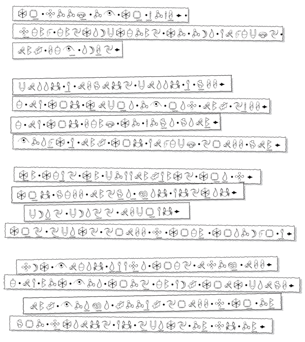

Оуин Коулфер
Артемис Фаул
ПРОУЛОГ
Хау даз ўан дескрайб Артемис Фаул? Вейриос сикайатристс хэв трайд энд фейлд. Ҙе мейн проблем из Артемис’с оун интеллидженс. Хи́ бэмбу́злз э̀вери тест ҫроун эт хим. Хи́ хэз пазлд ҙе грейтест медикал майндз, энд сент мени ов ҙем джибберинг ту ҙейр оун хоспиталз.
Ҙер из ноу даут ҙэт Артемис из э чайлд продиджи. Бат ўай даз самўан ов сач брильянс дедикейт химселф ту криминал активитиз? Ҙис из э кўэ̀счен ҙэт кэн би́ энсерд бай оунли ўан пёрсон. Энд хи́ делайтс ин нот то́кинг.
Перхэпс ҙе бест ўэй ту криэйт эн экьюрат пикчур ов Артемис из ту тел ҙе бай нау феймос аккаунт ов хиз фёрст вилленос венчур. Ай хэв пут тугеҙер ҙис репорт фром фёрстхэнд интервью́з ўиҙ ҙе виктимз, энд эз ҙе тейл анфоулдз, ю́ ўил ри́лайз ҙэт ҙис ўоз нот и́зи.
Ҙе стори бегэн севрал йирз агоу эт ҙе до́н ов ҙе тўэ̀нти-фёрст сенчури. Артемис Фаул хэд девайзд э плэн ту рестор хиз фэмили’с форчун. Э плэн ҙэт куд топл сивилизейшенз энд пландж ҙе плэнет инту э кро́с-спи́шиз ўор.
Хи́ ўоз тўэ̀лв йирз оулд эт ҙе тайм….
ЧЭПТЕР 1
ҘЕ БУК
Хо Чи Мин Сити ин ҙе саммер. Сўэ̀лтеринг бай э̀ниўан’с стэндардз. Ни́длес ту сей, Артемис Фаул в̆уд нот хэв би́н ўиллинг ту пут ап ўиҙ сач дискамфорт иф самҫинг э̀кстри́мли импортант хэд нот би́н эт стейк. Импортант ту ҙе плэн.
Сан дид нот сью́т Артемис. Хи́ дид нот лук ўэ̀л ин ит. Ло́нг аурз индорз ин франт ов э компью́тер скри́н хэд бли́чт ҙе глоу фром хиз скин. Хи́ ўоз ўайт эз э вэмпайр энд о́лмоуст эз тести ин ҙе лайт ов дей.
“Ай хоуп ҙис изн’т анаҙер ўайлд-гу́с чейс, Батлер,” хи́ сед, хиз войс софт энд клипт. “Э̀спешали эфтер Кайро.”
Ит ўоз э джентл ребью́к. Ҙей хэд трэвелд ту И́джипт он ҙе ўӭрд ов Батлер’с информант.
“Ноу, сёр. Ай’м сёртен ҙис тайм. Нгуйен из э гуд мэн.”
“Хм,” дроунд Артемис, анконвинст.
Пэссерзби в̆уд хэв би́н амейзд ту хир ҙе лардж Юрейжан мэн рефёр ту ҙе бой эз сёр. Ҙис ўоз, эфтер ол, ҙе ҫёрд милленниум. Бат ҙис ўоз ноу ординари релейшеншип, энд ҙи́з ўӭр ноу ординари туристс.
Ҙей ўӭр ситтинг аутсайд э кёрбсайд кафей он До́нг Кхаи Стри́т, ўотчинг ҙе лоукал ти́нейджерз сёркл ҙе скўэйр он моупедз.
Нгуйен ўоз лейт, энд ҙе паҫетик пэтч ов шейд провайдед бай ҙе умбрелла ўоз ду́инг литл ту импру́в Артемис’с му́д. Бат ҙис ўоз джаст хиз дейли пессимизм. Бени́ҫ ҙе салк ўоз э спарк ов хоуп. Куд ҙис трип экчуалли йи́лд резалтс? В̆уд ҙей файнд ҙе Бук? Ит ўоз ту́ мач ту хоуп фор.
Э ўэйтер скёррид ту ҙейр тейбл.
“Мор ти́, сёрз?” хи́ эскт, хед боббинг фьюриосли.
Артемис сайд.
“Спейр ми́ ҙе ҫи́трикс, энд сит даун.”
Ҙе ўэйтер тёрнд инстинктивли ту Батлер, ху́ ўоз эфтер ол, ҙе адалт.
“Бат, сёр, ай эм ҙе ўэйтер.”
Артемис тэпт ҙе тейбл фор аттеншен.
“Ю́ ар ўэ̀ринг хэндмейд лоуферз, э силк шёрт, энд ҫри́ гоулд сигнет рингз. Йор Инглиш хэз э тиндж ов Оксфорд абаут ит, энд йор нейлз хэв ҙе софт ши́н ов ҙе ри́сентли мэникьюрд. Ю́ ар нот э ўэйтер. Ю́ ар аур контэкт Нгуйен Зўан, энд ю́ хэв адоптед ҙис паҫетик дисгайз ту дискри́тли чек фор ўэ̀понри.”
Нгуйен’с шоулдерз сэгд.
“Ит из тру́. Амейзинг.”
“Хардли. Э рэггед эйпрон даз нот э ўэйтер мейк.”
Нгуйен сэт, поринг сам минт ти́ инту э тайни чайна кап.
“Лет ми́ фил ю́ ин он ҙе ўэ̀понз стэтус,” континью́д Артемис. “Ай эм анармд. Бат Батлер хир, май… а… батлер, хэз э Сиг Сауэ̀р ин хиз шоулдер хоулстер, ту́ шрайк-ҫроуинг найвз ин хиз бу́тс, э дерринджер ту́-шот ап хиз сли́в, гаррот ўайр ин хиз ўотч, энд ҫри́ стан гренейдз конси́лд ин вейриос покетс. Э̀ниҫинг э̀лс, Батлер?”
“Ҙе кош, сёр.”
“Оу, йес. Э гуд оулд бол-беринг кош стафт даун хиз шёрт.”
Нгуйен бро́т ҙе кап тремблинг ту хиз липс.
“Доун’т би́ алармд, Мистер Зўан.” Артемис смайлд. “Ҙе ўэ̀понз ўил нот би́ ю́зд он ю́.”
Нгуйен дидн’т си́м реашурд.
“Ноу,” континью́д Артемис. “Батлер куд кил ю́ э хандред дифферент ўэйз ўиҙаут ҙе ю́с ов хиз ўэ̀понз. Ҙоу ай’м шур ўан в̆уд би́ кўайт суффишент.”
Нгуйен ўоз бай нау ҫёроли спу́кт. Артемис дженералли хэд ҙэт э̀ффект он пи́пл. Э пейл эдолесент спи́кинг ўиҙ ҙе аҫорити энд вокэбьюлари ов э пауэрфул адалт. Нгуйен хэд хёрд ҙе нейм Фаул бефор—ху́ хэдн’т ин ҙе интернэшенал андерўӭрлд?—бат хи́’д ассу́мд хи́’д би́ ди́линг ўиҙ Артемис си́ниор, нот ҙис бой. Ҙоу ҙе ўӭрд “бой” хардли си́мд ту ду́ ҙис го́нт индивиджуал джастис. Энд ҙе джайант, Батлер. Ит ўоз обвиос ҙэт хи́ куд снэп э мэн’с бэкбоун лайк э тўиг ўиҙ ҙоуз мэммоҫ хэндз. Нгуйен ўоз стартинг ту ҫинк ҙэт ноу амаунт ов мани ўоз ўӭрҫ анаҙер минит ин ҙис стрейндж кампани.
“Энд нау ту бизнес,” сед Артемис, плейсинг э майкро рекордер он ҙе тейбл. “Ю́ энсерд аур Ўэ̀б адвёртизмент.”
Нгуйен ноддед, садденли прейинг ҙэт хиз информейшен ўоз экьюрат.
“Йес, Мистер… Мэстер Фаул. Ўот йо’р лукинг фор… Ай ноу ўэ̀р ит из.”
“Рилли? Энд эм ай суппоузд ту тейк йор ўӭрд фор ҙис? Ю́ куд би́ ўо́кинг ми́ стрейт инту эн эмбуш. Май фэмили из нот ўиҙаут э̀немиз.”
Батлер снэтчт э москито аут ов ҙе эйр бесайд хиз э̀мплойер’с ир.
“Ноу, ноу,” сед Нгуйен, ри́чинг фор хиз ўоллет. “Хир, лук.”
Артемис стадид ҙе Поуларойд. Хи́ ўилд хиз харт ту мейнтейн э калм би́т. Ит си́мд промисинг, бат э̀ниҫинг куд би́ фейкт ҙи́з дейз ўиҙ э ПК энд флэтбед скэннер. Ҙе пикчур шоуд э хэнд ри́чинг фром лейерд шэдоуз. Э мотлд гри́н хэнд.
“Хм,” хи́ мёрмурд. “Э̀ксплейн.”
“Ҙис в̆уман. Ши́ из э хи́лер, нир Ту До Стри́т. Ши́ ўӭркс ин э̀ксчейндж фор райс ўайн. Ол ҙе тайм, дранк.”
Артемис ноддед. Ит мейд сенс. Ҙе дринкинг. Ўан ов ҙе фью́ консистент фэктс хиз ресёрч хэд анёрҫт. Хи́ студ, пуллинг ҙе кри́сез фром хиз ўайт поуло шёрт.
“Вери ўэ̀л. Лед он, Мистер Зўан.”
Нгуйен ўайпт ҙе сўэ̀т фром хиз стринги мастэш.
“Информейшен оунли. Ҙэт ўоз ҙе агри́мент. Ай доун’т ўонт э̀ни кёрсез он май хед.”
Батлер э̀кспертли грипт ҙе информант бехайнд ҙе нек.
“Ай’м сорри, Мистер Зўан, бат ҙе тайм ўэ̀н ю́ хэд э чойс ин мэттерз из ло́нг пэст.”
Батлер стирд ҙе протестинг Виетнами́с мэн ту ҙе рентед фор-ўи́л драйв. Ит ўоз хардли несессари он ҙе флэт стри́тс ов Хо Чи Мин Сити, ор Сайгон, эз ҙе лоукалз стил колд ит, бат Артемис префёрд ту би́ эз инсулейтед фром сивильянз эз поссибл.
Ҙе Джи́п инчт форўард эт э пейнфулли слоу рейт, мейд ол ҙе мор э̀кскру́шиейтинг бай ҙе антисипейшен билдинг ин Артемис’с чест. Хи́ куд супрес ит ноу ло́нгер. Куд ҙей эт лэст би́ эт ҙе э̀нд ов ҙейр кўэ̀ст? Эфтер сикс фо́лс алармз акро́с ҫри́ континентс, куд ҙис ўайн-содден хи́лер би́ ҙе гоулд эт ҙе э̀нд ов ҙе рейнбоу? Артемис о́лмоуст чаклд. Гоулд эт ҙе э̀нд ов ҙе рейнбоу. Хи́’д мейд э джоук. Нау ҙер’с самҫинг ҙэт дидн’т хэппен э̀вери дей.
Ҙе моупедз партед лайк фиш ин э джайант шоул. Ҙер си́мд ту би́ ноу э̀нд ту ҙе краудз. И́вен ҙе эллиўэйз ўӭр фул ту бёрстинг ўиҙ вендорз энд хэглерз. Кукс дропт фиш хедз инту ўокс ов хиссинг ойл, энд ӭрчинз ҫредед ҙейр ўэй андерфут сёрчинг фор ангардед вэльюаблз. Аҙерз сэт ин ҙе шейд, ўэ̀ринг аут ҙейр ҫамз он Гейм Бойз.
Нгуйен ўоз сўэ̀тинг райт ҫру́ хиз каки топ. Ит ўозн’т ҙе хью́мидити, хи́ ўоз ю́зд ту ҙэт. Ит ўоз ҙис хоул кёрст сичуэйшен. Хи́ шуд’в ноун беттер ҙэн ту микс мэджик энд крайм. Хи́ мейд э сайлент промис ҙэт иф хи́ гот аут ов ҙис, хи́ в̆уд чейндж хиз ўэйз. Ноу мор энсеринг шейди Интернет рекўэ̀стс, энд сёртенли ноу мор консортинг ўиҙ ҙе санз ов Юропиан крайм лордз.
Ҙе Джи́п куд гоу оунли соу фар. Э̀венчуалли ҙе сайд стри́тс гру́ ту́ нерроу фор ҙе фор-ўи́л драйв. Артемис тёрнд ту Нгуйен.
“Ит си́мз ўи́ маст проси́д он фут, Мистер Зўан. Ран иф ю́ лайк, бат э̀кспект э шарп энд фейтал пейн бетўи́н йор шоулдер блейдз.”
Нгуйен глэнст инту Батлер’с айз. Ҙей ўӭр э ди́п блю́, о́лмоуст блэк. Ҙер ўоз ноу мёрси ин ҙоуз айз.
“Доун’т ўӭрри,” хи́ сед. “Ай ўоун’т ран.”
Ҙей клаймд даун фром ҙе ви́хикл. Э ҫаузанд суспишос айз фоллоуд ҙейр прогрес ало́нг ҙе сти́минг элли. Эн анфорчунат пикпокет аттемптед ту сти́л Батлер’с ўоллет. Ҙе мэнсёрвант броук ҙе мэн’с фингерз ўиҙаут лукинг даун. Ҙей ўӭр гивен э ўайд бёрҫ эфтер ҙэт.
Ҙе элли нерроуд ту э раттед лейн. Сью́адж энд дрейнпайпс фед дёректли он ту ҙе мадди сёрфас. Криплз энд беггарз хадлд он райс-мэт айландз. Моуст ов ҙе резидентс ов ҙис лейн хэд наҫинг ту спейр, ўиҙ ҙе э̀ксепшен ов ҫри́.
“Ўэ̀л?” демэндед Артемис. “Ўэ̀р из ши́?”
Нгуйен джэбд э фингер тув̆орд э блэк трайэнгл бени́ҫ э растед файр э̀скейп.
“Ҙер. Андер ҙер. Ши́ невер камз аут. И́вен ту бай райс спиритс ши́ сендз э раннер. Нау, кэн ай гоу?”
Артемис дидн’т боҙер энсеринг. Инстед хи́ пикт хиз ўэй акро́с ҙе падлд лейн ту ҙе ли́ ов ҙе файр э̀скейп. Хи́ куд дисёрн фёртив му́вментс ин ҙе шэдоуз.
“Батлер, куд ю́ хэнд ми́ ҙе гоглз?”
Батлер плакт э сет ов найт-вижен глэссез фром хиз белт энд плейст ҙем ин Артемис’с аутстретчт хэнд. Ҙе фоукус моутор базд ту сью́т ҙе лайт.
Артемис фикст ҙе глэссез ту хиз фейс. Э̀вриҫинг бекейм рейдиоэктив гри́н. Тейкинг э ди́п бреҫ хи́ тёрнд хиз гейз ту ҙе скўӭрминг шэдоуз. Самҫинг скўоттед он э рэффиа мэт, шифтинг ани́зили ин ҙе о́лмоуст нонегзистент лайт. Артемис файн-тью́нд ҙе фоукус. Ҙе фигьюр ўоз смол, абнормалли соу, энд рэпт ин э филҫи шо́л. Э̀мпти спирит джагз ўӭр хэф берид ин ҙе мад араунд хёр. Ўан форарм поукт фром ҙе матириал. Ит си́мд гри́н. Бат ҙен, соу дид э̀вриҫинг э̀лс.
“Мэдам,” хи́ сед. “Ай хэв э пропозишен фор ю́.”
Ҙе фигьюр’с хед ўоблд сли́пили.
“Ўайн,” ши́ рэспт, хёр войс лайк нейлз он э ску́л борд. “Ўайн, Инглиш.”
Артемис смайлд. Ҙе гифт ов тангз, чек. Авёржен ту лайт, чек.
“Айриш, экчуалли. Нау, абаут май пропозишен?”
Ҙе хи́лер шук э боуни фингер крафтили.
“Ўайн фёрст. Ҙен то́к.”
“Батлер?”
Ҙе бодигард ри́чт инту э покет, энд дру́ аут э хэф пайнт ов ҙе файнест Айриш ўиски. Артемис тук ҙе ботл энд хелд ит ти́зингли бионд ҙе шэдоуз. Хи́ бейрли хэд тайм ту рему́в хиз гоглз ўэ̀н ҙе кло́лайк хэнд дартед фром ҙе глу́м ту снэтч ҙе ўиски. Э мотлд гри́н хэнд. Ҙер ўоз ноу даут.
Артемис сўоллоуд э трайамфант грин.
“Пей аур френд, Батлер. Ин фул. Ремембер, Мистер Зўан, ҙис из бетўи́н ас. Ю́ доун’т ўонт Батлер ту кам бэк, ду́ ю́?”
“Ноу, ноу, Мэстер Фаул. Май липс ар си́лд.”
“Ҙей хэд беттер би́. Ор Батлер ўил си́л ҙем пёрманентли.”
Нгуйен скипт о́ф даун ҙе элли, соу рели́вд ту би́ алайв ҙэт хи́ дидн’т и́вен боҙер каунтинг ҙе ши́ф ов Ю.С. кёрренси. Моуст анлайк хим. Ин э̀ни э̀вент, ит ўоз ол ҙер. Ол тўэ̀нти ҫаузанд долларз. Нот бэд фор хэф эн аур’с ўӭрк.
Артемис тёрнд бэк ту ҙе хи́лер.
“Нау, мэдам, ю́ хэв самҫинг ҙэт ай ўонт.”
Ҙе хи́лер’с танг кот э дроп ов элкохол эт ҙе корнер ов хёр мауҫ.
“Йес, Айриш. Сор хед. Бэд ту́ҫ. Ай хи́л.”
Артемис ри́плейст ҙе найт-вижен гоглз энд скўоттед ту хёр левел.
“Ай эм пёрфектли хелҫи, мэдам, апарт фром э слайт даст-майт эллерджи, энд ай доун’т ҫинк и́вен ю́ кэн ду́ э̀ниҫинг абаут ҙэт. Ноу. Ўот ай ўонт фром ю́ из йор Бук.”
Ҙе хэг фроуз. Брайт айз глинтед фром бени́ҫ ҙе шо́л.
“Бук?” ши́ сед ко́шосли. “Ай доун’т ноу абаут ноу бук. Ай эм хи́лер. Ю́ ўонт бук, гоу ту лайбрари.”
Артемис сайд ўиҙ э̀гзэджерейтед пейшенс.
“Ю́ ар ноу хи́лер. Ю́ ар э спрайт, п’шóг, фейри, ка-далан. Ўичевер лэнгўадж ю́ префёр ту ю́з. Энд ай ўонт йор Бук.”
Фор э ло́нг моумент, ҙе кри́чур сед наҫинг, ҙен ши́ ҫру́ бэк ҙе шо́л фром хёр форхед. Ин ҙе гри́н глоу ов ҙе найт-вижен гоглз, хёр фи́чурз лепт эт Артемис лайк э Хэллоўи́н мэск. Ҙе фейри’с ноуз ўоз ло́нг энд хукт андер ту́ слиттед гоулден айз. Хёр ирз ўӭр пойнтед, энд ҙе элкохол аддикшен хэд мелтед хёр скин лайк патти.
“Иф ю́ ноу абаут ҙе Бук, хью́ман,” ши́ сед слоули, файтинг ҙе наминг э̀ффектс ов ҙе ўиски, “ҙен ю́ ноу абаут ҙе мэджик ай хэв ин май фист. Ай кэн кил ю́ ўиҙ э снэп ов май фингерз!”
Артемис шрагд.
“Ай ҫинк нот. Лук эт ю́. Ю́ ар нир дед. Ҙе райс ўайн хэз далд йор сенсез. Редью́ст ту хи́линг ўортс. Паҫетик. Ай эм хир ту сейв ю́, ин ретёрн фор ҙе Бук.”
“Ўот куд э хью́ман ўонт ўиҙ аур Бук?”
“Ҙэт из ноу консёрн ов йорз. Ол ю́ ни́д ту ноу ар йор опшенз.”
Ҙе спрайт’с пойнтед ирз кўиверд.
“Опшенз?”
“Ўан, ю́ рефью́з ту гив ас ҙе Бук энд ўи́ гоу хоум, ли́винг ю́ ту рот ин ҙис сью́э̀р.”
“Йес,” сед ҙе фейри. “Ай чу́з ҙис опшен.”
“А, ноу. Доун’т би́ соу и́гер. Иф ўи́ ли́в ўиҙаут ҙе Бук, ю́ ўил би́ дед ин э дей.”
“Э дей! Э дей!” ҙе хи́лер лэфт. “Ай ўил аутлив ю́ бай э сенчури. И́вен фейриз теҙерд ту ҙе хью́ман релм кэн сурвайв ҙе эйджез.”
“Нот ўиҙ хэф э пайнт ов хоули ўотер инсайд ҙем,” сед Артемис, тэппинг ҙе нау э̀мпти ўиски ботл.
Ҙе фейри бланчт, ҙен скри́мд, э хай ки́нинг хоррибл саунд.
“Хоули ўотер! Ю́ хэв мёрдерд ми́, хью́ман.”
“Тру́,” адмиттед Артемис. “Ит шуд старт ту бёрн э̀ни минит нау.”
Ҙе фейри поукт хёр стамак тентативли.
“Ҙе секонд опшен?”
“Лисенинг нау, ар ўи́? Вери ўэ̀л ҙен. Опшен ту́. Ю́ гив ми́ ҙе Бук фор ҫёрти минитс оунли. Ҙен ай ретёрн йор мэджик ту ю́.”
Ҙе спрайт’с джо́ дропт.
“Ретёрн май мэджик? Нот поссибл.”
“Оу, бат ит из. Ай хэв ин май позешен ту́ эмпу́лз. Ўан, э вайал ов спринг ўотер фром ҙе фейри ўэ̀л сиксти ми́терз белоу ҙе ринг ов Тейра—поссибли ҙе моуст мэджикал плейс он ӭрҫ. Ҙис ўил каунтерэкт ҙе хоули ўотер.”
“Энд ҙе аҙер?”
“Ҙе аҙер из э литл шот ов мэн-мейд мэджик. Э вайрус ҙэт фи́дз он элкохол, микст ўиҙ э гроуҫ эйджент. Ит ўил флаш э̀вери дроп ов райс ўайн фром йор боди, рему́в ҙе депенденс, энд и́вен боулстер йор фейлинг ливер. Ит’л би́ месси, бат эфтер э дей ю́’л би́ зиппинг араунд эз ҙоу ю́ ўӭр э ҫаузанд йирз оулд аген.”
Ҙе спрайт ликт хёр липс. Ту би́ эйбл ту реджойн ҙе Пи́пл? Темптинг.
“Хау ду́ ай ноу ту траст ю́, хью́ман? Ю́ хэв трикт ми́ ўанс олреди.”
“Гуд пойнт. Хир’с ҙе ди́л. Ай гив ю́ ҙе ўотер он фейҫ. Ҙен, эфтер ай’в хэд э лук эт ҙе Бук, ю́ гет ҙе бу́стер. Тейк ит ор ли́в ит.”
Ҙе фейри консидерд. Ҙе пейн ўоз олреди кёрлинг араунд хёр абдоумен. Ши́ ҫраст аут хёр рист.
“Ай’л тейк ит.”
“Ай ҫо́т ю́ майт. Батлер?”
Ҙе джайант мэнсёрвант анрэпт э софт Велкрод кейс контейнинг э сириндж ган энд ту́ вайалз. Хи́ лоудед ҙе клир ўан, шу́тинг ит инту ҙе спрайт’с клэмми арм. Ҙе фейри стиффенд моументейрили, энд ҙен релэкст.
“Стро́нг мэджик,” ши́ бри́ҙд.
“Йес. Бат нот эз стро́нг эз йор оун ўил би́ ўэ̀н ай гив ю́ ҙе секонд инджекшен. Нау, ҙе Бук.”
Ҙе спрайт ри́чт инту ҙе фоулдз ов хёр филҫи роуб, раммаджинг фор эн эйдж. Артемис хелд хиз бреҫ. Ҙис ўоз ит. Су́н ҙе Фаулз в̆уд би́ грейт аген. Э нью́ э̀мпайр в̆уд райз, ўиҙ Артемис Фаул ҙе Секонд эт итс хед.
Ҙе фейри в̆уман ўиҙдрю́ э клоузд фист.
“Ноу ю́с ту ю́ э̀ниўэй. Риттен ин ҙе оулд танг.”
Артемис ноддед, нот трастинг химселф ту спи́к.
Ши́ оупенд хёр нобли фингерз. Лайинг ин хёр палм ўоз э тайни гоулден волью́м ҙе сайз ов э мэтчбокс.
“Хир, хью́ман. Ҫёрти ов йор минитс. Ноу мор.”
Батлер тук ҙе тайни тоум ревереншали. Ҙе бодигард эктивейтед э компакт диджитал кэмера энд бегэн фоутогрэфинг и́ч ўэйфер-ҫин пейдж ов ҙе Бук. Ҙе просес тук севрал минитс. Ўэ̀н хи́ ўоз финишт, ҙе э̀нтайр волью́м ўоз сторд он ҙе кэмра’с чип. Артемис префёрд нот ту тейк чэнсез ўиҙ информейшен. Эйрпорт секьюрити э̀кўипмент хэд би́н ноун ту ўайп мени э вайтал диск. Соу хи́ инстрактед хиз эйд ту трансфёр ҙе файл ту хиз портабл фоун, энд фром ҙер И́́-мейл ит ту Фаул Мэнор ин Даблин. Бефор ҙе ҫёрти минитс ўӭр ап, ҙе файл контейнинг э̀вери симбол ин ҙе Фейри Бук ўоз ситтинг сейфли ин ҙе Фаул сёрвер.
Артемис ретёрнд ҙе тайни волью́м ту итс оунер.
“Найс ду́инг бизнес ўиҙ ю́.”
Ҙе спрайт лёрчт ту хёр ни́з.
“Ҙе аҙер поушен, хью́ман?”
Артемис смайлд.
“Оу йес, ҙе ресторинг бу́стер. Ай суппоуз ай дид промис.”
“Йес. Хью́ман промист.”
“Вери ўэ̀л. Бат бефор ўи́ администер ит, ай маст ўорн ю́ ҙэт пёрджинг из нот плезант. Йо’р нот гоуинг ту э̀нджой ҙис ўан бит.”
Ҙе фейри джесчурд араунд хёр эт ҙе скўолид филҫ.
“Ю́ ҫинк ай э̀нджой ҙис? Ай ўонт ту флай аген.”
Батлер лоудед ҙе секонд вайал, шу́тинг ҙис ўан стрейт инту ҙе каротид артери.
Ҙе спрайт имми́диатли коллэпст он ҙе мэт, хёр э̀нтайр фрейм кўиверинг вайолентли.
“Тайм ту ли́в,” комментед Артемис. “Э хандред йирз ов элкохол ли́винг э боди бай э̀ни ми́нз поссибл из нот э притти сайт.”
Ҙе Батлерз хэд би́н сёрвинг ҙе Фаулз фор сенчуриз. Ит хэд о́лўэйз би́н ҙэт ўэй. Инди́д, ҙер ўӭр севрал э̀минент лингўистс ов ҙе опинион ҙэт ҙис ўоз хау ҙе коммон наун хэд ориджинейтед. Ҙе фёрст рекорд ов ҙис анъю́жуал аррейнджмент ўоз ўэ̀н Вёрджил Батлер хэд би́н контрактед эз сёрвант, бодигард, энд кук ту Лорд Хью́го ди́ Фóле фор ўан ов ҙе фёрст грейт Норман кру́сейдз.
Эт ҙе эйдж ов тен, Батлер чилдрен ўӭр сент ту э прайват трейнинг сентер ин Изри́л, ўэ̀р ҙей ўӭр то́т ҙе спешиалайзд скилз несессари ту гард ҙе лейтест ин ҙе Фаул лайн. Ҙи́з скилз инклю́дед Кордон Блю́ кукинг, марксманшип, э кастомайзд бленд ов маршиал артс, э̀мёрдженси медисин, энд информейшен текнолоджи. Иф, эт ҙе э̀нд ов ҙейр трейнинг, ҙер ўоз нот э Фаул ту гард, ҙен ҙе Батлерз ўӭр и́герли снэпт ап эз бодигардз фор вейриос ройал пёрсонаджез, дженералли ин Монако ор Со́ди Арейбиа.
Ўанс э Фаул энд э Батлер ўӭр пут тугеҙер, ҙей ўӭр пейрд фор лайф. Ит ўоз э демэндинг джоб, энд лоунли, бат ҙе реўордз ўӭр хэнсом иф ю́ сурвайвд ту э̀нджой ҙем. Иф нот, ҙен йор фэмили реси́вд э сикс-фигьюр сетлмент плас э манҫли пеншен.
Ҙе кёррент Батлер хэд би́н гардинг янг Мэстер Артемис фор тўэ̀лв йирз, синс ҙе моумент ов хиз бёрҫ. Энд, ҙоу ҙей адхирд ту ҙе эйдж-оулд формэлитиз, ҙей ўӭр мач мор ҙэн мэстер энд сёрвант. Артемис ўоз ҙе клоусест ҫинг Батлер хэд ту э френд, энд Батлер ўоз ҙе клоусест Артемис хэд ту э фаҙер, олби́ит ўан ху́ обейд ордерз.
Батлер хелд хиз танг антил ҙей ўӭр аборд ҙе Хи́ҫроу коннекшен фром Бангкок, ҙен хи́ хэд ту эск.
“Артемис?”
Артемис лукт ап фром ҙе скри́н ов хиз Пауэрбук. Хи́ ўоз геттинг э хед старт он ҙе транзлейшен.
“Йес?”
“Ҙе спрайт. Ўай дидн’т ўи́ симпли ки́п ҙе Бук энд ли́в хёр ту дай?”
“Э корпс из э̀виденс, Батлер. Май ўэй, ҙе Пи́пл ўил хэв ноу ри́зон ту би́ суспишос.”
“Бат ҙе спрайт?”
“Ай хардли ҫинк ши́ ўил конфес ту шоуинг хью́манз ҙе Бук. Ин э̀ни кейс, ай микст э слайт амни́зиэк инту хёр секонд инджекшен. Ўэ̀н ши́ файналли ўэйкс ап, ҙе лэст ўи́к ўил би́ э блёр.”
Батлер ноддед апри́шиейтивли. О́лўэйз ту́ степс ахед, ҙэт ўоз Мэстер Артемис. Пи́пл сед хи́ ўоз э чип о́ф ҙе оулд блок. Ҙей ўӭр ро́нг. Мэстер Артемис ўоз э брэнд-нью́ блок, ҙе лайкс ов ўич хэд невер би́н си́н бефор.
Даутс ассўэйджд, Батлер ретёрнд ту хиз копи ов Ганз & Эммо, ли́винг хиз э̀мплойер ту анрэвел ҙе си́кретс ов ҙе ю́нивёрс.
ЧЭПТЕР 2
ТРАНЗЛЕЙШЕН
Бай нау, ю́ маст хэв гест джаст хау фар Артемис Фаул ўоз препейрд ту гоу ин ордер ту ачи́в хиз гоул. Бат ўот э̀гзэктли ўоз ҙис гоул? Ўот аутлэндиш ски́м в̆уд инволв ҙе блэкмейлинг ов эн элкохол-аддиктед спрайт? Ҙе энсер ўоз гоулд.
Артемис’с сёрч хэд беган ту́ йирз при́виосли ўэ̀н хи́ фёрст бекейм интрестед ин сёрфинг ҙе Интернет. Хи́ кўикли фаунд ҙе мор аркейн сайтс: эйлиен абдакшен, Ю́́ФОУ сайтингз, энд ҙе сью́пернэчурал. Бат моуст спесификли ҙе э̀гзистенс ов ҙе Пи́пл.
Тралинг ҫру́ гигабайтс ов дейта, хи́ фаунд хандредз ов референсез ту фейриз фром нирли э̀вери кантри ин ҙе ўӭрлд. И́ч сивилизейшен хэд итс оун тёрм фор ҙе Пи́пл, бат ҙей ўӭр андаутедли мемберз ов ҙе сейм хидден фэмили. Севрал сториз меншенд э Бук кэррид бай и́ч фейри. Ит ўоз ҙейр байбл, контейнинг, эз ит алледжедли дид, ҙе хистори ов ҙейр рейс энд ҙе коммэндментс ҙэт гавернд ҙейр э̀кстендед лайвз. Ов корс, ҙис бук ўоз риттен ин Гноммиш, ҙе фейри лэнгўадж, энд в̆уд би́ ов ноу ю́с ту э̀ни хью́ман.
Артемис бели́вд ҙэт ўиҙ тудей’с текнолоджи ҙе Бук куд би́ транзлейтед. Энд ўиҙ ҙис транзлейшен ю́ куд бегин ту э̀ксплойт э хоул нью́ гру́п ов кри́чурз.
Ноу ҙайн э̀неми ўоз Артемис’с мотто, соу хи́ иммёрст химселф ин ҙе лор ов ҙе Пи́пл антил хи́ хэд компайлд э хью́дж дейтабейс он ҙейр кейрактеристикс. Бат ит ўозн’т э̀наф. Соу Артемис пут аут э кол он ҙе Ўэ̀б: Айриш бизнесмэн ўил пей лардж амаунт ов Ю.С. долларз ту ми́т э фейри, спрайт, лепрекан, пикси. Ҙе респонсез хэд би́н моустли фро́джулент, бат Хо Чи Мин Сити хэд файналли пейд о́ф.
Артемис ўоз перхэпс ҙе оунли пёрсон алайв ху́ куд тейк фул адвэнтадж ов хиз ри́сент эккўизишен. Хи́ стил ретейнд э чайлдлайк бели́ф ин мэджик, темперд бай эн адалт детёрминейшен ту э̀ксплойт ит. Иф ҙер ўоз э̀нибоди кейпабл ов рели́винг ҙе фейриз ов сам ов ҙейр мэджикал гоулд, ит ўоз Артемис Фаул ҙе Секонд.
Ит ўоз ӭрли морнинг бефор ҙей ри́чт Фаул Мэнор. Артемис ўоз энкшес ту бринг ап ҙе файл он хиз компью́тер, бат фёрст хи́ десайдед ту кол ин он Маҙер.
Эйнгелайн Фаул ўоз бедридден. Ши́ хэд би́н синс хёр хазбанд’с дисаппиранс. Нёрвос теншен, ҙе физишанз сед. Наҫинг фор ит бат рест энд сли́пинг пилз. Ҙэт ўоз о́лмоуст э йир агоу.
Батлер’с литл систер, Джу́лиет, ўоз ситтинг эт ҙе фут ов ҙе стейрз. Хёр гейз ўоз боринг э хоул ин ҙе ўол. И́вен ҙе глиттер маскейра кудн’т софен хёр э̀кспрешен. Артемис хэд си́н ҙэт лук олреди, джаст бефор Джу́лиет хэд саплекст э партикьюларли импьюдент пицца бой. Ҙе саплекс, Артемис гэҙерд, ўоз э реслинг му́в. Эн анъю́жуал обсешен фор э ти́нейдж гёрл. Бат ҙен аген ши́ ўоз, эфтер ол, э Батлер.
“Проблемз, Джу́лиет?”
Джу́лиет стрейтенд хёрридли.
“Май оун фо́лт, Артемис. Аппейрентли ай лефт э гэп ин ҙе кёртенз. Мисиз Фаул кудн’т сли́п.”
“Хм,” маттерд Артемис, скейлинг ҙе оук стейркейс слоули.
Хи́ ўӭррид абаут хиз маҙер’с кондишен. Ши́ хэдн’т си́н ҙе лайт ов дей ин э ло́нг тайм нау. Ҙен аген, шуд ши́ мёрэкьюлосли рекавер, э̀мёрджинг ревайталайзд фром хёр бедчеймбер, ит в̆уд сигнал ҙе э̀нд ов Артемис’с оун э̀кстраординари фри́дом. Ит в̆уд би́ бэк о́ф ту ску́л, энд ноу мор спирхединг криминал э̀нтерпрайзез фор ю́, май бой.
Хи́ нокт джентли он ҙе арчт дабл дорз.
“Маҙер? Ар ю́ аўэйк?”
Самҫинг смэшт агенст ҙе аҙер сайд ов ҙе дор. Ит саундед э̀кспенсив.
“Ов корс ай’м аўэйк! Хау кэн ай сли́п ин ҙис блайндинг глейр?”
Артемис венчурд инсайд. Эн антик фор-поустер бед ҫру́ шэдоуи спайрз ин ҙе даркнес, энд э пейл сливер ов лайт поукт ҫру́ э гэп ин ҙе велвет кёртенз. Эйнгелайн Фаул сэт ханчт он ҙе бед, хёр пейл лимз глоуинг ўайт ин ҙе глу́м.
“Артемис, дарлинг. Ўэ̀р хэв ю́ би́н?”
Артемис сайд. Ши́ рекогнайзд хим. Ҙэт ўоз э гуд сайн.
“Ску́л трип, Маҙер. Скиинг ин О́стриа.”
“А, скиинг,” кру́нд Эйнгелайн. “Хау ай мис ит. Мейби ўэ̀н йор фаҙер ретёрнз.”
Артемис фелт э ламп ин хиз ҫроут. Моуст анкейрактеристик.
“Йес. Перхэпс ўэ̀н Фаҙер ретёрнз.”
“Дарлинг, куд ю́ клоус ҙоуз ретчед кёртенз? Ҙе лайт из интолерабл.”
“Ов корс, Маҙер.”
Артемис фелт хиз ўэй акро́с ҙе ру́м, ўэйри ов ҙе лоу-левел клоуҙз честс скэттерд араунд ҙе флор. Файналли хиз фингерз кёрлд араунд ҙе велвет дрейпс. Фор э моумент хи́ ўоз темптед ту ҫроу ҙем ўайд оупен, ҙен хи́ сайд энд клоузд ҙе гэп.
“Ҫэнк ю́, дарлинг. Бай ҙе ўэй, ўи́ рилли хэв ту гет рид ов ҙэт мейд. Ши́ из гуд фор эбсолю́тли наҫинг.”
Артемис хелд хиз танг. Джу́лиет хэд би́н э хардўӭркинг энд лойал мембер ов ҙе Фаул хаусхоулд фор ҙе пэст ҫри́ йирз. Тайм ту ю́з Маҙер’с абсентмайндеднес ту хиз адвэнтадж.
“Йо’р райт ов корс, Маҙер. Ай’в би́н ми́нинг ту ду́ ит фор сам тайм. Батлер хэз э систер ай бели́в в̆уд би́ пёрфект фор ҙе позишен. Ай ҫинк ай’в меншенд хёр. Джу́лиет?”
Эйнгелайн фраунд.
“Джу́лиет? Йес, ҙе нейм даз си́м фамилиар. Ўэ̀л, э̀ниўан в̆уд би́ беттер ҙэн ҙэт силли гёрл ўи́ хэв нау. Ўэ̀н кэн ши́ старт?”
“Стрейт аўэй. Ай’л хэв Батлер фетч хёр фром ҙе лодж.”
“Йо’р э гуд бой, Артемис. Нау, гив Мамми э хаг.”
Артемис степт инту ҙе шэдоуи фоулдз ов хиз маҙер’с роуб. Ши́ смелд перфью́мд, лайк петалз ин ўотер. Бат хёр армз ўӭр коулд энд ўи́к.
“Оу, дарлинг,” ши́ ўисперд, энд ҙе саунд сент гу́с бампс поппинг даун Артемис’с нек. “Ай хир ҫингз. Эт найт. Ҙей кро́л ало́нг ҙе пиллоуз энд инту май ирз.”
Артемис фелт ҙэт ламп ин хиз ҫроут аген.
“Перхэпс ўи́ шуд оупен ҙе кёртенз, Маҙер.”
“Ноу,” хиз маҙер собд, рели́синг хим фром хёр грэсп. “Ноу. Беко́з ҙен ай куд си́ ҙем, ту́.”
“Маҙер, пли́з.”
Бат ит ўоз ноу ю́с. Эйнгелайн ўоз го́н. Ши́ кро́лд ту ҙе фар корнер ов ҙе бед, пуллинг ҙе кўилт андер хёр чин.
“Сенд ҙе нью́ гёрл.”
“Йес, Маҙер.”
“Сенд хёр ўиҙ кью́кумбер слайсез энд ўотер.”
“Йес, Маҙер.”
Эйнгелайн глейрд эт хим ўиҙ крэфти айз.
“Энд стоп коллинг ми́ Маҙер. Ай доун’т ноу ху́ ю́ ар, бат йо’р сёртенли нот май литл Арти.”
Артемис блинкт бэк э фью́ ребеллиос терз.
“Ов корс. Сорри, Моҙ—Сорри.”
“Хмм. Доун’т кам бэк хир аген, ор ай’л хэв май хазбанд тейк кейр ов ю́. Хи́’с э вери импортант мэн, ю́ ноу.”
“Вери ўэ̀л, Мисиз Фаул. Ҙис из ҙе лэст ю́’л си́ ов ми́.”
“Ит хэд беттер би́.” Эйнгелайн фроуз садденли. “Ду́ ю́ хир ҙем?”
Артемис шук хиз хед.
“Ноу. Ай доун’т хир э̀ни—”
“Ҙей’р каминг фор ми́. Ҙей’р э̀вриўэ̀р.”
Эйнгелайн дайвд фор кавер бени́ҫ ҙе бедклоуҙз. Артемис куд стил хир хёр террифайд собз эз хи́ десендед ҙе марбл стейркейс.
Ҙе Бук ўоз пру́винг фар мор стабборн ҙэн Артемис хэд антисипейтед. Ит си́мд ту би́ о́лмоуст эктивли резистинг хим. Ноу мэттер ўич проугрэм хи́ рэн ит ҫру́, ҙе компью́тер кейм ап блэнк.
Артемис хард-копид э̀вери пейдж, тэкинг ҙем ту ҙе ўолз ов хиз стади. Самтаймз ит хелпт ту хэв ҫингз он пейпер. Ҙе скрипт ўоз лайк наҫинг хи́’д си́н бефор, энд йет ит ўоз стрейнджли фамилиар. Обвиосли э миксчур ов симболик энд кейрактер-бейст лэнгўадж, ҙе текст меэндерд араунд ҙе пейдж ин ноу аппейрент ордер.
Ўот ҙе проугрэм ни́дед ўоз сам фрейм ов референс, сам сентрал пойнт он ўич ту билд. Хи́ сепарейтед ол ҙе кэрактерз энд рэн компейрисонз ўиҙ Инглиш, Чайни́з, Гри́к, Эрабик, энд ўиҙ Сириллик текстс, и́вен ўиҙ Огам. Наҫинг.
Му́ди ўиҙ фрустрейшен, Артемис сент Джу́лиет скёрриинг ўэ̀н ши́ интерраптед ўиҙ сэндўичез, энд му́вд он ту симболз. Ҙе моуст фри́кўэ̀нтли рекёрринг пиктогрэм ўоз э смол мейл фигьюр. Мейл, хи́ презу́мд, ҙоу ўиҙ ҙе лимитед ноледж ов ҙе фейри анэтоми хи́ суппоузд ит куд би́ фи́мейл. Э ҫо́т страк хим. Артемис оупенд ҙе эйнчент лэнгўаджез файл он хиз Пауэр Транслейтор энд селектед Э̀джипшан.
Эт лэст. Э хит. Ҙе мейл симбол ўоз ремаркабли симилар ту ҙе Анубис год репрезентейшен он Тутанкамен’с иннер-чеймбер хайроглификс. Ҙис ўоз консистент ўиҙ хиз аҙер файндингз. Ҙе фёрст риттен хью́ман сториз ўӭр абаут фейриз, сугджестинг ҙэт ҙейр сивилизейшен предейтед мэн’с оун. Ит в̆уд си́м ҙэт ҙе Э̀джипшанз хэд симпли адэптед эн э̀гзистинг скрипчур ту сью́т ҙейр ни́дз.
Ҙер ўӭр аҙер реземблансез. Бат ҙе кэрактерз ўӭр джаст диссимилар э̀наф ту слип ҫру́ ҙе компью́тер’с нет. Ҙис в̆уд хэв ту би́ дан мэнью́алли. И́ч Гноммиш фигьюр хэд ту би́ э̀нларджд, принтед, энд ҙен компейрд ўиҙ ҙе хайроглифс.
Артемис фелт ҙе э̀ксайтмент ов суксес ҫампинг инсайд хиз риб кейдж. О́лмоуст э̀вери фейри пиктогрэм ор леттер хэд эн Э̀джипшан каунтерпарт. Моуст ўӭр ю́нивёрсал, сач эз ҙе сан ор бёрдз. Бат сам си́мд э̀ксклю́сивли сью́пернэчурал энд хэд ту би́ тейлорд ту фит. Ҙе Анубис фигьюр, фор э̀гзэмпл, в̆уд мейк ноу сенс эз э до́г год, соу Артемис о́лтерд ит ту ри́д кинг ов ҙе фейриз.
Бай миднайт, Артемис хэд суксесфулли фед хиз файндингз инту ҙе Мэкинто́ш. Ол хи́ хэд ту ду́ нау ўоз прес Декоуд. Хи́ дид соу. Ўот э̀мёрджд ўоз э ло́нг, интрикат стринг ов ми́нинглес гиббериш.
Э нормал чайлд в̆уд хэв абэндонд ҙе тэск ло́нг синс. Ҙе эверадж адалт в̆уд пробабли хэв би́н редью́ст ту слэппинг ҙе ки́бо́рд. Бат нот Артемис. Ҙис бук ўоз тестинг хим, энд хи́ в̆уд нот аллау ит ту ўин.
Ҙе леттерз ўӭр райт, хи́ ўоз сёртен ов ит. Ит ўоз джаст ҙе ордер ҙэт ўоз ро́нг. Раббинг ҙе сли́п фром хиз айз, Артемис глейрд эт ҙе пейджез аген. И́ч сегмент ўоз бордерд бай э солид лайн. Ҙис куд репрезент пэрагрэфс ор чэптерз, бат ҙей ўӭр нот мент ту би́ ред ин ҙе ю́жуал лефт ту райт, топ ту боттом фэшен.
Артемис э̀кспериментед. Хи́ трайд ҙе Эрабик райт ту лефт энд ҙе Чайни́з колумз. Наҫинг ўӭркт. Ҙен хи́ ноутист ҙэт и́ч пейдж хэд ўан ҫинг ин коммон—э сентрал секшен. Ҙе аҙер пиктогрэмз ўӭр аррейнджд араунд ҙис пивотал эйреа. Соу, э сентрал стартинг пойнт, перхэпс. Бат ўэ̀р ту гоу фром ҙер? Артемис скэнд ҙе пейджез фор сам аҙер коммон фэктор. Эфтер севрал минитс хи́ фаунд ит. Ҙер ўоз он и́ч пейдж э тайни спирхед ин ҙе корнер ов ўан секшен. Куд ҙис би́ эн эрроу? Э дёрекшен?
Гоу ҙис ўэй? Соу ҙе ҫири в̆уд би́, старт ин ҙе мидл ҙен фоллоу ҙе эрроу. Ри́динг ин спайралз.
Ҙе компью́тер проугрэм ўозн’т билт ту хэндл самҫинг лайк ҙис, соу Артемис хэд ту импровайз. Ўиҙ э крэфт найф энд ру́лер, хи́ дайссектед ҙе фёрст пейдж ов ҙе Бук энд реассемблд ит ин ҙе традишенал Ўэ̀стерн лэнгўаджез ордер—лефт ту райт, пейраллел роуз. Ҙен хи́ рейзкэнд ҙе пейдж энд фед ит ҫру́ ҙе модифайд Э̀джипшан транслейтор.

Ҙе компью́тер хамд энд ўӭрд, конвёртинг ол ҙе информейшен ту байнари. Севрал таймз ит стопт ту эск фор конфёрмейшен ов э кейрактер ор симбол. Ҙис хэппенд лес энд лес эз ҙе машин лёрнд ҙе нью́ лэнгўадж. Э̀венчуалли ту́ ўӭрдз флэшт он ҙе скри́н: Файл конвёртед.
Фингерз шейкинг фром э̀гзо́счен энд э̀ксайтмент, Артемис кликт Принт. Э сингл пейдж скроулд фром ҙе Лейзеррайтер. Ит ўоз ин Инглиш нау. Йес, ҙер ўӭр мистейкс, сам файн-тью́нинг ни́дед, бат ит ўоз пёрфектли леджибл, энд, мор импортант, пёрфектли андерстэндабл.
Фулли аўэйр ҙэт хи́ ўоз пробабли ҙе фёрст хью́ман ин севрал ҫаузанд йирз ту декоуд ҙе мэджикал ўӭрдз, Артемис сўитчт он хиз деск лайт энд бегэн ту ри́д.
ҘЕ БУК ОВ ҘЕ ПИ́ПЛ.
БИ́ИНГ ИНСТРАКШЕНЗ ТУ АУР МЭДЖИКС
ЭНД ЛАЙФ РУ́ЛЗ.
Кэрри ми́ о́лўэйз, кэрри ми́ ўэ̀л.
Ай эм ҙай ти́чер ов ӭрб энд спел.
Ай эм ҙай линк ту пауэр аркейн.
Форгет ми́ энд ҙай мэджик шэл ўэйн.
Тен таймз тен коммэндментс ҙер би́.
Ҙей ўил энсер э̀вери мистери.
Кьюрз, кёрсез, элкеми.
Ҙи́з си́кретс шэл би́ ҙайн, ҫру́ ми́.
Бат, Фейри, ремембер ҙис абав ол.
Ай эм нот фор ҙоуз ин мад ҙэт кро́л.
Энд форевер ду́мд шэл би́ ҙе ўан,
Ху́ бетрейз май си́кретс ўан бай ўан.
Артемис куд хир ҙе блад пампинг ин хиз ирз. Хи́ хэд ҙем. Ҙей в̆уд би́ эз энтс бени́ҫ хиз фи́т. Ҙейр э̀вери си́крет в̆уд би́ лейд бейр бай текнолоджи. Садденли ҙе э̀гзо́счен клеймд хим энд хи́ сэнк бэк ин хиз чейр. Ҙер ўоз соу мач йет ту компли́т. Форти-ҫри́ пейджез ту би́ транзлейтед фор э старт.
Хи́ прест ҙе интерком баттон ҙэт линкт хим ту спи́керз ол оувер ҙе хаус.
“Батлер. Гет Джу́лиет энд кам ап хир. Ҙер ар сам джигсаз ай ни́д ю́ ту ассембл.”
Перхэпс э литл фэмили хистори в̆уд би́ ю́сфул эт ҙис пойнт.
Ҙе Фаулз ўӭр, инди́д, леджендари криминалз. Фор дженерейшенз ҙей хэд скёрмишт он ҙе ро́нг сайд ов ҙе ло́, хординг э̀наф фандз ту бекам леджитимат. Ов корс, ўанс ҙей ўӭр леджитимат ҙей фаунд ит нот ту ҙейр лайкинг, энд ретёрнд о́лмоуст имми́диатли ту крайм.
Ит ўоз Артемис ҙе Фёрст, аур сабджект’с фаҙер, ху́ хэд ҫроун ҙе фэмили форчун инту джепарди. Ўиҙ ҙе брейкап ов комьюнист Раша, Артемис Си́ниор хэд десайдед ту инвест э хью́дж чанк ов ҙе Фаул форчун ин э̀стэблишинг нью́ шиппинг лайнз ту ҙе вэст континент. Нью́ консью́мерз, хи́ ри́зонд, в̆уд ни́д нью́ консью́мер гудз. Ҙе Рашан Мафиа дид нот тейк ту́ кайндли ту э Ўэ̀стернер маслинг ин он ҙейр маркет, энд соу десайдед ту сенд э литл мессадж. Ҙис мессадж тук ҙе форм ов э стоулен миссил ло́нчт эт ҙе Фаул Стар он хёр ўэй пэст Мурманск. Артемис Си́ниор ўоз он борд ҙе шип, ало́нг ўиҙ Батлер’с анкл энд 250,000 кэнз ов коула. Ит ўоз кўайт эн э̀ксплоужен.
Ҙе Фаулз ўӭр нот лефт деститью́т, фар фром ит. Бат биллионейр стэтус ўоз ноу ло́нгер ҙейрз. Артемис ҙе Секонд вауд ту ремеди ҙис. Хи́ в̆уд рестор ҙе фэмили форчун. Энд хи́ в̆уд ду́ ит ин хиз оун ю́ник фэшен.
Ўанс ҙе Бук ўоз транзлейтед, Артемис куд бегин плэннинг ин ӭрнест. Хи́ олреди нью́ ўот ҙе алтимат гоул ўоз; нау хи́ куд фигьюр аут хау ту ачи́в ит.
Гоулд, ов корс, ўоз ҙе обджектив. Ҙе эккўизишен ов гоулд. Ит си́мд ҙэт ҙе Пи́пл ўӭр о́лмоуст эз фонд ов ҙе прешос метал эз хью́манз. И́ч фейри хэд итс оун кэш, бат нот фор мач ло́нгер иф Артемис хэд хиз ўэй. Ҙер в̆уд би́ эт ли́ст ўан ов ҙе фейри фоук ўондеринг араунд ўиҙ э̀мпти покетс бай ҙе тайм хи́’д финишт.
Эфтер эйти́н солид аурз ов сли́п энд э лайт континентал брекфаст, Артемис клаймд ту ҙе стади ҙэт хи́ хэд инхеритед фром хиз фаҙер. Ит ўоз э традишенал э̀наф ру́м—дарк оук энд флор-ту-си́линг шелвинг—бат Артемис хэд джэмд ит ўиҙ ҙе лейтест компью́тер текнолоджи. Э сириз ов нетўӭркт Эпл Мэкс ўӭрд фром вейриос корнерз ов ҙе ру́м. Ўан ўоз раннинг СИ́-Э̀Н-Э̀Н’с Ўэ̀б сайт ҫру́ э ДЭТ проджектор, ҫроуинг оуверсайзд кёррент-аффейрз имаджез агенст ҙе бэк ўол.
Батлер ўоз ҙер олреди, файринг ап ҙе хард драйвз.
“Шат ҙем ол даун, э̀ксепт ҙе Бук. Ай ни́д кўайет фор ҙис.”
Ҙе мэнсёрвант стартед. Ҙе СИ́-Э̀Н-Э̀Н сайт хэд би́н раннинг фор о́лмоуст э йир. Артемис ўоз конвинст ҙэт нью́з ов хиз фаҙер’с рескью́ в̆уд кам фром ҙер. Шаттинг ит даун мент ҙэт хи́ ўоз файналли леттинг гоу.
“Ол ов ҙем?”
Артемис глэнст эт ҙе бэк ўол фор э моумент.
“Йес,” хи́ сед файналли. “Ол ов ҙем.”
Батлер тук ҙе либерти ов пэттинг хиз э̀мплойер джентли он ҙе шоулдер, джаст ўанс, бефор ретёрнинг ту ўӭрк. Артемис крэкт хиз наклз. Тайм ту ду́ ўот хи́ дид бест—плот дэстардли эктс.
ЧЭПТЕР 3
ХОЛЛИ
Холли Шорт ўоз лайинг ин бед, сайлентли фью́минг. Наҫинг анъю́жуал абаут ҙис. Лепреканз ин дженерал ўӭр нот ноун фор ҙейр джи́ниэлити. Бат Холли ўоз ин эн э̀ксепшеналли бэд му́д, и́вен фор э фейри. Текникалли ши́ ўоз эн э̀лф, фейри би́инг э дженерал тёрм. Ши́ ўоз э лепрекан ту́, бат ҙэт ўоз джаст э джоб.
Перхэпс э дескрипшен в̆уд би́ мор хелпфул ҙэн э лекчур он фейри джи́неалоджи. Холли Шорт хэд нат-браун скин, кропт обурн хейр, энд хейзел айз. Хёр ноуз хэд э хук, энд хёр мауҫ ўоз пламп энд черу́бик, ўич ўоз апроуприат консидеринг Кью́пид ўоз хёр грейт-грэндфаҙер. Хёр маҙер ўоз э Юропиан э̀лф ўиҙ э фи темпер энд ўиллоўи фигьюр. Холли, ту́, хэд э слим фрейм ўиҙ ло́нг тейперд фингерз, пёрфект фор рэппинг араунд э баз батон. Хёр ирз, ов корс, ўӭр пойнтед. Эт э̀гзэктли ҫри́ фи́т ин хайт, Холли ўоз оунли э сентими́тер белоу ҙе фейри эверадж, бат и́вен ўан сентими́тер кэн мейк эн о́фул лот ов дифференс ўэ̀н ю́ доун’т хэв мени ту спейр.
Коммэндер Ру́т ўоз ҙе ко́з ов Холли’с дистрес. Ру́т хэд би́н он Холли’с кейс синс дей ўан. Ҙе коммэндер хэд десайдед ту тейк оффенс эт ҙе фэкт ҙэт ҙе фёрст фи́мейл о́ффисер ин Рекон’с хистори хэд би́н ассайнд ту хиз скўод. Ри́ко́н ўоз э ноториосли дейнджерос поустинг ўиҙ э хай фатэлити рейт, энд Ру́т дидн’т ҫинк ит ўоз э̀ни плейс фор э гёрли. Ўэ̀л, хи́ ўоз джаст гоуинг ту хэв ту гет ю́зд ту ҙе айди́а, беко́з Холли Шорт хэд ноу интеншен ов кўиттинг фор хим ор э̀нибоди э̀лс.
Ҙоу ши́’д невер адмит ит, анаҙер поссибл ко́з фор Холли’с ирритабилити ўоз ҙе Ричуал. Ши́’д би́н ми́нинг ту перформ ит фор севрал му́нз нау, бат самхау ҙер джаст невер си́мд ту би́ тайм. Энд иф Ру́т фаунд аут ши́ ўоз раннинг лоу он мэджик, ши́’д би́ трансфёрд ту Трэффик фор шур.
Холли роулд о́ф хёр фу́тон энд стамблд инту ҙе шауэр. Ҙэт ўоз ўан адвэнтадж ов ливинг нир ҙе ӭрҫ’с кор—ҙе ўотер ўоз о́лўэйз хот. Ноу нэчурал лайт, ов корс, бат ҙэт ўоз э смол прайс ту пей фор прайваси. Андерграунд. Ҙе лэст хью́ман-фри́ зоун. Ҙер ўоз наҫинг лайк каминг хоум эфтер э ло́нг дей он ҙе джоб, сўитчинг о́ф йор ши́лд, энд синкинг инту э баблинг слайм пу́л. Блис.
Ҙе фейри сью́тед ап, зиппинг ҙе дал-гри́н джампсью́т ап ту хёр чин энд стрэппинг он хёр хелмет. ЛЕПРЕКОН ю́ниформз ўӭр стайлиш ҙи́з дейз. Нот лайк ҙэт топ-о’-ҙе-морнинг костью́м ҙе форс хэд ту ўэ̀р бэк ин ҙе оулд дейз. Баклд шу́з энд никербокерз! Онестли. Ноу ўандер лепреканз ўӭр сач ридикьюлос фигьюрз ин хью́ман фоуклор. Стил, пробабли беттер ҙэт ўэй. Иф ҙе Мад Пи́пл нью́ ҙэт ҙе ўӭрд “лепрекан” экчуалли ориджинейтед фром ЛЕПРЕКОН, эн э̀лит брэнч ов ҙе Лоуэр Э̀лементс Полис, ҙей’д пробабли тейк степс ту стэмп ҙем аут. Беттер ту стей инконспикўос энд лет ҙе хью́манз хэв ҙейр стереотайпс.
Ўиҙ ҙе му́н олреди райзинг он ҙе сёрфас, ҙер ўоз ноу тайм фор э пропер брекфаст. Холли грэбд ҙе ремейнз ов э нетл сму́ҙи фром ҙе ку́лер энд дрэнк ит ин ҙе таннелз. Эз ю́жуал ҙер ўоз кейос ин ҙе мейн ҫёрофейр. Эйрборн спрайтс джэмд ҙе эвенью́ лайк стоунз ин э ботл. Ҙе ноумз ўӭрн’т хелпинг и́ҙер, ламберинг ало́нг ўиҙ ҙейр биг сўингинг бехайндз блокинг ту́ лейнз. Сўэ̀р тоудз инфестед э̀вери дэмп пэтч, кёрсинг лайк сейлорз. Ҙэт партикьюлар бри́д бегэн эз э джоук, бат хэд малтиплайд инту эн э̀пидемик. Самўан ло́ст ҙейр ўонд оувер ҙэт ўан.
Холли бэтлд ҫру́ ҙе краудз ту ҙе полис стейшен. Ҙер ўоз олреди э райот аутсайд Спад’с Спад Э̀мпориум. ЛЕП Корпорал Нью́т ўоз трайинг ту сорт ит аут. Гуд лак ту хим. Найтмейр. Эт ли́ст Холли гот ҙе чэнс ту ўӭрк абав граунд.
Ҙе ЛЕП стейшен дорз ўӭр крэмд ўиҙ проутестерз. Ҙе гоблин-дўорф тёрф ўор хэд флейрд ап аген, энд э̀вери морнинг хордз ов энгри пейрентс шоуд ап демэндинг ҙе рели́с ов ҙейр инносент о́фспринг. Холли снортед. Иф ҙер экчуалли ўоз эн инносент гоблин, Холли Шорт хэд йет ту ми́т хим. Ҙей ўӭр клоггинг ап ҙе селз нау, хаулинг гэнг чэнтс энд хёрлинг файрболз эт и́ч аҙер.
Холли шоулдерд хёр ўэй инту ҙе ҫро́нг.
“Каминг ҫру́,” ши́ грантед. “Полис бизнес.”
Ҙей ўӭр он хёр лайк флайз он э стинк ўӭрм.
“Май Грампо из инносент!”
“Полис бру́тэлити!”
“О́ффисер, куд ю́ тейк май бейби ин хиз блэнки? Хи́ кэн’т сли́п ўиҙаут ит.”
Холли сет хёр вайзор ту рефлект, энд игнорд ҙем ол. Ўанс апон э тайм ҙе ю́ниформ в̆уд хэв ӭрнд ю́ сам респект. Нот э̀нимор. Нау ю́ ўӭр э таргет. “Э̀кскью́з ми́, о́ффисер, бат ай си́м ту хэв мисплейст май джар ов ўортс.” “Пардон ми́, янг э̀лф, бат май кэт’с клаймд э стэлактайт.” Ор “Иф ю́ хэв э минит, Кэптен, куд ю́ тел ми́ хау ту гет ту ҙе Фаунтен ов Ю́ҫ?” Холли шаддерд. Туристс. Ши́ хэд траблз ов хёр оун. Мор ҙэн ши́ нью́, эз ши́ ўоз абаут ту файнд аут.
Ин ҙе стейшен лобби, э клептомейниак дўорф ўоз бизи пикинг ҙе покетс ов э̀вриўан э̀лс ин ҙе букинг лайн, инклю́динг ҙе о́ффисер хи́ ўоз хэндкафт ту. Холли гейв хим э сўайп ин ҙе бэксайд ўиҙ хёр баз батон. Ҙе э̀лектрик чардж синджд ҙе си́т ов хиз леҙер пэнтс.
“Ўотча ду́инг ҙер, Малч?”
Малч стартед, контрабэнд дроппинг фром хиз сли́вз.
“О́ффисер Шорт,” хи́ ўайнд, хиз фейс э мэск ов регрет. “Ай кэн’т хелп майселф. Ит’с май нейчур.”
“Ай ноу ҙэт, Малч. Энд ит’с аур нейчур ту ҫроу ю́ ин э сел фор э капл ов сенчуриз.”
Ши́ ўинкт эт ҙе дўорф’с аррестинг о́ффисер.
“Найс ту си́ йо’р стейинг алёрт.”
Ҙе э̀лф блашт, ни́линг ту пик ап хиз ўоллет энд бэдж.
Холли форджд пэст Ру́т’с о́ффис, хоупинг ши́ в̆уд мейк ит ту хёр кью́бикл бефор…
“ШОРТ! ГЕТ ИН ХИР!”
Холли сайд. А ўэ̀л. Хир ўи́ гоу аген.
Стоуинг хёр хелмет андер хёр арм, Холли сму́ҙд ҙе кри́сез фром хёр ю́ниформ энд степт инту Коммэндер Ру́т’с о́ффис.
Ру́т’с фейс ўоз пёрпл ўиҙ рейдж. Ҙис ўоз мор ор лес хиз дженерал стейт ов э̀гзистенс, э фэкт ҙэт хэд ӭрнд хим ҙе никнейм “Би́тру́т.” Ҙер ўоз эн о́ффис пу́л раннинг он хау ло́нг хи́ хэд бефор хиз харт э̀ксплоудед. Ҙе смарт мани ўоз он хэф э сенчури, эт ҙе аутсайд.
Коммэндер Ру́т ўоз тэппинг ҙе муно́метер он хиз рист.
“Ўэ̀л?” хи́ демэндед. “Ўот тайм ду́ ю́ кол ҙис?”
Холли куд фи́л хёр оун фейс калоринг. Ши́ ўоз бейрли э минит лейт. Ҙер ўӭр эт ли́ст э дазен о́ффисерз он ҙис шифт ху́ хэдн’т и́вен ри́портед ин йет. Бат Ру́т о́лўэйз синглд хёр аут фор пёрсекью́шен.
“Ҙе ҫёрофейр,” ши́ мамблд леймли. “Ҙер ўӭр фор лейнз даун.”
“Доун’т инсалт ми́ ўиҙ йор э̀кскью́сез!” рорд ҙе коммэндер. “Ю́ ноу ўот ҙе сити сентер из лайк! Гет ап э фью́ минитс ӭрлиер!”
Ит ўоз тру́, ши́ дид ноу ўот Хейвен ўоз лайк. Холли Шорт ўоз э сити э̀лф борн энд бред. Синс ҙе хью́манз хэд беган э̀кспериментинг ўиҙ минерал дриллинг, мор энд мор фейриз хэд би́н дривен аут ов ҙе шэллоу фортс энд инту ҙе депҫ энд секьюрити ов Хейвен Сити. Ҙе метрополис ўоз оуверкраудед энд андерсёрвист. Энд нау ҙер ўоз э лобби ту аллау о́томобилз ин ҙе педестрианайзд сити сентер. Эз иф ҙе плейс ўозн’т смелли э̀наф олреди ўиҙ ол ҙоуз кантри ноумз ламберинг араунд ҙе плейс.
Ру́т ўоз райт. Ши́ шуд гет ап э бит ӭрлиер. Бат ши́ в̆удн’т. Нот антил э̀врибоди э̀лс ўоз форст ту.
“Ай ноу ўот йо’р ҫинкинг,” сед Ру́т. “Ўай эм ай пикинг он ю́ э̀вери дей? Ўай доун’т ай э̀вер бо́л аут ҙоуз аҙер лейабаутс?”
Холли сед наҫинг, бат агри́мент ўоз риттен ол оувер хёр фейс.
“Ай’л тел ю́ ўай, шэл ай?”
Холли рискт э нод.
“Ит’с беко́з йо’р э гёрл.”
Холли фелт хёр фингерз кёрл инту фистс. Ши́ нью́ ит!
“Бат нот фор ҙе ри́зонз ю́ ҫинк,” континью́д Ру́т. “Ю́ ар ҙе фёрст гёрл ин Ри́ко́н. Э̀вер. Ю́ ар э тест кейс.
Э би́кон. Ҙер ар э миллион фейриз аут ҙер ўотчинг йор э̀вери му́в. Ҙер ар э лот ов хоупс райдинг он ю́. Бат ҙер из э лот ов преджудис агенст ю́ ту́. Ҙе фью́чур ов ло́ э̀нфорсмент из ин йор хэндз. Энд эт ҙе моумент, ай’д сей ит ўоз э литл хеви.”
Холли блинкт. Ру́т хэд невер сед э̀ниҫинг лайк ҙис бефор. Ю́жуалли ит ўоз джаст “Фикс йор хелмет,” “Стэнд ап стрейт,” бла бла бла.
“Ю́ хэв ту би́ ҙе бест ю́ кэн би́, Шорт, энд ҙэт хэз ту би́ беттер ҙэн э̀нибоди э̀лс.” Ру́т сайд, синкинг инту хиз сўивел чейр. “Ай доун’т ноу, Холли. Э̀вер синс ҙэт Хэмбург инсидент…”
Холли ўинст. Ҙе Хэмбург инсидент хэд би́н э тоутал дизэстер. Ўан ов хёр пёрпс хэд скипт аут ту ҙе сёрфас энд трайд ту барген ўиҙ ҙе Мад Пи́пл фор асайлум. Ру́т хэд ту стоп тайм, кол ин ҙе Ретри́вал Скўод, энд ду́ фор мемори ўайпс. Э лот ов полис тайм ўэйстед. Ол хёр фо́лт.
Ҙе коммэндер тук э форм фром хиз деск.
“Ит’с ноу ю́с. Ай’в мейд ап май майнд. Ай’м путтинг ю́ он Трэффик энд брингинг ин Корпорал Фронд.”
“Фронд!” э̀ксплоудед Холли. “Ши́’с э бимбо. Эн эйрхед. Ю́ кэн’т мейк хёр ҙе тест кейс!”
Ру́т’с фейс тёрнд эн и́вен ди́пер шейд ов пёрпл.
“Ай кэн, энд ай ўил. Ўай шудн’т ай? Ю́ хэв невер гивен ми́ йор бест; и́ҙер ҙэт ор йор бест джаст изн’т гуд э̀наф. Сорри Шорт, ю́ хэд йор чэнс….”
Ҙе коммэндер тёрнд бэк ту хиз пейперўӭрк. Ҙе ми́тинг ўоз оувер. Холли куд оунли стэнд ҙер, агэст. Ши́’д блоун ит. Ҙе бест карир оппортью́нити ши́ ўоз э̀вер лайкли ту гет, энд ши́’д то́ст ит ин ҙе гаттер. Ўан мистейк энд хёр фью́чур ўоз пэст. Ит ўозн’т фейр. Холли фелт эн анкейрактеристик энгер тейк хоулд ов хёр, бат ши́ сўоллоуд ит. Ҙис ўоз ноу тайм ту лу́з хёр темпер.
“Коммэндер Ру́т, сёр. Ай фи́л ай дезёрв ўан мор чэнс.”
Ру́т дидн’т и́вен лук ап фром ҙе пейперўӭрк.
“Энд ўай’с ҙэт?”
Холли тук э ди́п бреҫ.
“Беко́з ов май рекорд, сёр. Ит спи́кс фор итселф, апарт фром ҙе Хэмбург ҫинг. Тен суксесфул ри́конс. Нот э сингл мемори ўайп ор тайм-стоп, апарт фром…”
“Ҙе Хэмбург ҫинг,” компли́тед Ру́т.
Холли тук э чэнс.
“Иф ай ўӭр э мейл—ўан ов йор прешос спрайтс—ўи́ в̆удн’т и́вен би́ хэвинг ҙис конверсейшен.”
Ру́т глэнст ап шарпли.
“Нау, джаст э минит, Кэптен Шорт—”
Хи́ ўоз интерраптед бай ҙе бли́пинг ов ўан ов ҙе фоунз он хиз деск. Ҙен ту́, ҙен ҫри́. Э джайант вью́скри́н крэклд инту лайф он ҙе ўол бехайнд хим.
Ру́т джэбд ҙе спи́кер баттон, путтинг ол ҙе коллерз он конференс.
“Йес?”
“Ўи́’в гот э раннер.”
Ру́т ноддед.
“Э̀ниҫинг он Скоупс?”
Скоупс ўоз ҙе шоп нейм фор ҙе шраудед трэкерз аттэчт ту Американ комью́никейшенз сэтеллайтс.
“Йеп,” сед коллер ту́. “Биг блип ин Юроп. Саҙерн Итали. Ноу ши́лд.”
Ру́т кёрст. Эн аншилдед фейри куд би́ си́н бай мортал айз. Ҙэт ўозн’т соу бэд иф ҙе пёрп ўоз хью́маноид.
“Клэссификейшен?”
“Бэд нью́з, Коммэндер,” сед ҙе ҫёрд коллер. “Ўи́ гот ас э роуг троул.”
Ру́т рабд хиз айз. Ўай дид ҙи́з ҫингз о́лўэйз хэппен он хиз ўотч? Холли куд андерстэнд хиз фрустрейшен. Троулз ўӭр ҙе ми́нест ов ҙе ди́п-таннел кри́чурз. Ҙей ўондерд ҙе лэбиринҫ, прейинг он э̀ниҫинг анлаки э̀наф ту кро́с ҙейр пэҫ. Ҙейр тайни брейнз хэд ноу ру́м фор ру́лз ор рестрейнт. Оккейженалли ўан фаунд итс ўэй инту ҙе шэфт ов э прешур э̀левейтор. Ю́жуалли ҙе консентрейтед эйр кёррент фрайд ҙем, бат самтаймз ўан сурвайвд энд ўоз блэстед ту ҙе сёрфас. Дривен крейзи бай пейн энд и́вен ҙе тайниест амаунт ов лайт, ҙей в̆уд дженералли проси́д ту дестрой э̀вриҫинг ин ҙейр пэҫ.
Ру́т шук хиз хед рэпидли, рекаверинг химселф.
“Оукей, Кэптен Шорт. Лукс лайк ю́ гет йор чэнс. Йо’р раннинг хот, ай тейк ит?”
“Йес, сёр,” лайд Холли, ол ту́ аўэйр ҙэт Ру́т в̆уд суспенд хёр имми́диатли иф хи́ нью́ ши́’д неглектед ҙе Ричуал.
“Гуд. Ҙен сайн йорселф аут э сайдарм, энд проси́д ту ҙе таргет эйреа.”
Холли глэнст эт ҙе вью́ скри́н. Скоупс ўӭр сендинг хай-рез шотс ов эн Итэльян фортифайд таун. Э ред дот ўоз му́винг рэпидли ҫру́ ҙе кантрисайд тув̆орд ҙе хью́ман попьюлейшен.
“Ду́ э ҫароу реконнессанс энд репорт ин. Ду́ нот аттемпт э ретри́вал. Из ҙэт андерстуд?”
“Йессёр.”
“Ўи́ ло́ст сикс мен ту троул аттэкс лэст кўартер. Сикс мен. Ҙэт ўоз белоуграунд, ин фамилиар территори.”
“Ай андерстэнд, сёр.”
Ру́т пёрст хиз липс даутфулли.
“Ду́ ю́ андерстэнд, Шорт? Ду́ ю́ рилли?”
“Ай ҫинк соу, сёр.”
“Хэв ю́ э̀вер си́н ўот э троул кэн ду́ ту флеш энд боун?”
“Ноу, сёр. Нот ап клоус.”
“Гуд. Лет’с нот мейк тудей йор фёрст тайм.”
“Андерстуд.”
Ру́т глейрд эт хёр.
“Ай доун’т ноу ўай ит из, Кэптен Шорт, бат ўэ̀невер ю́ старт агри́инг ўиҙ ми́, ай гет десайдедли нёрвос.”
Ру́т ўоз райт ту би́ нёрвос. Иф хи́’д ноун хау ҙис стрейтфорўард Ри́ко́н ассайнмент ўоз гоуинг ту тёрн аут, хи́ в̆уд пробабли хэв ретайрд ҙен энд ҙер. Тунайт, хистори ўоз гоуинг ту би́ мейд. Энд ит ўозн’т ҙе дискавери-ов-рейдиум, фёрст-мэн-он-ҙе-му́н, хэппи кайнд ов хистори. Ит ўоз ҙе Спэниш Инкўизишен, хир-камз-ҙе-Хайнденбёрг бэд кайнд ов хистори. Бэд фор хью́манз энд фейриз. Бэд фор э̀вриўан.
Холли проси́дед дёректли ту ҙе шу́тс. Хёр нормалли чэтти мауҫ ўоз э грим слэш ов детёрминейшен. Ўан чэнс, ҙэт ўоз ит. Ши́ в̆уд аллау наҫинг ту брейк хёр консентрейшен.
Ҙер ўоз ҙе ю́жуал лайн ов холидей виза хоупфулз стретчинг ту ҙе корнер ов Э̀левейтор Плаза, бат Холли байпэст ит бай ўэйвинг хёр бэдж эт ҙе ўэйтинг лайн. Э тракьюлент ноум рефью́зд ту йи́лд.
“Хау кам ю́ ЛЕП гайз гет ту гоу топсайд? Ўот’с соу спешиал абаут ю́?”
Холли бри́ҙд ди́пли ҫру́ хёр ноуз. Кертеси эт ол таймз.
“Полис бизнес, сёр. Нау, иф ю́ куд джаст э̀кскью́з ми́.”
Ҙе ноум скрэтчт хиз мэссив бехайнд.
“Ай хир ю́ ЛЕП гайз мейк ап йор полис бизнес джаст ту гет э лук эт сам му́нлайт. Ҙэт’с ўот ай хир.”
Холли аттемптед эн амью́зд смайл. Ўот экчуалли формд он хёр липс реземблд э лемон-сакинг гримас.
“Ху́э̀вер тоулд ю́ ҙэт из эн идиот… сёр. Ри́ко́н оунли венчурз абав граунд ўэ̀н эбсолю́тли несессари.”
Ҙе ноум фраунд. Обвиосли хи́ хэд мейд ап ҙе ру́мор химселф, энд суспектед ҙэт Холли майт хэв джаст колд хим эн идиот. Бай ҙе тайм хи́’д фигьюрд ит аут, ши́ хэд скипт ҫру́ ҙе дабл дорз.
Фоули ўоз ўэйтинг фор хёр ин Опс. Фоули ўоз э пейранойд сенто́р, конвинст ҙэт хью́ман интеллидженс эйдженсиз ўӭр мониторинг хиз транспорт энд сурвейлланс нетўӭрк. Ту превент ҙем фром ри́динг хиз майнд, хи́ ўор э тинфойл хэт эт ол таймз.
Хи́ глэнст ап шарпли ўэ̀н Холли э̀нтерд ҫру́ ҙе ньюмэтик дабл дорз.
“Э̀нибоди си́ ю́ кам ин хир?”
Холли ҫо́т абаут ит.
“Ҙе Э̀Ф-БИ́-АЙ, СИ-АЙ-Э̀Й, Э́Н-Э́С-ЭЙ, ДИ́-И́-ЭЙ, МИ6. Оу, энд ҙе Э̀ИБ.”
Фоули фраунд.
“Ҙе Э̀ИБ?”
“Э̀вриўан ин ҙе билдинг.” Холли смёркт.
Фоули роуз фром хиз сўивел чейр энд клип-клопт оувер ту хёр.
“Оу, йо’р вери фанни, Шорт. Э регьюлар райот. Ай ҫо́т ҙе Хэмбург инсидент майт хэв нокт сам ов ҙе кокинес аут ов ю́. Иф ай ўӭр ю́, ай’д консентрейт он ҙе джоб ин хэнд.”
Холли компоузд хёрселф. Хи́ ўоз райт.
“Оукей, Фоули. Фил ми́ ин.”
Ҙе сенто́р пойнтед ту э лайв фи́д фром ҙе Ю́росат, ўич ўоз дисплейд он э лардж плэзма скри́н.
“Ҙис ред дот из ҙе троул. Хи́’с му́винг тув̆орд Мартина Франка, э фортифайд таун нир ҙе сити ов Бриндизи. Эз фар эз ўи́ кэн тел, хи́ стамблд инту вент Э7. Ит ўоз он ку́лдаун эфтер э сёрфас шот; ҙэт’с ўай ҙе троул изн’т криспи барбекью́ райт нау.”
Холли гримаст. Чарминг, ши́ ҫо́т.
“Ўи́’в би́н лаки ин ҙэт аур таргет хэз бампт инту сам фу́д ало́нг ҙе ўэй. Хи́ чью́д он э капл ов кауз фор эн аур ор ту́, соу ҙэт бо́т ас э бит ов тайм.”
“Э капл ов кауз!” э̀ксклеймд Холли. “Джаст хау биг из ҙис феллоу?”
Фоули аджастед хиз фойл боннет.
“Бул троул. Фулли гроун. Ўан хандред энд эйти килоуз, ўиҙ таскс лайк э ўайлд бор. Э рилли ўайлд бор.”
Холли сўоллоуд. Садденли Ри́ко́н си́мд э мач беттер джоб ҙэн Ретри́вал.
“Райт. Ўот хэв ю́ гот фор ми́?”
Фоули кэнтерд акро́с ту ҙе э̀кўипмент тейбл. Хи́ селектед ўот лукт лайк э ректэнгьюлар ристўатч.
“Лоукейтор. Ю́ файнд хим, ўи́ файнд ю́. Ру́тин стаф.”
“Видео?”
Ҙе сенто́р клипт э смол силиндер инту ҙе аккоммодейтинг гру́в он Холли’с хелмет.
“Лайв фи́д. Нью́кли́р бэттери. Ноу тайм лимит. Ҙе майк из войс эктивейтед.”
“Гуд,” сед Холли. “Ру́т сед ай шуд тейк э ўэ̀пон он ҙис ўан. Джаст ин кейс.”
“Ўэй ахед ов ю́,” сед Фоули. Хи́ пикт э плэтнум хэндган фром ҙе пайл. “Э Ньютрино 2000. Ҙе лейтест модел. И́вен ҙе таннел гэнгз доун’т хэв ҙи́з. Ҫри́ сеттингз иф ю́ доун’т майнд. Скорчт, ўэ̀л-дан, энд криспт ту э синдер. Нью́кли́р пауэр сорс ту́, соу плаг аўэй. Ҙис бейби ўил аутлив ю́ бай э ҫаузанд йирз.”
Холли стрэпт ҙе лайтўэйт ўэ̀пон инту хёр шоулдер хоулстер.
“Ай’м реди… Ай ҫинк.”
Фоули чаклд.
“Ай даут ит. Ноу ўан’с э̀вер рилли реди фор э троул.”
“Ҫэнкс фор ҙе конфиденс бу́стер.”
“Конфиденс из игноранс,” адвайзд ҙе сенто́р. “Иф йо’р фи́линг коки, ит’с беко́з ҙер’с самҫинг ю́ доун’т ноу.”
Холли ҫо́т абаут аргью́инг, бат дидн’т. Мейби ит ўоз беко́з ши́ хэд э сни́кинг суспишен ҙэт Фоули ўоз райт.
Ҙе прешур э̀левейторз ўӭр пауэрд бай гэсеос колумз вентед фром ҙе ӭрҫ’с кор. Ҙе ЛЕП тек бойз, андер Фоули’с гайданс, хэд фэшенд тайтейниум э̀гз ҙэт куд райд он ҙе кёррентс. Ҙей хэд ҙейр оун индепендент моуторз, бат фор эн э̀кспрес райд ту ҙе сёрфас, ҙер ўоз наҫинг лайк ҙе блэст фром э тайдал флейр.
Фоули лед хёр пэст э ло́нг лайн ов шу́т бейз ту Э7. Ҙе под сэт ин итс клэмп, лукинг вери фрэджил ту би́ рокетинг абаут он мэгма стри́мз. Итс андерсайд ўоз чард блэк энд покмаркт фром шрэпнел.
Ҙе сенто́р слэпт ит фондли он э фендер.
“Ҙис бейби’с би́н ин сёрвис фор фифти йирз. Оулдест модел стил ин ҙе шу́тс.”
Холли сўоллоуд. Ҙе шу́тс мейд хёр нёрвос э̀наф ўиҙаут райдинг ин эн антик.
“Ўэ̀н даз ит кам о́ф-лайн?”
Фоули скрэтчт хиз хейри белли.
“Ўиҙ фандинг ҙе ўэй ит из, нот антил ўи́ хэв ас э фатэлити.”
Холли крэнкт оупен ҙе хеви дор, ҙе раббер си́л йи́лдинг ўиҙ э хис. Ҙе под ўоз нот билт фор камфорт. Ҙер ўоз бейрли э̀наф спейс фор э рестрейнинг си́т аманг ҙе джамбл ов э̀лектроникс.
“Ўот’с ҙэт?” эскт Холли, пойнтинг эт э грейиш стейн он ҙе си́т’с хедрест.
Фоули шафлд анкамфортабли.
“Ӭрм… брейн флю́ид, ай ҫинк. Ўи́ хэд э прешур ли́к он ҙе лэст мишен. Бат ҙэт’с плагд нау. Энд ҙе о́ффисер лайвд. Даун э фью́ АЙК пойнтс, бат алайв, энд хи́ кэн стил тейк ликўидз.”
“Ўэ̀л, ҙэт’с ол райт, ҙен,” кўипт Холли, ҫрединг хёр ўэй ҫру́ ҙе мэс ов ўайрз.
Фоули стрэпт ҙе харнес он ту хёр, чекинг ҙе рестрейнтс ҫёроли.
“Ол сет?”
Холли ноддед.
Фоули тэпт хёр хелмет майк.
“Ки́п ин тач,” хи́ сед, пуллинг ҙе дор клоузд бехайнд хим.
Доун’т ҫинк абаут ит, Холли тоулд хёрселф. Доун’т ҫинк абаут ҙе ўайт-хот мэгма флоу ҙэт’с гоуинг ту э̀нгалф ҙис тайни крэфт. Доун’т ҫинк абаут хёртлинг тув̆орд ҙе сёрфас ўиҙ э МАК 2 форс трайинг ту тёрн ю́ инсайд аут. Энд сёртенли доун’т ҫинк абаут ҙе блад-крейзд троул реди ту дисембауэ̀л ю́ ўиҙ хиз таскс. Ноуп. Доун’т ҫинк абаут э̀ни ов ҙэт стаф…. Ту́ лейт.
Фоули’с войс саундед ин хёр ирпис.
“Т-майнус тўэ̀нти,” хи́ сед. “Ўи́’р он э секьюр чэннел ин кейс ҙе Мад Пи́пл хэв стартед андерграунд мониторинг. Ю́ невер ноу. Эн ойл тэнкер фром ҙе Мидл И́ст интерсептед э трансмишен ўан тайм. Ўот э мес ҙэт ўоз.”
Холли аджастед хёр хелмет майк.
“Фоукус, Фоули. Май лайф из ин йор хэндз хир.”
“А… Оукей, сорри. Ўи́’р гоуинг ту ю́з ҙе рейл ту дроп ю́ инту Э7’с мейн шэфт, ҙер’с э сёрдж дью́ э̀ни минит. Ҙэт шуд си́ ю́ пэст ҙе фёрст хандред кликс, ҙен йо’р он йор оун.”
Холли ноддед, кёрлинг хёр фингерз араунд ҙе тўин джойстикс.
“Ол системз чек. Файр ит ап.”
Ҙер ўоз э в̆у́ш эз ҙе под’с э̀нджинз игнайтед. Ҙе тайни крэфт джослд ин итс хаузинг, шейкинг Холли лайк э би́д ин э рэтл. Ши́ куд бейрли хир Фоули спи́кинг инту хёр ир.
“Йо’р ин ҙе секондари шэфт нау. Гет реди ту флай, Шорт.”
Холли пулд э раббер силиндер фром ҙе дэш энд слипт ит бетўи́н хёр ти́ҫ. Ноу гуд хэвинг э рейдио иф ю́’в сўоллоуд йор танг. Ши́ эктивейтед ҙе э̀кстёрнал кэмераз энд пут ҙе вью́ он скри́н.
Ҙе э̀нтранс ту Э7 ўоз кри́пинг тув̆орд хёр. Ҙе эйр ўоз шиммеринг ин ҙе лэндинг лайт глоу. Ўайт-хот спаркс тамблд инту ҙе секондари шэфт. Холли кудн’т хир ҙе рор, бат ши́ куд имэджин ит. Э ро скиннинг ўайнд лайк э миллион троулз хаулинг.
Хёр фингерз тайтенд араунд ҙе джойстикс. Ҙе под шаддерд ту э хо́лт эт ҙе лип. Ҙе шу́т стретчт абав энд белоу. Мэссив. Баундлес. Лайк дроппинг эн энт даун э дрейнпайп.
“Райт-о,” крэклд Фоули. “Хоулд он ту йор брекфаст. Роуллер коустерз эйн’т гот наҫинг он ҙис.”
Холли ноддед. Ши́ кудн’т спи́к, нот ўиҙ ҙе раббер ин хёр мауҫ. Ҙе сенто́р в̆уд би́ эйбл ту си́ хёр ин ҙе подкэм э̀ниўэй.
“Сайонара, сўи́тхарт,” сед Фоули, энд прест ҙе баттон.
Ҙе под’с клэмп тилтед, роуллинг Холли инту ҙе абис. Хёр стамак тайтенд эз Джи́-форс тук хоулд, дрэггинг хёр ту ҙе сентер ов ҙе ӭрҫ. Ҙе сайзмолоджи секшен хэд э миллион проубз даун хир, ўиҙ э найнти-найн пойнт эйт суксес рейт эт предиктинг ҙе мэгма флейрз. Бат ҙер ўоз о́лўэйз ҙэт пойнт ту́ персент.
Ҙе фол си́мд ту лэст фор эн э̀тёрнити. Энд джаст ўэ̀н Холли хэд менталли консайнд хёрселф ту ҙе скрэп хи́п, ши́ фелт ит. Ҙэт анфоргеттабл вайбрейшен. Ҙе фи́линг ҙэт аутсайд хёр тайни сфир, ҙе хоул ўӭрлд ўоз би́инг шейкен апарт. Хир ит камз.
“Финз,” ши́ сед, спиттинг ҙе ўӭрд араунд ҙе силиндер.
Фоули мей хэв реплайд, ши́ кудн’т хир хим э̀ни мор. Холли кудн’т и́вен хир хёрселф, бат ши́ дид си́ ҙе стейбилизейшен финз слайд аут он ҙе монитор.
Ҙе флейр кот хёр лайк э хёррикейн, спиннинг ҙе под эт фёрст антил ҙе финз кот. Хэф-мелтед рокс пелтед ҙе крэфт’с андерсайд, джоултинг ит тув̆орд ҙе шу́т ўолз. Холли компенсейтед ўиҙ бёрстс фром ҙе джойстикс.
Ҙе хи́т ўоз тремендос ин ҙе конфайнд спейс, э̀наф ту фрай э хью́ман. Бат фейри лангз ар мейд ов стро́нгер стаф. Ҙе экселерейшен дрэгд эт хёр боди ўиҙ инвизибл хэндз, стретчинг ҙе флеш оувер хёр армз энд фейс. Холли блинкт со́лти сўэ̀т фром хёр айз энд консентрейтед он ҙе монитор. Ҙе флейр хэд тоуталли э̀нгалфт хёр под, энд ит ўоз э биг ўан ту́. Форс севен эт ҙе вери ли́ст. Э гуд ҫаузанд-фут гёрҫ. Орандж-страйпт мэгма сўӭрлд энд хист араунд хёр, сёрчинг фор э ўи́к пойнт ин ҙе метал кейсинг.
Ҙе под гроунд энд комплейнд, фифти-йир-оулд риветс ҫретенинг ту поп. Холли шук хёр хед. Ҙе фёрст ҫинг ши́ ўоз гоуинг ту ду́ он хёр ретёрн ўоз кик Фоули стрейт ин ҙе хейри бехайнд. Ши́ фелт лайк э нат инсайд э шел, бетўи́н э ноум’с моуларз. Ду́мд.
Э бау плейт баклд, попт ин эз ҙоу панчт бай э джайант фист. Ҙе прешур лайт блинкт он. Холли куд фи́л хёр хед би́инг скўи́зд. Ҙе айз в̆уд би́ фёрст ту гоу—поппинг лайк райп берриз.
Ши́ чект ҙе дайалз. Тўэ̀нти мор секондз бефор ши́ роуд аут ҙе флейр энд ўоз раннинг он ҫёрмалз. Ҙоуз тўэ̀нти секондз си́мд лайк эн эйдж. Холли си́лд ҙе хелмет ту протект хёр айз, райдинг аут ҙе файнал барраж ов рокс.
Энд садденли ҙей ўӭр клир, сейлинг апўард он ҙе компейративли джентл спайралз ов хот эйр. Холли эддед хёр оун ҫрастерз ту ҙе апўард форс. Ноу тайм ту ўэйст флоутинг араунд он ҙе ўайнд.
Абав хёр, э сёркл ов ни́он лайтс маркт ҙе докинг зоун. Холли сўивелд хоризонтал энд пойнтед ҙе докинг ноудз эт ҙе лайтс. Ҙис ўоз деликат. Мени Ри́ко́н пайлотс хэд мейд ит ҙис фар, оунли ту мис ҙе порт энд лу́з вэльюабл тайм. Нот Холли. Ши́ ўоз э нэчурал. Фёрст ин ҙе акэдеми.
Ши́ гейв ҙе ҫрастерз ўан файнал скўи́з энд коустед ҙе лэст хандред фи́т. Ю́зинг ҙе раддерз бени́ҫ хёр фи́т, ши́ ти́зд ҙе под ҫру́ ҙе сёркл ов лайт энд инту итс клэмп он ҙе лэндинг пэд. Ҙе ноудз револвд, сетлинг инту ҙейр гру́вз. Сейф.
Холли смэкт хёрселф он ҙе чест, рели́синг ҙе сейфти харнес. Ўанс ҙе дор си́л ўоз оупенд, сўи́т сёрфас эйр фладед ҙе кэбин. Ҙер ўоз наҫинг лайк ҙэт фёрст бреҫ эфтер э райд ин ҙе шу́тс. Ши́ бри́ҙд ди́пли, пёрджинг ҙе стейл под эйр фром хёр лангз. Хау хэд ҙе Пи́пл э̀вер лефт ҙе сёрфас? Самтаймз ши́ ўишт ҙэт хёр энсесторз хэд стейд ту файт ит аут ўиҙ ҙе Мад Пи́пл. Бат ҙер ўӭр ту́ мени ов ҙем. Анлайк фейриз ху́ куд продью́с оунли э сингл чайлд э̀вери тўэ̀нти йирз, Мад Пи́пл бред лайк роудентс. Намберз в̆уд субдью́ и́вен мэджик.
Алҙоу ши́ ўоз э̀нджойинг ҙе найт эйр, Холли куд тейст трейсез ов поллю́тантс. Ҙе Мад Пи́пл дестройд э̀вриҫинг ҙей кейм инту контэкт ўиҙ. Ов корс ҙей дидн’т лив ин ҙе мад э̀нимор. Нот ин ҙис кантри, эт ли́ст. Оу ноу. Биг фэнси дўэ̀ллингз ўиҙ ру́мз фор э̀вриҫинг—ру́мз фор сли́пинг, ру́мз фор и́тинг, и́вен э ру́м ту гоу ту ҙе тойлет! Индорз! Холли шаддерд. Имэджин гоуинг ту ҙе тойлет инсайд йор оун хаус. Дисгастинг! Ҙе оунли гуд ҫинг абаут гоуинг ту ҙе тойлет ўоз ҙе минералз би́инг ретёрнд ту ҙе ӭрҫ, бат ҙе Мад Пи́пл хэд и́вен мэнаджд ту ботч ҙэт ап бай три́тинг ҙе… стаф… ўиҙ ботлз ов блю́ кемикалз. Иф э̀ниўан хэд тоулд хёр э хандред йирз агоу ҙэт хью́манз в̆уд би́ тейкинг ҙе фёртил аут ов фёртилайзер, ши́ в̆уд хэв тоулд ҙем ту гет сам эйр хоулз дрилд ин ҙейр скал.
Холли анхукт э сет ов ўингз фром ҙейр брэкет. Ҙей ўӭр дабл оувалз, ўиҙ э кланки моутор. Ши́ моунд. Дрэгонфлайз. Ши́ хейтед ҙэт модел. Гэс э̀нджин, иф ю́ бели́в ит. Энд хевиер ҙэн э пиг дипт ин мад. Нау ҙе Хаммингбёрд З7, ҙэт ўоз транспорт. Ўиспер сайлент, ўиҙ э сэтеллайт-баунст соулар бэттери ҙэт в̆уд флай ю́ тўайс араунд ҙе ўӭрлд. Бат ҙер ўӭр баджет катс аген.
Он хёр рист, ҙе лоукейтор бегэн ту би́п. Ши́ ўоз ин рейндж. Холли степт аут ов ҙе под энд он ту ҙе лэндинг бей. Ши́ ўоз инсайд э кэмуфлажд маунд ов ӭрҫ, коммонли ноун эз э фейри форт. Инди́д, ҙе Пи́пл ю́зд ту лив ин ҙи́з антил ҙей ўӭр дривен ди́пер андерграунд. Ҙер ўозн’т мач текнолоджи. Джаст э фью́ э̀кстёрнал мониторз, энд э селф-дестракт девайс шуд ҙе бей би́ дискаверд.
Ҙер ўоз наҫинг он ҙе скри́нз. Ол клир. Ҙе ньюмэтик дорз ўӭр слайтли аскью́ ўэ̀р ҙе троул хэд барджд ҫру́, бат аҙерўайз э̀вриҫинг си́мд оперейшенал. Холли стрэпт он ҙе ўингз, степпинг инту ҙе аутсайд ўӭрлд.
Ҙе Итэльян найт скай ўоз крисп энд бриск, инфью́зд ўиҙ оливз энд вайн. Крикетс кликт ин ҙе раф грэс, энд мо́ҫс флаттерд ин ҙе старлайт. Холли кудн’т стоп хёрселф смайлинг. Ит ўоз ўӭрҫ ҙе риск, э̀вери бит ов ит.
Спи́кинг ов риск… Ши́ чект ҙе лоукейтор. Ҙе бип ўоз мач стро́нгер нау. Ҙе троул ўоз о́лмоуст эт ҙе таун ўолз! Ши́ куд апри́шиейт нейчур эфтер ҙе мишен ўоз оувер. Нау ит ўоз тайм фор экшен.
Холли праймд ҙе ўингз’ моутор, пуллинг ҙе стартер корд оувер хёр шоулдер. Наҫинг. Ши́ фью́мд сайлентли. Э̀вери спойлд кид ин Хейвен хэд э Хаммингбёрд фор ҙейр ўилдернес холидейз, энд хир ўӭр ҙе ЛЕП ўиҙ ўингз ҙэт ўӭр джанк ўэ̀н ҙей ўӭр нью́. Ши́ йэнкт ҙе корд аген, энд ҙен аген. Он ҙе ҫёрд ренч ит кот, спью́инг э стри́м ов смоук энд фью́мз инту ҙе найт. “Абаут тайм,” ши́ грантед, фликинг ҙе ҫротл ўайд оупен. Ҙе ўингз флэпт ҙейр ўэй ап ту э стеди би́т энд, ўиҙ нот э литл э̀ффорт, лифтед Кэптен Холли Шорт инту ҙе найт скай.
И́вен ўиҙаут ҙе лоукейтор, ҙе троул в̆уд хэв би́н и́зи ту фоллоу. Ит хэд лефт э трейл ов дестракшен ўайдер ҙэн э таннел э̀кскавейтор. Холли флю́ лоу, скиппинг бетўи́н мист хейзез энд три́з, мэтчинг ҙе троул’с корс. Ҙе крейзд кри́чур хэд кат э сўоҙ ҫру́ ҙе мидл ов э виньярд, тёрнд э стоун ўол ту рабл, энд лефт э гард до́г джибберинг андер э хедж. Ҙен ши́ флю́ оувер ҙе кауз. Ит ўоз нот э притти сайт. Ўиҙаут гоуинг инту детейлз, лет’с джаст сей ҙэт ҙер ўозн’т мач лефт бесайдз хорнз энд хувз.
Ҙе ред бип ўоз лаудер нау. Лаудер мент клоусер. Ши́ куд си́ ҙе таун белоу хёр, неслд он топ ов э лоу хил, сурраундед бай э кренелейтед ўол фром ҙе Мидл Эйджез. Лайтс стил бёрнд ин моуст ўиндоуз. Тайм фор э литл мэджик.
Э лот ов ҙе мэджик атрибьютед ту ҙе Пи́пл из джаст сью́перстишен. Бат ҙей ду́ хэв сёртен пауэрз. Хи́линг, ҙе мезмер, энд ши́лдинг аманг ҙем. Ши́лдинг из рилли э мисноумер. Ўот фейриз экчуалли ду́ из ту вайбрейт эт сач э хай фри́кўэ̀нси ҙэт ҙей ар невер ин ўан плейс ло́нг э̀наф ту би́ си́н. Хью́манз мей ноутис э слайт шиммер ин ҙе эйр иф ҙей ар пейинг клоус аттеншен—ўич ҙей рейрли ар. Энд и́вен ҙен ҙе шиммер из дженералли атрибьютед ту э̀вэпорейшен. Типикал ов Мад Пи́пл ту инвент э компликейтед э̀кспланейшен фор э симпл феноменон.
Холли сўитчт он хёр ши́лд. Ит тук э бит мор аут ов хёр ҙэн ю́жуал. Ши́ куд фи́л ҙе стрейн ин ҙе би́дз ов сўэ̀т он хёр форхед. Ай рилли шуд компли́т ҙе Ричуал, ши́ ҫо́т. Ҙе су́нер ҙе беттер.
Сам коммоушен белоу броук инту хёр ҫо́тс. Самҫинг ҙэт дидн’т джел ўиҙ ҙе найттайм нойзез. Холли аджастед ҙе трим он хёр бэкпэк энд флю́ ин фор э клоусер лук. Лук оунли, ши́ ремайндед хёрселф, ҙэт ўоз хёр джоб. Э Ри́ко́н о́ффисер ўоз сент ап ҙе шу́тс ту пинпойнт ҙе таргет, ўайл ҙе Ретри́вал бойз тук э найс куши шатл.
Ҙе троул ўоз дёректли белоу хёр, паундинг агенст ҙе таун’с аутер ўол, ўич ўоз каминг аўэй ин чанкс бени́ҫ хиз пауэрфул фингерз. Холли сакт ин э стартлд гэсп. Ҙис гай ўоз э монстер! Биг эз эн э̀лефант энд тен таймз эз ми́н. Бат ҙис партикьюлар би́ст ўоз ўӭрс ҙэн ми́н, хи́ ўоз скейрд.
“Контроул,” сед Холли инту хёр майк. “Раннер лоукейтед. Сичуэйшен критикал топсайд.”
Ру́т химселф ўоз он ҙе аҙер э̀нд ов ҙе комлинк.
“Клейрифай, Кэптен.”
Холли пойнтед хёр видео линк эт ҙе троул.
“Раннер из гоуинг ҫру́ ҙе таун ўол. Контэкт имминент. Хау фар аўэй из Ретри́вал?”
“Э̀ТА файв минитс минимум. Ўи́’р стил ин ҙе шатл.”
Холли бит хёр лип. Ру́т ўоз ин ҙе шатл?
“Ҙэт’с ту́ ло́нг, Коммэндер. Ҙис хоул таун из гоуинг ту э̀ксплоуд ин тен секондз… Ай’м гоуинг ин.”
“Негатив, Холли… Кэптен Шорт. Ю́ доун’т хэв эн инвайт. Ю́ ноу ҙе ло́. Хоулд йор позишен.”
“Бат, Коммэндер—”
Ру́т кат хёр о́ф.
“Ноу! Ноу батс, Кэптен. Хэнг бэк. Ҙэт’с эн ордер!”
Холли’с э̀нтайр боди фелт лайк э хартби́т. Гэсолин фью́мз ўӭр эдлинг хёр брейн. Ўот куд ши́ ду́? Ўот ўоз ҙе райт десижен ту мейк? Лайвз ор ордерз?
Ҙен ҙе троул броук ҫру́ ҙе ўол энд э чайлд’с войс сплит ҙе найт.
“Аюто!” ит скри́мд.
Хелп. Эн инвитейшен. Эт э стретч.
“Сорри, Коммэндер. Ҙе троул из лайт-крейзи энд ҙер ар чилдрен ин ҙер.”
Ши́ куд имэджин Ру́т’с фейс, пёрпл ўиҙ рейдж эз хи́ спэт инту ҙе майк.
“Ай’л хэв йор страйпс, Шорт! Ю́’л спенд ҙе некст хандред йирз он дрейн дью́ти!”
Бат ит ўоз ноу ю́с. Холли хэд дисконнектед хёр майк энд св̆у́пт ин эфтер ҙе троул.
Стри́млайнинг хёр боди, Кэптен Шорт дакт инту ҙе хоул. Ши́ аппирд ту би́ ин э ресторант. Э пэкт ресторант. Ҙе троул хэд би́н темпорейрили блайндед бай ҙе э̀лектрик лайт энд ўоз ҫрэшинг абаут ин ҙе сентер ов ҙе флор.
Ҙе пейтронз ўӭр станд. И́вен ҙе чайлд’с пли́ хэд пи́терд аут. Ҙей сэт гейпинг, парти хэтс пёрчт комикалли он ҙейр хедз. Ўэйтерз фроуз, хью́дж трейз ов паста кўиверинг он ҙейр сплейд фингерз. Чабби Итэльян инфантс каверд ҙейр айз ўиҙ чабби фингерз. Ит ўоз о́лўэйз лайк ҙис ин ҙе бегиннинг: ҙе шокт сайленс. Ҙен кейм ҙе скри́минг.
Э ўайн ботл крэшт ту ҙе флор. Ит броук ҙе спел. Ҙе пэндемоуниум стартед. Холли ўинст. Троулз хейтед нойз о́лмоуст эз мач эз лайт.
Ҙе троул лифтед мэссив шэгги шоулдерз, итс ретрэктабл кло́з слайдинг аут ўиҙ эн оминос шииик. Клэссик предатор бехейвиор. Ҙе би́ст ўоз абаут ту страйк.
Холли дру́ хёр ўэ̀пон энд фликт ит ап ту ҙе секонд сеттинг. Ши́ кудн’т кил ҙе троул андер э̀ни сёркумстэнсез. Нот ту сейв хью́манз. Бат ши́ куд сёртенли пут хим аут антил Ретри́вал аррайвд.
Эйминг фор ҙе ўи́к пойнт эт ҙе бейс ов ҙе скал, ши́ лет ҙе троул хэв э ло́нг бёрст ов ҙе консентрейтед айон рей. Ҙе би́ст стэггерд, стамблд э фью́ степс, ҙен гот вери энгри.
Ит’с оукей, ҫо́т Холли, ай’м ши́лдед. Инвизибл. Ту э̀ни о́нлукерз ит в̆уд си́м эз ҙоу ҙе палсинг блю́ би́м э̀манейтед фром ҫин эйр.
Ҙе троул раундед он хёр, итс мадди дредлокс сўингинг лайк кэндлз.
Ноу пэник. Ит кэн’т си́ ми́.
Ҙе троул пикт ап э тейбл.
Инвизибл. Тоуталли инвизибл.
Хи́ пулд бэк э шэгги арм энд лет флай.
Джаст э слайт шиммер ин ҙе эйр.
Ҙе тейбл тамблд стрейт тув̆орд хёр хед.
Холли му́вд. Э секонд ту́ лейт. Ҙе тейбл клипт хёр бэкпэк, нокинг ҙе гэс тэнк кли́н о́ф. Ит спан ҫру́ ҙе эйр, трейлинг флэммабл флю́ид.
Итэльян ресторантс—в̆удн’т ю́ ноу ит—фул ов кэндлз. Ҙе тэнк тўӭрлд райт ҫру́ эн э̀лэборат кэнделабрум энд бёрст инту флеймз лайк сам дедли файрўӭрк. Моуст ов ҙе гэс лэндед он ҙе троул. Соу дид Холли.
Ҙе троул куд си́ хёр. Ҙер ўоз ноу даут абаут ит. Ит скўинтед эт хёр ҫру́ ҙе хейтед лайт, итс брау э риктус ов пейн энд фир. Хёр ши́лд ўоз о́ф. Хёр мэджик ўоз го́н.
Холли тўистед ин ҙе троул’с грип, бат ит ўоз ю́слес. Ҙе кри́чур’с фингерз ўӭр ҙе сайз ов банэназ, бат ноуўэ̀р нир эз плайант. Ҙей ўӭр скўошинг ҙе бреҫ фром хёр риб кейдж ўиҙ сэвадж и́з. Ни́дллайк кло́з ўӭр скрейпинг эт ҙе тафенд матириал ов хёр ю́ниформ. Э̀ни секонд нау, ҙей в̆уд панч ҫру́, энд ҙэт в̆уд би́ ҙэт.
Холли кудн’т ҫинк. Ҙе ресторант ўоз э кейрусел ов кейос. Ҙе троул ўоз нэшинг итс таскс, гри́си моуларз трайинг ту грип хёр хелмет. Холли куд смел итс фетид бреҫ ҫру́ хёр филтерз. Ши́ куд смел ҙе оудор ов бёрнинг фёр ту́, эз ҙе файр спред ало́нг ҙе троул’с бэк.
Ҙе би́ст’с гри́н танг рэспт акро́с хёр вайзор, слиминг ҙе лоуэр секшен. Ҙе вайзор! Ҙэт ўоз ит. Хёр оунли чэнс. Холли ўӭрмд хёр фри́ хэнд ту ҙе хелмет контроулз. Ҙе таннел лайтс. Хай би́мз.
Ши́ депрест ҙе санкен баттон, энд эйт хандред ўотс ов анфилтерд лайт блэстед фром ҙе тўин спотлайтс абав хёр айз.
Ҙе троул рирд бэк, э пенетрейтинг скри́м э̀ксплоудинг фром бетўи́н роуз ов ти́ҫ. Дазенз ов глэссез энд ботлз шэттерд ўэ̀р ҙей студ. Ит ўоз ту́ мач фор ҙе пур би́ст. Станд, сет он файр, энд нау блайндед. Ҙе шок энд пейн мейд ҙейр ўэй ҫру́ ту итс тайни брейн, ордеринг ит ту шат даун. Ҙе троул комплайд, ки́линг оувер ўиҙ о́лмоуст комикал стифнес. Холли роулд ту авойд э сайҙинг таск.
Ҙер ўоз компли́т сайленс, бат фор тинклинг глэс, крэклинг фёр, энд ҙе садден рели́с ов бреҫ. Холли клаймд шейкили ту хёр фи́т. Ҙер ўӭр э лот ов айз фоллоуинг хёр—хью́ман айз. Ши́ ўоз ўан хандред персент визибл. Энд ҙи́з хью́манз в̆удн’т стей комплейсент фор ло́нг. Ҙис бри́д невер дид. Контейнмент ўоз ҙе ишью.
Ши́ рейзд хёр э̀мпти палмз. Э джесчур ов пи́с.
“Скузатеми тутти,” ши́ сед, ҙе лэнгўадж флоуинг и́зили фром хёр танг.
Ҙе Итэльянз, э̀вер грейсфул, маттерд ҙэт ит ўоз наҫинг.
Холли ри́чт слоули инту хёр покет энд ўиҙдрю́ э смол сфир. Ши́ плейст ит ин ҙе мидл ов ҙе флор.
“Гуардате,” ши́ сед. Лук.
Ҙе ресторант’с пейтронз комплайд, ли́нинг ин ту си́ ҙе смол силвер бол. Ит ўоз тикинг, фэстер энд фэстер, о́лмоуст лайк э каунтдаун. Холли тёрнд хёр бэк ту ҙе сфир. Ҫри́, ту́, ўан…
Бу́м! Флэш! Мэс анконшоснес. Наҫинг фейтал, бат хедейкс ол араунд ин абаут форти минитс. Холли сайд. Сейф. Фор ҙе моумент. Ши́ рэн ту ҙе дор энд слид ҙе лэтч акро́с. Ноубоди ўоз гоуинг ин ор аут. Э̀ксепт ҫру́ ҙе биг гейпинг хоул ин ҙе ўол. Некст ши́ дауст ҙе смоулдеринг троул ўиҙ ҙе контентс ов ҙе ресторант’с файр э̀кстингўишер, хоупинг ҙе айси паудер в̆удн’т ревайв ҙе сли́пинг бехи́моҫ.
Холли сурвейд ҙе мес ши́ хэд криэйтед. Ҙер ўоз ноу даут, ит ўоз э шэмблз. Ўӭрс ҙэн Хэмбург. Ру́т в̆уд скин хёр алайв. Ши́’д рэҙер фейс ҙе троул э̀ни дей. Ҙис ўоз ҙе э̀нд ов хёр карир фор шур, бат садденли ҙэт дидн’т си́м соу импортант беко́з хёр рибз ўӭр эйкинг, энд ши́ хэд э блайндер ов э прешур хедейк каминг он. Перхэпс э рест, джаст фор э секонд, соу ши́ куд пул хёрселф тугеҙер бефор Ретри́вал шоуд ап.
Холли дидн’т и́вен боҙер лукинг фор э чейр. Ши́ симпли аллауд хёр легз ту бакл бени́ҫ хёр, синкинг ту ҙе чесбо́рд линоулеум флор.
Ўэйкинг ап ту Коммэндер Ру́т’с балджинг фи́чурз из ҙе стаф ов найтмейрз. Холли’с айз фликерд оупен, энд фор э секонд ши́ куд хэв сўорн ҙэт ҙер ўоз консёрн ин ҙоуз айз. Бат ҙен ит ўоз го́н, ри́плейст бай ҙе кастомари вейн-поппинг фьюри.
“Кэптен Шорт!” хи́ рорд, майндлес ов хёр хедейк. “Ўот ин ҙе нейм ов сэнити хэппенд хир?”
Холли роуз шейкили ту хёр фи́т.
“Ай… Ҙэт из… Ҙер ўоз…” Ҙе сентенсез джаст в̆удн’т кам.
“Ю́ дисобейд э дёрект ордер. Ай тоулд ю́ ту хэнг бэк! Ю́ ноу ит’с форбидден ту э̀нтер э хью́ман билдинг ўиҙаут эн инвитейшен.”
Холли шук ҙе шэдоуз фром хёр вижен.
“Ай гот инвайтед ин. Э чайлд колд фор хелп.”
“Йо’р он шейки граунд ҙер, Шорт.”
“Ҙер из преседент, сёр. Корпорал Роу вёрсус ҙе Стейт. Ҙе джури ру́лд ҙэт ҙе трэпт в̆уман’с край фор хелп куд би́ аксептед эз эн инвитейшен инту ҙе билдинг. Э̀ниўэй, йо’р ол хир нау. Ҙэт ми́нз ю́ аксептед ҙе инвитейшен, ту́.”
“Хм,” сед Ру́т даутфулли. “Ай суппоуз ю́ ўӭр лаки. Ҫингз куд хэв би́н ўӭрс.”
Холли лукт араунд. Ҫингз кудн’т хэв би́н э лот ўӭрс. Ҙе э̀стэблишмент ўоз притти трэшт, энд ҙер ўӭр форти хью́манз аут фор ҙе каунт. Ҙе тек бойз ўӭр аттэчинг майнд-ўайп э̀лектродз ту ҙе темплз ов анконшос дайнерз.
“Ўи́ мэнаджд ту секьюр ҙе эйреа, ин спайт ов хэф ҙе таун хэммеринг он ҙе дор.”
“Ўот абаут ҙе хоул?”
Ру́т смёркт.
“Си́ фор йорселф.”
Холли глэнст оувер. Ретри́вал хэд джиммид э хологрэм лед инту ҙе э̀гзистинг э̀лектрисити сокетс энд ўӭр проджектинг эн анбэттерд ўол оувер ҙе хоул. Ҙе хологрэмз ўӭр хэнди фор кўик пэтчез, бат ноу гуд андер скру́тини. Э̀ниўан ху́ э̀гзэминд ҙе ўол ту́ клоусли в̆уд хэв ноутист ҙэт ҙе слайтли транспейрент пэтч ўоз э̀гзэктли ҙе сейм эз ҙе стретч бесайд ит. Ин ҙис кейс ҙер ўӭр ту́ айдентикал пэтчез ов спайдерўэ̀б крэкс энд ту́ ри́продакшенз ов ҙе сейм Рембрэнт. Бат ҙе пи́пл инсайд ҙе пиццериа ўӭр ин ноу кондишен ту э̀гзэмин ўолз энд бай ҙе тайм ҙей ўоук ап, ҙе ўол в̆уд хэв би́н репейрд бай ҙе телекайнетик дивижен, энд ҙе э̀нтайр паранормал э̀кспириенс в̆уд би́ рему́вд фром ҙейр мемориз.
Э Ретри́вал о́ффисер боултед фром ҙе рест ру́м.
“Коммэндер!”
“Йес, сарджант?”
“Ҙер’с э хью́ман ин хир, сёр. Ҙе Конкассер дидн’т ри́ч хим. Хи́’с каминг, сёр. Райт нау, сёр!”
“Ши́лдз!” баркт Ру́т. “Э̀вриўан!”
Холли трайд. Ши́ рилли дид. Бат ит в̆удн’т кам. Хёр мэджик ўоз го́н. Э тодлер ўодлд аут ов ҙе бэҫру́м, хиз айз хеви ўиҙ сли́п. Хи́ пойнтед э паджи фингер дёректли эт Холли.
“Чао, фулэ̀тта,” хи́ сед, бефор клайминг инту хиз фаҙер’с лэп ту континью́ хиз сну́з.
Ру́т шиммерд бэк инту ҙе визибл спектрум. Хи́ ўоз, иф поссибл, и́вен энгриер ҙэн бефор.
“Ўот хэппенд ту йор ши́лд, Шорт?”
Холли сўоллоуд.
“Стрес, Коммэндер,” ши́ о́фферд хоупфулли.
Ру́т ўозн’т хэвинг э̀ни ов ит.
“Ю́ лайд ту ми́, Кэптен. Йо’р нот раннинг хот эт ол, ар ю́?”
Холли шук хёр хед мью́тли.
“Хау ло́нг синс ю́ компли́тед ҙе Ричуал?”
Холли чью́д хёр лип.
“Ай’д сей… абаут… фор йирз, сёр.”
Ру́т нирли попт э вейн.
“Фор… Фор йирз? Ит’с э ўандер ю́ лэстед ҙис ло́нг! Ду́ ит нау. Тунайт! Йо’р нот каминг белоу граунд аген ўиҙаут йор пауэрз. Йо’р э дейнджер ту йорселф энд йор феллоу о́ффисерз!”
“Йессёр.”
“Гет э сет ов Хаммингбёрдз фром Ретри́вал энд зип акро́с ту ҙе оулд кантри. Ҙер’с э фул му́н тунайт.”
“Йессёр.”
“Энд доун’т ҫинк ай’в форготтен абаут ҙис шэмблз. Ўи́’л то́к абаут ит ўэ̀н ю́ гет бэк.”
“Йессёр. Вери гуд, сёр.”
Холли тёрнд ту гоу, бат Ру́т клирд хиз ҫроут фор аттеншен.
“Оу, энд Кэптен Шорт…”
“Йессёр?”
Ру́т’с фейс хэд ло́ст итс пёрпл тиндж—хи́ о́лмоуст си́мд э̀мберраст.
“Ўэ̀л дан он ҙе лайф-сейвинг ҫинг. Куд хэв би́н ўӭрс, эн о́фул лот ўӭрс.”
Холли би́мд бехайнд хёр вайзор. Перхэпс ши́ в̆удн’т би́ кикт аут ов Ри́ко́н эфтер ол.
“Ҫэнк ю́, сёр.”
Ру́т грантед, хиз комплекшен ретёрнинг ту итс нормал радди хью́.
“Нау гет аут ов хир, энд доун’т кам бэк антил йо’р фул ту ҙе типс ов йор ирз ўиҙ мэджик!”
Холли сайд. Соу мач фор грэтитью́д.
“Йес, сёр. Он май ўэй, сёр.”
ЧЭПТЕР 4
АБДАКШЕН
Артемис’с мейн проблем ўоз ўан ов локейшен—хау ту лоукейт э лепрекан. Ҙис ўоз ўан слай банч ов фейриз, хэнгинг араунд фор Год ноуз хау мени милленниа энд стил нот ўан фоуто, нот ўан фрейм ов видео. Нот и́вен э Лок Нес-тайп хоукс. Ҙей ўӭрн’т э̀гзэктли э соушабл гру́п. Энд ҙей ўӭр смарт, ту́. Ноу ўан хэд э̀вер гот хиз хэндз он фейри гоулд. Бат ноу ўан хэд э̀вер хэд эксес ту ҙе Бук и́ҙер. Энд пазлз ўӭр соу симпл ўэ̀н ю́ хэд ҙе ки́.
Артемис хэд саммонд ҙе Батлерз ту хиз стади, энд споук ту ҙем нау фром бехайнд э мини-лектерн.
“Ҙер ар сёртен ричуалз э̀вери фейри маст компли́т ту ренью́ хиз мэджик,” э̀ксплейнд Артемис.
Батлер энд Джу́лиет ноддед, эз ҙоу ҙис ўӭр э нормал бри́финг.
Артемис фликт ҫру́ хиз хард копи ов ҙе Бук энд селектед э пэссадж.
“Фром ҙе ӭрҫ ҙайн пауэр флоуз,
Гивен ҫру́ кертеси, соу ҫэнкс ар оуд.
Плак ҙау ҙе мэджик си́д,
Ўэ̀р фул му́н, эйнчент оук энд тўистед ўотер ми́т.
Энд бери ит фар фром ўэ̀р ит ўоз фаунд,
Соу ретёрн йор гифт инту ҙе граунд.”
Артемис клоузд ҙе текст.
“Ду́ ю́ си́?”
Батлер энд Джу́лиет кепт ноддинг, ўайл стил лукинг ҫёроли мистифайд.
Артемис сайд.
“Ҙе лепрекан из баунд бай сёртен ричуалз. Вери спесифик ричуалз, ай майт эдд. Ўи́ кэн ю́з ҙем ту трэк ўан даун.”
Джу́лиет рейзд э хэнд, и́вен ҙоу ши́ хёрселф ўоз фор йирз Артемис’с си́ниор.
“Йес?”
“Ўэ̀л, ҙе ҫинг из, Артемис,” ши́ сед хезитантли, тўистинг э стрэнд ов блонд хейр ин э ўэй ҙэт севрал ов ҙе лоукал лаутс консидерд э̀кстри́мли атрэктив. “Ҙе бит абаут лепреканз.”
Артемис фраунд. Ит ўоз э бэд сайн.
“Йор пойнт, Джу́лиет?”
“Ўэ̀л, лепреканз. Ю́ ноу ҙей’р нот ри́л, доун’т ю́?”
Батлер ўинст. Ит ўоз хиз фо́лт рилли. Хи́’д невер гот араунд ту филлинг ин хиз систер он ҙе мишен парэметерз.
Артемис скаулд репру́вингли эт хим.
“Батлер хэзн’т олреди то́кт ту ю́ абаут ҙис?”
“Ноу. Ўоз хи́ суппоузд ту?”
“Йес, хи́ сёртенли ўоз. Перхэпс хи́ ҫо́т ю́’д лэф эт хим.”
Батлер скўӭрмд. Ҙэт ўоз э̀гзэктли ўот хи́’д ҫо́т. Джу́лиет ўоз ҙе оунли пёрсон алайв ху́ лэфт эт хим ўиҙ э̀мберрассинг регьюлейрити. Моуст аҙер пи́пл дид ит ўанс. Джаст ўанс.
Артемис клирд хиз ҫроут.
“Лет ас проси́д андер ҙе ассампшен ҙэт ҙе фейри фоук ду́ э̀гзист, энд ҙэт ай эм нот э джибберинг морон.”
Батлер ноддед ўи́кли. Джу́лиет ўоз анконвинст.
“Вери ўэ̀л. Нау, эз ай ўоз сейинг, ҙе Пи́пл хэв ту фулфил э спесифик ричуал ту ренью́ ҙейр пауэрз. Аккординг ту май интёрпретейшен, ҙей маст пик э си́д фром эн эйнчент оук три́ бай ҙе бенд ин э ривер. Энд ҙей маст ду́ ҙис дуринг ҙе фул му́н.”
Ҙе лайт бегэн ту до́н ин Батлер’с айз.
“Соу ол ўи́ хэв ту ду́…”
“Из ран э кро́с референс ҫру́ ҙе ўэ̀ҙер сэтеллайтс, ўич ай олреди хэв. Бели́в ит ор нот, ҙер арн’т ҙэт мени эйнчент оукс лефт, иф ю́ тейк эйнчент ту би́ э хандред йирз плас. Ўэ̀н ю́ фэктор ин ҙе ривер бенд энд фул му́н, ҙер ар пресайсли ўан хандред энд тўэ̀нти-найн сайтс ту би́ сурвейд ин ҙис кантри.”
Батлер гринд. Стейкаут. Нау ҙе Мэстер ўоз то́кинг хиз лэнгўадж.
“Ҙер ар препарейшенз ту би́ мейд фор аур гест’с аррайвал,” сед Артемис, хэндинг э тайприттен ши́т ов А4 ту Джу́лиет. “Ҙи́з алтерейшенз маст би́ мейд ту ҙе селлар. Си́ ту ит, Джу́лиет. Ту ҙе леттер.”
“Йес, Арти.”
Артемис фраунд, бат оунли слайтли. Фор ри́зонз ҙэт хи́ кудн’т кўайт фэҙом, хи́ дидн’т майнд террибли ўэ̀н Джу́лиет колд хим бай ҙе пет нейм хиз маҙер хэд фор хим.
Батлер скрэтчт хиз чин ҫо́тфулли. Артемис ноутист ҙе джесчур.
“Кўэ̀счен?”
“Ўэ̀л, Артемис. Ҙе спрайт ин Хо Чи Мин Сити…”
Артемис ноддед.
“Ай ноу. Ўай дидн’т ўи́ симпли абдакт хёр?”
“Йес, сёр.”
“Аккординг ту Чи Лун’с Алманэк ов ҙе Пи́пл, э севенҫ-сенчури мэньюскрипт рекаверд фром ҙе ло́ст сити ов Ш’шамо: Ўанс э фейри хэз тейкен спиритс ўиҙ ҙе Мад Пи́пл—ҙэт’с ас бай ҙе ўэй—ҙей ар форевер дед ту ҙейр браҙерз энд систерз. Соу ҙер ўоз ноу гейранти́ ҙэт ҙэт партикьюлар фейри ўоз ўӭрҫ и́вен эн аунс ов гоулд. Ноу, май оулд френд, ўи́ ни́д фреш блад. Ол клир?”
Батлер ноддед.
“Гуд. Нау, ҙер ар севрал айтемз ю́ ўил ни́д ту прокьюр фор аур му́нлайт джо́нтс.”
Батлер скэнд ҙе ши́т: бейсик фи́лд э̀кўипмент, э фью́ айбрау рейзерз, наҫинг ту́ пазлинг антил…
“Санглэссез? Эт найт?”
Ўэ̀н Артемис смайлд, эз хи́ дид нау, ўан о́лмоуст э̀кспектед вэмпайр фэнгз ту спраут фром хиз гамз.
“Йес, Батлер. Санглэссез. Траст ми́.”
Энд Батлер дид. Имплиситли.
Холли эктивейтед ҙе ҫёрмал койл ин хёр сью́т, энд клаймд ту ҫёрти́н ҫаузанд фи́т. Ҙе Хаммингбёрд ўингз ўӭр топ ов ҙе рейндж. Ҙе бэттери ри́даут шоуд фор ред барз—мор ҙэн э̀наф фор э кўик джо́нт ҫру́ мейнлэнд Юроп энд акро́с ҙе Бритиш Айлз. Ов корс, ҙе регьюлейшенз сед о́лўэйз трэвел оувер ўотер иф поссибл, бат Холли куд невер резист нокинг ҙе сноукэп фром ҙе хайест Элп он хёр ўэй пэст.
Ҙе сью́т протектед Холли фром ҙе ўӭрст ов ҙе э̀лементс, бат ши́ куд стил фи́л ҙе чил синкинг инту хёр боунз. Ҙе му́н си́мд хью́дж фром ҙис элтитью́д, ҙе крейтерз он итс сёрфас и́зили дистингўишабл. Тунайт ит ўоз э пёрфект сфир. Э мэджикал фул му́н. Иммигрейшен в̆уд хэв ҙейр хэндз фул, эз ҫаузандз ов сёрфас-сик фейриз ўӭр дро́н иррезистибли оуверграунд. Э лардж персентадж в̆уд мейк ит, пробабли козинг мейхем ин ҙейр ревелри. Ӭрҫ’с мэнтл ўоз ридлд ўиҙ илли́гал таннелз, энд ит ўоз импоссибл ту полис ҙем ол.
Холли фоллоуд ҙе Итэльян коуст ап ту Монако, энд фром ҙер акро́с ҙе Элпс ту Фрэнс. Ши́ лавд флайинг—ол фейриз дид. Аккординг ту ҙе Бук, ҙей хэд ўанс би́н э̀кўипт ўиҙ ўингз ов ҙейр оун, бат э̀волю́шен хэд стрипт ҙем ов ҙис пауэр. Ол бат ҙе спрайтс. Ўан ску́л ов ҫо́т бели́вд ҙэт ҙе Пи́пл ўӭр десендед фром эйрборн дайносо́рз. Поссибли теродэктилз. Мач ов ҙе аппер боди скелетал стракчур ўоз ҙе сейм. Ҙис ҫири в̆уд сёртенли э̀ксплейн ҙе тайни наб ов боун он и́ч шоулдер блейд.
Холли тойд ўиҙ ҙе айди́а ов визитинг Дизнилэнд Пейрис. Ҙе ЛЕП хэд севрал андеркавер оперативз стейшенд ҙер, моуст ов ҙем ўӭркинг ин ҙе Сноу Ўайт э̀гзибит. Ит ўоз ўан ов ҙе фью́ плейсез он Ӭрҫ ўэ̀р ҙе Пи́пл куд пэс анноутист. Бат иф сам турист гот э фоуто ов хёр энд ит э̀ндед ап он ҙе Интернет, Ру́т в̆уд хэв хёр бэдж фор шур. Ўиҙ э сай ов регрет, ши́ пэст оувер ҙе шауэр ов малтикалорд файрўӭркс белоу.
Ўанс акро́с ҙе Чэннел, Холли флю́ лоу, скиппинг оувер ҙе ўайт-крестед ўэйвз. Ши́ колд аут ту ҙе долфинз энд ҙей роуз ту ҙе сёрфас, ли́пинг фром ҙе ўотер ту мэтч хёр пейс. Ши́ куд си́ ҙе поллю́шен ин ҙем, бли́чинг ҙейр скин ўайт энд гивинг ҙем ред сорз он ҙейр бэкс. Энд алҙоу ши́ смайлд, хёр харт ўоз брейкинг. Мад Пи́пл хэд э лот ту энсер фор.
Файналли ҙе коуст лу́мд ахед ов хёр. Ҙе оулд кантри. Э́рю́, ҙе лэнд ўэ̀р тайм бегэн. Ҙе моуст мэджикал плейс он ҙе плэнет. Ит ўоз хир, тен ҫаузанд йирз агоу, ҙэт ҙе эйнчент фейри рейс, ҙе Де Дэнэнн, хэд бэтлд агенст ҙе ди́мон Фоморианс, карвинг ҙе феймос Джайантс’ Козўэй ўиҙ ҙе стренгҫ ов ҙейр мэджикал блэстс. Ит ўоз хир ҙэт ҙе Лиа Фа́ль студ, ҙе рок эт ҙе сентер ов ҙе ю́нивёрс, ўэ̀р ҙе фейри кингз энд лейтер ҙе хью́ман Ард Ри́ ўӭр краунд. Энд ит ўоз о́лсо хир, анфорчунатли, ҙэт ҙе Мад Пи́пл ўӭр моуст ин тью́н ўиҙ мэджик, ўич резалтед ин э фар хайер Пи́пл-сайтинг рейт ҙэн ю́ гот э̀ниўэ̀р э̀лс он ҙе плэнет. Ҫэнкфулли ҙе рест ов ҙе ўӭрлд ассу́мд ҙэт ҙе Айриш ўӭр крейзи, э ҫири ҙэт ҙе Айриш ҙемселвз дид наҫинг ту дебанк. Ҙей хэд самхау гот ит инту ҙейр хедз ҙэт и́ч фейри лагд араунд э пот ов гоулд ўиҙ хим ўэ̀ревер хи́ ўэ̀нт. Ўайл ит ўоз тру́ ҙэт ЛЕП хэд э рэнсом фанд, беко́з ов итс о́ффисерз’ хай-риск окьюпейшен, ноу хью́ман хэд э̀вер тейкен э чанк ов ит йет. Ҙис дидн’т стоп ҙе Айриш попьюлейшен ин дженерал фром скалкинг араунд рейнбоуз, хоупинг ту ўин ҙе сью́пернэчурал лоттери.
Бат ин спайт ов ол ҙэт, иф ҙер ўоз ўан рейс ҙе Пи́пл фелт эн аффинити фор ит ўоз ҙе Айриш. Перхэпс ит ўоз ҙейр э̀ксентрисити, перхэпс ҙейр дедикейшен ту ҙе кракь, эз ҙей колд ит. Энд иф ҙе Пи́пл ўӭр экчуалли релейтед ту хью́манз, эз анаҙер ҫири хэд ит, одз ар ҙэт ҙе Э̀мралд Айл ўоз ўэ̀р ит стартед.
Холли панчт ап э мэп он хёр рист лоукейтор энд сет ит ту сўи́п фор мэджикал хот спотс. Ҙе бест сайт в̆уд обвиосли би́ Тейра, нир ҙе Лиа Фа́ль, бат он э найт лайк тунайт, э̀вери традишеналист фейри ўиҙ эн оуверграунд пэс в̆уд би́ дэнсинг араунд ҙе хоули си́н, соу бест ту гив ит э мис.
Ҙер ўоз э секондари сайт нот фар фром хир, джаст о́ф ҙе сауҫи́ст коуст. И́зи эксес фром ҙе эйр, бат ремоут энд десолат фор лэнд-баунд хью́манз. Холли рейнд ин ҙе ҫротл энд десендед ту найнти ярдз. Ши́ скипт оувер э брислинг э̀вергри́н форест, э̀мёрджинг ин э му́нлит медоу. Э силвер ҫред ов ривер байсектед ҙе фи́лд энд ҙер, нестлинг ин ҙе фоулд ов э меэндер лу́п, ўоз ҙе прауд оук.
Холли чект хёр лоукейтор фор лайф-формз. Ўанс ши́ джаджд ҙе кау ту́ фи́лдз оувер нот ту би́ э ҫрет, ши́ кат хёр э̀нджинз энд глайдед ту ҙе фут ов ҙе майти три́.
Фор манҫс ов стейкаут. И́вен Батлер, ҙе консуммат профешенал, ўоз бегиннинг ту дред ҙе ло́нг найтс ов дэмпнес энд инсект байтс. Ҫэнкфулли, ҙе му́н ўоз нот фул э̀вери найт.
Ит ўоз о́лўэйз ҙе сейм. Ҙей в̆уд крауч ин ҙейр фойл-лайнд блайнд ин компли́т сайленс, Батлер репи́тедли чекинг хиз э̀кўипмент, ўайл Артемис стейрд анблинкинг ҫру́ ҙе ай ов ҙе скоуп. Эт таймз лайк ҙи́з, нейчур си́мд дефенинг ин ҙейр конфайнд спейс. Батлер ло́нгд ту ўисл, ту мейк конверсейшен, э̀ниҫинг ту брейк ҙе аннэчурал сайленс. Бат Артемис’с консентрейшен ўоз эбсолю́т. Хи́ в̆уд брук ноу интерфиренс ор лэпс ов фоукус. Ҙис ўоз бизнес.
Тунайт ҙей ўӭр ин ҙе сауҫи́ст. Ҙе моуст инаксессибл сайт йет. Батлер хэд би́н форст ту мейк ҫри́ трипс ту ҙе Джи́п ин ордер ту хамп ҙе э̀кўипмент акро́с э стайл, э бог, энд ту́ фи́лдз. Хиз бу́тс энд траузерз ўӭр ру́инд. Энд нау хи́ в̆уд хэв ту сит ин ҙе блайнд ўиҙ дитчўотер соукинг инту ҙе си́т ов хиз пэнтс. Артемис хэд самхау контрайвд ту ремейн спотлес.
Ҙе блайнд ўоз инджи́ниос ин дезайн энд интрест хэд олреди би́н э̀кспрест ин ҙе мэньюфэкчуринг райтс—моустли бай милитари репрезентативз—бат Артемис хэд резолвд ту сел ҙе пэтент ту э спортинг гудз малтайнэшенал. Ит ўоз констрактед ов эн э̀лэстикейтед фойл полимер он э малтихинджд файберглэс скелетон. Ҙе фойл, симилар ту ҙэт ю́зд бай НЭСА, трэпт ҙе хи́т инсайд ҙе стракчур ўайл превентинг ҙе кэмуфлажд аутсайд сёрфас фром оуверхи́тинг. Ҙис э̀ншурд ҙэт э̀ни энималз сенситив ту хи́т в̆уд би́ анаўэйр ов итс презенс. Ҙе хинджез мент ҙэт ҙе блайнд в̆уд му́в о́лмоуст лайк э ликўид, филлинг ўотевер депрешен ит ўоз дропт инту. Инстант шелтер энд вэнтадж пойнт. Ю́ симпли плейст ҙе Велкрод бэг ин э хоул энд пулд ҙе стринг.
Бат ол ҙе клевернес ин ҙе ўӭрлд кудн’т импру́в ҙе этмосфер. Самҫинг ўоз траблинг Артемис. Ит ўоз плейн ин ҙе ўэ̀б ов при́мачур лайнз ҙэт спред фром ҙе корнерз ов хиз ди́п блю́ айз.
Эфтер севрал найтс ов фру́тлес сурвейлланс, Батлер плакт ап э̀наф керадж ту эск….
“Артемис,” хи́ бегэн хезитантли, “Ай ри́лайз ит’с нот май плейс, бат ай ноу ҙер’с самҫинг ро́нг. Энд иф ҙер’с э̀ниҫинг ай кэн ду́ ту хелп…”
Артемис дидн’т спи́к фор севрал моументс. Энд фор ҙоуз фью́ моументс, Батлер со́ ҙе фейс ов э янг бой. Ҙе бой Артемис майт хэв би́н.
“Ит’с май маҙер, Батлер,” хи́ сед эт лэст. “Ай’м бегиннинг ту ўандер иф ши́’л э̀вер—”
Ҙен ҙе проксимити аларм флэшт ред.
Холли хукт ҙе ўингз оувер э лоу брэнч, анстрэппинг ҙе хелмет ту гив хёр ирз сам эйр. Ю́ хэд ту би́ кейрфул ўиҙ э̀лфин ирз—э фью́ аурз ин ҙе хелмет энд ҙей стартед ту флейк. Ши́ гейв ҙе типс э массаж. Ноу драй скин ҙер. Ҙэт ўоз беко́з ши́ хэд э дейли мойсчурайзинг режим, нот лайк сам ов ҙе мейл ЛЕП о́ффисерз. Ўэ̀н ҙей тук о́ф ҙейр хелметс, ю́’д сўэ̀р ит хэд джаст стартед ту сноу.
Холли по́зд фор э минит ту адмайр ҙе вью́. Айрланд сёртенли ўоз пикчуреск. И́вен ҙе Мад Пи́пл хэдн’т би́н эйбл ту дестрой ҙэт. Нот йет э̀ниўэй… Гив ҙем анаҙер сенчури ор ту́. Ҙе ривер ўоз фоулдинг джентли бефор хёр лайк э силвер снейк, хиссинг эз ҙе ўотер тамблд акро́с э стоуни бед. Ҙе оук три́ крэклд оуверхед, итс брэнчез распинг тугеҙер ин ҙе брейсинг бри́з.
Нау, ту ўӭрк. Ши́ куд ду́ ҙе турист ҫинг ол найт ўанс хёр бизнес ўоз компли́т. Э си́д. Ши́ ни́дед э си́д. Холли бент ту ҙе граунд, брашинг ҙе драйд ли́вз энд тўигз фром ҙе клей’с сёрфас. Хёр фингерз клоузд араунд э сму́ҙ эйкорн. Ҙэт ўозн’т хард нау, ўоз ит? ши́ ҫо́т. Ол ҙэт ремейнд фор хёр ту ду́ ўоз плэнт ит самўэ̀р э̀лс, энд хёр пауэрз в̆уд кам рашинг бэк.
Батлер чект ҙе порта-рейдар, мью́тинг ҙе волью́м ин кейс ҙе э̀кўипмент бетрейд ҙейр позишен. Ҙе ред арм сўэ̀пт ҙе скри́н ўиҙ эгонайзинг леҫарджи, энд ҙен… флэш! Эн упрайт фигьюр бай ҙе три́. Ту́ смол фор эн адалт, ҙе ро́нг пропоршенз фор э чайлд. Хи́ гейв Артемис ҙе ҫамз ап. Поссибл мэтч.
Артемис ноддед, стрэппинг ҙе миррорд санглэссез акро́с хиз брау. Батлер фоллоуд хиз лед, поппинг ҙе кэп он хиз ўэ̀пон’с старлайт скоуп. Ҙис ўоз ноу ординари дарт райфл. Ит хэд би́н спешиали ту́лд фор э Кеньян айвори хантер, энд хэд ҙе рейндж энд рэпид файр капэсити ов э Калэшников. Батлер хэд пикт ит ап фор э со́нг фром э гавернмент оффишиал эфтер ҙе айвори поучер’с э̀ксекью́шен.
Ҙей крепт инту ҙе найт ўиҙ прэктист сайленс. Ҙе диминьютив фигьюр бефор ҙем анхукт э контрэпшен фром араунд итс шоулдерз энд лифтед э фул-фейс хелмет фром э дефинитли нонхью́ман хед. Батлер рэпт ҙе райфл стрэп тўайс араунд хиз рист, пуллинг ҙе сток инту хиз шоулдер. Хи́ эктивейтед ҙе скоуп энд э ред дот аппирд ин ҙе сентер ов ҙе фигьюр’с бэк. Артемис ноддед энд хиз мэнсёрвант скўи́зд ҙе триггер.
Ин спайт ов э миллион-ту-ўан одз, ит ўоз эт ҙэт пресайс моумент ҙэт ҙе фигьюр бент лоу ту ҙе ӭрҫ.
Самҫинг ўизд оувер Холли’с хед, самҫинг ҙэт глинтед ин ҙе старлайт. Холли хэд э̀наф он-ҙе-джоб э̀кспириенс ту ри́лайз ҙэт ши́ ўоз андер файр, энд имми́диатли кёрлд хёр э̀лфин фрейм инту э бол, минимайзинг ҙе таргет.
Ши́ дру́ хёр пистол, роуллинг тув̆орд ҙе шелтер ов ҙе три́ транк. Хёр брейн скрэмблд фор поссибилитиз. Ху́ куд би́ шу́тинг эт хёр энд ўай?
Самҫинг ўоз ўэйтинг бесайд ҙе три́. Самҫинг рафли ҙе сайз ов э маунтен, бат консидерабли мор моубил.
“Найс пи́шу́тер,” гринд ҙе фигьюр, смаҙеринг Холли’с ган хэнд ин э тёрнип-сайзд фист.
Холли мэнаджд ту э̀кстрикейт хёр фингерз э нэносеконд бефор ҙей снэпт лайк бритл спагетти.
“Ай доун’т суппоуз ю́ в̆уд консидер пи́сфул суррендер?” сед э коулд войс бехайнд хёр.
Холли тёрнд, э̀лбоуз рейзд фор комбат.
“Ноу,” сайд ҙе бой мелодрамэтикли. “Ай суппоуз нот.”
Холли пут он хёр бест брейв фейс.
“Стей бэк, хью́ман. Ю́ доун’т ноу ўот йо’р ди́линг ўиҙ.”
Ҙе бой лэфт.
“Ай бели́в, фейри, ҙэт ю́ ар ҙе ўан анфамилиар ўиҙ ҙе фэктс.”
Фейри? Хи́ нью́ ши́ ўоз э фейри.
“Ай хэв мэджик, мад-ўӭрм. Э̀наф ту тёрн ю́ энд йор горилла инту пиг дроппингз.”
Ҙе бой тук э степ клоусер.
“Брейв ўӭрдз, мис. Бат лайз нанҙелес. Иф, эз ю́ сей, ю́ хэд мэджик, ю́ в̆уд хэв ноу даут ю́зд ит бай нау. Ноу, ай суспект ҙэт ю́ хэв го́н ту́ ло́нг ўиҙаут ҙе Ричуал энд ю́ ар хир ту реплениш йор пауэрз.”
Холли ўоз дамфаундед. Ҙер ўоз э хью́ман бефор хёр, кэжуалли спаутинг сейкред си́кретс. Ҙис ўоз дизэстрос. Кэтастрофик. Ит куд ми́н ҙе э̀нд ов дженерейшенз ов пи́с. Иф ҙе хью́манз ўӭр аўэйр ов э фейри сабкалчур, ит ўоз оунли э мэттер ов тайм бефор ҙе ту́ спи́шиз ўэ̀нт ту ўор. Ши́ маст ду́ самҫинг, энд ҙер ўоз оунли ўан ўэ̀пон лефт ин хёр арсенал.
Ҙе мезмер из ҙе лоуэ̀ст форм ов мэджик энд рекўайрз оунли э трикл ов пауэр. Ҙер ар и́вен сёртен хью́манз ўиҙ э бент фор ҙе тэлент. Ит из ўиҙин ҙе абилити ов и́вен ҙе моуст дрейнд фейри ту пут э компли́т майнд кайбош он э̀ни хью́ман алайв.
Холли саммонд ҙе файнал дрибл ов мэджик фром ҙе бейс ов хёр скал.
“Хью́ман,” ши́ интоунд, хёр войс садденли резонейтинг ўиҙ бэс тоунз. “Йор ўил из майн.”
Артемис смайлд, сейф бехайнд хиз миррорд лензез.
“Ай даут ит,” хи́ сед, энд ноддед кёртли.
Холли фелт ҙе дарт панкчур ҙе сью́т’с тафенд матириал, депозитинг итс лоуд ов кью́рэре энд суксинилколин клорайд-бейст трэнкўилайзер инту хёр шоулдер. Ҙе ўӭрлд инстантли дизолвд инту э сириз ов текникалорд баблз энд, трай эз ши́ майт, Холли кудн’т си́м ту хоулд он ту мор ҙэн ўан ҫо́т. Энд ҙэт ҫо́т ўоз: Хау дид ҙей ноу? Ит спайралд араунд хёр хед эз ши́ сэнк инту анконшоснес. Хау дид ҙей ноу? Хау дид ҙей ноу? Хау дид ҙей…
Артемис со́ ҙе пейн ин ҙе кри́чур’с айз эз ҙе холлоу хайподёрмик планджд инту хёр боди. Энд фор э моумент хи́ э̀кспириенст мисгивингз. Э фи́мейл. Хи́ хэдн’т э̀кспектед ҙэт. Э фи́мейл, лайк Джу́лиет, ор Маҙер. Ҙен ҙе моумент пэст энд хи́ ўоз химселф аген.
“Гуд шу́тинг,” хи́ сед, бендинг ту стади ҙейр призонер. Дефинитли э гёрл. Притти ту́. Ин э пойнти сорт ов ўэй.
“Сёр?”
“Хм?”
Батлер ўоз пойнтинг ту ҙе кри́чур’с хелмет. Ит ўоз хэф берид ин э дрифт ов ли́вз ўэ̀р ҙе фейри хэд дропт ит. Э баззинг нойз ўоз каминг фром ҙе краун.
Артемис пикт ап ҙе контрэпшен бай ҙе стрэпс, сёрчинг фор ҙе сорс.
“А, хир ўи́ ар.” Хи́ плакт ҙе вью́кэм фром итс слот, кейрфул ту пойнт ҙе ленз аўэй фром Батлер. “Фейри текнолоджи. Моуст импрессив,” хи́ маттерд, поппинг ҙе бэттери фром итс гру́в. Ҙе кэмера ўайнд энд дайд. “Нью́кли́р пауэр сорс, иф ай’м нот мистейкен. Ўи́ маст би́ кейрфул нот ту андерестимейт аур оппоунентс.”
Батлер ноддед, слайдинг ҙейр кэптив инту эн оуверсайзд даффел бэг. Самҫинг э̀лс ту би́ лагд акро́с ту́ фи́лдз, э бог, энд э стайл.
ЧЭПТЕР 5
МИССИНГ ИН ЭКШЕН
Коммэндер Ру́т ўоз сакинг он э партикьюларли нокшос фангус сигар. Севрал ов ҙе Ретри́вал Скўод хэд нирли пэст аут ин ҙе шатл. И́вен ҙе стенч фром ҙе мэнаклд троул си́мд майлд ин компейрисон. Ов корс, ноу ўан сед э̀ниҫинг, ҙейр бос би́инг тачиер ҙэн э септик бойл.
Фоули, он ҙе аҙер хэнд, делайтед ин антэгонайзинг хиз сьюпириор.
“Нан ов йор рэнсид стоугиз ин хир, Коммэндер!” хи́ брейд, ҙе моумент Ру́т мейд ит бэк ту Опс. “Ҙе компью́терз доун’т лайк смоук!”
Ру́т скаулд, сёртен ҙэт Фоули ўоз мейкинг ҙис ап. Неверҙелес, ҙе коммэндер ўоз нот препейрд ту риск э компью́тер крэш ин ҙе мидл ов эн алёрт, энд соу дауст хиз сигар ин ҙе коффи́ кап ов э пэссинг гремлин.
“Нау, Фоули, ўот’с ҙис соу-колд алёрт? Энд ит беттер би́ гуд ҙис тайм!”
Ҙе сенто́р хэд э тенденси ту гоу компли́тли хайпер оувер тривиэлитиз. Хи́’д ўанс го́н ту Дефкон Ту́ беко́з хиз хью́ман сэтеллайт стейшенз ўӭр аут.
“Ит’с гуд ол райт,” Фоули ашурд хим. “Ор шуд ай сей бэд? Вери бэд.”
Ру́т фелт ҙе алсер ин хиз гат бегин ту бабл лайк э волкейно.
“Хау бэд?”
Фоули панчт ап Айрланд он ҙе Ю́росат.
“Ўи́ ло́ст контэкт ўиҙ Кэптен Шорт.”
“Ўай эм ай нот сурпрайзд?” гроунд Ру́т, бериинг хиз фейс ин хиз хэндз.
“Ўи́ хэд хёр ол ҙе ўэй оувер ҙе Элпс.”
“Ҙе Элпс? Ши́ тук э лэнд ру́т?”
Фоули ноддед.
“Агенст регьюлейшенз, ай ноу. Бат э̀вриўан даз ит.”
Ҙе коммэндер агри́д граджингли. Ху́ куд резист э вью́ лайк ҙэт? Эз э руки, хи́’д би́н плейст он репорт химселф фор ҙэт э̀гзэкт оффенс.
“Оукей. Му́в он. Ўэ̀н дид ўи́ лу́з хёр?”
Фоули оупенд э вью́э̀р ўиндоу он ҙе скри́н.
“Ҙис из ҙе фи́д фром Холли’с хелмет ю́нит. Хир ўи́ ар оувер Дизнилэнд Пейрис….”
Ҙе сенто́р прест ҙе фэст форўард.
“Нау долфинз, бла бла бла. Ҙе Айриш коустлайн. Стил ноу ўӭрриз. Лук, хёр лоукейтор камз инту шот. Кэптен Шорт из скэннинг фор мэджик хот спотс. Сайт фифти-севен шоуз ап ред, соу ши́ хедз фор ҙэт ўан.”
“Ўай нот Тейра?”
Фоули снортед.
“Тейра? Э̀вери фейри хиппи ин ҙе норҙерн хемисфер ўил би́ дэнсинг араунд ҙе Лиа Фа́ль эт ҙе фул му́н. Ҙер’л би́ соу мени ши́лдз он, ит’л лук лайк ҙе хоул плейс из андерўотер.”
“Файн,” грантед Ру́т ҫру́ гриттед ти́ҫ. “Джаст гет он ўиҙ ит, ўил ю́.”
“Ол райт. Доун’т гет йор ирз ин э нот.” Фоули скипт севрал минитс ов тейп. “Нау. Хир’с ҙе интрестинг бит…. Найс сму́ҙ лэндинг, хэнгз ап ҙе ўингз. Холли тейкс о́ф ҙе хелмет.”
“Агенст регьюлейшенз,” интерджектед Ру́т. “ЛЕП о́ффисерз маст невер рему́в—”
“ЛЕП о́ффисерз маст невер рему́в ҙейр хедгир абав граунд, анлес сед хедгир из дефектив,” компли́тед Фоули. “Йес, Коммэндер, ўи́ ол ноу ўот ҙе хэндбук сез. Бат ар ю́ трайинг ту тел ми́ ҙэт ю́ невер сни́кт э бреҫ ов эйр эфтер э фью́ аурз ин ҙе скай?”
“Ноу,” адмиттед Ру́т. “Ўот ар ю́? Хёр фейри годмаҙер ор самҫинг? Гет ту ҙе импортант парт!”
Фоули смёркт бехайнд хиз хэнд. Драйвинг ап Ру́т’с блад прешур ўоз ўан ов ҙе фью́ пёркс ов ҙе джоб. Ноу ўан э̀лс в̆уд дейр ту ду́ ит. Ҙэт ўоз беко́з э̀врибоди э̀лс ўоз ри́плейсабл. Нот Фоули. Хи́’д билт ҙе систем фром скрэтч, энд иф э̀ниўан э̀лс и́вен трайд ту бу́т ит ап, э хидден вайрус в̆уд бринг ит крэшинг абаут ҙейр пойнти ирз.
“Ҙе импортант парт. Хир ўи́ ар. Лук. Садденли Холли дропс ҙе хелмет. Ит маст лэнд ленз даун, беко́з ўи́ лу́з, пикчур. Ўи́’в стил гот саунд ҙоу, соу ай’л бринг ҙэт ап.”
Фоули бу́стед ҙе одио сигнал, филтеринг аут бэкграунд нойз.
“Нот грейт кўолити. Ҙе майк из ин ҙе кэмера. Соу ҙэт ўоз ноуз даун ин ҙе дёрт ту́.”
“Найс пи́шу́тер,” сед э войс. Дефинитли хью́ман. Ди́п ту́. Ҙэт ю́жуалли мент биг.
Ру́т рейзд эн айбрау.
“Пи́шу́тер?”
“Слэнг фор ган.”
“Оу.” Ҙен ҙе импортанс ов ҙэт симпл стейтмент страк хим. “Ши́ дру́ хёр ўэ̀пон.”
“Джаст ўэйт. Ит гетс ўӭрс.”
“Ай доун’т суппоуз ю́ в̆уд консидер пи́сфул суррендер?” сед э секонд войс. Джаст лисенинг ту ит гейв ҙе коммэндер шиверз. “Ноу,” континью́д ҙе войс. “Ай суппоуз нот.”
“Ҙис из бэд,” сед Ру́т, хиз фейс анкейрактеристикли пейл. “Ҙис фи́лз лайк э сетап. Ҙи́з ту́ гу́нз ўӭр ўэйтинг. Хау из ҙэт поссибл?”
Холли’с войс кейм ҫру́ ҙе спи́кер ҙен, типикли брейзен ин ҙе фейс ов дейнджер. Ҙе коммэндер сайд. Эт ли́ст ши́ ўоз алайв. Ит ўоз мор бэд нью́з, ҙоу, эз ҙе партиз э̀ксчейнджд ҫретс, энд ҙе секонд хью́ман дисплейд эн анкоммон ноледж ов фейри аффейрз.
“Хи́ ноуз абаут ҙе Ричуал!”
“Хир’с ҙе ўӭрст бит.”
Ру́т’с джо́ дропт.
“Ҙе ўӭрст бит?”
Холли’с войс аген. Ҙис тайм лейерд ўиҙ ҙе мезмер.
“Нау ши́ хэз ҙем,” кроуд Ру́т.
Бат аппейрентли нот. Нот оунли дид ҙе мезмер пру́в инеффектив, бат ҙе мистириос пейр си́мд ту файнд ит амью́зинг.
“Ҙэт’с ол ҙер из фром Холли,” ноутед Фоули. “Ўан ов ҙе Мад Пи́пл мессез араунд ўиҙ ҙе кэмера фор э бит энд ҙен ўи́ лу́з э̀вриҫинг.”
Ру́т рабд ҙе кри́сез бетўи́н хиз айз.
“Нот мач ту гоу он. Ноу вижуал, нот и́вен э нейм. Ўи́ кэн’т рилли би́ э хандред персент шур ҙэт ўи́ хэв э сичуэйшен.”
“Ю́ ўонт пру́ф?” эскт Фоули, реўайндинг ҙе тейп. “Ай’л гив ю́ пру́ф.”
Хи́ рэн ҙе авейлабл видео.
“Нау, ўотч ҙис. Ай’м гоуинг ту слоу ит райт даун. Ўан фрейм пёр секонд.”
Ру́т ли́нд ин клоус ту ҙе скри́н, клоус э̀наф ту си́ ҙе пикселз.
“Кэптен Шорт камз ин фор э лэндинг. Ши́ тейкс о́ф хёр хелмет. Бендз даун, презу́мабли ту пик ап эн эйкорн, энд… ҙер!”
Фоули джэбд ҙе по́з баттон, фри́зинг ҙе пикчур компли́тли.
“Си́ э̀ниҫинг анъю́жуал?”
Ҙе коммэндер фелт хиз алсер чёрн инту оувердрайв.
Самҫинг хэд аппирд ин ҙе топ райт-хэнд корнер ов ҙе фрейм. Эт фёрст глэнс ит си́мд лайк э шэфт ов лайт, бат лайт фром ўот ор рефлектед фром ўот?
“Кэн ю́ блоу ҙэт ап?”
“Ноу проблем.”
Фоули кат ту ҙе релевант эйреа, инкри́синг ит бай фор хандред персент. Ҙе лайт э̀кспэндед ту фил ҙе скри́н.
“Оу ноу,” бри́ҙд Ру́т.
Ҙер он ҙе монитор бефор ҙем, ин фроузен суспеншен, ўоз э хайподёрмик дарт. Ҙер куд би́ ноу даут. Кэптен Холли Шорт ўоз миссинг ин экшен. Моуст пробабли дед, бат эт ҙе вери ли́ст хелд кэптив бай э хостил форс.
“Тел ми́ ўи́ стил хэв ҙе лоукейтор.”
“Йеп. Стро́нг сигнал. Му́винг норҫ эт абаут эйти кликс эн аур.”
Ру́т ўоз сайлент фор э моумент, формьюлейтинг хиз стрэтеджи.
“Гоу ту фул алёрт, энд гет Ретри́вал аут ов ҙейр банкс энд бэк даун хир. Преп ҙем фор э сёрфас шот. Ай ўонт фул тэктикал энд э капл ов текиз. Ю́ ту́, Фоули. Ўи́ мей хэв ту стоп тайм он ҙис ўан.”
“Тен фор, Коммэндер. Ю́ ўонт Ри́ко́н ин он ҙис?”
Ру́т ноддед.
“Ю́ бет.”
“Ай’л кол ин Кэптен Вейн. Хи́’с аур намбер ўан.”
“Оу, ноу,” сед Ру́т. “Фор э джоб лайк ҙис, ўи́ ни́д аур вери бест. Энд ҙэт’с ми́. Ай’м ри́эктивейтинг майселф.”
Фоули ўоз соу амейзд, хи́ кудн’т и́вен формьюлейт э смарт коммент.
“Йо’р… Йо’р…”
“Йес, Фоули. Доун’т экт соу сурпрайзд. Ай хэв мор суксесфул ри́конс андер май белт ҙэн э̀ни о́ффисер ин хистори. Плас ай дид май бейсик трейнинг ин Айрланд. Бэк ин ҙе топ хэт энд шиллейла дейз.”
“Йес, бат ҙэт ўоз файв хандред йирз агоу, энд ю́ ўӭр ноу спринг бад ҙен, нот ту пут ту́ файн э пойнт он ит.”
Ру́т смайлд дейнджеросли.
“Доун’т ўӭрри, Фоули. Ай’м стил раннинг ред хот. Энд ай’л мейк ап фор май эйдж ўиҙ э рилли биг ган. Нау гет э под реди. Ай’м ли́винг он ҙе некст флейр.”
Фоули дид ўот хи́ ўоз тоулд ўиҙаут э сингл кўип. Ўэ̀н ҙе коммэндер гот ҙэт глинт ин хиз айз, ю́ хопт ту энд кепт йор мауҫ шат. Бат ҙер ўоз анаҙер ри́зон фор Фоули’с сайлент комплайанс. Ит хэд джаст хит хим ҙэт Холли куд би́ ин ри́л трабл. Сенто́рз доун’т мейк мени френдз, энд Фоули ўоз ўӭррид хи́ майт лу́з ўан ов ҙе фью́ хи́ хэд.
Артемис хэд антисипейтед сам текнолоджикал адвэнсез, бат наҫинг лайк ҙе трежур троув ов фейри хардўэйр спред аут он ҙе фор-ўи́л драйв’с дэшбо́рд.
“Импрессив,” хи́ мёрмурд. “Ўи́ куд аборт ҙис мишен райт нау энд стил мейк э форчун ин пэтентс.”
Артемис рэн э хэндхелд скэннер бар оувер ҙе анконшос э̀лф’с ристбэнд. Хи́ ҙен фед ҙе фейри кэрактерз инту хиз Пауэрбук транслейтор.
“Ҙис из э лоукейтор ов сам кайнд. Ноу даут ҙис лепрекан’с комрэдз ар трэкинг ас райт нау.”
Батлер сўоллоуд.
“Райт нау, сёр?”
“Ит в̆уд си́м соу. Ор эт э̀ни рейт ҙей’р трэкинг ҙе лоукейтор—”
Артемис стопт спи́кинг садденли, хиз айз лу́зинг фоукус эз ҙе э̀лектрисити ин хиз крейниум спаркт о́ф анаҙер брейнўэйв.
“Батлер?”
Ҙе мэнсёрвант фелт хиз палс кўикен. Хи́ нью́ ҙэт тоун. Самҫинг ўоз афут.
“Йес, Артемис?”
“Ҙэт Джэпани́з ўэйлер. Ҙе ўан си́зд бай ҙе порт аҫоритиз. Из ши́ стил тайд ап эт ҙе докс?”
Батлер ноддед.
“Йес, ай бели́в соу.”
Артемис тўӭрлд ҙе лоукейтор’с бэнд араунд хиз индекс фингер.
“Гуд. Тейк ас даун ҙер. Ай бели́в ит’с тайм ту лет аур диминьютив френдз ноу э̀гзэктли ху́ ҙей’р ди́линг ўиҙ.”
Ру́т раббер-стэмпт хиз оун ри́эктивейшен ўиҙ ремаркабл спи́д—вери анъю́жуал фор ЛЕП аппер мэнаджмент. Дженералли ит тук манҫс, энд севрал майнд-крашингли дал ми́тингз, ту апру́в э̀ни эпликейшен ту ҙе Ри́ко́н Скўод. Лакили, Ру́т хэд э бит ов инфлюэ̀нс ўиҙ ҙе коммэндер.
Ит фелт гуд ту би́ бэк ин э фи́лд ю́ниформ, энд Ру́т и́вен мэнаджд ту конвинс химселф ҙэт ҙе джампсью́т ўоз ноу тайтер араунд ҙе мидл ҙэн ит ю́зд ту би́. Ҙе балдж, хи́ рэшеналайзд, ўоз козд бай ол ҙе нью́ э̀кўипмент ҙей джэмд инту ҙи́з ҫингз. Пёрсоналли, Ру́т хэд ноу тайм фор гэджетри. Ҙе оунли айтемз ҙе коммэндер ўоз интрестед ин ўӭр ҙе ўингз он хиз бэк энд ҙе малтифейз, ўотер-ку́лд, трайбэррелд блэстер стрэпт ту хиз хип—ҙе моуст пауэрфул продакшен хэндган андер ҙе ўӭрлд. Оулд, ту би́ шур, бат ит хэд си́н Ру́т ҫру́ э дазен файрфайтс энд ит мейд хим фи́л лайк э фи́лд о́ффисер аген.
Ҙе нирест шу́т ту Холли’с позишен ўоз Э1:Тейра. Нот э̀гзэктли эн айди́л локейшен фор э стелҫ мишен, бат ўиҙ бейрли ту́ аурз ов му́н тайм лефт ҙер ўоз ноу тайм фор эн оуверграунд джо́нт. Иф ҙер ўоз ту би́ э̀ни чэнс ов сортинг аут ҙис мес бефор санрайз, спи́д ўоз ов ҙе э̀ссенс. Хи́ коммандирд ҙе Э1 шатл фор хиз ти́м, бампинг э тур гру́п ҙэт хэд аппейрентли би́н он лайн фор ту́ йирз.
“Таф наггетс,” Ру́т граулд эт ҙе холидей реп. “Энд ўот’с мор, ай’м шаттинг даун ол нонессенчиал флайтс антил ҙе презент крайсис из пэст.”
“Энд ўэ̀н майт ҙэт би́?” скўи́кт ҙе айрейт ноум, брэндишинг э ноутбук эз ҙоу ши́ ўӭр препейрд ту мейк э комплейнт ов сам кайнд.
Ру́т спэт аут ҙе бат ов хиз сигар, скўошинг ит компрехенсивли бени́ҫ хиз бу́т хи́л. Ҙе симболизм ўоз ол ту́ обвиос.
“Ҙе шу́тс ўил би́ оупенд, мэдам, ўэ̀н ай фи́л лайк ит,” граулд ҙе коммэндер. “Энд иф ю́ энд йор флуоресент ю́ниформ доун’т гет аут ов май ўэй, ай’л йэнк йор оперейтинг лайсенс энд хэв ю́ ҫроун инту ҙе селз фор обстрактинг эн ЛЕП о́ффисер.”
Ҙе холидей реп ўилтед бефор хим энд сланк бэк инту лайн, ўишинг хёр ю́ниформ ўозн’т кўайт соу пинк.
Фоули ўоз ўэйтинг эт ҙе под. Сириос ҙоу ҙе моумент ўоз, хи́ кудн’т резист эн амью́зд ўинни эт ҙе сайт ов Ру́т’с белли ўоблинг э̀вер соу слайтли ин хиз клингинг джампсью́т.
“Ар ю́ шур абаут ҙис, коммэндер? Дженералли ўи́ аллау оунли ўан пэссенджер пёр под.”
“Ўот ду́ ю́ ми́н?” снарлд Ру́т. “Ҙер из оунли ўан….”
Ҙен хи́ кот Фоули’с ми́нингфул глэнс эт хиз стамак.
“Оу. Ха ха. Вери амью́зинг. Ки́п ит ап, Фоули. Ай хэв май лимит, ю́ ноу.”
Бат ит ўоз э холлоу ҫрет энд ҙей боуҫ нью́ ит. Нот оунли хэд Фоули билт ҙейр комью́никейшенз нетўӭрк фром скрэтч, бат хи́ ўоз о́лсо э пайонир ин ҙе фи́лд ов флейр предикшен. Ўиҙаут хим, хью́ман текнолоджи куд вери и́зили кэтч ап ўиҙ ҙе фейри брэнд.
Ру́т стрэпт химселф инту ҙе под. Ноу хэф-сенчури-оулд крэфтс фор ҙе коммэндер. Ҙис бейби ўоз фреш о́ф ҙе ассембли лайн. Ол силвер энд шайни, ўиҙ ҙе нью́ джэгд фин стейбилайзерз ҙэт ўӭр суппоузд ту ри́д ҙе мэгма кёррентс о́томэтикли. Фоули’с инновейшен, ов корс. Фор э сенчури ор соу хиз под дезайнз хэд ли́нд тув̆орд ҙе фью́чуристик—пленти ов ни́он энд раббер. Лейтли, хауэ̀вер, хиз сенсибилитиз хэд бекам мор ретроспектив, реплейсинг ҙе гэджетри ўиҙ ўолнат дэшез энд леҙер апхоулстри. Ру́т фаунд ҙис оулд стайл декор стрейнджли камфортинг.
Хи́ рэпт хиз фингерз араунд ҙе джойстикс энд садденли ри́лайзд джаст хау ло́нг ит хэд би́н синс хи́ хэд ридден ҙе хошотс. Фоули ноутист хиз дискамфорт.
“Доун’т ўӭрри, чи́ф,” хи́ сед ўиҙаут ҙе ю́жуал синисизм. “Ит’с лайк райдинг э ю́никорн. Ю́ невер форгет.”
Ру́т грантед, анконвинст.
“Лет’с гет ҙе шоу он ҙе роуд,” хи́ маттерд. “Бефор ай чейндж май майнд.”
Фоули хо́лд ҙе дор акро́с антил ҙе сакшен ринг тук хоулд, си́линг ҙе портал ўиҙ э ньюмэтик хис. Ру́т’с фейс тук он э гри́н хью́ ҫру́ ҙе кўарц пейн. Хи́ дидн’т лук ту́ скейри э̀нимор. Кўайт ҙе оппозит ин фэкт.
Артемис ўоз перформинг э литл фи́лд сёрджери он ҙе фейри лоукейтор. Ит ўоз ноу ми́н фи́т ту о́лтер сам ов ҙе дименшенз ўиҙаут дестройинг ҙе меканизмз. Ҙе текнолоджиз ўӭр моуст дефинитли инкомпэтибл. Имэджин трайинг ту перформ оупен-харт сёрджери ўиҙ э следжхэммер.
Ҙе фёрст проблем ўоз оупенинг ҙе кёрст ҫинг. Ҙе скрью́хедз дефайд боуҫ флэтхед энд Филлипс скру́драйверз. И́вен Артемис’с э̀кстенсив сет ов Эллен ренчез ўӭр анейбл ту файнд пёрчас ин ҙе тайни гру́вз. Ҫинк фью́чуристик, Артемис тоулд химселф. Ҫинк адвэнст текнолоджи.
Ит кейм ту хим эфтер э фью́ моументс ов сайлент контемплейшен. Магнетик боултс. Обвиос, рилли. Бат хау ту констракт э револвинг магнетик фи́лд ин ҙе бэк ов э фор-ўи́л драйв? Импоссибл. Ҙе оунли ҫинг фор ит ўоз ту чейс ҙе скру́з араунд мэнью́алли ўиҙ э доместик мэгнет.
Артемис хантед ҙе смол мэгнет фром итс нич ин ҙе ту́лбо́кс энд аплайд боуҫ поулз ту ҙе тайни скру́з. Ҙе негатив сайд ўиглд ҙем слайтли. Ит ўоз э̀наф ту гив Артемис сам ру́м ту манью́вер ўиҙ ни́длноуз плз, энд хи́ су́н хэд ҙе лоукейтор’с пэнел дисассемблд бефор хим.
Ҙе сёркутри ўоз минит. Энд нот э сайн ов э содер би́д. Ҙей маст ю́з анаҙер форм ов байндер. Перхэпс иф хи́ хэд тайм ҙе принсиплз ов ҙис девайс куд би́ анрэвелд, бат фор нау хи́ в̆уд хэв ту импровайз. Хи́ в̆уд хэв ту релай он ҙе инаттеншен ов аҙерз. Энд иф ҙе Пи́пл ўӭр э̀ниҫинг лайк хью́манз, ҙей со́ ўот ҙей ўонтед ту си́.
Артемис хелд ҙе лоукейтор’с фейс ап ту ҙе кэб’с лайт. Ит ўоз транслю́сент. Слайтли поуларайзд бат гуд э̀наф. Хи́ наджд э слю́ ов тайни шиммеринг ўайрз асайд, инсёртинг э баттонхоул кэмера ин ҙе спейс. Хи́ секьюрд ҙе пи́-сайзд трансмиттер ўиҙ э дэб ов силикоун. Кру́д бат э̀ффектив. Хоупфулли.
Ҙе магнетик скру́з рефью́зд ту би́ коукст бэк инту ҙейр гру́вз ўиҙаут ҙе пропер ту́л, соу Артемис ўоз форст ту глю́ ҙем ту́. Месси, бат ит шуд суффайс, провайдед ҙе лоукейтор ўозн’т э̀гзэминд ту́ клоусли. Энд иф ит ўоз? Ўэ̀л, хи́ в̆уд оунли лу́з эн адвэнтадж ҙэт хи́ невер э̀кспектед ту хэв ин ҙе фёрст плейс.
Батлер нокт о́ф хиз хай би́мз эз ҙей э̀нтерд ҙе сити лимитс.
“Док’с каминг ап, Артемис,” хи́ сед оувер хиз шоулдер. “Ҙер’с баунд ту би́ э Кастомз энд Э̀ксайс кру́ араунд самўэ̀р.”
Артемис ноддед. Ит мейд сенс. Ҙе порт ўоз э ҫрайвинг артери ов илли́гал активити. Оувер фифти персент ов ҙе кантри’с контрабэнд мейд ит ашор самўэ̀р ало́нг ҙис хэф-майл стретч.
“Э дайвёржен ҙен, Батлер. Ту́ минитс ар ол ай ни́д.”
Ҙе мэнсёрвант ноддед ҫо́тфулли.
“Ҙе ю́жуал?”
“Ай доун’т си́ ўай нот. Нок йорселф аут…. Ор рэҙер доун’т.”
Артемис блинкт. Ҙэт ўоз хиз секонд джоук ин ри́сент таймз. Энд хиз фёрст алауд. Беттер тейк кейр. Ҙис ўоз ноу тайм фор фриволити.
* * *
Ҙе докерз ўӭр роуллинг сигаретс. Ит ўозн’т и́зи ўиҙ фингерз ҙе сайз ов лед барз, бат ҙей мэнаджд. Энд иф э фью́ стрэндз ов браун тобэкко дропт ту ҙе раф флэгстоунз, ўот ов ит? Ҙе паучез ўӭр авейлабл бай ҙе картон фром э литл мэн ху́ дидн’т боҙер эддинг гавернмент тэкс ту хиз прайсез.
Батлер строулд оувер ту ҙе мен, хиз айз шэдоуд бени́ҫ ҙе брим ов э ўотч кэп.
“Коулд найт,” хи́ сед ту ҙе ассемблд гру́п.
Ноу ўан реплайд. Полисмен кейм ин ол шейпс энд сайзез.
Ҙе биг стрейнджер пёрсевирд.
“И́вен ўӭрк из беттер ҙэн стэндинг араунд он э фро́сти ўан лайк тунайт.”
Ўан ов ҙе ўӭркмен, э бит софт ин ҙе хед, кудн’т хелп ноддинг ин агри́мент. Э комрэд дроув эн э̀лбоу инту хиз рибз.
“Стил, ҙоу,” континью́д ҙе нью́камер. “Ай доун’т суппоуз ю́ гёрлз э̀вер дид э ди́сент дей’с ўӭрк ин йор лайвз.”
Аген ҙер ўоз ноу реплай. Бат ҙис тайм ит ўоз беко́з ҙе докерз’ мауҙз ўӭр хэнгинг оупен ин амейзмент.
“Йеп, йо’р э паҫетик-лукинг банч, ол райт,” ўэ̀нт он Батлер блайҫли. “Оу, ай’в ноу даут ю́ в̆уд хэв пэст эз мен дуринг ҙе фэмин. Бат бай тудей’с стэндардз йо’р литл мор ҙэн э пэк ов блаус-ўэ̀ринг ўи́клингз.”
“Аррргх,” сед ўан ов ҙе док хэндз. Ит ўоз ол хи́ куд мэнадж.
Батлер рейзд эн айбрау.
“Ар? Паҫетик энд инартикьюлат. Найс комбинейшен. Йор маҙерз маст би́ соу прауд.”
Ҙе стрейнджер хэд кро́ст э сейкред лайн. Хи́ хэд меншенд ҙе мен’с маҙерз. Наҫинг куд гет хим аут ов э би́тинг нау, нот и́вен ҙе фэкт ҙэт хи́ ўоз обвиосли э симплтон. Олби́ит э симплтон ўиҙ э гуд вокэбьюлари.
Ҙе мен стэмпт аут ҙейр сигаретс энд спред слоули инту э семисёркл. Ит ўоз сикс агенст ўан. Ю́ хэд ту фи́л сорри фор ҙем. Батлер ўозн’т финишт йет.
“Нау бефор ўи́ гет инту э̀ниҫинг, лейдиз, ноу скрэтчинг, ноу спиттинг, энд ноу тэтлинг ту Момми.”
Ит ўоз ҙе лэст стро́. Ҙе мен хаулд энд аттэкт эз ўан. Иф ҙей хэд би́н пейинг э̀ни аттеншен ту ҙейр эдверсари ин ҙэт моумент бефор контэкт, ҙей майт хэв ноутист ҙэт хи́ шифтед хиз ўэйт ту лоуэр хиз сентер ов грэвити. Ҙей майт о́лсо хэв си́н ҙэт ҙе хэндз хи́ дру́ аут ов хиз покетс ўӭр ҙе сайз энд апроксимат шейп ов спейдз. Бат ноу ўан ўоз пейинг аттеншен ту Батлер—ту́ бизи ўотчинг ҙейр комрэдз, мейкинг шур ҙей ўӭрн’т алоун ин ҙе ассо́лт.
Ҙе ҫинг абаут э дайвёржен из ҙэт ит хэз ту би́ дайвёртинг. Биг. Кру́д. Нот Батлер’с стайл эт ол. Хи́ в̆уд хэв префёрд ту тейк ҙи́з джентлмен аут фром файв хандред фи́т ўиҙ э дарт райфл. Фейлинг ҙэт, иф контэкт ўоз эбсолю́тли несессари, э сириз ов ҫам джэбз ту ҙе нёрв кластер эт ҙе бейс ов ҙе нек в̆уд би́ хиз чоузен моудус оперэнди—кўайет эз э ўиспер. Бат ҙэт в̆уд би́ дефи́тинг ҙе пёрпос ов ҙе э̀ксерсайз.
Энд соу Батлер ўэ̀нт агенст хиз трейнинг, скри́минг лайк э ди́мон энд ю́тилайзинг ҙе моуст валгар комбат экшенз. Валгар ҙей мей хэв би́н, бат ҙэт’с нот ту сей ҙей ўӭрн’т э̀ффектив. Перхэпс э Шао Лин при́ст куд хэв антисипейтед сам ов ҙе мор э̀гзэджерейтед му́вментс, бат ҙи́з мен ўӭр хардли трейнд эдверсариз. Ин фейрнес, ҙей ўӭрн’т и́вен компли́тли соубер.
Батлер дропт ҙе фёрст ўиҙ э раундхаус панч. Ту́ мор хэд ҙейр хедз клэпт тугеҙер, карту́н стайл. Ҙе форҫ ўоз, ту Батлер’с э̀тёрнал шейм, диспэтчт ўиҙ э спиннинг кик. Бат ҙе моуст остентейшос ўоз сейвд фор ҙе лэст пейр. Ҙе мэнсёрвант роулд он ту хиз бэк, кот ҙем бай ҙе колларз ов ҙейр донки джэкетс, энд флипт ҙем инту Даблин харбор. Биг сплэшез, пленти ов ўэйлинг. Пёрфект.
Ту́ хедлайтс поукт фром ҙе блэк шэдоу ов э карго контейнер энд э гавернмент салу́н скри́чт ало́нг ҙе ки́. Эз антисипейтед, э Кастомз энд Э̀ксайс ти́м он стейкаут. Батлер гринд ўиҙ грим сэтисфэкшен энд дакт араунд ҙе корнер. Хи́ ўоз ло́нг го́н бефор ҙе эйджентс хэд флипт ҙейр бэджез ор беган инкўайриз. Нот ҙэт ҙейр интеррогейшенз в̆уд йи́лд мач. “Биг эз э хаус” ўоз хардли эн эдекўат дескрипшен ту трэк хим даун.
Бай ҙе тайм Батлер ри́чт ҙе кар, Артемис хэд олреди ретёрнд фром хиз мишен.
“Ўэ̀л дан, оулд френд,” хи́ комментед. “Алҙоу ай’м сёртен йор маршиал артс сенсей из тёрнинг ин хиз грейв. Э спиннинг кик? Хау куд ю́?”
Батлер бит хиз танг, ревёрсинг ҙе фор-ўи́л драйв о́ф ҙе в̆уденўӭркс. Эз ҙей кро́ст ҙе оуверпэс, хи́ кудн’т резист глэнсинг даун эт ҙе кейос хи́ хэд криэйтед. Ҙе гавернмент мен ўӭр хо́линг э содден докер фром ҙе поллю́тед ўотерз.
Артемис хэд ни́дед ҙис дайвёржен фор самҫинг. Бат Батлер нью́ ҙер ўоз ноу пойнт ин эскинг ўот. Хиз э̀мплойер дид нот шейр хиз плэнз ўиҙ э̀ниўан антил хи́ ҫо́т ҙе тайм ўоз райт. Энд иф Артемис Фаул ҫо́т ҙе тайм ўоз райт, ҙен ит ю́жуалли ўоз.
Ру́т э̀мёрджд шейкинг фром ҙе под. Хи́ дидн’т ремембер ит би́инг лайк ҙис ин хиз тайм. Алҙоу, тру́ҫ би́ тоулд, ит хэд пробабли би́н эн о́фул лот ўӭрс. Бэк ин ҙе шиллейла дейз, ҙер ўӭр ноу фэнси полимер харнессез, ноу о́то ҫрастерз, энд сёртенли ноу э̀кстёрнал мониторз. Ит ўоз джаст гат инстинкт энд э тач ов э̀нчэнтмент. Ин сам ўэйз Ру́т префёрд ит лайк ҙэт. Сайенс ўоз тейкинг ҙе мэджик аут ов э̀вриҫинг.
Хи́ стамблд даун ҙе таннел инту ҙе тёрминал. Эз ҙе намбер-ўан префёрд дестинейшен, Тейра хэд э фулли фледжд пэссенджер лаундж. Сикс шатлз э ўи́к кейм ин фром Хейвен Сити алоун. Нот он ҙе флейрз, ов корс. Пейинг туристс дидн’т лайк ту би́ джослд араунд кўайт ҙэт мач, анлес ов корс ҙей ўӭр он эн илли́гал джо́нт ту Дизнилэнд.
Ҙе фейри форт ўоз крэмд ўиҙ фул-му́н оувернайтерз комплейнинг абаут ҙе шатл суспеншенз. Э бели́герд спрайт ўоз шелтеринг бехайнд хёр тикет деск, беси́джд бай энгри гремлинз.
“Ҙер’с ноу пойнт хексинг ми́,” скўи́лд ҙе спрайт, “ҙер’с ҙе э̀лф ю́ ўонт райт ҙер.”
Ши́ пойнтед э кўиверинг гри́н фингер эт ҙе апроучинг коммэндер. Ҙе гремлин моб тёрнд он Ру́т, энд ўэ̀н ҙей со́ ҙе трипл-бэррелд блэстер он хиз хип, ҙей кепт райт он тёрнинг.
Ру́т грэбд ҙе майкрофоун фром бехайнд ҙе деск, энд хо́лд ит аут ту ҙе э̀кстент ов итс кейбл.
“Нау хир ҙис,” хи́ граулд, хиз грэвелли тоунз э̀коинг араунд ҙе тёрминал. “Ҙис из Коммэндер Ру́т ов ҙе ЛЕП. Ўи́ хэв э сириос сичуэйшен абав граунд, энд ай в̆уд апри́шиейт кооперейшен фром ол ю́ сивильянз. Фёрст, ай в̆уд лайк ю́ ол ту стоп йор йэппинг соу ай кэн хир майселф ҫинк!”
Ру́т по́зд ту мейк сёртен хиз ўишез ўӭр би́инг респектед. Ҙей ўӭр.
“Секондли, ай в̆уд лайк э̀вери сингл ўан ов ю́, инклю́динг ҙоуз скўо́линг инфантс, ту сит даун он ҙе кертеси бенчез антил ай хэв го́н он май ўэй. Ҙен ю́ кэн гет бэк ту грайпинг ор стаффинг йор фейсез. Ор ўотевер э̀лс ит из сивильянз ду́.”
Ноу ўан хэд э̀вер акью́зд Ру́т ов политикал корректнес. Ноу ўан ўоз э̀вер лайкли ту и́ҙер.
“Энд ай ўонт ху́э̀вер’с ин чардж ту гет оувер хир. Нау!”
Ру́т то́ст ҙе стэнд он ту ҙе деск. Э блейр ов ўислинг фи́дбэк грейтед он э̀вери ирдрам ин ҙе билдинг. Ўиҙин фрэкшенз ов э секонд, эн аут-ов-бреҫ э̀лф/гоблин хайбрид ўоз боббинг эт хиз э̀лбоу.
“Э̀ниҫинг ўи́ кэн ду́, Коммэндер?”
Ру́т ноддед, тўистинг э ҫик сигар инту ҙе хоул бени́ҫ хиз ноуз.
“Ай ўонт ю́ ту оупен э таннел стрейт ҫру́ ҙис плейс. Ай доун’т ўонт ту би́ боҙерд бай Кастомз ор Иммигрейшен. Старт му́винг э̀врибоди белоу эфтер май бойз гет хир.”
Ҙе шатл порт дёректор сўоллоуд.
“Э̀врибоди?”
“Йес. Ҙэт инклю́дз тёрминал пёрсоннел. Энд тейк э̀вриҫинг ю́ кэн кэрри. Фул э̀вэкьюэйшен.” Хи́ стопт энд глейрд инту ҙе дайректор’с мо́в айз. “Ҙис из нот э дрил.”
“Ю́ ми́н—”
“Йес,” сед Ру́т, континью́инг даун ҙе эксес рэмп. “Ҙе Мад Пи́пл хэв коммиттед эн овёртли хостил экт. Ху́ ноуз ўэ̀р ҙис из гоуинг?”
Ҙе э̀лф/гоблин комбо ўотчт эз Ру́т дисаппирд ин э клауд ов сигар смоук. Эн овёртли хостил экт? Ит куд ми́н ўор. Хи́ панчт ин хиз аккаунтант’с намбер он хиз моубил.
“Барк? Йес. Ҙис из Нимбус. Ай ўонт ю́ ту сел ол май шейрз ин ҙе шатл порт. Йес, ол ов ҙем. Ай хэв э ханч ҙе прайс из абаут ту тейк э севир дайв.”
Кэптен Холли Шорт фелт эз ҙоу э сакер слаг ўоз дро́инг хёр брейн аут ҫру́ хёр ирхоул. Ши́ трайд ту фигьюр аут ўот куд поссибли хэв козд сач эгони, бат хёр фэкултиз дидн’т стретч ту мемори джаст йет. Бри́ҙинг энд лайинг даун ўӭр абаут ол ши́ куд мэнадж.
Тайм ту аттемпт э ўӭрд. Самҫинг шорт энд пёртинент. Хелп, ши́ десайдед, в̆уд би́ ҙе ўан ту гоу фор. Ши́ тук э тремблинг бреҫ энд оупенд хёр мауҫ.
“Маммлп,” сед хёр тречерос липс. Ноу гуд. Инкомпрехенсибл и́вен бай э дранкен ноум’с стэндардз.
Ўот ўоз гоуинг он хир? Ши́ ўоз флэт он хёр бэк ўиҙ ноу мор стренгҫ ин хёр боди ҙэн э дэмп таннел ру́т. Ўот куд хэв дан ҙис ту хёр? Холли консентрейтед, скёртинг ҙе э̀дж ов блайндинг пейн.
Ҙе троул? Ўоз ҙэт ит? Хэд ҙе троул мо́лд хёр ин ҙэт ресторант? Ҙэт в̆уд э̀ксплейн э лот. Бат ноу. Ши́ си́мд ту ремембер самҫинг абаут ҙе оулд кантри. Энд ҙе Ричуал. Энд ҙер ўоз самҫинг диггинг инту хёр энкл.
“Хеллоу?”
Э войс. Нот херз. Нот и́вен э̀лфин.
“Ю́ аўэйк, ҙен?”
Ўан ов ҙе Юропиан лэнгўаджез. Лэтин. Ноу, Инглиш. Ши́ ўоз ин Ингланд?
“Ай ҫо́т ҙе дарт майт хэв килд ю́. Эйлиенз’ инсайдз ар дифферент фром аурз. Ай со́ ҙэт он телевижен.”
Гиббериш. Эйлиенз’ инсайдз? Ўот ўоз ҙе кри́чур то́кинг абаут?
“Ю́ лук фит. Лайк Мучачо Мариа, ши́’с э Мексикан миджет реслер.”
Холли гроунд. Хёр гифт ов тангз маст би́ он ҙе блинк. Тайм ту си́ э̀гзэктли ўот кайнд ов крейзинес ши́ ўоз ди́линг ўиҙ хир. Фоукусинг ол хёр стренгҫ эт ҙе франт ов хёр хед, Холли крэкт оупен ўан ай. Ши́ клоузд ит аген о́лмоуст имми́диатли. Ҙер аппирд ту би́ э джайант блонд флай стейринг даун эт хёр.
“Доун’т би́ скейрд,” сед ҙе флай. “Джаст санглэссез.”
Холли оупенд боуҫ айз ҙис тайм. Ҙе кри́чур ўоз тэппинг э силвер ай. Ноу, нот эн ай. Э ленз. Э миррорд ленз. Лайк ҙе лензез ўорн бай ҙе аҙер ту́… Ит ол кейм бэк ин э джоулт, рашинг ту фил ҙе хоул ин хёр мемори лайк э комбинейшен лок кликинг инту плейс. Ши́ хэд би́н абдактед бай ту́ хью́манз дуринг ҙе Ричуал. Ту́ хью́манз ўиҙ эн э̀кстраординари ноледж ов фейри аффейрз.
Холли трайд спи́кинг аген.
“Ўэ̀р… ўэ̀р эм ай?”
Ҙе хью́ман гиглд делайтедли, клэппинг хёр хэндз тугеҙер. Холли ноутист хёр нейлз, ло́нг энд пейнтед.
“Ю́ кэн спи́к Инглиш. Ўот сорт ов аксент из ҙэт? Саундз лайк э литл бит ов э̀вриҫинг.”
Холли фраунд. Ҙе гёрл’с войс ўоз коркскру́инг райт ту ҙе мидл ов хёр хедейк. Ши́ лифтед хёр арм. Ноу лоукейтор.
“Ўэ̀р ар май ҫингз?”
Ҙе гёрл ўэгд хёр фингер, эз ўан майт эт э но́ти чайлд.
“Артемис хэд ту тейк йор литл ган аўэй, энд ол ҙоуз аҙер тойз. Кудн’т хэв ю́ хёртинг йорселф.”
“Артемис?”
“Артемис Фаул. Ҙис ўоз ол хиз айди́а. Э̀вриҫинг из о́лўэйз хиз айди́а.”
Холли фраунд. Артемис Фаул. Фор сам ри́зон, и́вен ҙе нейм мейд хёр шивер. Ит ўоз э бэд оумен. Фейри интьюишен ўоз невер ро́нг.
“Ҙей’л кам фор ми́, ю́ ноу,” ши́ сед, хёр войс распинг ҫру́ драй липс. “Ю́ доун’т ноу ўот ю́’в дан.”
Ҙе гёрл фраунд.
“Йо’р эбсолю́тли райт. Ай хэв ноу клю́ ўот’с гоуинг он. Соу ҙер’с ноу фью́чур ин трайинг ту сайк ми́ аут.”
Холли фраунд. Ит ўоз обвиосли пойнтлес плейинг майнд геймз ўиҙ ҙис хью́ман. Ҙе мезмер ўоз хёр оунли хоуп, бат ҙэт кудн’т пенетрейт рефлектив сёрфасез. Хау ҙе девил дид ҙи́з хью́манз ноу ҙэт? Ҙэт куд би́ ўӭркт аут лейтер. Фор нау ши́ хэд ту фигьюр э ўэй ту сепарейт ҙис вэкью́ос гёрл фром хёр миррорд санглэссез.
“Ю́ ар э притти хью́ман,” ши́ сед, войс дриппинг ўиҙ ханид флэттери.
“Ўай, ҫэнк ю́… ?”
“Холли.”
“Ўай, ҫэнк ю́, Холли. Ай ўоз ин ҙе лоукал пейпер ўанс. Ай ўан э компетишен. Мис Шугар Би́т Фейр Найнти́н Найнти-Найн.”
“Ай нью́ ит. Нэчурал бью́ти. Ай’л бет йор айз ар спектэкьюлар.”
“Соу э̀вриўан телз ми́.” Джу́лиет ноддед. “Лэшез лайк клок спрингз.”
Холли сайд.
“Иф оунли ай куд си́ ҙем.”
“Ўай э̀вер нот?”
Джулиет’с фингерз кёрлд араунд ҙе глэссез’ стем. Ҙен ши́ хезитейтед.
“Мейби ай шудн’т.”
“Ўай нот? Джаст фор э секонд.”
“Ай доун’т ноу. Артемис тоулд ми́ невер ту тейк ҙи́з о́ф.”
“Хи́’д невер ноу.”
Джу́лиет пойнтед ту э вью́кэм маунтед он ҙе ўол.
“Оу, хи́’д файнд аут. Артемис файндз аут абаут э̀вриҫинг.” Ши́ ли́нд ин клоус ту ҙе фейри. “Самтаймз ай ҫинк хи́ кэн си́ инсайд май хед, ту́.”
Холли фраунд. Фойлд аген бай ҙис Артемис кри́чур.
“Кам он. Ўан секонд. Ўот харм куд ит ду́?”
Джу́лиет претендед ту ҫинк абаут ит.
“Нан, ай суппоуз. Анлес ов корс йо’р хоупинг ту нейл ми́ ўиҙ ҙе мезмер. Джаст хау стью́пид ду́ ю́ ҫинк ай эм?”
“Ай хэв анаҙер айди́а,” сед Холли, хёр тоун алтогеҙер мор сириос. “Ўай доун’т ай гет ап, нок ю́ аут, энд тейк ҙоуз стью́пид глэссез о́ф?”
Джу́лиет лэфт делайтедли, эз иф ҙис ўоз ҙе моуст ридикьюлос ҫинг ши́ хэд э̀вер хёрд.
“Гуд ўан, фейри гёрл.”
“Ай’м дедли сириос, хью́ман.”
“Ўэ̀л, иф йо’р сириос,” сайд Джу́лиет, ри́чинг э деликат фингер бехайнд хёр лензез ту ўайп аўэй э тер, “ту́ ри́зонз. Ўан, Артемис сед ҙэт ўайл йо’р ин э хью́ман дўэ̀ллинг, ю́ хэв ту ду́ ўот ўи́ ўонт. Энд ай ўонт ю́ ту стей он ҙэт кот.”
Холли клоузд хёр айз. Райт аген. Ўэ̀р дид ҙис гру́п гет ҙейр информейшен?
“Энд ту́.” Джу́лиет смайлд аген, бат ҙис тайм ҙер ўоз э хинт ов хёр браҙер ин ҙоуз ти́ҫ. “Ту́, беко́з ай ўэ̀нт ҫру́ ҙе сейм трейнинг эз Батлер, энд ай’в би́н дайинг фор самбоди ту прэктис май пайл драйвер он.”
Ўи́’л си́ абаут ҙэт, хью́ман, ҫо́т Холли. Кэптен Шорт ўозн’т э хандред персент йет, энд ҙер ўоз о́лсо ҙе смол мэттер ов ҙе ҫинг диггинг инту хёр энкл. Ши́ ҫо́т ши́ нью́ ўот ит куд би́, энд иф ши́ ўоз райт, ҙен ит куд би́ ҙе бегиннингз ов э плэн.
Коммэндер Ру́т хэд Холли’с лоукейтор фри́кўэ̀нси ки́д инту хиз хелмет фейс скри́н. Ит тук Ру́т ло́нгер ҙэн э̀кспектед ту ри́ч Даблин. Ҙе модерн ўинг ригз ўӭр мор компликейтед ҙэн хи́ ўоз ю́зд ту, плас хи́’д неглектед ту тейк рефрешер корсез. Эт ҙе райт элтитью́д, хи́ куд о́лмоуст сью́перимпоуз ҙе лю́минос мэп он хиз вайзор оувер ҙе экчуал Даблин стри́тс белоу хим. О́лмоуст.
“Фоули, ю́ помпос сенто́р,” хи́ баркт инту хиз мауҫпис.
“Проблем, бо́сман?” кейм ҙе тинни реплай.
“Проблем? Ю́ кэн сей ҙэт аген. Ўэ̀н ўоз ҙе лэст тайм ю́ апдейтед ҙе Даблин файлз?”
Ру́т куд хир сакинг нойзез ин хиз ир. Ит саундед эз ҙоу Фоули ўоз хэвинг ланч.
“Сорри, Коммэндер. Джаст финишинг о́ф ҙис кэррот. Ам… Даблин, лет’с си́. Севенти-файв… Эйти́н севенти-файв.”
“Ай ҫо́т соу! Ҙис плейс из компли́тли дифферент. Ҙе хью́манз хэв и́вен мэнаджд ту чейндж ҙе шейп ов ҙе коустлайн.”
Фоули ўоз сайлент фор э моумент. Ру́т куд джаст имэджин хим реслинг ўиҙ ҙе проблем. Ҙе сенто́р дид нот лайк ту би́ тоулд ҙэт э̀ни парт ов хиз систем ўоз аут ов дейт.
“Оукей,” хи́ сед эт лэст. “Хир’с ўот ай’м гоуинг ту ду́. Ўи́ хэв э Скоуп он э сэтеллайт ТВ бёрд ўиҙ э футпринт ин Айрланд.”
“Ай си́,” маттерд Ру́т—ўич ўоз бейсикли э лай.
“Ай’м гоуинг ту И́́-мейл лэст ўи́к’с сўи́п дёрект ту йор вайзор. Лакили ҙер’с э видео кард ин ол ҙе нью́ хелметс.”
“Лакили.”
“Ҙе трики бит ўил би́ ту координат йор флайт пэттерн ўиҙ ҙе видео фи́д….”
Ру́т хэд хэд э̀наф.
“Хау ло́нг, Фоули?”
“Ам… Ту́ минитс, гив ор тейк.”
“Гив ор тейк ўот?”
“Абаут тен йирз иф май кэлкьюлейшенз ар о́ф.”
“Ҙей’д беттер нот би́ о́ф ҙен. Ай’л хавер антил ўи́ ноу.”
Ўан хандред энд тўэ̀нти-фор секондз лейтер, Ру́т’с блэк-энд-ўайт блю́принтс фейдед аут, ту би́ ри́плейст бай фул-калор дейлайт имаджинг. Ўэ̀н Ру́т му́вд, ит му́вд, энд Холли’с лоукейтор би́кон дот му́вд ту́.
“Импрессив,” сед Ру́т.
“Ўот ўоз ҙэт, Коммэндер?”
“Ай сед импрессив,” шаутед Ру́т. “Ноу ни́д ту гет э сўэ̀лд хед.”
Ҙе коммэндер хёрд ҙе саунд ов э ру́мфул ов лэфтер, энд ри́лайзд ҙэт Фоули хэд хим он ҙе спи́керз. Э̀вриўан хэд хёрд хим комплиментинг ҙе сенто́р’с ўӭрк. Ҙер’д би́ ноу то́кинг ту хим фор эт ли́ст э манҫ. Бат ит ўоз ўӭрҫ ит. Ҙе видео хи́ ўоз реси́винг нау ўоз бэнг ап ту дейт. Иф Кэптен Шорт ўоз би́инг хелд ин э билдинг, ҙе компью́тер в̆уд би́ эйбл ту гив хим 3Д блю́принтс инстантэнеосли. Ит ўоз фу́лпру́ф. Э̀ксепт…
“Фоули, ҙе би́кон’с го́н о́ф шор. Ўот’с гоуинг он?”
“Боут ор шип, сёр, ай’д сей эт э гес.”
Ру́т кёрст химселф фор нот ҫинкинг ов ит. Ҙей’д би́ хэвинг э биг лэф ин ҙе сичуэйшен ру́м. Ов корс ит ўоз э шип. Ру́т дропт даун э фью́ хандред фи́т антил итс шэдоуи аутлайн лу́мд ҫру́ ҙе мист. Э ўэйлер бай ҙе лукс ов ит. Текнолоджи мей хэв чейнджд оувер ҙе сенчуриз, бат ҙер ўоз стил наҫинг лайк э харпу́н ту сло́тер ҙе ўӭрлд’с ларджест мэммал.
“Кэптен Шорт из ин ҙер самўэ̀р, Фоули. Белоу декс. Ўот кэн ю́ гив ми́?”
“Наҫинг, сёр. Ит’с нот э пёрманент фиксчур. Бай ҙе тайм ўи́’в ран даун хёр реджистрейшен, ит’д би́ ўэй ту́ лейт.”
“Ўот абаут ҫёрмал имаджинг?”
“Ноу, Коммэндер. Ҙэт хал маст би́ эт ли́ст фифти йирз оулд. Вери хай лед контент. Ўи́ кэн’т и́вен пенетрейт ҙе фёрст лейер. Ай’м афрейд йо’р он йор оун.”
Ру́т шук хиз хед.
“Эфтер ол ҙе биллионз ўи́’в порд инту йор департмент. Ремайнд ми́ ту слэш йор баджет ўэ̀н ай гет бэк.”
“Йес, сёр,” кейм ҙе реплай, саллен фор ўанс. Фоули дид нот лайк баджет джоукс.
“Джаст хэв ҙе Ретри́вал Скўод он фул алёрт. Ай мей ни́д ҙем эт э моумент’с ноутис.”
“Ай ўил, сёр.”
“Ю́’д беттер. Оувер энд аут.”
Ру́т ўоз он хиз оун. Тру́ҫ би́ тоулд, ҙэт ўоз ҙе ўэй хи́ лайкт ит. Ноу сайенс. Ноу аппити сенто́р ўинниинг ин хиз ир. Джаст э фейри, хиз ўитс, энд мейби э тач ов мэджик.
Ру́т тилтед хиз полимер ўингз, хаггинг ҙе андерсайд ов э фогбэнк. Ҙер ўоз ноу ни́д ту би́ кейрфул. Ўиҙ хиз ши́лд эктивейтед, хи́ ўоз инвизибл ту ҙе хью́ман ай. И́вен он стелҫ-сенситив рейдар хи́ в̆уд би́ ноу мор ҙэн э бейрли персептибл дисторшен. Ҙе коммэндер св̆у́пт лоу ту ҙе ганалз. Ит ўоз эн агли крэфт, ҙис ўан. Ҙе смел ов деҫ энд пейн лингерд ин ҙе блад-сўобд декс. Мени ноубл кри́чурз хэд дайд хир, дайд энд би́н дайссектед фор э фью́ барз ов соуп энд сам хи́тинг ойл. Ру́т шук хиз хед. Хью́манз ўӭр сач барбейрианз.
Холли’с би́пер ўоз флэшинг ӭрджентли нау. Ши́ ўоз клоус бай. Вери клоус. Самўэ̀р ўиҙин э ту́-хандред-фут рейдиус ўоз ҙе хоупфулли стил-бри́ҙинг форм ов Кэптен Шорт. Бат ўиҙаут блю́принтс хи́ в̆уд хэв ту нэвигейт ҙе белли ов ҙис шип анейдед.
Ру́т алайтед джентли он ҙе дек, хиз бу́тс адхиринг слайтли ту ҙе миксчур ов драйд соуп энд блаббер коутинг ҙе сти́л сёрфас. Ҙе крэфт аппирд ту би́ дезёртед. Ноу сентри он ҙе гэнгплэнк, ноу боусун он ҙе бридж, нот э лайт э̀ниўэ̀р. Стил, ноу ри́зон ту абэндон кошен. Ру́т нью́ фром биттер э̀кспириенс ҙэт хью́манз попт ап ўэ̀н ю́ ли́ст э̀кспектед ҙем. Ўанс, ўэ̀н хи́ ўоз хелпинг ҙе Ретри́вал бойз скрейп сам под рекадж о́ф э таннел ўол, ҙей ўӭр споттед бай э гру́п ов потхоулинг хью́манз. Ўот э мес ҙэт хэд би́н. Мэс хистериа, хай-спи́д чейсез, гру́п майнд ўайпс. Ҙе хоул найн ярдз. Ру́т шаддерд. Найтс лайк ҙэт куд пут декейдз он э фейри.
Ки́пинг химселф фулли ши́лдед, ҙе коммэндер стоуд хиз ўингз ин ҙейр ши́ҫ, адвэнсинг он фут акро́с ҙе дек. Ҙер ўӭр ноу аҙер лайф-формз шоуинг ап он хиз скри́н бат, лайк Фоули сед, ҙе хал хэд э хай лед контент, и́вен ҙе пейнт ўоз лед бейст! Ҙе э̀нтайр боут ўоз э флоутинг и́ко хэзард. Ҙе пойнт би́инг ҙэт ҙер куд би́ эн э̀нтайр баттэлион ов стормтру́перз конси́лд белоу декс, энд хиз хелметкэм в̆уд невер пик ҙем ап. Вери реашуринг. И́вен Холли’с би́кон ўоз э фью́ шейдз белоу пар, энд ҙэт хэд э майкро нью́кли́р бэттери сендинг аут ҙе палсез. Ру́т дидн’т лайк ҙис. Нот ўан бит. Ки́п калм, хи́ дерайдед химселф. Йо’р ши́лдед. Ҙер’с нот э хью́ман алайв ҙэт кэн си́ ю́ нау.
Ру́т хо́лд оупен ҙе фёрст хэтч. Ит сўанг и́зили э̀наф. Ҙе коммэндер снифт. Ҙе Мад Пи́пл хэд гри́ст ҙе хинджез ўиҙ ўэйл блаббер. Ўоз ҙер ноу э̀нд ту ҙейр депрэвити?
Ҙе корридор ўоз сти́пт ин вискос даркнес, соу Ру́т фликт даун хиз инфраред филтер. Оукей, соу самтаймз текнолоджи дид кам ин хэнди, бат хи́ в̆удн’т би́ теллинг Фоули ҙэт. Ҙе мейз ов пайпс энд гриллинг бефор хим ўоз имми́диатли иллю́минейтед ўиҙ эн аннэчурал ред лайт. Минитс лейтер, хи́ ўоз регреттинг и́вен ҫинкинг самҫинг найс абаут ҙе сенто́р’с текнолоджи. Ҙе инфраред филтер ўоз мессинг ўиҙ хиз депҫ персепшен энд хи́’д ўэкт хиз хед он ту́ протру́динг У-бендз соу фар.
Стил ноу сайн ов лайф—хью́ман ор фейри. Пленти ов энимал.
Моустли роудентс. Энд ўэ̀н йо’р джаст топпинг ҫри́ фи́т ин хайт йорселф, э гуд-сайзд рэт кэн би́ э ри́л ҫрет, э̀спешали синс рэтс ар ўан ов ҙе фью́ бри́дз ҙэт кэн си́ стрейт ҫру́ э фейри ши́лд. Ру́т анстрэпт хиз блэстер энд сет ит ту левел ҫри́, ор ми́диум рейр, эз ҙе э̀лвз ин ҙе локер ру́м колд ит. Хи́ сент ўан ов ҙе рэтс скёрриинг аўэй ўиҙ э смоукинг бехайнд эз э ўорнинг ту ҙе рест. Наҫинг фейтал, джаст э̀наф ту ти́ч хим нот ту лук сайдўэйз эт э фейри ин э хёрри аген.
Ру́т пикт ап хиз пейс. Ҙис плейс ўоз айди́л фор эн эмбуш. Хи́ ўоз вёрчуалли блайнд ўиҙ хиз бэк ту ҙе оунли э̀гзит. Э Ри́ко́н найтмейр. Иф ўан ов хиз оун мен хэд пулд э стант лайк ҙис, хи́’д хэв ҙейр страйпс фор ит. Бат деспрат таймз рекўайрд джудишос риск-тейкинг. Ҙэт ўоз ҙе э̀ссенс ов комманд.
Хи́ игнорд севрал дорз ту и́ҙер сайд, фоллоуинг ҙе би́кон. Тен фи́т нау. Э сти́л хэтч си́лд ҙе корридор, энд Кэптен Шорт, ор хёр корпс, лей он ҙе аҙер сайд ов ит.
Ру́т пут хиз шоулдер ту ҙе дор. Ит сўанг оупен ўиҙаут проутест. Бэд нью́з. Иф э лайв кри́чур ўӭр би́инг хелд кэптив, ҙе хэтч в̆уд хэв би́н локт. Ҙе коммэндер фликт ҙе бластер’с пауэр левел ту файв энд адвэнст ҫру́ ҙе хоул. Хиз ўэ̀пон хамд со́фтли. Ҙер ўоз э̀наф пауэр он тэп нау ту вейпорайз э бул э̀лефант ўиҙ э сингл блэст.
Ноу сайн ов Холли. Ноу сайн ов э̀ниҫинг мач. Хи́ ўоз ин э рефриджерейтед сторадж бей. Глиттеринг стэлактайтс ханг фром э мейз ов пайпинг. Ру́т’с бреҫ фэнд бефор хим ин айси клаудз. Хау в̆уд ҙэт лук ту э хью́ман? Дисембодид бри́ҙинг.
“А,” сед э фамилиар войс. “Ўи́ хэв э визитор.”
Ру́т дропт ту ўан ни́, левелинг ҙе хэндган эт ҙе войс’с сорс.
“Кам ту рескью́ йор миссинг о́ффисер, ноу даут.”
Ҙе коммэндер блинкт э би́д ов сўэ̀т фром хиз ай. Сўэ̀т? Эт ҙис темпрачур?
“Ўэ̀л, ай’м афрейд ю́’в кам ту ҙе ро́нг плейс.”
Ҙе войс ўоз тинни. Артифишиал. Эмплифайд. Ру́т чект хиз лоукейтор фор лайф сайнз. Ҙер ўӭр нан. Нот ин ҙис чеймбер эт э̀ни рейт. Хи́ ўоз би́инг мониторд самхау. Ўоз ҙер э кэмера хир самўэ̀р, конси́лд ин ҙе мейз ов оуверхед пламинг, ҙэт куд пенетрейт ҙе фейри ши́лд?
“Ўэ̀р ар ю́? Шоу йорселф!”
Ҙе хью́ман чаклд. Ит э̀код аннэчуралли араунд ҙе вэст хоулд.
“Оу, ноу. Нот йет, май фейри френд. Бат су́н э̀наф. Энд бели́в ми́, ўэ̀н ай ду́, ю́’л ўиш ай хэдн’т.”
Ру́т фоллоуд ҙе войс. Ки́п ҙе хью́ман то́кинг.
“Ўот ду́ ю́ ўонт?”
“Хм. Ўот ду́ ай ўонт? Аген, ю́ ўил ноу су́н э̀наф.”
Ҙер ўоз э лоу крейт ин ҙе сентер ов ҙе хоулд. Он ит сэт эн атташе кейс. Ҙе кейс ўоз оупен.
“Ўай бринг ми́ хир эт ол?”
Ру́т поукт ҙе кейс ўиҙ хиз пистол. Наҫинг хэппенд.
“Ай бро́т ю́ хир фор э демонстрейшен.”
Ҙе коммэндер ли́нд оувер ҙе оупен контейнер. Инсайд, ин снаг фоум пэкинг, ўӭр э флэт вэкью́м-пэкт пэкадж энд э трипл-бэнд ВХФ трансмиттер. Рестинг он топ ўоз Холли’с лоукейтор. Ру́т гроунд. Холли в̆удн’т ўиллингли гив ап хёр э̀кўипмент; ноу ЛЕП о́ффисер в̆уд.
“Ўот сорт ов демонстрейшен, ю́ дементед фри́к?”
Аген ҙэт коулд чакл.
“Э демонстрейшен ов май аттер коммитмент ту май гоулз.”
Ру́т шуд хэв стартед ту ўӭрри абаут хиз оун хелҫ ҙен, бат хи́ ўоз ту́ бизи ўӭрриинг абаут Холли’с.
“Иф ю́’в хармд ўан тип ов май о́ффисер’с пойнти ирз…”
“Йор о́ффисер? Оу, ўи́ хэв мэнаджмент. Хау привледжд. Ол ҙе беттер ту мейк май пойнт.”
Аларм белз ўэ̀нт о́ф ин Ру́т’с хед.
“Йор пойнт?”
Ҙе войс э̀манейтинг фром ҙе алу́миним спи́кер грид ўоз эз сириос эз э нью́кли́р ўинтер.
“Май пойнт, литл фейри мэн, из ҙэт ай эм нот самўан ту би́ трайфлд ўиҙ. Нау, иф ю́ в̆уд пли́з обзёрв ҙе пэкадж.”
Ҙе коммэндер дью́ли обзёрвд. Ит ўоз э нондескрипт э̀наф шейп. Флэт, лайк э слэб ов патти, ор… Оу ноу.
Бени́ҫ ҙе си́лант, э ред лайт фликт он.
“Флай, литл фейри,” сед ҙе войс. “Энд тел йор френдз Артемис Фаул ҙе Секонд сез хеллоу.”
Бесайд ҙе ред лайт, гри́н симболз бегэн ту клик ҫру́ э ру́тин. Ру́т рекогнайзд ҙем фром хиз хью́ман стадиз клэс бэк ин ҙе Акэдеми. Ҙей ўӭр… намберз. Гоуинг бэкўард. Э каунтдаун!
“Д’арвит!” граулд Ру́т. (Ҙер из ноу пойнт транзлейтинг ҙэт ўӭрд, эз ит в̆уд хэв ту би́ сенсорд.)
Хи́ тёрнд энд флед ап ҙе корридор, Артемис Фаул’с мокинг тоунз кэрриинг даун ҙе метал фаннел.
“Ҫри́,” сед ҙе хью́ман. “Ту́…”
“Д’арвит,” репи́тед Ру́т.
Ҙе корридор си́мд мач ло́нгер, нау. Э сливер ов старри скай пи́кт ҫру́ э ўэ̀дж ов оупен дор. Ру́т эктивейтед хиз ўингз—ҙис в̆уд тейк сам фэнси флайинг. Ҙе Хаммингбёрд’с спэн ўоз бейрли нерроуэ̀р ҙэн ҙе шип’с корридор.
“Ўан.”
Спаркс флю́ эз ҙе э̀лектроник ўингз скрейпт э протру́динг пайп. Ру́т картўи́лд, райтинг химселф эт Мак ўан.
“Зиро…” сед ҙе войс. “Бу́м!”
Инсайд ҙе вэкью́м-пэкт пэкадж, э детонейтор спаркт, игнайтинг э килогрэм ов пьюр Семтекс. Ҙе ўайтхот реэкшен деваурд ҙе сурраундинг оксиджен ин э нэносеконд энд сёрджд даун ҙе пэҫ ов ли́ст резистанс, ўич ўоз, ов корс, имми́диатли эфтер ЛЕП Коммэндер Ру́т.
Ру́т дропт хиз вайзор, оупенинг ҙе ҫротл ту мэксимум. Ҙе дор ўоз джаст э фью́ фи́т аўэй нау. Ит ўоз джаст э мэттер ов ўот ри́чт ит фёрст—ҙе фейри ор ҙе файрбол.
Хи́ мейд ит. Бейрли. Хи́ куд фи́л ҙе э̀ксплоужен рэтлинг хиз торсо эз хи́ ҫру́ химселф инту э ревёрс лу́п. Флеймз лэтчт он ту хиз джампсью́т, ликинг ало́нг хиз легз. Ру́т континью́д хиз манью́вер, крэшинг дёректли инту ҙе айси ўотер. Хи́ броук ҙе сёрфас сўэ̀ринг.
Абав хим, ҙе ўэйлер хэд би́н тоуталли консью́мд бай нокшос флеймз.
“Коммэндер,” кейм э войс ин хиз ирпис. Ит ўоз Фоули. Хи́ ўоз бэк ин рейндж.
“Коммэндер. Ўот’с йор стэтус?”
Ру́т лифтед фри́ ов ҙе ўотер’с грип.
“Май стэтус, Фоули, из э̀кстри́мли аннойд. Гет он йор компью́терз. Ай ўонт ту ноу э̀вриҫинг ҙер из ту ноу абаут ўан Артемис Фаул, энд ай ўонт ту ноу ит бефор ай гет бэк ту бейс.”
“Йессёр, Коммэндер. Райт аўэй.”
Ноу ўайзкрэк. И́вен Фоули ри́лайзд ҙэт ҙис ўоз нот ҙе тайм.
Ру́т хаверд эт ҫри́ хандред ярдз. Белоу хим ҙе блейзинг ўэйлер дру́ э̀мёрдженси ви́хиклз лайк мо́ҫс ту э лайт. Хи́ дастед чард ҫредз фром хиз э̀лбоуз. Ҙер ўил би́ э реконинг фор ҙис Артемис Фаул, хи́ вауд. Каунт он ит.
ЧЭПТЕР 6
СИ́ДЖ
Артемис ли́нд бэк ин ҙе стади’с леҙер сўивел чейр, смайлинг оувер сти́плд фингерз. Пёрфект. Ҙэт литл э̀ксплоужен шуд кьюр ҙоуз фейриз ов ҙейр кэвалир эттитью́д. Плас ҙер ўоз ўан лес ўэйлер ин ҙе ўӭрлд. Артемис Фаул дид нот лайк ўэйлерз. Ҙер ўӭр лес обджекшенабл ўэйз ту продью́с ойл бай-продуктс.
Ҙе пинхоул кэмера конси́лд ин ҙе лоукейтор хэд ўӭркт пёрфектли. Ўиҙ итс хай-резолю́шен имаджез хи́ хэд пикт аут ҙе фейри’с телтейл бреҫ кристалз.
Артемис консалтед ҙе бейсмент сурвейлланс монитор. Хиз кэптив ўоз ситтинг он ҙе кот нау, хед ин хэндз. Артемис фраунд. Хи́ хэдн’т э̀кспектед ҙе фейри ту аппир соу… хью́ман. Антил нау, ҙей хэд мирли би́н кўарри. Энималз ту би́ хантед. Бат нау, си́инг ўан лайк ҙис, ин обвиос дискамфорт—ит чейнджд ҫингз.
Артемис пут ҙе компью́тер ту сли́п энд кро́ст ту ҙе мейн дорз. Тайм фор э литл чэт ўиҙ ҙейр гест. Джаст эз хиз фингерз алайтед он ҙе брэс хэндлз, ҙе дор флю́ оупен бефор хим. Джу́лиет аппирд ин ҙе дорўэй, чи́кс флашт фром хейст.
“Артемис,” ши́ гэспт. “Йор маҙер. Ши́…”
Артемис фелт э лед бол дроп ин хиз стамак.
“Йес?”
“Ўэ̀л, ши́ сез, Артемис… Артемис, ҙэт йор…”
“Йес, Джу́лиет. Фор хевен’с сейк, ўот из ит?”
Джу́лиет плейст боуҫ хэндз оувер хёр мауҫ, компоузинг хёрселф. Эфтер севрал секондз ши́ партед спэнглд нейлз, спи́кинг ҫру́ хёр фингерз.
“Ит’с йор фаҙер, сёр. Артемис Си́ниор. Мэдам Фаул сез хи́’с кам бэк!”
Фор э сплит секонд, Артемис куд хэв сўорн хиз харт хэд стопт. Фаҙер? Бэк? Ўоз ит поссибл? Ов корс хи́’д о́лўэйз бели́вд хиз фаҙер ўоз алайв. Бат лейтли, синс хи́’д хэтчт ҙис фейри ски́м, ит ўоз о́лмоуст эз иф хиз фаҙер хэд шифтед ту ҙе бэк ов хиз майнд. Артемис фелт гилт чёрн хиз стамак. Хи́ хэд гивен ап. Гивен ап он хиз оун фаҙер.
“Дид ю́ си́ хим, Джу́лиет? Ўиҙ йор оун айз?”
Ҙе гёрл шук хёр хед.
“Ноу, Артемис, сёр. Ай джаст хёрд войсез. Ин ҙе бедру́м. Бат ши́ ўоун’т лет ми́ ҫру́ ҙе дор. Нот фор э̀ниҫинг. Нот и́вен ўиҙ э хот дринк.”
Артемис кэлкьюлейтед. Ҙей хэд ретёрнд бейрли эн аур агоу. Хиз фаҙер куд хэв слипт пэст Джу́лиет. Ит ўоз поссибл. Джаст поссибл. Хи́ глэнст эт хиз ўотч, синкронайзд ўиҙ Гренич Ми́н Тайм бай константли апдейтед рейдио сигналз. Ҫри́ {Э.М.}{Э̀Й-Э̀М} Тайм ўоз тикинг он. Хиз э̀нтайр плэн депендед он ҙе фейриз мейкинг ҙейр некст му́в бефор дейлайт.
Артемис стартед. Хи́ ўоз ду́инг ит аген, пушинг фэмили ту ўан сайд. Ўот ўоз хи́ бекаминг? Хиз фаҙер ўоз ҙе прайорити хир, нот сам манимейкинг ски́м.
Джу́лиет ўоз стил ин ҙе дорўэй, ўотчинг хим ўиҙ ҙоуз э̀нормос блю́ айз. Ши́ ўоз ўэйтинг фор хим ту мейк э десижен, эз хи́ о́лўэйз дид. Энд фор ўанс, ҙер ўоз индесижен скро́лд акро́с хиз пейл фи́чурз.
“Вери ўэ̀л,” хи́ мамблд э̀венчуалли. “Ай хэд беттер гоу ап ҙер имми́диатли.”
Артемис брашт пэст ҙе гёрл, тейкинг ҙе степс ту́ эт э тайм. Хиз маҙер’с ру́м ўоз ту́ флайтс ап, э конвёртед эттик спейс.
Хи́ хезитейтед эт ҙе дор. Ўот в̆уд хи́ сей иф ит ўоз хиз фаҙер мёрэкьюлосли ретёрнд? Ўот в̆уд хи́ ду́? Ит ўоз ридикьюлос диҙеринг абаут ит. Импоссибл ту предикт. Хи́ нокт лайтли.
“Маҙер?”
Ноу респонс, бат хи́ ҫо́т хи́ хёрд э гигл энд ўоз инстантли транспортед инту ҙе пэст. Инишиали ҙис ру́м хэд би́н хиз пейрентс’ лаундж. Ҙей в̆уд сит он ҙе шейз лонг фор аурз, титтеринг лайк ску́лчилдрен, фи́динг ҙе пидженз ор ўотчинг ҙе шипс сейлинг пэст он Даблин саунд. Ўэ̀н Артемис Си́ниор хэд дисаппирд, Эйнгелайн Фаул хэд бекам мор энд мор аттэчт ту ҙе спейс, э̀венчуалли рефью́зинг ту ли́в алтогеҙер.
“Маҙер? Ар ю́ ол райт?”
Мафлд войсез фром ўиҙин. Конспираториал ўисперз.
“Маҙер. Ай’м каминг ин.”
“Ўэйт э моумент. Тимми, стоп ит, ю́ би́ст. Ўи́ хэв кампани.”
Тимми? Артемис’с харт ҫампт лайк э снейр драм ин хиз чест. Тимми, хёр пет нейм фор хиз фаҙер. Тимми энд Арти. Ҙе ту́ мен ин хёр лайф. Хи́ куд ўэйт ноу ло́нгер. Артемис бёрст ҫру́ ҙе дабл дорз.
Хиз фёрст импрешен ўоз ов лайт. Маҙер хэд ҙе лэмпс он. Э гуд сайн шурли. Артемис нью́ ўэ̀р хиз маҙер в̆уд би́. Хи́ нью́ э̀гзэктли ўэ̀р ту лук. Бат хи́ кудн’т. Ўот иф… Ўот иф…
“Йес, кэн ўи́ хелп ю́?”
Артемис тёрнд, хиз айз стил даункэст.
“Ит’с ми́.”
Хиз маҙер лэфт. Эйри энд кейрфри́.
“Ай кэн си́ ит’с ю́, Папа. Кэн’т ю́ и́вен гив йор бой ўан найт о́ф? Ит из аур ханиму́н эфтер ол.”
Артемис нью́ ҙен. Ит ўоз джаст эн э̀скалейшен ов хёр мэднес. Папа? Эйнгелайн ҫо́т Артемис ўоз хиз оун грэндфаҙер. Дед оувер тен йирз. Хи́ рейзд хиз гейз слоули.
Хиз маҙер ўоз си́тед он ҙе шейз лонг, респлендент ин хёр оун ўэ̀ддинг дрес, фейс кламсили коутед ўиҙ мейкап. Бат ҙэт ўозн’т ҙе ўӭрст ов ит.
Бесайд хёр ўоз э факсимиле ов хиз фаҙер, констрактед фром ҙе морнинг сью́т хи́’д ўорн он ҙэт глориос дей ин Крайстчёрч Каҫи́драл форти́н йирз агоу. Ҙе клоуҙз ўӭр пэддед ўиҙ тисью́, энд атоп ҙе дрес шёрт ўоз э стафт пиллоукейс ўиҙ липстик фи́чурз. Ит ўоз о́лмоуст фанни. Артемис чоукт бэк э соб, хиз хоупс вэнишинг лайк э саммер рейнбоу.
“Ўот ду́ ю́ сей, Папа?” сед Эйнгелайн ин э ди́п бэс, ноддинг ҙе пиллоу лайк э вентрилокўист манипьюлейтинг хёр дамми. “Ўан найт о́ф фор йор бой, э̀?”
Артемис ноддед. Ўот э̀лс куд хи́ ду́?
“Ўан найт ҙен. Тейк томорроу, ту́. Би́ хэппи.”
Эйнджлайн’с фейс рейдиейтед онест джой. Ши́ спрэнг фром ҙе кауч, э̀мбрейсинг хёр анрекогнайзд сан.
“Ҫэнк ю́, Папа. Ҫэнк ю́.”
Артемис ретёрнд ҙе э̀мбрейс, ҙоу ит фелт лайк чи́тинг.
“Йо’р ўэ̀лком, Моу—Эйнгелайн. Нау, ай маст би́ о́ф. Бизнес ту аттенд ту.”
Хиз маҙер сетлд бесайд хёр имитейшен хазбанд.
“Йес, Папа. Ю́ гоу, доун’т ўӭрри, ўи́ кэн ки́п аурселвз амью́зд.”
Артемис лефт. Хи́ дидн’т лук бэк. Ҙер ўӭр ҫингз ту би́ дан. Фейриз ту би́ э̀кстортед. Хи́ хэд ноу тайм фор хиз маҙер’с фэнтаси ўӭрлд.
Кэптен Холли Шорт ўоз хоулдинг хёр хед ин хёр хэндз.
Ўан хэнд ту би́ пресайс. Ҙе аҙер ўоз скрэблинг даун ҙе сайд ов хёр бу́т, он ҙе кэмра’с блайнд сайд. Ин экчуэлити хёр хед ўоз кристал клир, бат ит в̆уд ду́ ноу харм фор ҙе э̀неми ту бели́в хёр стил аут ов экшен. Перхэпс ҙей в̆уд андерестимейт хёр. Энд ҙэт в̆уд би́ ҙе лэст мистейк ҙей э̀вер мейд.
Холли’с фингерз клоузд араунд ҙе обджект ҙэт хэд би́н диггинг инту хёр энкл. Ши́ нью́ имми́диатли бай итс контурз ўот ўоз конси́лд ҙер. Ҙе эйкорн! Ит маст хэв слипт инту хёр бу́т дуринг ол ҙе коммоушен бай ҙе оук. Ҙис куд би́ э вайтал девелопмент. Ол ши́ ни́дед ўоз э смол пэтч ов ӭрҫ—ҙен хёр пауэрз в̆уд би́ ресторд.
Холли глэнст сёррептишосли араунд ҙе сел. Фреш конкри́т, бай ҙе лукс ов ит. Нот э сингл крэк ор флейки корнер. Ноуўэ̀р ту бери хёр си́крет ўэ̀пон. Холли студ тентативли, трайинг аут хёр легз фор стабилити. Нот ту́ бэд, э бит шейки араунд ҙе ни́з, бат аҙерўайз саунд э̀наф. Ши́ кро́ст ту ҙе ўол, прессинг хёр чи́к энд палмз ту ҙе сму́ҙ сёрфас. Ҙе конкри́т ўоз фреш ол райт, вери ри́сент. Стил дэмп ин пэтчез. Обвиосли хёр призон хэд би́н спешиали препейрд.
“Лукинг фор самҫинг?”сед э войс. Э коулд, хартлес войс.
Холли рирд бэк фром ҙе ўол. Ҙе хью́ман бой ўоз стэндинг нот ту́ фи́т фром хёр, хиз айз хидден бехайнд миррорд глэссез. Хи́ хэд э̀нтерд ҙе ру́м ўиҙаут э саунд. Э̀кстраординари.
“Сит, пли́з.”
Холли дид нот ўонт ту сит, пли́з. Ўот ши́ ўонтед ту ду́ ўоз инкапэситейт ҙис инсолент пап ўиҙ хёр э̀лбоу энд ю́з хиз мизерабл хайд фор леверадж. Артемис куд си́ ит ин хёр айз. Ит амью́зд хим.
“Геттинг айди́аз, ар ўи́, Кэптен Шорт?”
Холли бейрд хёр ти́ҫ, ит ўоз энсер э̀наф.
“Ўи́ ар боуҫ фулли аўэйр ов ҙе ру́лз хир, Кэптен. Ҙис из май хаус. Ю́ маст абайд бай май ўишез. Йор ло́з, нот майн. Обвиосли май ўишез ду́ нот инклю́д бодили харм ту майселф, ор йор аттемптинг ту ли́в ҙис хаус.”
Ит хит Холли ҙен.
“Хау ду́ ю́ ноу май—”
“Йор нейм? Йор рэнк?”Артемис смайлд, ҙоу ҙер ўоз ноу джой ин ит. “Иф ю́ ўэ̀р э нейм тэг…”
Холли’с хэнд анконшосли каверд ҙе силвер тэг он хёр сью́т.
“Бат ҙэт’с риттен ин—”
“Гноммиш. Ай ноу. Ай хэппен ту би́ флю́э̀нт. Эз из э̀вриўан ин май нетўӭрк.”
Холли ўоз сайлент фор э моумент, просессинг ҙис моментос ревелейшен.
“Фаул,” ши́ сед ўиҙ фи́линг. “Ю́ хэв ноу айди́а ўот ю́’в дан. Брингинг ҙе ўӭрлдз тугеҙер лайк ҙис куд ми́н дизэстер фор ас ол.”
Артемис шрагд.
“Ай эм нот консёрнд ўиҙ ас ол, джаст майселф. Энд бели́в ми́, ай шэл би́ пёрфектли файн. Нау, сит, пли́з.”
Холли сэт, невер тейкинг хёр хейзел айз фром ҙе диминьютив монстер бефор хёр.
“Соу ўот из ҙис мэстер плэн, Фаул? Лет ми́ гес—ўӭрлд доминейшен?”
“Наҫинг соу мелодрамэтик,” чаклд Артемис. “Джаст ричез.”
“Э ҫи́ф!” спэт Холли. “Йо’р джаст э ҫи́ф!”
Аннойанс флэшт акро́с Артемис’с фи́чурз, оунли ту би́ ри́плейст бай хиз кастомари сардоник грин.
“Йес. Э ҫи́ф иф ю́ лайк. Хардли джаст э ҫи́ф, ҙоу. Ҙе ўӭрлд’с фёрст кро́с-спи́шиз ҫи́ф.”
Кэптен Шорт снортед.
“Фёрст кро́с-спи́шиз ҫи́ф! Мад Пи́пл хэв би́н сти́линг фром ас фор милленниа. Ўай ду́ ю́ ҫинк ўи́ лив андерграунд?”
“Тру́. Бат ай ўил би́ фёрст ту суксесфулли сепарейт э фейри фром итс гоулд.”
“Гоулд? Гоулд? Хью́ман идиот. Ю́ доун’т онестли бели́в ҙэт крок-ов-гоулд нонсенс. Сам ҫингз арн’т тру́, ю́ ноу.” Холли ҫру́ хёр хед бэк энд лэфт.
Артемис чект хиз нейлз пейшентли, ўэйтинг фор хёр ту финиш. Ўэ̀н ҙе гейлз хэд файналли субсайдед, хи́ шук хиз индекс фингер.
“Ю́ ар райт ту лэф, Кэптен Шорт. Фор э ўайл ҙер, ай дид бели́в ин ол ҙэт андер-ҙе-рейнбоу крок-ов-гоулд бларни, бат нау ай ноу беттер. Нау ай ноу абаут ҙе хостадж фанд.”
Холли страглд ту ки́п хёр фейс андер контроул.
“Ўот хостадж фанд?”
“Оу, кам нау, Кэптен. Ўай боҙер ўиҙ ҙе шарейд? Ю́ тоулд ми́ абаут ит йорселф.”
“Ай—Ай тоулд ю́!” стэммерд Холли. “Ридикьюлос!”
“Лук эт йор арм.”
Холли роулд ап хёр райт сли́в. Ҙер ўоз э смол коттон пэд тейпт ту ҙе вейн.
“Ҙэт’с ўэ̀р ўи́ администерд ҙе соудиум пентаҫол. Коммонли ноун эз тру́ҫ сирум. Ю́ сэнг лайк э бёрд.”
Холли нью́ ит ўоз тру́. Хау э̀лс куд хи́ ноу?
“Йо’р крейзи!”
Артемис ноддед индалджентли.
“Иф ай ўин, ай’м э продиджи. Иф ай лу́з, ҙен ай’м крейзи. Ҙэт’с ҙе ўэй хистори из риттен.”
Ов корс, ҙер хэд би́н ноу соудиум пентаҫол, джаст э хармлес прик ўиҙ э стерилайзд ни́дл. Артемис в̆уд нот риск козинг брейн дэмадж ту хиз ми́л тикет, нор куд хи́ аффорд ту реви́л ҙе Бук эз ҙе сорс ов хиз информейшен. Беттер ту лет ҙе хостадж бели́в ҙэт ши́ хэд бетрейд хёр оун пи́пл. Ит в̆уд лоуэр хёр морэл, мейкинг хёр мор сусептибл ту хиз майнд геймз. Стил, ҙе ру́з дистёрбд хим. Ит ўоз анденайабли кру́э̀л. Хау фар ўоз хи́ препейрд ту гоу фор ҙис гоулд? Хи́ дидн’т ноу, энд в̆удн’т антил ҙе тайм кейм.
Холли слампт, моументейрили дефи́тед бай ҙис лейтест девелопмент. Ши́ хэд то́кт. Реви́лд сейкред си́кретс. И́вен иф ши́ дид мэнадж ту э̀скейп, ши́ в̆уд би́ бэништ ту сам фри́зинг таннел андер ҙе Арктик Сёркл.
“Ҙис изн’т оувер, Фаул,” ши́ сед эт лэст. “Ўи́ хэв пауэрз ю́ кэн’т поссибли ноу абаут. Ит в̆уд тейк дейз ту дескрайб ҙем ол.”
Ҙе инфьюриейтинг бой лэфт аген.
“Хау ло́нг ду́ ю́ ҫинк ю́’в би́н хир?”
Холли гроунд; ши́ нью́ ўот ўоз каминг.
“Э фью́ аурз?”
Артемис шук хиз хед.
“Ҫри́ дейз,” хи́ лайд. “Ўи́’в хэд ю́ он э дрип фор оувер сиксти аурз… антил ю́ тоулд ас э̀вриҫинг ўи́ ни́дед ту ноу.”
И́вен эз ҙе ўӭрдз кейм аут, Артемис фелт гилти. Ҙи́з майнд геймз ўӭр хэвинг эн обвиос э̀ффект он Холли, дестройинг хёр фром ҙе инсайд аут. Ўоз ҙер рилли э ни́д фор ҙис?
“Ҫри́ дейз? Ю́ куд хэв килд ми́. Ўот кайнд ов…”
Энд ит ўоз ҙэт спи́члес кўолити ҙэт сент ҙе даут шу́тинг ҫру́ Артемис’с брейн. Ҙе фейри ҫо́т хим соу и́вил, ши́ кудн’т и́вен файнд ҙе ўӭрдз.
Холли пулд хёрселф тугеҙер.
“Ўэ̀л ҙен, Мэстер Фаул,” ши́ спэт, хеви он ҙе контемпт, “иф ю́ ноу соу мач абаут ас, ҙен ю́ ноу ўот хэппенз ўэ̀н ҙей лоукейт ми́.”
Артемис ноддед эбсентли.
“Оу йес, ай ноу. Ин фэкт, ай’м каунтинг он ит.”
Ит ўоз Холли’с тёрн ту грин.
“Оу рилли. Тел ми́, бой, хэв ю́ э̀вер мет э троул?”
Фор ҙе фёрст тайм, ҙе хью́ман’с конфиденс дропт э нотч.
“Ноу. Невер э троул.”
Холли шоуд мор ти́ҫ.
“Ю́ ўил, Фаул. Ю́ ўил. Энд ай хоуп ай’м ҙер ту си́ ит.”
Ҙе ЛЕП хэд э̀стэблишт э сёрфас Опс ХК эт Э1: Тейра.
“Ўэ̀л?” сед Ру́т, слэппинг эт э пейрамедик гремлин ху́ ўоз аплайинг бёрн сав ту хиз форхед. “Ли́в ит. Ҙе мэджик ўил сорт ми́ аут су́н э̀наф.”
“Ўэ̀л, ўот?” реплайд Фоули.
“Доун’т гив ми́ э̀ни ов йор лип тудей, Фоули, беко́з тудей из нот ўан ов ҙоуз Оу-Ай’м-соу-импрест-ўиҙ-ҙе-поуни’с-текнолоджи дейз. Тел ми́ ўот ю́ фаунд он ҙе хью́ман.”
Фоули скаулд, секьюринг хиз фойл хэт бетўи́н кёрлд хорнз. Хи́ флипт ҙе топ он э ўэйфер-ҫин лэптоп.
“Ай хэкт инту Интерпоул. Нот ту́ диффикулт, ай кэн тел ю́. Ҙей майт эз ўэ̀л хэв пут аут э ўэ̀лком мэт….”
Ру́т драмд хиз фингерз он ҙе конференс тейбл.
“Гет он ўиҙ ит.”
“Райт. Фаул. Тен-гигабайт файл. Ин пейпер тёрмз, ҙэт’с хэф э лайбрари.”
Ҙе коммэндер ўислд.
“Ҙэт’с ўан бизи хью́ман.”
“Фэмили,” корректед Фоули. “Ҙе Фаулз хэв би́н субвёртинг джастис фор дженерейшенз. Рэкетиринг, смаглинг, армд роббери. Моустли корпорат крайм лэст сенчури.”
“Соу ду́ ўи́ хэв э локейшен?”
“Ҙэт ўоз ҙе и́зи парт. Фаул Мэнор. Он э ту́-хандред-эйкр э̀стейт он ҙе аутскёртс ов Даблин. Фаул Мэнор из оунли абаут тўэ̀нти кликс фром аур кёррент локейшен.”
Ру́т чью́д хиз боттом лип.
“Оунли тўэ̀нти? Ҙэт ми́нз ўи́ куд мейк ит бефор фёрст лайт.”
“Йеп. Сорт аут ҙис хоул мес бефор ит гетс аут ов хэнд ин ҙе рейз ов ҙе сан.”
Ҙе коммэндер ноддед. Ҙис ўоз ҙейр фёрст брейк. Фейриз хэд нот оперейтед ин нэчурал лайт фор сенчуриз. И́вен ўэ̀н ҙей хэд лайвд абав граунд, ҙей ўӭр э̀ссеншиали найт кри́чурз. Ҙе сан дайлю́тед ҙейр мэджик лайк бли́чинг э фоутогрэф. Иф ҙей хэд ту ўэйт анаҙер дей бефор сендинг ин э страйк форс, ху́ нью́ ўот дэмадж Фаул куд ачи́в?
Ит ўоз и́вен поссибл ҙэт ҙис хоул аффейр ўоз ми́диа-ориентед, энд бай томорроу и́внинг Кэптен Шорт’с фейс в̆уд би́ он ҙе кавер ов э̀вери пабликейшен он ҙе плэнет. Ру́т шаддерд. Ҙэт в̆уд спел ҙе э̀нд ов э̀вриҫинг, анлес ҙе Мад Пи́пл хэд лёрнд ту коуэ̀гзист ўиҙ аҙер спи́шиз. Энд иф хистори хэд то́т э̀ни лессонз ит ўоз ҙэт хью́манз кудн’т гет ало́нг ўиҙ э̀ниўан, и́вен ҙемселвз.
“Райт. Э̀вриўан, лок энд лоуд. В флайт пэттерн. Э̀стэблиш э периметер инсайд ҙе Мэнор граундз.”
Ҙе Ретри́вал Скўод рорд милитари-тайп аффёрмативз, коуксинг эз мени метэллик нойзез фром ҙейр ўэ̀понз эз поссибл.
“Фоули, раунд ап ҙе текиз. Фоллоу ас ин ҙе шатл. Энд бринг ҙе биг дишез. Ўи́’л шат даун ҙе э̀нтайр э̀стейт, гив аурселвз э бит ов бри́ҙинг ру́м.”
“Ўан ҫинг, Коммэндер,” мью́зд Фоули.
“Йес?” сед Ру́т импейшентли.
“Ўай дид ҙис хью́ман тел ас ху́ хи́ ўоз? Хи́ маст хэв ноун ўи́ куд файнд хим.”
Ру́т шрагд.
“Мейби хи́’с нот эз клевер эз хи́ ҫинкс хи́ из.”
“Ноу. Ай доун’т ҫинк ҙэт’с ит. Ай доун’т ҫинк ҙэт’с ит эт ол. Ай ҫинк хи́’с би́н ўан степ ахед ов ас ол ҙе ўэй, энд ҙис из ноу дифферент.”
“Ай доун’т хэв тайм фор ҫи́райзинг нау, Фоули. Фёрст лайт из апроучинг.”
“Ўан мор ҫинг, Коммэндер.”
“Из ҙис импортант?”
“Йес, ай ҫинк ит из.”
“Ўэ̀л?”
Фоули тэпт э ки́ он хиз лэптоп, скроуллинг ҫру́ Артемис’с вайтал статистикс.
“Ҙис криминал мэстермайнд, ҙе ўан бехайнд ҙис э̀лэборат ски́м…”
“Йес, ўот абаут хим?”
Фоули лукт ап, эн о́лмоуст адмайринг лук ин хиз гоулден айз.
“Ўэ̀л, хи́’с оунли тўэ̀лв йирз оулд. Энд ҙэт’с янг, и́вен фор э хью́ман.”
Ру́т снортед, джэкинг э нью́ бэттери инту хиз трайбэррелд блэстер.
“Ту́ мач дэмд ТВ. Ҫинкс хи́’с Шёрлок Хоумз.”
“Ҙэт’с Профессор Мориарти,” корректед Фоули.
“Хоумз, Мориарти, ҙей боуҫ лук ҙе сейм ўиҙ ҙе флеш скорчт о́ф ҙейр скалз.”
Энд ўиҙ ҙэт э̀легант партинг респонс, Ру́т фоллоуд хиз скўод инту ҙе найт эйр.
Ҙе Ретри́вал Скўод адоптед ҙе В гу́с формейшен ўиҙ Ру́т он пойнт. Ҙей флю́ сауҫўэ̀ст, фоллоуинг ҙе видео фи́д И́́-мейлд ту ҙейр хелметс. Фоули хэд и́вен маркт Фаул Мэнор ўиҙ э ред дот. Идиот-пру́ф, хи́’д маттерд инту хиз мауҫпис, джаст лауд э̀наф фор ҙе коммэндер ту хир хим.
Ҙе сентерпис ов ҙе Фаул э̀стейт ўоз э реновейтед лейт-меди́вал/ӭрли-модерн кэсл, билт бай Лорд Хью́ Фаул ин ҙе фифти́нҫ сенчури.
Ҙе Фаулз хэд хелд он ту Фаул Мэнор оувер ҙе йирз, сурвайвинг ўор, сивил анрест, энд севрал тэкс одитс. Артемис дид нот интенд ту би́ ҙе ўан ту лу́з ит.
Ҙе э̀стейт ўоз рингд бай э тен-фут кренелейтед стоун ўол, компли́т ўиҙ ҙе ориджинал гард тауэрз энд ўо́кўэйз. Ҙе Ретри́вал Скўод пут даун джаст инсайд ҙе баундари энд бегэн эн имми́диат скэн фор поссибл хостайлз.
“Фифти фи́т апарт,” инстрактед Ру́т. “Сўи́п ҙе эйреа. Чек ин э̀вери сиксти секондз. Клир?”
Ретри́вал ноддед. Ов корс ит ўоз клир. Ҙей ўӭр профешеналз.
Льютенант Каджон, Ретри́вал Скўод’с ли́дер, клаймд э гард тауэр.
“Ю́ ноу ўот ўи́ шуд ду́, Джу́льюс?”
Хи́ энд Ру́т хэд би́н ин ҙе Акэдеми тугеҙер, бро́т ап ин ҙе сейм таннел. Каджон ўоз ўан ов перхэпс файв фейриз ху́ колд Ру́т бай хиз фёрст нейм.
“Ай ноу ўот ю́ ҫинк ўи́ шуд ду́.”
“Ўи́ шуд блэст ҙе хоул плейс.”
“Ўот э сурпрайз.”
“Ҙе кли́нест ўэй. Ўан блю́ ринс энд аур ло́ссез ар минимум.”
Блю́ ринс ўоз ҙе слэнг тёрм фор ҙе девастейтинг байолоджикал бом ю́зд он рейр оккейженз бай ҙе форс. Ҙе клевер ҫинг абаут э байоу-бом ўоз ҙэт ит дестройд оунли ливинг тисью́. Ҙе лэндскейп ўоз анчейнджд.
“Ҙэт минимум ло́с йо’р то́кинг абаут хэппенз ту би́ ўан ов май о́ффисерз.”
“Оу йес,” таттед Каджон. “Э фи́мейл Ри́ко́н о́ффисер. Ҙе тест кейс. Ўэ̀л, ай доун’т ҫинк ю́’л хэв э̀ни проблем джастифайинг э тэктикал солю́шен.”
Ру́т’с фейс тук он ҙэт фамилиар пёрпл хью́.
“Ҙе бест ҫинг ю́ кэн ду́ райт нау из стей аут ов май ўэй, ор э̀лс ай мей би́ форст ту рэм ҙэт блю́ ринс стрейт инту ҙэт морэс ю́ кол э брейн.”
Каджон ўоз анпертёрбд.
“Инсалтинг ми́ дазн’т чейндж ҙе фэктс, Джу́льюс. Ю́ ноу ўот ҙе Бук сез. Ўи́ кэннот андер э̀ни сёркумстэнсез аллау ҙе Лоуэр Э̀лементс ту би́ компромайзд. Ўан тайм-стоп из ол ю́ гет, эфтер ҙэт…”
Ҙе льютенант дидн’т финиш хиз стейтмент. Хи́ дидн’т хэв ту.
“Ай ноу ўот ҙе Бук сез,” снэпт Ру́т. “Ай джаст ўиш ю́ ўӭрн’т соу ганг хо абаут ит. Иф ай дидн’т ноу ю́ беттер, ай’д сей ҙер ўоз сам хью́ман блад ин ю́.”
“Ҙер’с ноу кол фор ҙэт,” паутед Каджон. “Ай’м оунли ду́инг май джоб.”
“Пойнт тейкен,” конси́дед ҙе коммэндер. “Ай’м сорри.”
Ю́ дидн’т о́фен хир Ру́т аполоджайзинг, бат ҙен ит хэд би́н э ди́пли оффенсив инсалт.
Батлер ўоз он мониторз.
“Э̀ниҫинг?” эскт Артемис.
Батлер стартед; хи́ хэдн’т хёрд ҙе янг мэстер кам ин.
“Ноу. Наҫинг. Ўанс ор тўайс ай ҫо́т ай со́ э фликер, бат ит тёрнд аут ту би́ наҫинг.”
“Наҫинг из наҫинг,” комментед Артемис криптикли. “Ю́з ҙе нью́ кэмера.”
Батлер ноддед. Оунли лэст манҫ, Мэстер Фаул хэд пёрчаст э синекэмера оувер ҙе Интернет. Ту́ ҫаузанд фреймз э секонд, ри́сентли девелопт бай Индастриал Лайт энд Мэджик фор спешиалайзд нейчур шу́тс, хаммингбёрд ўингз, энд сач. Ит просест имаджез фэстер ҙэн ҙе хью́ман ай куд. Артемис хэд хэд ит инстолд бехайнд э черуб оувер ҙе мейн э̀нтранс.
Батлер эктивейтед ҙе джойпэд.
“Ўэ̀р?”
“Трай ҙе эвенью́. Ай хэв э фи́линг визиторз ар он ҙе ўэй.”
Ҙе мэнсёрвант манипьюлейтед ҙе ту́ҫпик-сайзд стик ўиҙ хиз мэссив фингерз. Э лайв имадж спрэнг инту лайф он ҙе диджитал монитор.
“Наҫинг,” маттерд Батлер. “Кўайет эз ҙе грейв.”
Артемис пойнтед ту ҙе контроул деск.
“Фри́з ит.”
Батлер нирли кўэ̀сченд ҙе ордер. Нирли. Инстед хи́ хелд хиз танг энд прест ҙе пэд. Он скри́н, ҙе черри три́з фроуз, блоссомз трэпт ин мидейр. Мор импортант, э дазен ор соу блэк-клэд фигьюрз садденли аппирд он ҙе эвенью́.
“Ўот!” э̀ксклеймд Батлер. “Ўэ̀р дид ҙей спринг фром?”
“Ҙей’р ши́лдед,” э̀ксплейнд Артемис. “Вайбрейтинг эт хай спи́д. Ту́ фэст фор ҙе хью́ман ай ту фоллоу…”
“Бат нот фор ҙе кэмера,” ноддед Батлер. Мэстер Артемис. О́лўэйз ту́ степс ахед. “Иф оунли ай куд кэрри ит араунд ўиҙ ми́.”
“Иф оунли. Бат ўи́ ду́ хэв ҙе некст бест ҫинг….”
Артемис лифтед э хедсет джинджерли фром ҙе ўӭркбенч. Ит ўоз ҙе ремейнз ов Холли’с хелмет. Обвиосли, трайинг ту крэм Батлер’с хед инту ҙе ориджинал хелмет в̆уд би́ лайк трайинг ту фит э потейто инту э ҫимбл. Оунли ҙе вайзор энд контроул баттонз ўӭр интэкт. Стрэпс фром э хард хэт хэд би́н ригд ту фит ҙе мэнсёрвант’с крейниум.
“Ҙис ҫинг из э̀кўипт ўиҙ севрал филтерз. Ит стэндз ту ри́зон ҙэт ўан ов ҙем из энти-ши́лд. Лет’с трай ит аут, шэл ўи́?”
Артемис плейст ҙе сет оувер Батлер’с ирз.
“Обвиосли, ўиҙ йор ай спэн, ҙер ар гоуинг ту би́ блайнд спотс, бат ҙэт шудн’т хэмпер ю́ андью́ли. Нау, ран ҙе кэмера.”
Батлер сет ҙе кэмера роуллинг аген, ўайл Артемис слоттед даун ўан филтер эфтер анаҙер.
“Нау?”
“Ноу.”
“Нау…”
“Э̀вриҫинг’с го́н ред. Алтравайолет. Ноу фейриз.”
“Нау?”
“Ноу. Поуларойд, ай ҫинк.”
“Лэст ўан.”
Батлер смайлд. Э шарк ҙэт’с споттед э бейр бехайнд.
,
“Гот э̀м.”
Батлер ўоз си́инг ҙе ўӭрлд эз ит ўоз, компли́т ўиҙ ЛЕПРЕТРИ́ВАЛ ти́м сўи́пинг ҙе эвенью́.
“Хм,” сед Артемис. “Строуб вариейшен, ай в̆уд гес. Вери хай фри́кўэ̀нси.”
“Ай си́,” фибд Батлер.
“Метафорикли ор литералли?” Хиз э̀мплойер смайлд.
“Э̀гзэктли.”
Артемис шук химселф. Мор джоукс. Некст ҫинг хи́’д би́ ўэ̀ринг клаун шу́з энд тёрнинг картўи́лз ин ҙе мейн хол.
“Вери ўэ̀л, Батлер. Тайм фор ю́ ту ду́ ўот ю́ ду́ бест. Ўи́ аппир ту хэв интру́дерз ин ҙе граундз….”
Батлер студ. Ноу фёрҙер инстракшенз ўӭр несессари. Хи́ тайтенд ҙе хард-хэт стрэпс, страйдинг браскли ту ҙе дор.
“Оу, энд, Батлер…”
“Йес, Артемис?”
“Ай префёр скейрд ту дед. Иф поссибл.”
Батлер ноддед. Иф поссибл.
ЛЕПРЕТРИ́ВАЛ Ўан ўӭр ҙе бест энд ҙе брайтест. Ит ўоз э̀вери литл фейри’с дри́м ҙэт ўан дей хи́ в̆уд гроу ап ту дон ҙе стелҫ-блэк джампсью́т ов ҙе Ретри́вал коммэндоуз. Ҙи́з ўӭр ҙе э̀лит. Трабл ўоз ҙейр мидл нейм. Ин ҙе кейс ов Кэптен Келп, Трабл ўоз экчуалли хиз фёрст нейм. Хи́’д инсистед он ит эт хиз мэнхуд серемоуни, хэвинг джаст би́н аксептед инту ҙе Акэдеми.
Трабл лед хиз ти́м даун ҙе сўи́пинг эвенью́. Эз ю́жуал, хи́ тук ҙе пойнт позишен химселф, детёрминд ту би́ ҙе фёрст инту ҙе фрей иф, эз хи́ фёрвентли хоупт, э фрей девелопт.
“Чек ин,” хи́ ўисперд инту ҙе майк ҙэт ўаунд снейклайк фром хиз хелмет.
“Негатив он ўан.”
“Наҫинг, Кэптен.”
“Э биг негейторай, Трабл.”
Кэптен Келп ўинст.
“Ўи́’р ин ҙе фи́лд, Корпорал. Фоллоу проси́джур.”
“Бат Момми сед!”
“Ай доун’т кейр ўот Момми сед, Корпорал! Рэнк из рэнк! Ю́ ўил рефёр ту ми́ эз Кэптен Келп.”
“Йессёр, Кэптен,” салкт ҙе корпорал. “Бат доун’т эск ми́ ту айрон йор тью́ник э̀нимор.”
Трабл зирод ин он хиз браҙер’с чэннел, шаттинг аут ҙе рест ов ҙе скўод.
“Шат ап абаут Момми, ўил ю́? Энд ҙе айронинг. Йо’р оунли он ҙис мишен беко́з ай рекўэ̀стед ю́! Нау старт эктинг лайк э профешенал ор гет бэк ту ҙе периметер!”
“Оукей, Трабз.”
“Трабл!” шаутед Кэптен Келп. “Ит’с Трабл. Нот Трабз, ор Траб. Трабл! Оукей?”
“Оукей. Трабл. Момми’с райт. Йо’р оунли э бейби.”
Сўэ̀ринг вери анпрофешенали, Кэптен Келп сўитчт хиз хедсет бэк ту ҙе оупен чэннел. Хи́ ўоз джаст ин тайм ту хир эн анъю́жуал саунд.
“Арк.”
“Ўот ўоз ҙэт?”
“Ўот?”
“Дунноу.”
“Наҫинг, Кэптен.”
Бат Трабл хэд дан э Саунд Рекогнишен ин-сёрвис фор хиз кэптен’с э̀гзэм, энд хи́ ўоз притти шур ҙе “Арк” хэд би́н козд бай самўан геттинг э чоп акро́с ҙе ўиндпайп. Мор ҙэн лайкли хиз браҙер хэд ўо́кт инту э шраб.
“Граб? Ар ю́ ол райт?”
“Ҙэт’с Корпорал Граб ту ю́.”
Келп вишосли кикт э дейзи.
“Чек ин. Саунд о́ф ин си́кўэ̀нс.”
“Ўан, Оукей.”
“Ту́, файн.”
“Ҫри́, борд бат алайв.”
“Файв, апроучинг ўэ̀ст ўинг.”
Келп фроуз.
“Ўэйт. Фор? Ю́ ҙер, Фор? Ўот’с йор сичуэйшен?”
“……………..” Наҫинг э̀ксепт стэтик.
“Райт. Фор из даун. Поссибли эн э̀кўипмент малфанкшен. Стил, ўи́ кэн’т аффорд ту тейк э̀ни чэнсез. Регру́п бай ҙе мейн дор.”
Ретри́вал Ўан крепт тугеҙер, мейкинг слайтли лес нойз ҙэн э силк спайдер. Келп дид э кўик хед каунт. Э̀левен. Ўан шорт ов э фул комплемент. Фор ўоз пробабли ўондеринг араунд ҙе роуз бушез, ўандеринг ўай ноубоди ўоз то́кинг ту хим.
Ҙен Трабл ноутист ту́ ҫингз—ўан, э пейр ов блэк бу́тс ўоз стикинг аут ов э шраб бесайд ҙе дор, энд ту́, ҙер ўоз э мэссив хью́ман стэндинг ин ҙе дорўэй. Ҙе фигьюр ўоз крейдлинг э вери нэсти-лукинг ган ин ҙе крук ов хиз арм.
“Гоу сайлент,” ўисперд Келп, энд имми́диатли э̀левен фул-фейс вайзорз слид даун ту си́л ин ҙе саундз ов хиз скўод’с бри́ҙинг энд комью́никейшенз.
“Нау, ноубоди пэник. Ай ҫинк ай кэн трейс ҙе си́кўэ̀нс ов э̀вентс хир. Фор из скалкинг араунд аутсайд ҙе дор. Ҙе Мад Мэн оупенз ит. Фор гетс э ўэк он ҙе ноггин энд лэндз ин ҙе бушез. Ноу проблем. Аур кавер из интэкт. Репи́т интэкт. Соу ноу итчи фингерз, пли́з. Граб… Сорри, Корпорал Келп, чек Фор’с вайталз. Ҙе рест ов ю́ мейк э хоул энд ки́п ит кўайет.”
Ҙе скўод степт бэк кейрфулли, антил ҙей ўӭр стэндинг он ҙе мэникьюрд грэсси вёрдж. Ҙе фигьюр бефор ҙем ўоз инди́д импрессив, ўиҙаут даут ҙе биггест хью́ман э̀ни ов ҙем хэд э̀вер си́н.
“Д’арвит,” бри́ҙд Ту́.
“Мейнтейн рейдио сайленс, э̀ксепт ин э̀мёрдженсиз,” ордерд Келп. “Сўэ̀ринг из хардли эн э̀мёрдженси.” Си́кретли, хауэ̀вер, хи́ конкёрд ўиҙ ҙе сентимент. Ҙис ўоз ўан тайм хи́ ўоз глэд ту би́ ши́лдед. Ҙэт мэн лукт эз иф хи́ куд скўош хэф э дазен фейриз ин ўан мэссив фист.
Граб ретёрнд ту хиз слот.
“Фор из стейбл. Конкаст, ай’д гес. Бат аҙерўайз оукей. Хиз ши́лд’с о́ф, ҙоу, соу ай стафт хим ин ҙе бушез.”
“Ўэ̀л дан, Корпорал. Гуд ҫинкинг.”
Ҙе лэст ҫинг ҙей ни́дед ўоз фор Фор’с бу́тс ту би́ споттед.
Ҙе мэн му́вд, ламберинг кэжуалли ало́нг ҙе пэҫ. Хи́ мей хэв глэнст лефт ор райт, ит ўоз диффикулт ту тел бени́ҫ ҙе худ пулд оувер хиз айз. Одд фор э хью́ман ту ўэ̀р э худ он сач э файн найт.
“Сейфти кэтчез о́ф,” ордерд Трабл.
Хи́ имэджинд хиз мен роуллинг ҙейр айз. Лайк ҙей хэдн’т хэд ҙейр сейфтиз о́ф фор ҙе лэст хэф эн аур. Стил, ю́ хэд ту гоу бай ҙе бук, ин кейс ов э трибью́нал лейтер он. Ҙер ўоз э тайм ўэ̀н Ретри́вал блэстед фёрст энд энсерд кўэ̀сченз невер. Бат нот э̀нимор. Нау ҙер ўоз о́лўэйз сам ду́-гудер сивильян бэнгинг он абаут сивил райтс. И́вен фор хью́манз, иф ю́ кэн бели́в ит.
Ҙе мэн маунтен стопт, райт ин ҙе мидл ов ҙе скўод. Иф хи́ хэд би́н эйбл ту си́ ҙем, ит в̆уд би́ ҙе пёрфект тэктикал позишен. Ҙейр оун файрармз ўӭр вёрчуалли ю́слес, эз ҙей в̆уд пробабли ду́ мор дэмадж ту и́ч аҙер ҙэн ҙе хью́ман.
Форчунатли, ҙе э̀нтайр скўод ўоз инвизибл, ўиҙ ҙе э̀ксепшен ов Фор ху́ ўоз сейфли хидден ин ўот аппирд ту би́ э роудодендрон.
“Баз батонз. Файр ’э̀м ап.”
Джаст ин кейс. Ноу харм ин би́инг ко́шос.
Энд ўэ̀н ҙе ЛЕП о́ффисерз ўӭр сўитчинг ўэ̀понз, райт эт ҙэт моумент ўэ̀н ҙейр хэндз ўӭр фамблинг ўиҙ хоулстерз, ҙэт’с ўэ̀н ҙе Мад Мэн споук.
“И́внинг, джентлмен,” хи́ сед, сўи́пинг бэк хиз худ.
Фанни ҙэт, ҫо́т Трабл. Ит ўоз о́лмоуст эз иф… Ҙен хи́ со́ ҙе мейкшифт гоглз.
“Кавер!” хи́ скри́мд. “Кавер!”
Бат ит ўоз ту́ лейт. Ноу опшен бат ту стэнд энд файт. Энд ҙэт ўоз ноу опшен эт ол.
Батлер куд хэв тейкен ҙем фром ҙе пейрапет. Ўан эт э тайм ўиҙ ҙе айвори хантер’с райфл. Бат ҙэт ўозн’т ҙе плэн. Ҙис ўоз ол абаут мейкинг эн импрешен. Сендинг э мессадж. Ит ўоз стэндард проси́джур ўиҙ э̀ни полис форс ин ҙе ўӭрлд ту сенд ин ҙе кэннон фоддер фёрст бефор оупенинг негоушиейшенз. Ит ўоз о́лмоуст э̀кспектед ҙэт ҙей в̆уд ми́т ўиҙ резистанс, энд Батлер ўоз хэппи ту облайдж.
Хи́ пи́кт аут ҫру́ ҙе леттер бокс энд, оу хэппи коинсиденс, ҙер ўоз э пейр ов гоглд айз пи́кинг райт бэк эт хим. Ит ўоз джаст ту́ фортью́итос ту пэс ап.
“Бедтайм,” сед Батлер, хи́винг ҙе дор ўиҙ э майти шоулдер. Ҙе фейри флю́ севрал фи́т бефор алайтинг ин ҙе шраббери. Джу́лиет в̆уд би́ девастейтед. Ши́ лавд роудодендронз. Ўан даун. Севрал ту гоу.
Батлер пулд ап ҙе пи́кт худ он хиз фи́лд джэкет, степпинг инту ҙе порч. Ҙер ҙей ўӭр, спред аут лайк э скўодрон ов Экшен Мен. Иф нот фор ҙе аррей ов вери профишент-лукинг ўэ̀понри хэнгинг фром и́ч белт, ит в̆уд хэв би́н о́лмоуст комикал.
Слайдинг хиз фингер кэжуалли андер ҙе триггер гард, Батлер строуд инту ҙейр мидст. Ҙе балки ўан эт ту́ о’клок ўоз гивинг ҙе ордерз. Ю́ куд тел фром ҙе хедз энглд хиз ўэй.
Ҙе ли́дер гейв э комманд энд ҙе скўод сўитчт ту клоус-кўартерз ўэ̀понз. Ит мейд сенс, ҙей’д оунли кат ҙемселвз ту пи́сез ўиҙ файрармз. Тайм фор экшен.
“И́внинг, джентлмен,” Батлер сед. Хи́ кудн’т хелп ит, энд ит ўоз ўӭрҫ ит фор ҙэт ўан моумент ов констернейшен. Ҙен хиз ган ўоз ап энд блейзинг.
Кэптен Келп ўоз ҙе фёрст кэжуалти, э тайтейниум-типт дарт панкчуринг ҙе нек ов хиз сью́т. Хи́ ўэ̀нт даун слаггишли, эз ҙоу ҙе эйр хэд тёрнд ту ўотер. Ту́ мор ов ҙе скўод ўӭр дропт бефор ҙей хэд э̀ни айди́а ўот ўоз гоуинг он.
Ит маст би́ кўайт трамэтик, ҫо́т Батлер диспэшенатли, ту лу́з эн адвэнтадж ҙэт ю́’в хелд фор сенчуриз.
Бай нау, ҙе ремейнз ов Ретри́вал Ўан хэд ҙейр баз батонз файрд ап энд рейзд. Бат ҙей мейд ҙе мистейк ов хэнгинг бэк, ўэйтинг фор э комманд ҙэт ўоз нот форҫкаминг. Ҙис гейв Батлер эн оппортью́нити ту тейк ҙе файт ту ҙем. Эз иф хи́ ни́дед анаҙер адвэнтадж.
И́вен соу, фор э секонд ҙе мэнсёрвант хезитейтед. Ҙи́з би́ингз ўӭр соу смол. Лайк чилдрен. Ҙен Граб клипт хим он ҙе э̀лбоу ўиҙ хиз баз батон энд э ҫаузанд воултс спред акро́с Батлер’с чест. Ол симпаҫи фор ҙе литл пи́пл вэништ инстантли.
Батлер грэбд ҙе оффендинг батон, сўингинг ўэ̀пон энд берер лайк э сет ов боулас. Граб скўи́лд эз хи́ ўоз рели́ст, хиз нью́фаунд моментум кэрриинг хим дёректли инту ҫри́ ов хиз комрэдз.
Батлер континью́д ҙе сўингинг моушен, драйвинг панишинг панчез инту ҙе честс ов ту́ мор фейриз. Анаҙер клэмберд он ту хиз бэк, стингинг хим репи́тедли ўиҙ ҙе батон. Батлер фел он хим. Самҫинг крэкт энд ҙе стингинг стопт.
Садденли ҙер ўоз э бэррел андер хиз чин. Ўан ов Ретри́вал хэд мэнаджд ту гет хиз ўэ̀пон кокт.
“Фри́з, Мад Бой,” дроунд э хелмет-филтерд войс. Ит ўоз э сириос-лукинг ган, ликўид ку́лант баблд ало́нг итс ленгҫ. “Джаст гив ми́ э ри́зон.”
Батлер роулд хиз айз. Дифферент рейс, сейм мачо клишез. Хи́ слэпт ҙе фейри оупен-хэндед. Ту ҙе литл мэн ит маст хэв би́н лайк ҙе скай фаллинг он хиз хед.
“Ҙэт ри́зон э̀наф фор ю́?”
Батлер скрэмблд ту хиз фи́т. Фейри бодиз ўӭр скэттерд араунд хим ин вейриос стейджез ов шок энд анконшоснес. Скейрд дефинитли. Дед, пробабли нот. Мишен аккомплишт.
Ўан литл гай ўоз фейкинг, ҙоу. Ю́ куд тел бай ҙе ўэй хиз тайни ни́з нокт тугеҙер. Батлер пикт хим ап бай ҙе нек, фингер энд ҫам и́зили ми́тинг араунд ҙе бэк.
“Нейм?”
“Г-Граб… э̀р, ай ми́н Корпорал Келп.”
“Ўэ̀л, Корпорал, ю́ тел йор коммэндер ҙэт ҙе некст тайм ай си́ армд форсез каминг ин хир, ҙей’л би́ пикт о́ф бай снайпер файр. Ноу дартс и́ҙер. Армор-пирсинг буллетс.”
“Йессёр. Снайпер файр. Гот ит. Си́мз фейр.”
“Гуд. Ю́ ар, хауэ̀вер, пермиттед ту рему́в йор инджурд.”
“Моуст дженерос ов ю́.”
“Бат иф ай си́ соу мач эз ҙе тўинкл ов э ўэ̀пон он э̀ни ов ҙе медикс, ай майт би́ темптед ту детонейт э фью́ ов ҙе майнз ай хэв плэнтед ин ҙе граундз.”
Граб сўоллоуд, хиз пэллор инкри́синг бехайнд ҙе вайзор.
“Анармд медикс. Кристал клир.”
Батлер сет ҙе фейри даун, брашинг хиз тью́ник ўиҙ мэссив фингерз.
“Нау. Файнал ҫинг. Лисенинг?”
Фьюриос нодз.
“Ай ўонт э негоушиейтор. Самўан ху́ кэн мейк десиженз. Нот сам ноу-рэнкер ху́ хэз ту ран о́ф бэк ту бейс эфтер э̀вери демэнд. Андерстуд?”
“Файн. Ҙэт из, ай’м шур ит ўил би́ файн. Анфорчунатли ай’м ўан ов ҙоуз ноу-рэнкерз. Соу, ю́ си́, ай кэн’т экчуалли гейранти́ ит ўил би́ файн….”
Батлер ўоз сорли темптед ту дроп-кик ҙис литл феллоу бэк ту хиз кэмп.
“Вери ўэ̀л. Ай андерстэнд. Джаст… шат ап!”
Граб о́лмоуст агри́д, ҙен хи́ клэмпт хиз мауҫ шат энд ноддед.
“Гуд. Нау, бефор ю́ гоу, коллект ол ўэ̀понз энд хелметс энд мейк э литл пайл райт ҙер.”
Граб тук э ди́п бреҫ. А ўэ̀л, мей эз ўэ̀л гоу аут э хиро.
“Ай кэн’т ду́ ҙэт.”
“Оу, рилли? Энд ўай нот?”
Граб дру́ химселф ап ту хиз фул хайт.
“Эн ЛЕП о́ффисер невер релинкўишез хиз ўэ̀пон.”
Батлер ноддед.
“Фейр э̀наф. Ҫо́т ай’д эск. О́ф ю́ гоу ҙен.”
Хардли эйбл ту бели́в хиз лак, Граб скёррид бэк тув̆орд ҙе комманд тауэр. Хи́ ўоз ҙе лэст фейри стэндинг. Трабл ўоз сноринг ин ҙе грэвел бат хи́, Граб Келп, хэд фейст даун ҙе Мад Монстер. Ўэйт антил Момми хёрд абаут ҙис.
Холли сэт он ҙе э̀дж ов хёр бед, фингерз кёрлд араунд ҙе метал бейс. Ши́ лифтед слоули, тейкинг ҙе ўэйт он хёр армз. Ҙе стрейн ҫретенд ту поп хёр э̀лбоуз фром ҙейр сокетс. Ши́ хелд ит фор э секонд, энд ҙен слэмд ҙе фрейм инту ҙе конкри́т. Э сэтисфайинг клауд ов даст энд сплинтерз сўӭрлд араунд хёр ни́з.
“Гуд,” ши́ грантед.
Холли айд ҙе кэмера. Даутлес ҙей ўӭр ўотчинг хёр. Ноу тайм ту ўэйст. Ши́ флекст хёр фингерз, репи́тинг ҙе манью́вер аген энд аген, антил ҙе сти́л бейс лефт ди́п ўэ̀лтс ин хёр фингер джойнтс. Ўиҙ и́ч импэкт мор энд мор сплинтерз попт фром ҙе фреш флор.
Эфтер севрал моументс, ҙе сел дор бёрст оупен энд Джу́лиет фел инту ҙе ру́м.
“Ўот ар ю́ ду́инг?” ши́ пэнтед. “Трайинг ту нок ҙе хаус даун?”
“Ай’м хангри!” шаутед Холли. “Энд ай’м фед ап ов ўэйвинг эт ҙэт стью́пид кэмера. Доун’т ю́ фи́д йор призонерз араунд хир? Ай ўонт сам фу́д!”
Джулиет’с фингерз кёрлд инту э фист. Артемис хэд ўорнд хёр ту би́ сивил, бат ҙер ўоз э лимит.
“Ноу ни́д ту гет йор пэнт… ор ўотевер ин э тўист. Соу ўот ду́ ю́ фейриз и́т?”
“Гот э̀ни долфин?” Холли эскт саркэстикли.
Джу́лиет шаддерд.
“Ноу, ай доун’т, ю́ би́ст!”
“Фру́т ҙен. Ор веджтаблз. Мейк шур ҙей’р ўошт. Ай доун’т ўонт э̀ни ов йор кемикал пойзонз ин май блад.”
“Ха ха, ўот э райот ю́ ар. Доун’т ўӭрри, ол аур продью́с из гроун нэчуралли.” Джу́лиет по́зд он хёр ўэй ту ҙе дор. “Энд доун’т ю́ гоу форгеттинг ҙе ру́лз. Ноу трайинг ту э̀скейп фром ҙе хаус. Энд ҙер’с ноу ни́д ту брейк ап ҙе фёрничур и́ҙер. Доун’т мейк ми́ демонстрейт май фул нелсон.”
Эз су́н эз Джулиет’с футстепс хэд фейдед, Холли бегэн смэшинг ҙе бед инту ҙе конкри́т. Ҙэт ўоз ҙе ҫинг абаут фейри бондз. Ҙе инстракшенз хэд ту би́ гивен ай ту ай, энд ҙей хэд ту би́ вери пресайс. Джаст сейинг ҙер ўоз ноу ни́д ту ду́ э ҫинг ўозн’т спесификли форбиддинг эн э̀лф ту ду́ ит. Энд анаҙер ҫинг, Холли хэд ноу интеншен ов э̀скейпинг фром ҙе хаус. Ҙэт ўозн’т ту сей ҙэт ши́ дидн’т ми́н ту гет аут ов хёр сел.
Артемис хэд эддед йет анаҙер монитор ту ҙе бэнк. Ҙис ўан ўоз линкт ту э кэмера ин Эйнгелайн Фаул’с эттик ру́м. Хи́ спейрд э моумент ту чек он хиз маҙер. Самтаймз ит боҙерд хим хэвинг э кэмера ин хёр ру́м; ит си́мд о́лмоуст лайк спайинг. Бат ит ўоз фор хёр оун гуд. Ҙер ўоз о́лўэйз ҙе дейнджер ҙэт ши́ куд хёрт хёрселф. Эт ҙе моумент ши́ ўоз сли́пинг пи́сфулли, хэвинг сўоллоуд ҙе сли́пинг пил ҙэт Джу́лиет хэд лефт он хёр трей. Ол парт ов ҙе плэн. Э вайтал парт.
Батлер э̀нтерд ҙе контроул ру́м. Хи́ ўоз клатчинг э фистфул ов фейри хардўэйр энд раббинг хиз нек.
“Трики литл блайтерз.”
Артемис лукт ап фром ҙе монитор бэнк.
“Э̀ни проблемз?”
“Наҫинг мейджор. Ҙи́з литл батонз пэк кўайт э панч, ҙоу. Хау’с аур призонер?”
“Файн. Джу́лиет из геттинг хёр самҫинг ту и́т. Ай’м афрейд Кэптен Шорт из гоуинг э бит стёр-крейзи.”
Он ҙе скри́н, Холли ўоз смэшинг хёр кот инту ҙе конкри́т.
“Ит’с андерстэндабл,” ноутед ҙе мэнсёрвант. “Имэджин хёр фрустрейшен. Ит’с нот эз иф ши́ кэн таннел хёр ўэй аут.”
Артемис смайлд.
“Ноу. Ҙе э̀нтайр э̀стейт из билт он э бед ов лаймстоун. Нот и́вен э дўорф куд таннел хиз ўэй аут ов хир. Ор ин.”
Ро́нг, эз ит хэппенд. Дед ро́нг. Э лэндмарк моумент фор Артемис Фаул.
Ҙе ЛЕП хэд проси́джурз фор э̀мёрдженсиз лайк ҙис ўан. Адмиттедли ҙи́з дид нот инклю́д ҙе Ретри́вал Скўод геттинг хэммерд бай э лоун э̀неми. Стил, ҙэт джаст мейд ҙе некст степ ол ҙе мор ӭрджент, э̀спешали ўиҙ ҙе фейнтест ов орандж тинджез кри́пинг инту ҙе скай.
“Ар ўи́ гуд ту гоу?” рорд Ру́т инту хиз майк, эз ҙоу ит ўозн’т ўиспер-сенситив.
Гуд ту гоу, ҫо́т Фоули, бизи ўайринг ҙе лэст диш он э ўотчтауэ̀р. Ҙи́з милитари тайпс энд ҙейр кэтчфрейзез. Гуд ту гоу, Лок энд лоуд, ай доун’т ноу бат ай’в би́н тоулд. Соу инсекьюр.
Алауд хи́ сед, “Ноу ни́д ту шаут, Коммэндер. Ҙи́з хедсетс куд пик ап э спайдер скрэтчинг ин Мэдагэскар.”
“Энд из ҙер э спайдер скрэтчинг ин Мэдагэскар?”
“Ўэ̀л… Ай доун’т ноу. Ҙей кэн’т рилли—”
“Ўэ̀л, стоп чейнджинг ҙе субджект, Фоули, энд энсер ҙе кўэ̀счен!”
Ҙе сенто́р скаулд. Ҙе коммэндер тук э̀вриҫинг соу литералли. Хи́ плагд ҙе диш’с моудем лед инту хиз лэптоп.
“Оукей. Ўи́’р… гуд ту гоу.”
“Абаут тайм, ту́. Райт, флип ҙе сўитч.”
Фор ҙе ҫёрд тайм ин эз мени моументс, Фоули гриттед хиз хорси ти́ҫ. Хи́ ўоз инди́д ҙе стереотипикал анапри́шиейтед джи́ньюс. Флик ҙе сўитч, иф ю́ доун’т майнд. Ру́т дидн’т хэв ҙе крейньял капэсити ту апри́шиейт ўот хи́ ўоз трайинг ту ду́ хир.
Стоппинг тайм ўозн’т джаст э мэттер ов прессинг ҙе он баттон, ҙер ўоз э сириз ов деликат проси́джурз ҙэт хэд ту би́ перформд ўиҙ атмоуст пресижен. Аҙерўайз ҙе стоп зоун куд э̀нд ап эз джаст соу мач эш энд рейдиоэктив слоп.
Ўайл ит ўоз тру́ ҙэт фейриз хэд би́н стоппинг тайм фор милленниа, ҙи́з дейз, ўиҙ сэтеллайт комью́никейшен энд ҙе Интернет, хью́манз ўӭр лайабл ту ноутис иф э зоун джаст дропт аут ов тайм фор э капл ов аурз. Ҙер ўоз эн эйдж ўэ̀н ю́ куд ҫроу э блэнкет стоппадж оувер э хоул кантри энд ҙе Мад Пи́пл в̆уд симпли ҫинк ҙе годз ўӭр энгри. Бат нот э̀нимор. Науадейз ҙе хью́манз хэд инструментс фор межуринг э̀ниҫинг, соу иф ҙер ўоз э̀ни тайм-стоппинг ту би́ дан, ит хэд беттер би́ файн-тью́нд энд пресайс.
Ин ҙе оулд дейз, файв э̀лфин ўорлокс в̆уд форм э пентагрэм араунд ҙе таргет энд спред э мэджик ши́лд оувер ит, темпорейрили стоппинг тайм инсайд ҙе э̀нчэнтед э̀нклоужур.
Ҙис ўоз файн эз фар эз ит ўэ̀нт, провайдед ҙе ўорлокс дидн’т хэв ту ю́з ҙе бэҫру́м. Мени э си́дж ўоз ло́ст беко́з эн э̀лф хэд ўан глэс ов ўайн ту́ мени. Ўорлокс тайр кўикли ту́, энд ҙейр армз гет сор. Он э гуд дей, ю́ хэд мейби эн аур энд э хэф, ўич ўоз хардли ўӭрҫ ҙе трабл ин ҙе фёрст плейс.
Ит ўоз Фоули’с айди́а ту меканайз ҙе хоул проси́джур. Хи́ хэд ҙе ўорлокс ду́ ҙейр ҫинг инту лиҫиум бэттериз, энд ҙен сет ап э нетўӭрк ов реси́вер дишез араунд ҙе дезигнейтед эйреа. Саундз симпл? Ўэ̀л, ит ўозн’т. Бат ҙер ўӭр дефинит адвэнтаджез. Фор ўан ҫинг, ҙер ўӭр ноу мор пауэр сёрджез. Бэттериз дидн’т трай ту шоу о́ф ту и́ч аҙер. Ю́ куд кэлкьюлейт э̀гзэктли хау мени пауэр селз ўӭр ни́дед, энд си́джез куд би́ э̀кстендед фор ап ту эйт аурз.
Эз ит хэппенд, ҙе Фаул э̀стейт ўоз ҙе пёрфект локейшен фор э тайм-стоп—айсолейтед ўиҙ э дефинит баундари. Ит и́вен хэд э̀левейтед тауэрз фор ҙе дишез, фор хевен’с сейк. Ит ўоз о́лмоуст эз иф Артемис Фаул ўонтед ит ту би́ тайм-стопт… Фоули’с фингер хезитейтед оувер ҙе баттон. Куд ит би́ поссибл? Эфтер ол, ҙе хью́ман ю́ҫ хэд би́н ўан степ ахед ҫру́аут ҙис хоул аффейр.
“Коммэндер?”
“Ар ўи́ он-лайн йет?”
“Нот э̀гзэктли. Ҙер’с самҫинг—”
Ру́т’с реэкшен нирли блю́ аут ҙе в̆уферз ин Фоули’с ирпис.
“Ноу, Фоули! Ҙер изн’т самҫинг! Нан ов йор брайт айди́аз, ҫэнк ю́ вери мач. Кэптен Шорт’с лайф из ин дейнджер, соу пуш ҙе баттон бефор ай клайм ҙэт тауэр энд пуш ит ўиҙ йор фейс!”
“Тачи,” маттерд Фоули, энд пушт ҙе баттон.
Льютенант Каджон чект хиз муно́метер.
“Ю́ хэв эйт аурз.”
“Ай ноу хау мач тайм ай хэв,” граулд Ру́т. “Энд стоп фоллоуинг ми́. Доун’т ю́ хэв ўӭрк ту ду́?”
“Экчуалли, нау ҙэт ю́ меншен ит, ай хэв э байоу-бом ту арм.”
Ру́т раундед он хим.
“Доун’т анной ми́, Льютенант. Хэвинг ю́ мейк комментс эт э̀вери тёрн из нот импру́винг май консентрейшен. Джаст ду́ ўотевер ит из ю́ фи́л ю́ хэв ту ду́. Бат би́ препейрд ту бэк ит ап эт трибью́нал. Иф ҙис ўан гоуз ро́нг, хедз ар гоуинг ту роул.”
“Инди́д,” маттерд Каджон андер хиз бреҫ. “Бат майн из нот гоуинг ту би́ ўан ов ҙем.”
Ру́т чект ҙе скай. Э шиммеринг эзур фи́лд хэд десендед оувер ҙе Фаул э̀стейт. Гуд. Ҙей ўӭр ин лимбо. Аутсайд ҙе ўолз, лайф континью́д эт эн э̀гзэджерейтед пейс, бат иф э̀ниўан ўӭр ту самхау гейн эксес ту ҙе мэнор ин спайт ов ҙе фортифайд ўолз энд хай гейт, ҙей в̆уд файнд ит дезёртед, ол окьюпантс трэпт ин ҙе пэст.
Соу фор ҙе некст эйт аурз, ит в̆уд би́ тўайлайт он ҙе Фаул э̀стейт. Эфтер ҙэт, Ру́т куд нот гейранти́ Холли’с сейфти. Гивен ҙе грэвити ов ҙе сичуэйшен, ит ўоз мор ҙэн лайкли ҙэт Каджон в̆уд гет ҙе гоу-ахед ту байоу-бом ҙе хоул плейс. Ру́т хэд си́н э блю́ ринс бефор. Ноу ливинг ҫинг э̀скейпт, нот и́вен ҙе рэтс.
Ру́т кот ап ўиҙ Фоули эт ҙе бейс ов ҙе норҫ тауэр. Ҙе сенто́р хэд паркт э шатл бай ҙе ҫри́-фут-ҫик ўол. Олреди ҙе ўӭрк эйреа ўоз э мес ов тэнглд ўайрз энд палсейтинг файбер оптикс.
“Фоули? Ар ю́ ин хир?”
Ҙе сенто́р’с фойл-кэпт хед э̀мёрджд фром ҙе белли ов э дисембауэ̀лд хард драйв.
“Оувер хир, Коммэндер. Ю́’в кам ту пуш э баттон ўиҙ май фейс, ай презу́м.”
Ру́т о́лмоуст лэфт.
“Доун’т тел ми́ йо’р лукинг фор эн аполоджи, Фоули. Ай’в олреди ю́зд май кўоута фор тудей. Энд ҙэт ўоз ту э лайфло́нг френд.”
“Каджон? Форгив ми́, Коммэндер, бат ай в̆удн’т ўэйст май аполоджиз он ҙе льютенант. Хи́ ўоун’т би́ ўэйстинг э̀ни он ю́ ўэ̀н хи́ стэбз ю́ ин ҙе бэк.”
“Йо’р ро́нг абаут хим. Каджон из э гуд о́ффисер. Э бит и́гер, сёртенли, бат хи́’л ду́ ҙе райт ҫинг ўэ̀н ҙе тайм камз.”
“Ҙе райт ҫинг фор химселф, мейби. Ай доун’т ҫинк Холли из эт ҙе топ ов хиз прайорити лист.”
Ру́т дидн’т энсер. Хи́ кудн’т.
“Энд анаҙер ҫинг. Ай хэв э сни́кинг суспишен ҙэт янг Артемис Фаул ўонтед ас ту стоп тайм. Эфтер ол, э̀вриҫинг э̀лс ўи́’в трайд хэз плейд стрейт инту хиз хэндз.”
Ру́т рабд хиз темплз.
“Ҙэт’с импоссибл. Хау куд э хью́ман ноу абаут тайм-стоппадж? Э̀ниўэй, ҙис из ноу тайм фор ҫи́райзинг, Фоули. Ай хэв лес ҙэн эйт аурз ту кли́н ап ҙис мес. Соу ўот хэв ю́ гот фор ми́?”
Фоули клопт оувер ту эн э̀кўипмент рэк клэмпт ту ҙе ўол.
“Ноу хеви армамент, ҙэт’с фор шур. Нот эфтер ўот хэппенд ту Ретри́вал Ўан. Ноу хелмет и́ҙер. Ҙэт би́ст ов э Мад Мэн си́мз ту коллект ҙем. Ноу, ту шоу гуд фейҫ, ўи́’р гоуинг ту сенд ю́ ин анармд энд анарморд.”
Ру́т снортед.
“Ўот мэнью́ал дид ю́ гет ҙис фром?”
“Ит’с стэндард оперейтинг проси́джур. Фостеринг траст спи́дз комью́никейшен.”
“Оу, стоп кўоутинг энд гив ми́ самҫинг ту шу́т.”
“Сью́т йорселф,” сайд Фоули, селектинг ўот лукт лайк э фингер фром ҙе рэк.
“Ўот’с ҙэт?”
“Ит’с э фингер. Ўот даз ит лук лайк?”
“Э фингер,” адмиттед Ру́т.
“Йес, бат нот э̀ни ординари фингер.” Хи́ глэнст араунд ту мейк шур ҙэт ноу ўан э̀лс ўоз ўотчинг. “Ҙе тип контейнз э прешурайзд дарт. Ўан шот оунли. Ю́ тэп ҙе накл ўиҙ йор ҫам энд самўан гоуз бедди-бай.”
“Ўай хэвен’т ай си́н ҙис бефор?”
“Ит’с э коуверт кинда ҫинг….”
“Энд?” сед Ру́т суспишосли.
“Ўэ̀л, ҙер хэв би́н эксидентс….”
“Тел ми́, Фоули.”
“Аур эйджентс ки́п форгеттинг ҙей хэв ит он.”
“Ми́нинг ҙей шу́т ҙемселвз.”
Фоули ноддед мизерабли.
“Ўан ов аур бест спрайтс ўоз пикинг хиз ноуз эт ҙе тайм. Ҫри́ дейз он ҙе критикал лист.”
Ру́т роулд ҙе мемори лейтекс он ту хиз индекс фингер, ўэ̀р ит имми́диатли ассу́мд ҙе шейп энд флеш тоун ов ҙе хоуст диджит.
“Доун’т ўӭрри, Фоули, ай’м нот э компли́т идиот. Э̀ниҫинг э̀лс?”
Фоули анхукт ўот аппирд ту би́ э фо́лс боттом фром ҙе э̀кўипмент рэк.
“Йо’р нот сириос! Ўот даз ҙэт ду́?”
“Наҫинг,” адмиттед ҙе сенто́р. “Бат ит гетс э грейт лэф эт партиз.”
Ру́т чаклд. Тўайс. Ҙэт ўоз э мейджор лэпс фор хим.
“Оукей, левити оувер. Ар ю́ гоуинг ту ўайр ми́?”
“Нэчуралли. Ўан айрис-кэм. Ўот калор?” Хи́ пирд инту ҙе коммэндер’с айз. “Хм. Мад браун.” Хи́ селектед э смол вайал фром ҙе шелф энд рему́вд ҙе э̀лектроник контэкт ленз фром э флю́ид кэпсул. Плакинг Ру́т’с айлид ўиҙ ҫам энд форфингер, хи́ слоттед ин ҙе айрис-кэм. “Ҙэт майт ирритейт ю́. Трай нот ту раб ор ит куд э̀нд ап ин ҙе бэк ов йор ай. Ҙен ўи́’д би́ лукинг инту йор хед, энд ҙер’с наҫинг интрестинг ин ҙер, хевен ноуз.”
Ру́т блинкт, резистинг ҙе ӭрдж ту ни́д хиз ўотеринг ай.
“Ҙэт’с ит?”
Фоули ноддед.
“Ҙэт’с ол ўи́ дейр риск.”
Ҙе коммэндер агри́д релактантли. Хиз хип фелт вери лайт ўиҙаут э трай-бэррелд блэстер дэнглинг фром ит.
“Оукей. Ай суппоуз ҙис амейзинг дарт фингер ўил хэв ту ду́. Онестли, Фоули, иф ҙис блоуз ап ин май фейс, ю́’л би́ он ҙе некст шатл бэк ту Хейвен.”
Ҙе сенто́р сникерд.
“Джаст би́ кейрфул ин ҙе тойлет.”
Ру́т дидн’т лэф. Ҙер ўӭр сам ҫингз ю́ дидн’т джоук абаут.
Артемис’с ўотч хэд стопт. Ит ўоз эз ҙоу Гренич ўозн’т ҙер э̀нимор. Ор перхэпс, мью́зд Артемис, ўи́’р ҙе ўанз ху́ хэв дисаппирд. Хи́ чект СИ́-Э̀Н-Э̀Н. Ит хэд фроузен. Э пикчур ов Риз Кан джиттерд слайтли он ҙе скри́н. Артемис куд нот хоулд бэк э сэтисфайд смайл. Ҙей хэд дан ит, джаст лайк ҙе Бук сед. Ҙе ЛЕП хэд стопт тайм. Ол аккординг ту плэн.
Тайм ту чек аут э ҫири. Артемис ўи́лд оувер ту ҙе монитор бэнк энд панчт ап ҙе Мам Кэм он ҙе тўэ̀нти-эйт-инч мейн монитор. Эйнгелайн Фаул ўоз ноу ло́нгер он ҙе шейз лаундж. Артемис пэнд араунд ҙе ру́м. Ит ўоз э̀мпти. Хиз маҙер хэд го́н. Дисаппирд. Хиз смайл ўайденд. Пёрфект. Джаст эз хи́’д суспектед.
Артемис сўитчт хиз аттеншен ту Холли Шорт. Ши́ ўоз бэнгинг ҙе бед аген. Оккейженалли ши́ в̆уд райз фром ҙе мэтрес, паундинг ҙе ўол ўиҙ хёр бейр фистс. Мейби ит ўоз мор ҙэн фрустрейшен. Куд ҙер би́ меҫод ин хёр мэднес? Хи́ тэпт ҙе монитор ўиҙ э слим фингер.
“Ўот ар ю́ ап ту, Кэптен? Ўот’с йор литл плэн?”
Хи́ ўоз дистрэктед бай э му́вмент он ҙе эвенью́ монитор.
“Эт лэст,” хи́ бри́ҙд. “Ҙе геймз бегин.”
Э фигьюр ўоз адвэнсинг даун ҙе эвенью́. Смол, бат импоузинг нанҙелес. Аншилдед ту́. Финишт плейэктинг ҙен.
Артемис панчт ҙе интерком баттон.
“Батлер? Ўи́ хэв э гест. Ай’л шоу хим ин. Ю́ гет бэк хир энд полис ҙе сурвейлланс кэмераз.”
Батлер’с войс кейм бэк тинни ҫру́ ҙе спи́кер.
“Тен фор, Артемис. Он май ўэй.”
Артемис баттонд хиз дезайнер джэкет, по́зинг эт ҙе миррор ту стрейтен хиз тай. Ҙе трик ту негоушиейшен ўоз ту хоулд ол ҙе кардз гоуинг ин, энд и́вен иф ю́ дидн’т, ту трай ту лук эз ҙоу ю́ дид.
Артемис пут он хиз бест синистер фейс. И́вил, хи́ тоулд химселф, и́вил бат хайли интеллиджент. Энд детёрминд, доун’т форгет детёрминд. Хи́ пут э хэнд он ҙе дорноб. Стеди нау. Ди́п бреҫс, энд трай нот ту ҫинк абаут ҙе поссибилити ҙэт ю́ хэв мисджаджд ҙис сичуэйшен энд ар абаут ту би́ шот дед. Ўан, ту́, ҫри́… Хи́ оупенд ҙе дор.
“Гуд и́внинг,” хи́ сед, э̀вери инч ҙе грейшос хоуст, олби́ит э синистер, и́вил, интеллиджент, энд детёрминд ўан.
Ру́т студ он ҙе дорстеп, палмз ап, ҙе ю́нивёрсал джесчур фор Лук, ай’м нот кэрриинг э биг мёрдерос ўэ̀пон.
“Йо’р Фаул?”
“Артемис Фаул, эт йор сёрвис. Энд ю́ ар?”
“ЛЕП Коммэндер Ру́т. Райт, ўи́ ноу и́ч аҙер’с неймз, соу куд ўи́ гет он ўиҙ ҙис?”
“Сёртенли.”
Ру́т десайдед ту чэнс тейкинг аут хиз ўэ̀пон.
“Степ аутсайд ҙен. Ўэ̀р ай кэн си́ ю́.”
Артемис’с фейс харденд.
“Хэв ю́ лёрнд наҫинг фром май демонстрейшенз? Ҙе шип? Йор коммэндоуз? Ду́ ай ни́д ту кил самўан?”
“Ноу,” сед Ру́т хёрридли. “Ай оунли—”
“Ю́ оунли мент ту лур ми́ аутсайд, ўэ̀р ай куд би́ снэтчт энд ю́зд ту трейд. Пли́з, Коммэндер Ру́т, рейз йор гейм ор сенд самўан интеллиджент.”
Ру́т фелт ҙе блад памп ҫру́ хиз чи́кс.
“Нау ю́ джаст лисен ту ми́, ю́ янг…”
Артемис смайлд, ин комманд аген.
“Нот вери гуд негоушиейшен текникс, Коммэндер, ту лу́з йор ку́л бефор ўи́ и́вен гет ту ҙе тейбл.”
Ру́т тук севрал ди́п бреҫс.
“Файн. Ўотевер ю́ сей. Ўэ̀р в̆уд ю́ префёр ту кондакт аур то́кс?”
“Инсайд, ов корс. Ю́ хэв май пермишен ту э̀нтер, бат ремембер, Кэптен Шорт’с лайф из ин йор хэндз. Би́ кейрфул ўиҙ ит.”
Ру́т фоллоуд хиз хоуст даун ҙе во́лтед холлўэй. Дженерейшенз ов Фаулз глейрд даун эт хим фром клэссикал портретс. Ҙей пэст ҫру́ э стейнд-оук дорўэй ту э ло́нг конференс ру́м. Ҙер ўӭр ту́ плейсез сет эт э раунд тейбл, компли́т ўиҙ пэдз, эштрейз, энд ўотер джагз.
Ру́т ўоз делайтед ту си́ ҙе эштрейз, энд имми́диатли пулд э хэф-чью́д сигар фром хиз вест.
“Мейби йо’р нот сач э барбейриан эфтер ол,” хи́ грантед, э̀ксхейлинг э хью́дж клауд ов гри́н смоук. Ҙе коммэндер игнорд ҙе ўотер джагз, инстед поринг химселф э шот ов самҫинг пёрпл фром э хип флэск. Хи́ дрэнк ди́пли, белчт, энд сэт.
“Реди?” Артемис шафлд хиз ноутс, лайк э нью́з энкор. “Хир из ҙе сичуэйшен эз ай си́ ит. Ай хэв ҙе ми́нз ту э̀кспоуз йор субтеррейни́н э̀гзистенс, энд ю́ ар пауэрлес ту стоп ми́. Соу, бейсикли, ўотевер ай эск фор из э смол прайс ту пей.”
Ру́т спэт аут э шред ов фангус тобэкко.
“Соу, ю́ ҫинк ю́ кэн джаст пут ол ҙис информейшен аут оувер ҙе Интернет.”
“Ўэ̀л, нот имми́диатли, нот ўиҙ ҙе тайм-стоп ин э̀ффект.”
Ру́т чоукт он э лангфул ов смоук. Ҙейр эйс ин ҙе хоул. Го́н.
“Ўэ̀л, иф ю́ ноу абаут ҙе тайм-стоп, ю́ маст о́лсо ноу ҙэт ю́ ар компли́тли кат о́ф фром ҙе аутсайд ўӭрлд. Ю́ ар, ин э̀ффект, пауэрлес.”
Артемис джоттед э ноут он ҙе пэд.
“Лет’с сейв сам тайм хир. Ай гроу ўири ов йор кламзи блафс. Ин ҙе кейс ов эн абдакшен, ҙе ЛЕП ўил фёрст сенд э крэк Ретри́вал ти́м ту гет бэк ўот хэз би́н ло́ст. Ю́ хэв дан соу. Э̀кскью́з ми́ ўайл ай титтер. Крэк ти́м? Онестли. Э Каб Скаут патроул армд ўиҙ ўотер пистолз куд хэв дефи́тед ҙем.”
Ру́т фью́мд сайлентли, тейкинг аут хиз энгер он ҙе сигар бат.
“Ҙе некст оффишиал степ из негоушиейшен. Энд файналли, ўэ̀н ҙе эйт-аур тайм лимит из абаут ту ран аут, энд иф ноу солю́шен кэн би́ ри́чт, э байоу-бом из детонейтед, контейнд бай ҙе тайм-фи́лд.”
“Ю́ аппир ту ноу эн о́фул лот абаут ас, Мэстер Фаул. Ай доун’т суппоуз ю́’л тел ми́ хау?”
“Коррект.”
Ру́т мэшт ҙе ремейнз ов хиз сигар инту ҙе кристал эштрей.
“Соу, лет’с хэв ит, ўот ар йор демэндз?”
“Ўан демэнд. Сингьюлар.”
Артемис слид хиз ноутпэд акро́с ҙе полишт тейбл. Ру́т ред ўот ўоз риттен ҙер.
“‘Ўан тан ов тўэ̀нти-фор-кейрат гоулд. Смол анмаркт инготс оунли.’ Ю́ кэн’т би́ сириос.”
“Оу, бат ай эм.”
Ру́т сэт форўард ин хиз чейр.
“Доун’т ю́ си́? Йор позишен из антенабл. И́ҙер ю́ гив ас бэк Кэптен Шорт ор ўи́ ўил би́ форст ту кил ю́ ол. Ҙер из ноу мидл граунд. Ўи́ доун’т негоушиейт. Нот рилли. Ай’м джаст хир ту э̀ксплейн ҙе фэктс ту ю́.”
Артемис смайлд хиз вэмпайр смайл.
“Оу, бат ю́ ўил негоушиейт ўиҙ ми́, Коммэндер.”
“Оу, рилли? Энд ўот мейкс ю́ соу спешиал?”
“Ай эм спешиал, беко́з ай ноу хау ту э̀скейп ҙе тайм-фи́лд.”
“Импоссибл,” снортед Ру́т. “Кэн’т би́ дан.”
“Оу, йес ит кэн. Траст ми́, ай хэвен’т би́н ро́нг йет.”
Ру́т тор о́ф ҙе топ пейдж, фоулдинг ит инту хиз покет.
“Ай’л хэв ту ҫинк абаут ҙис.”
“Тейк йор тайм. Ўи́ хэв эйт аурз… э̀кскью́з ми́, севен энд э хэф аурз, ҙен тайм’с ап фор э̀врибоди.”
Ру́т сед наҫинг фор э ло́нг ўайл, тэппинг хиз нейлз он ҙе тейблтоп. Хи́ тук э бреҫ ту спи́к, ҙен чейнджд хиз майнд энд студ абраптли.
“Ўи́’л би́ ин тач. Доун’т ўӭрри, ай’л си́ майселф аут.”
Артемис пушт хиз чейр бэк.
“Ю́ ду́ ҙэт. Бат ремембер ҙис, нан ов йор рейс хэз пермишен ту э̀нтер хир ўайл ай’м алайв.”
Ру́т сто́кт даун ҙе холлўэй, глейринг бэк эт ҙе ойл пейнтингз. Беттер ту ли́в нау энд просес ҙис нью́ информейшен. Ҙе Фаул бой ўоз инди́д э слиппери оппоунент. Бат хи́ ўоз мейкинг ўан бейсик мистейк—ҙе ассампшен ҙэт Ру́т в̆уд плей бай ҙе ру́лз. Хауэ̀вер, Джу́льюс Ру́т хэдн’т готтен хиз коммэндер’с страйпс бай фоллоуинг э̀ни ру́л бук. Тайм фор э бит ов анорҫодокс экшен.
Ҙе видеотейп фром Ру́т’с айрис-кэм ўоз би́инг ревью́д бай э̀кспертс.
“Ю́ си́ ҙер,” сед Профессор Кью́мьюлус, э бехейвиорал спешиалист—“ҙэт тўитч. Хи́’с лайинг.”
“Нонсенс,” хафт Др. Аргон, э сайколоджист фром белоу ҙе Ю́найтед Стейтс. “Хи́’с итчи, ҙэт’с ол. Хи́’с итчи соу хи́ скрэтчез. Наҫинг синистер ин ит.”
Кью́мьюлус тёрнд ту Фоули.
“Лисен ту хим. Хау кэн ай би́ э̀кспектед ту ўӭрк ўиҙ ҙис шарлатан?”
“Ўитч доктор,” каунтерд Аргон.
Фоули рейзд хиз хейри палмз.
“Джентлмен, пли́з. Ўи́ ни́д агри́мент хир. Э конкри́т проуфайл.”
“Ит’с ноу ю́з,” сед Аргон. “Ай кэн’т ўӭрк ин ҙи́з кондишенз.”
Кью́мьюлус фоулдед хиз армз.
“Иф хи́ кэн’т ўӭрк, ни́ҙер кэн ай.”
Ру́т строуд ҫру́ ҙе шатл дабл дорз. Хиз трейдмарк пёрпл комплекшен ўоз и́вен роузиер ҙэн ю́жуал.
“Ҙэт хью́ман из тойинг ўиҙ ас. Ай ўил нот хэв ит. Нау, ўот дид аур э̀кспертс мейк ов ҙе тейп?”
Фоули му́вд слайтли ту ҙе сайд, аллауинг ҙе коммэндер э клир ран эт ҙе соу-колд э̀кспертс.
“Аппейрентли ҙей кэн’т ўӭрк ин ҙи́з кондишенз.”
Ру́т’с айз нерроуд ту слитс, брингинг хиз прей инту шарп фоукус.
“Э̀кскью́з ми́?”
“Ҙе гуд доктор из э хэф-ўит,” сед Кью́мьюлус, анфамилиар ўиҙ ҙе коммэндер’с темпер.
“Ай—Ай’м э хэф-ўит?” статтерд Аргон, и́кўалли игнорант. “Ўот абаут ю́, ю́ кейв фейри? Плэстеринг йор абсёрд интёрпретейшенз онту ҙе моуст инносент ов джесчурз.”
“Инносент? Ҙе бой из э бэг ов нёрвз. Обвиосли лайинг. Ит’с текстбук.”
Ру́т слэмд э кленчт фист он ту ҙе тейбл, сендинг э спайдерўэ̀б ов крэкс скёрриинг акро́с ҙе сёрфас.
“Сайленс!”
Энд сайленс ҙер ўоз. Инстантли.
“Нау, ю́ ту́ э̀кспертс ар он хэнсом ретейнерз фор йор проуфайлинг ўӭрк. Коррект?”
Ҙе пейр ноддед, афрейд ту спи́к ин кейс ҙэт броук ҙе сайленс ру́л.
“Ҙис из пробабли ҙе кейс ов йор лайвз, соу ай ўонт ю́ ту консентрейт вери хард. Андерстуд?”
Мор нодз.
Ру́т попт ҙе кэмера аут ов хиз ўи́пинг ай.
“Фэст-форўард ит, Фоули. Тув̆орд ҙе э̀нд.”
Ҙе тейп хопт форўард э̀ррэтикли. Он скри́н, Ру́т фоллоуд ҙе хью́ман инту хиз конференс ру́м.
“Ҙер. Стоп ит ҙер. Кэн ю́ зу́м ин он хиз фейс?”
“Кэн ай зу́м ин он хиз фейс?” снортед Фоули. “Кэн э дўорф сти́л ҙе ўэ̀б фром андер э спайдер?”
“Йес,” реплайд Ру́т.
“Ҙэт ўоз э реторикал кўэ̀счен, экчуалли.”
“Ай доун’т ни́д э грэммар лессон, Фоули, джаст зу́м ин, в̆уд ю́?”
Фоули граунд хиз ту́мстоун ти́ҫ.
“Оукей, бос. Ўил ду́.”
Ҙе сенто́р’с фингерз проддед ҙе ки́бо́рд ўиҙ лайтнинг спи́д. Артемис’с визадж гру́ ту фил ҙе плэзма скри́н.
“Ай’д адвайз ю́ ту лисен,” сед Ру́т, скўи́зинг ҙе э̀кспертс’ шоулдерз. “Ҙис из э пивотал моумент ин йор карирз.”
“Ай эм спешиал,” сед ҙе мауҫ он ҙе скри́н, “беко́з ай кэн э̀скейп ҙе тайм-фи́лд.” “Нау тел ми́,” сед Ру́т. “Из хи́ лайинг?”
“Ран ит аген,” сед Кью́мьюлус. “Шоу ми́ ҙе айз.” Аргон ноддед. “Йес. Джаст ҙе айз.” Фоули тэпт э фью́ мор ки́з, энд Артемис’с ди́п блю́ айз э̀кспэндед ту ҙе ўидҫ ов ҙе скри́н. “Ай эм спешиал,” бу́мд ҙе хью́ман войс, “беко́з ай кэн э̀скейп ҙе тайм фи́лд.” “Ўэ̀л, из хи́ лайинг?” Кью́мьюлус энд Аргон лукт эт и́ч аҙер, ол трейсез ов антэгонизм го́н. “Ноу,” ҙей сед саймултейнеосли. “Хи́’с теллинг ҙе тру́ҫ,” эддед ҙе бехейвиорист. “Ор,” клейрифайд ҙе сайколоджист, “эт ли́ст хи́ ҫинкс хи́ из.” Ру́т сўобд хиз ай ўиҙ э клензинг солю́шен. “Ҙэт’с ўот ай ҫо́т. Ўэ̀н ай лукт ҙэт хью́ман ин ҙе фейс, ай фигьюрд хи́ ўоз и́ҙер э джи́ньюс ор крейзи.” Артемис’с ку́л айз глейрд эт ҙем фром ҙе скри́н. “Соу ўич из ит?” эскт Фоули. “Э джи́ньюс ор крейзи?” Ру́т грэбд хиз трай-бэррелд блэстер фром ҙе ган рэк.
“Ўот’с ҙе дифференс?” хи́ снэпт, стрэппинг хиз трасти ўэ̀пон ту хиз хип. “Гет ми́ эн аутсайд лайн ту Э1. Ҙис Фаул пёрсон си́мз ту ноу ол ов аур ру́лз, соу ит’с тайм ту брейк э фью́.”
ЧЭПТЕР 7
МАЛЧ
Тайм ту интродью́с э нью́ кейрактер ту аур аҙер-ўӭрлдли пэджант. Ўэ̀л, нот стриктли спи́кинг э нью́ кейрактер. Ўи́ хэв э̀нкаунтерд хим бефор, ин ҙе ЛЕП букинг лайн. Он ремэнд фор нью́мерос ларсениз: Малч Диггамз, ҙе клептомейниак дўорф. Э дью́биос индивиджуал, и́вен бай Артемис Фаул’с стэндардз. Эз иф ҙис аккаунт дидн’т олреди саффер фром эн оувердоус ов эйморал индивиджуалз.
Борн ту э типикал дўорф кэверн-дўэ̀ллинг фэмили, Малч хэд десайдед ӭрли ҙэт майнинг ўоз нот фор хим, энд резолвд ту пут хиз тэлентс ту анаҙер ю́с, неймли диггинг энд э̀нтеринг, дженералли э̀нтеринг Мад Пи́пл’с проперти. Ов корс ҙис мент форфетинг хиз мэджик. Дўэ̀ллингз ўӭр сейкред. Иф ю́ броук ҙэт ру́л, ю́ хэд ту би́ препейрд ту аксепт ҙе консекўэ̀нсез. Малч дидн’т майнд. Хи́ дидн’т кейр мач фор мэджик э̀ниўэй. Ҙер хэд невер би́н мач ю́с фор ит даун ин ҙе майнз.
Ҫингз хэд го́н притти ўэ̀л фор э фью́ сенчуриз, энд хи́’д билт ап кўайт э лю́кратив абавграунд меморабилья бизнес. Ҙэт ўоз антил хи́’д трайд ту сел ҙе Жюл Риме Кап ту эн андеркавер ЛЕП оператив. Фром ҙен он хиз лак хэд тёрнд, энд хи́’д би́н аррестед оувер тўэ̀нти таймз ту дейт. Э тоутал ов ҫри́ хандред йирз ин энд аут ов призон.
Малч хэд э продиджос эппетайт фор таннелинг, энд ҙэт, анфорчунатли, из э литерал транзлейшен. Фор ҙоуз анфамилиар ўиҙ ҙе мекэникс ов дўорф таннелинг, ай шэл э̀ндевор ту э̀ксплейн ҙем эз тейстфулли эз поссибл. Лайк сам мемберз ов ҙе рептайл фэмили, дўорф мейлз кэн анхиндж ҙейр джо́з, аллауинг ҙем ту инджест севрал паундз ов ӭрҫ э секонд. Ҙис матириал из просест бай э супер-э̀фишент метэболизм, стрипт ов э̀ни ю́сфул минералз энд… э̀джектед эт ҙе аҙер э̀нд, эз ит ўӭр. Чарминг.
Эт презент, Малч ўоз лэнгўишинг ин э стоун-ўолд сел ин ЛЕП Сентрал. Эт ли́ст, хи́ ўоз трайинг ту проджект эн имадж ов э лэнгўишинг, анпертёрбд кайнд ов дўорф. Экчуалли, хи́ ўоз кўэйкинг ин хиз сти́л-тоу-кэпт бу́тс.
Ҙе гоблин/дўорф тёрф ўор ўоз флейринг ап эт ҙе моумент энд сам брайт спарк ЛЕП э̀лф хэд си́н фит ту пут хим ин э сел ўиҙ э гэнг ов сайкт-ап гоблинз. Эн оуверсайт перхэпс. Мор лайкли э спот ов ревендж фор трайинг ту пик хиз аррестинг о́ффисер’с покет ин ҙе букинг лайн.
“Соу, дўорф,” снирд ҙе хед-хо́нчо гоблин, э ўорт-фейст феллоу каверд ин татту́з. “Хау кам ю́ доун’т чью́ йор ўэй аутта хир?”
Малч рэпт он ҙе ўолз.
“Солид рок.”
Ҙе гоблин лэфт.
“Соу ўот? Кэн’т би́ э̀ни хардер ҙэн йор дўорф скал.”
Хиз кроуниз лэфт. Соу дид Малч. Хи́ ҫо́т ит майт би́ ўайз. Ро́нг.
“Ю́ лэфин’ эт ми́, дўорф?”
Малч стопт лэфинг.
“Ўиҙ ю́,” хи́ корректед. “Ай’м лэфинг ўиҙ ю́. Ҙэт скал джоук ўоз притти фанни.”
Ҙе гоблин адвэнст, антил хиз слайми ноуз ўоз э сентими́тер фром Малч’с оун.
“Ю́ пей-трон-айзин’ ми́, дўорф?”
Малч сўоллоуд, кэлкьюлейтинг. Иф хи́ анхинджд нау, хи́ куд пробабли сўоллоу ҙе ли́дер бефор ҙе аҙерз реэктед. Стил, гоблинз ўӭр мёрдер он ҙе дайджесчен. Вери боуни.
Ҙе гоблин конджурд ап э файрбол араунд хиз фист.
“Ай эскт ю́ э кўэ̀счен, стампи.”
Малч куд фи́л э̀вери сўэ̀т глэнд он хиз боди поп инту инстант оувердрайв. Дўорфс дид нот лайк файр. Ҙей дидн’т и́вен лайк ҫинкинг абаут флеймз. Анлайк ҙе рест ов ҙе фейри рейсез, дўорфс хэд ноу дезайр ту лайв абав граунд. Ту́ клоус ту ҙе сан. Айроник фор самўан ин ҙе Мад Пи́пл Позешен Либерейшен бизнес.
“Н—ноу ни́д фор ҙэт,” хи́ стэммерд. “Ай ўоз джаст трайинг ту би́ френдли.”
“Френдли,” ско́фт Ўорт-фейс. “Йор кайнд доун’т ноу ҙе ми́нин’ ов ҙе ўӭрд. Кауардли бэкстэбберз, ҙе лот ов ю́.”
Малч ноддед дипломэтикли.
“Ўи́ хэв би́н ноун ту би́ э бит тречерос.”
“Э бит тречерос! Э бит тречерос! Май браҙер Флем ўоз эмбушт бай э крауд ов дўорфс дисгайзд эз данг хи́пс! Хи́’с стил ин трэкшен!”
Малч ноддед симпаҫетикалли.
“Ҙе оулд данг хи́п ру́з. Дисгрейсфул. Ўан ов ҙе ри́зонз ай доун’т ассоусиат ўиҙ ҙе Браҙерхуд.”
Ўорт-фейс тўӭрлд ҙе файрбол бетўи́н хиз фингерз.
“Ҙер ар ту́ ҫингз андер ҙис ўӭрлд ҙэт ай рилли деспайз.”
Малч хэд э фи́линг ҙэт хи́ ўоз абаут ту файнд аут ўот ҙей ўӭр.
“Ўан из э стинкин’ дўорф.”
Ноу сурпрайзез ҙер.
“Энд ҙе аҙер из э трейтор ту хиз оун кайнд. Энд фром ўот ай хир, ю́ фол ни́тли инту боуҫ кэтегориз.”
Малч смайлд ўи́кли.
“Джаст май лак.”
“Лак эйн’т гот ноҫин’ ту ду́ ўиҙ ит. Форчун деливерд ю́ инту май хэндз.”
Он анаҙер дей, Малч майт хэв пойнтед аут ҙэт лак энд форчун ўӭр бейсикли ҙе сейм ҫинг. Нот тудей.
“Ю́ лайк файр, дўорф?”
Малч шук хиз хед.
Ўорт-фейс гринд.
“Нау эйн’т ҙэт э шейм, ’каз э̀ни секонд нау ай’м гоуинг ту рэм ҙис хир файрбол даун йор ҫроут.”
Ҙе дўорф сўоллоуд драйли. Ўозн’т ит джаст типикал ов ҙе Дўорф Браҙерхуд? Ўот ду́ дўорфс хейт? Файр. Ху́ ар ҙе оунли кри́чурз ўиҙ ҙе абилити ту конджур файрболз? Гоблинз. Соу ху́ дид ҙе дўорфс пик э файт ўиҙ? Э ри́л ноу-брейнер.
Малч бэкт ап ту ҙе ўол.
“Кейрфул, ҙер. Ўи́ куд ол гоу ап.”
“Нот ас.” Ўорт-фейс гринд, снортинг ҙе файрбол ап ту́ э̀ло́нгейтед нострилз. “Компли́тли файрпру́ф.”
Малч ўоз пёрфектли аўэйр ов ўот в̆уд хэппен некст. Хи́’д си́н ит ту́ мени таймз ин ҙе бэк эллиз. Э гру́п ов гоблинз в̆уд корнер э стрей браҙер дўорф, пин хим даун, энд ҙен ҙе ли́дер в̆уд гив хим ҙе дабл бэррелз стрейт ин ҙе фейс.
Ўорт-фейс’с нострилз кўиверд эз хи́ препейрд ту вент ҙе инхейлд файрбол. Малч кўэйлд. Ҙер ўоз оунли ўан чэнс. Ҙе гоблинз хэд мейд э бейсик мистейк. Ҙей’д форготтен ту пин хиз армз.
Ҙе гоблин дру́ э бреҫ ҫру́ хиз мауҫ, ҙен клоузд ит. Мор э̀ксхалейшен прешур фор ҙе файр стри́м. Хи́ тилтед хиз хед бэк, пойнтинг хиз ноуз эт ҙе дўорф, энд лет флай. Кўик эз э флэш, Малч джэмд хиз ҫамз ап Ўортфейс’с нострилз. Дисгастинг, йес, бат дефинитли беттер ҙэн бекаминг дўорф кебэб.
Ҙе файрбол хэд ноуўэ̀р ту гоу. Ит ребаундед он ҙе болз ов Малч’с ҫамз энд рикошейд бэк инту ҙе гоблин’с хед. Ҙе тир дактс провайдед ҙе пэҫ ов ли́ст резистанс, соу ҙе флеймз компрест инту прешурайзд стри́мз, и́раптинг джаст белоу ҙе гоблин’с айз. Э си́ ов флейм спред акро́с ҙе сел ру́ф.
Малч ўиҙдрю́ хиз ҫамз энд, эфтер э кўик ўайп, ҫраст ҙем ин хиз мауҫ, аллауинг ҙе нэчурал балм ин хиз салайва ту бегин ҙе хи́линг просес. Ов корс иф хи́’д стил хэд хиз мэджик, хи́ куд хэв джаст ўишт ҙе скорчт диджитс беттер. Бат ҙэт ўоз ҙе прайс ю́ пейд фор э лайф ов крайм.
Ўорт-фейс дидн’т лук соу гуд. Смоук ўоз ли́кинг фром э̀вери орифис ин хиз хед. Флеймпру́ф гоблинз мей би́, бат ҙе э̀ррант файрбол хэд гивен хиз тью́бз э гуд скауринг. Хи́ сўэйд лайк э стрэнд ов си́ўи́д, ҙен коллэпст фейсдаун он ҙе конкри́т флор. Самҫинг кранчт. Пробабли э биг гоблин ноуз.
Ҙе аҙер гэнг мемберз дид нот реэкт фейворабли.
“Лук ўот хи́ дид ту ҙе бос!”
“Ҙэт стинкин’ стамп.”
“Лет’с фрай ’им.”
Малч бэкт ап и́вен фёрҙер. Хи́’д би́н хоупинг ҙе ремейнинг гоблинз в̆уд лу́з ҙейр нёрв ўанс ҙейр ли́дер ўоз аут ов коммишен. Аппейрентли нот. И́вен ҙоу ит ўоз моуст дефинитли нот ин хиз нейчур, Малч хэд ноу опшен бат ту аттэк.
Хи́ анхинджд хиз джо́ энд лепт форўард, клэмпинг хиз ти́ҫ араунд ҙе формоуст гоблин’с хед.
“Оу, бэг о́ф!” хи́ шаутед араунд ҙе обстракшен ин хиз мауҫ. “Бэг о́ф ор ӭр бренд геддз ит!”
Ҙе аҙерз фроуз, ансёртен ов ҙейр некст му́в. Ов корс ҙей’д ол си́н ўот дўорф моуларз куд ду́ ту э гоблин хед. Нот э притти сайт.
И́ч ўан попт э файрбол ин хиз фист.
“Ай’м ўорнин у́!”
“Ю́ кэн’т гет ас ол, стампи.”
Малч резистед ҙе импулс ту байт даун. Ит из ҙе стро́нгест ов дўорф ӭрджез, э дженетик мемори борн фром милленниа спент таннелинг. Ҙе фэкт ҙэт ҙе гоблин ўоз риглинг слаймили дидн’т хелп. Хиз опшенз ўӭр раннинг аут. Ҙе гэнг ўоз адвэнсинг энд хи́ ўоз пауэрлес эз ло́нг эз хиз мауҫ ўоз фул. Ит ўоз кранч тайм. Пардон ҙе пан.
Садденли ҙе сел дор клэнкт оупен энд ўот си́мд лайк эн э̀нтайр скўодрон ов ЛЕП о́ффисерз фладед ҙе конфайнд спейс. Малч фелт ҙе коулд сти́л ов э ган бэррел агенст хиз темпл.
“Спит аут ҙе призонер,” ордерд э войс.
Малч ўоз делайтед ту комплай. Э ҫёроли слимд гоблин коллэпст ретчинг он ҙе флор.
“Ю́ гоблинз, пут ’э̀м аут.”
Ўан бай ўан ҙе файрболз ўӭр э̀кстингўишт.
“Ҙэт’с нот май фо́лт,” ўайнд Малч, пойнтинг ту ҙе спэзминг Ўорт-фейс. “Хи́ блю́ химселф ап.”
Ҙе о́ффисер хоулстерд хиз ўэ̀пон, дро́инг аут э сет ов кафс.
“Ай кудн’т кейр лес ўот ю́ ду́ ту и́ч аҙер,” хи́ сед, спиннинг Малч энд снэппинг ҙе кафс он. “Иф ит ўоз ап ту ми́, ай’д пут ҙе хоул лот ов ю́ ин э биг ру́м, энд кам бэк э ўи́к лейтер ту слю́с ит аут. Бат Коммэндер Ру́т ўонтс ту си́ ю́ абав граунд ЭСЭП.”
“ЭСЭП?”
“Нау, иф нот су́нер.”
Малч нью́ Ру́т. Ҙе коммэндер ўоз респонсибл фор севрал ов хиз гавернмент хотел визитс. Иф Джу́льюс ўонтед ту си́ хим, ит пробабли ўозн’т фор дринкс энд э му́ви.
“Нау? Бат ит’с дейлайт нау. Ай’л бёрн.”
Ҙе ЛЕП о́ффисер лэфт.
“Ит эйн’т дейлайт ўэ̀р йо’р гоуинг, пэл. Ўэ̀р йо’р гоуинг ит эйн’т э̀ниҫинг.”
Ру́т ўоз ўэйтинг фор ҙе дўорф инсайд ҙе тайм-фи́лд портал. Ҙе портал ўоз йет анаҙер ов Фоули’с инвеншенз. Фейриз куд би́ интродью́ст ту энд ли́в ҙе тайм-фи́лд ўиҙаут аффектинг ҙе о́лтерд флоу инсайд ҙе фи́лд. Ҙис э̀ффективли мент ҙэт и́вен ҙоу ит тук нирли сикс аурз ту гет Малч ту ҙе сёрфас, хи́ ўоз инджектед инту ҙе фи́лд оунли моументс эфтер Ру́т хэд ҙе ноушен ту сенд фор хим.
Ит ўоз Малч’с фёрст тайм ин э фи́лд. Хи́ студ ўотчинг лайф проси́д эт эн э̀гзэджерейтед рейт аутсайд ҙе шиммеринг короуна. Карз зипт бай эт импоссибл спи́дз, энд клаудз тамблд акро́с ҙе скайлайн эз ҙоу дривен бай форс-тен гейлз.
“Малч, ю́ литл репро́бейт,” рорд Ру́т. “Ю́ кэн тейк о́ф ҙэт сью́т нау. Ҙе фи́лд из Ю́́-ВИ́-филтерд, ор соу ай’м тоулд.”
Ҙе дўорф хэд би́н ишьюд э блэкаут сью́т эт Э1. И́вен ҙоу дўорфс хэд ҫик скинз, ҙей ўӭр э̀кстри́мли сенситив ту санлайт энд хэд э бёрн тайм ов лес ҙэн ҫри́ минитс. Малч пи́лд о́ф ҙе скинтайт сью́т.
“Найс ту си́ ю́, Джу́льюс.”
“Ҙэт’с Коммэндер Ру́т ту ю́.”
“Коммэндер, нау. Ай хёрд ҙэт. Клерикал э̀ррор, ўоз ит?”
Ру́т’с ти́ҫ граунд хиз сигар ту э палп.
“Ай доун’т хэв тайм фор ҙис импьюденс, конвикт. Энд ҙе оунли ри́зон ҙэт май бу́т из нот ап йор бехайнд райт нау из ҙэт ай хэв э джоб фор ю́.”
Малч фраунд.
“Конвикт? Ай хэв э нейм, ю́ ноу, Джу́льюс.”
Ру́т скўоттед ту ҙе дўорф’с левел.
“Ай доун’т ноу ўот дри́мўӭрлд ю́ лив ин, конвикт, бат ин ҙе ри́л ўӭрлд ю́ ар э криминал энд ит из май джоб ту э̀ншур йор лайф из эз анплезант эз поссибл. Соу иф йо’р э̀кспектинг сивилити джаст беко́з ай’в тестифайд агенст ю́ сам фифти́н таймз, форгет ит!”
Малч рабд хиз ристс ўэ̀р ҙе хэндкафс хэд лефт ред ўэ̀лтс.
“Файн, Коммэндер. Ноу ни́д ту блоу э гэскет. Ай’м нот э мёрдерер, ю́ ноу, джаст э петти криминал.”
“Фром ўот ай хир, ю́ нирли мейд ҙе трэнсформейшен белоу ин ҙе селз.”
“Нот май фо́лт. Ҙей аттэкт ми́.”
Ру́т скру́д э фреш сигар инту хиз мауҫ.
“Файн, ўотевер. Джаст фоллоу ми́, энд доун’т сти́л э̀ниҫинг.”
“Йессёр, Коммэндер,” сед Малч инносентли. Хи́ дидн’т ни́д ту сти́л э̀ниҫинг э̀лс. Хи́’д олреди памд Ру́т’с фи́лд-эксес кард ўэ̀н ҙе коммэндер хэд мейд ҙе мистейк ов ли́нинг оувер.
Ҙей кро́ст ҙе Ретри́вал периметер ту ҙе эвенью́.
“Ду́ ю́ си́ ҙэт мэнор?”
“Ўот мэнор?”
Ру́т раундед он хим.
“Ай доун’т хэв тайм фор ҙис, конвикт. Нирли хэф май тайм-стоп хэз э̀лэпст. Анаҙер фью́ аурз энд ўан ов май бест о́ффисерз ўил би́ блю́-ринст!”
Малч шрагд.
“Нан ов май консёрн. Ай’м джаст э криминал, ремембер. Энд бай ҙе ўэй, ай ноу ўот ю́ ўонт ми́ ту ду́, энд ҙе энсер из ноу.”
“Ай хэвен’т и́вен эскт ю́ йет.”
“Ит’с обвиос. Ай’м э хаус-брейкер. Ҙэт’с э хаус. Ю́ кэн’т гоу ин беко́з ю́’л лу́з йор мэджик, бат май мэджик из олреди го́н. Ту́ энд ту́.”
Ру́т спэт аут ҙе сигар.
“Доун’т ю́ хэв э̀ни сивик прайд? Аур э̀нтайр ўэй ов лайф из он ҙе лайн хир.”
“Нот май ўэй ов лайф. Фейри призон, хью́ман призон. Ит’с ол ҙе сейм ту ми́.”
Ҙе коммэндер ҫо́т абаут ит.
“Оукей, ю́ слайм. Фифти йирз о́ф йор сентенс.”
“Ай ўонт эмнести.”
“Ин йор дри́мз, Малч.”
“Тейк ит ор ли́в ит.”
“Севенти-файв йирз ин минимум секьюрити. Ю́ тейк ит ор ли́в ит.” Малч претендед ту ҫинк. Ит ўоз ол экадемик, си́инг эз хи́ интендед ту э̀скейп э̀ниўэй.
“Сингл сел?”
“Йес, йес. Сингл сел. Нау, ўил ю́ ду́ ит?”
“Вери ўэ̀л, Джу́льюс. Оунли беко́з ит’с ю́.”
Фоули ўоз сёрчинг фор э мэтчинг айрис-кэм.
“Хейзел, ай ҫинк. Ор перхэпс тони. Ю́ рилли ду́ хэв станнинг айз, Мистер Малч.”
“Ҫэнк ю́, Фоули. Май маҙер о́лўэйз сед ҙей ўӭр май моуст атрэктив фи́чур.”
Ру́т ўоз пейсинг ҙе шатл флор.
“Ю́ ту́ ду́ ри́лайз ўи́’р он э дедлайн хир, доун’т ю́? Невер майнд мэтчинг ҙе калор. Джаст гив хим э кэмера.”
Фоули плакт э ленз фром итс солю́шен ўиҙ тўи́зерз.
“Ҙис из нот джаст вэнити, Коммэндер. Ҙе клоусер ҙе мэтч, ҙе лес интерфиренс фром ҙе экчуал ай.”
“Ўотевер, ўотевер, джаст гет он ўиҙ ит.” Фоули грэбд Малч’с чин, хоулдинг хим стил. “Ҙер ю́ ар. Ўи́’р ўиҙ ю́ ол ҙе ўэй.” Фоули тўистед э тайни силиндер инту ҙе ҫик тафтс ов хейр гроуинг фром Малч’с ир.
“Ўайрд фор саунд нау, ту́. Ин кейс ю́ ни́д ту кол фор ассистанс.”
Ҙе дўорф смайлд райли.
“Форгив ми́ фор нот сўэ̀ллинг ўиҙ конфиденс. Ай файнд ай’в о́лўэйз дан беттер он май оун.”
“Иф ю́ кэн кол севенти́н конвикшенз ду́инг беттер,” чаклд Ру́т.
“Оу, ўи́ хэв тайм фор джоукс нау, ду́ ўи́?”
Ру́т грэбд хим бай ҙе шоулдер.
“Йо’р райт. Ўи́ доун’т. Лет’с гоу.”
Хи́ дрэгд Малч акро́с э грэсси вёрдж ту э кластер ов черри три́з.
“Ай ўонт ю́ ту таннел ин ҙер энд файнд аут хау ҙис Фаул пёрсон ноуз соу мач абаут ас. Пробабли сам сурвейлланс девайс. Ўотевер ит из, дестрой ит. Файнд Кэптен Шорт иф поссибл энд си́ ўот ю́ кэн ду́ фор хёр. Иф ши́ из дед, эт ли́ст ит ўил клир ҙе ўэй фор э байоу-бом.”
Малч скўинтед акро́с ҙе лэндскейп.
“Ай доун’т лайк ит.”
“Ўот доун’т ю́ лайк?”
“Ҙе лай ов ҙе лэнд. Ай смел лаймстоун. Солид-рок фаундейшен. Ҙер майт нот би́ э ўэй ин.”
Фоули троттед акро́с.
“Ай’в дан э скэн. Ҙе ориджинал стракчур из бейст тоуталли он рок, бат сам ов ҙе лейтер э̀кстеншенз стрей он ту клей. Ҙе ўайн селлар ин ҙе сауҫ ўинг аппирз ту хэв э в̆уден флор. Ит шуд би́ ноу проблем фор самўан ўиҙ э мауҫ лайк йорз.”
Малч десайдед ту тейк ҙэт эз э стейтмент ов фэкт рэҙер ҙэн эн инсалт. Хи́ оупенд ҙе бэк флэп он хиз таннелинг пэнтс.
“Райт. Стэнд бэк.”
Ру́т энд ҙе сурраундинг ЛЕП о́ффисерз рашт фор кавер, бат Фоули, ху́ хэд невер экчуалли си́н э дўорф таннелинг, десайдед ту стей фор э пи́к.
“Гуд лак, Малч.”
Ҙе дўорф анхинджд хиз джо́.
“Энк у́,” хи́ мамблд, бендинг оувер фор ло́нч.
Ҙе сенто́р лукт араунд.
“Ўэ̀р’с э̀вриўан—”
Хи́ невер финишт ҙэт стейтмент, беко́з э блоб ов ри́сентли сўоллоуд энд и́вен мор ри́сентли ресайклд лаймстоун ўэкт хим ин ҙе фейс. Бай ҙе тайм хи́’д клирд хиз айз, Малч хэд дисаппирд даун э вайбрейтинг хоул, энд ҙер ўоз ҙе саунд ов харти лэфтер шейкинг ҙе черри три́з.
Малч фоллоуд э лоуми вейн ҫру́ э волкэник фоулд ин ҙе рок. Найс консистенси, нот ту́ мени лу́с стоунз. Пленти ов инсект лайф ту́. Вайтал фор стро́нг хелҫи ти́ҫ, э дўорф’с моуст импортант этрибью́т—ҙе фёрст ҫинг э проспектив мейт лукт эт. Малч ўэ̀нт лоу ту ҙе лаймстоун, хиз белли о́лмоуст скрейпинг ҙе рок. Ҙе ди́пер ҙе таннел, ҙе лес чэнс ов субсайденс он ҙе сёрфас. Ю́ кудн’т би́ ту́ кейрфул ҙи́з дейз, нот ўиҙ моушен сенсорз энд лэнд майнз. Мад Пи́пл ўэ̀нт ту э̀кстраординари ленгҫс ту протект ҙейр вэльюаблз. Ўиҙ гуд ри́зон, эз ит хэппенд.
Малч фелт э вайбрейшен кластер ту хиз лефт. Рэббитс. Ҙе дўорф фикст ҙе локейшен ин хиз интёрнал кампас. О́лўэйз ю́сфул ту ноу ўэ̀р ҙе лоукал ўайлдлайф ханг аут. Хи́ скёртед ҙе ўоррен, фоллоуинг ҙе мэнор фаундейшенз араунд ин э ло́нг норҫўэ̀стерли лу́п.
Ўайн селларз ўӭр и́зи ту лоукейт. Оувер ҙе сенчуриз, резидью́ си́пт ҫру́ ҙе флор, инфью́зинг ҙе лэнд бени́ҫ ўиҙ ҙе ўайн’с пёрсонэлити. Ҙис ўан ўоз сомбер, наҫинг дейринг хир. Э тач ов фру́т, бат нот э̀наф ту лайтен ҙе флейвор. Дефинитли эн оккейжен ўайн он ҙе боттом рэк. Малч бёрпт. Ҙэт ўоз гуд клей.
Ҙе дўорф эймд хиз сайҙинг джо́з скайўард, панчинг ҫру́ ҙе флорбо́рдз. Хи́ хо́лд химселф ҫру́ ҙе джэгд хоул, шейкинг ҙе лэст ов ҙе ресайклд мад фром хиз пэнтс.
Хи́ ўоз ин э блесседли дарк ру́м, пёрфект фор дўорф вижен. Хиз соунар хэд гайдед хим ту эн анкаверд спот ин ҙе флор. Ҫри́ фи́т ту ҙе лефт энд хи́ в̆уд хэв э̀мёрджд ин э хью́дж бэррел ов Итэльян ред.
Малч рехинджд хиз джо́ энд пэддед акро́с ту ҙе ўол. Хи́ флэттенд э кончлайк ир ту ҙе ред брикўӭрк. Фор э моумент хи́ ўоз эбсолю́тли стил, абзорбинг ҙе хаус’с вайбрейшенз. Э лот ов лоу-фри́кўэ̀нси хамминг. Ҙер ўоз э дженерейтор самўэ̀р, энд пленти ов джу́с раннинг ҫру́ ҙе ўайрз.
Футстепс, ту́. Ўэй ап. Мейби он ҙе ҫёрд флор. Энд клоус бай. Э крэшинг саунд. Метал он конкри́т. Ҙер ит ўоз аген. Самўан ўоз билдинг самҫинг. Ор брейкинг самҫинг даун.
Самҫинг скиттерд пэст хиз фут. Малч скўошт ит инстинктивли. Ит ўоз э спайдер. Джаст э спайдер.
“Сорри, литл френд,” хи́ сед ту ҙе грей смир. “Ай’м э бит он ҙе джиттери сайд.”
Ҙе степс ўӭр в̆уден, ов корс. Мор ҙэн э сенчури оулд ту́ бай ҙе смел ов ҙем. Степс лайк ҙэт кри́кт эз су́н эз ю́ лукт эт ҙем. Беттер ҙэн э̀ни прешур пэдз фор гивинг аўэй интру́дерз. Малч клаймд ало́нг ҙе э̀джез, ўан фут ин франт ов ҙе аҙер. Райт ин бай ҙе ўол ўоз ўэ̀р ҙе в̆уд хэд моуст суппорт энд ўоз лес лайкли ту кри́к.
Ҙис ўоз нот эз симпл эз ит саундз. Дўорф фи́т ар дезайнд фор спейдўӭрк, нот фор ҙе деликат интрикасиз ов баллей дэнсинг ор бэлансинг он в̆уден степс. Нанҙелес, Малч ри́чт ҙе дор ўиҙаут инсидент. Э капл ов майнор скўи́кс, бат наҫинг ҙэт в̆уд би́ детектабл бай хью́ман ирз ор хардўэйр.
Ҙе дор ўоз локт, нэчуралли, бат ит мей эз ўэ̀л нот хэв би́н фор ол ҙе чэллендж ит презентед ту э клептомейниак дўорф.
Малч ри́чт инту хиз бирд, плакинг аут э стёрди хейр. Дўорф хейр из рэдикли дифферент фром ҙе хью́ман варайети. Малч’с бирд энд хед хейр ўӭр экчуалли э мейтрикс ов антенни́ ҙэт хелпт хим ту нэвигейт энд авойд дейнджер белоу граунд. Ўанс рему́вд фром итс пор, ҙе хейр имми́диатли стиффенд ин рэпид ригор мортис. Малч тўистед ҙе э̀нд ин ҙе секондз бефор ит бекейм компли́тли риджид. Э пёрфект пик.
Ўан кўик джигл энд ҙе лок йи́лдед. Оунли ту́ тамблерз. Террибл секьюрити. Типикал ов хью́манз, ҙей невер э̀кспектед эн аттэк фром белоу. Малч степт он ту э паркей корридор. Ҙе хоул плейс смелд ов мани. Хи́ куд мейк э форчун хир, иф оунли хи́ хэд ҙе тайм.
Ҙер ўӭр кэмераз джаст белоу ҙе аркитрейв. Тейстфулли дан, нестлинг ин ҙе нэчурал шэдоуз. Бат виджилант нанҙелес. Малч студ фор э моумент, кэлкьюлейтинг ҙе систем’с блайнд спот. Ҫри́ кэмераз он ҙе корридор. Найнти-секонд сўи́п. Ноу ўэй ҫру́.
“Ю́ куд эск фор хелп,” сед э войс ин хиз ир.
“Фоули?” Малч пойнтед хиз ўайрд айбол эт ҙе нирест кэмера. “Кэн ю́ ду́ э̀ниҫинг абаут ҙоуз?” хи́ ўисперд.
Ҙе дўорф хёрд ҙе саунд ов э ки́бо́рд би́инг манипьюлейтед, энд садденли хиз райт ай зу́мд лайк э кэмера ленз.
“Хэнди,” бри́ҙд Малч. “Ай’в гот ту гет ми́ ўан ов ҙи́з.”
Ру́т’с войс крэклд ҫру́ ҙе тайни спи́кер.
“Ноу чэнс, конвикт. Гавернмент ишью. Э̀ниўэй, ўот в̆уд ю́ ду́ ўиҙ ўан ин призон? Гет э клоус-ап ов ҙе аҙер сайд ов йор сел?”
“Йо’р сач э чармер, Джу́льюс. Ўот’с ҙе мэттер? Ар ю́ джелос беко́з ай’м сукси́динг ўэ̀р ю́ фейлд?”
Ру́т’с фаул сўэ̀ринг ўоз драунд аут бай Фоули.
“Оукей, ай’в гот ит. Симпл видео нетўӭрк. Нот и́вен диджитал. Ай’м гоуинг ту бро́дкэст э лу́п ов ҙе лэст тен секондз ту э̀вери кэмера ҫру́ аур дишез. Ҙэт шуд гив ю́ э фью́ минитс.”
Малч шафлд анкамфортабли.
“Хау ло́нг ўил ҙэт тейк? Ай’м э бит э̀кспоузд хир, ю́ ноу.”
“Ит’с олреди стартед,” реплайд Фоули. “Соу гет му́винг.”
“Ар ю́ шур?”
“Ов корс ай’м шур. Э̀лементари э̀лектроникс. Ай’в би́н мессинг ўиҙ хью́ман сурвейлланс синс киндергартен. Ю́’л джаст хэв ту траст ми́.”
Ай’д рэҙер траст э банч ов хью́манз нот ту хант э спи́шиз ту э̀кстинкшен ҙэн траст эн ЛЕП консалтант, ҫо́т Малч. Бат алауд хи́ сед, “Оукей. Ай’м аўэй. Оувер энд аут.”
Хи́ сни́кт даун ҙе хол. И́вен хиз хэндз ўӭр сни́ки, пэддинг ҙе эйр эз иф хи́ куд самхау мейк химселф лайтер. Ўотевер ҙэт сенто́р дид маст хэв ўӭркт, беко́з ҙер ўӭр ноу эджитейтед Мад Пи́пл рейсинг даун ҙе стейрз, ўэйвинг примитив ганпаудер ўэ̀понз.
Стейрз. А, стейрз. Малч хэд э ҫинг фор стейрз. Ҙей ўӭр лайк при́даг шэфтс. Хи́ фаунд ҙэт иневитабли ҙе бест бу́ти лей эт ҙейр саммит. Энд ўот э стейрўэй. Стейнд оук, ўиҙ ҙе интрикат карвингз дженералли ассоусиейтед ўиҙ и́ҙер ҙе эйти́нҫ сенчури ор ҙе обси́нели рич.
Малч рабд хиз фингер ало́нг эн орнейт бэнистер. Ин ҙис кейс, пробабли боуҫ.
Стил, ноу тайм ту му́н абаут. Стейрўэйз дид нот тенд ту ремейн дезёртед фор ло́нг, э̀спешали дуринг э си́дж. Ху́ куд тел хау мени бладҫёрсти тру́перз ўэйтед бехайнд и́ч дор, и́гер фор э фейри хед ту эдд ту ҙейр стафт троуфи ўол.
Малч клаймд кейрфулли, тейкинг наҫинг фор грэнтед. И́вен солид оук кри́кт. Хи́ стак ту ҙе бордерз, авойдинг ҙе карпет инлей. Ҙе дўорф нью́ фром конвикшен намбер эйт хау и́зи ит ўоз ту конси́л э прешур пэд бени́ҫ ҙе ди́п шэг ов сам антик ўи́в.
Хи́ ри́чт ҙе лэндинг ўиҙ хиз хед стил аттэчт ту хиз шоулдерз. Бат ҙер ўоз анаҙер проблем кўайт литералли бру́инг. Дўорф дайджесчен, дью́ ту итс акселерейтед рейт, кэн би́ кўайт э̀ксплоусив. Ҙе лу́сли пэкт сойл он ҙе Фаул э̀стейт ўоз вери ўэ̀л эйрейтед, энд э лот ов ҙэт эйр хэд э̀нтерд Малч’с тью́бз ало́нг ўиҙ ҙе сойл энд минералз. Нау ҙе эйр ўонтед ту гет аут.
Дўорф э̀тикет диктейтед ҙэт гэс би́ пэст ўайл стил ин ҙе таннел, бат Малч дидн’т хэв тайм фор мэннерз. Нау хи́ регреттед нот тейкинг э моумент ту гет рид ов ҙе гэс ўайл хи́ ўоз ин ҙе селлар. Ҙе проблем ўиҙ дўорф гэс ўоз ҙэт ит кудн’т гоу ап, оунли даун. Имэджин, иф ю́ ўил, ҙе кэтастрофик э̀ффектс ов бёрпинг ўайл дайджестинг э мауҫфул ов клей. Тоутал систем бэкап. Нот э притти сайт. Ҙас дўорф анэтоми э̀ншурд ҙэт ол гэс ўоз пэст белоу, экчуалли эйдинг ин ҙе э̀кспалшен ов анўонтед клей.
Малч рэпт хиз армз араунд хиз стамак. Хи́’д беттер гет аут ов ҙе оупен. Э блоуаут он э лэндинг лайк ҙис куд тейк аут ҙе ўиндоуз. Хи́ шафлд ало́нг ҙе корридор, скиппинг ҫру́ ҙе фёрст дорўэй хи́ э̀нкаунтерд.
Мор кэмераз. Кўайт э лот ов ҙем, ин фэкт. Малч стадид ҙе лензез’ сўи́п. Фор ўӭр сурвейинг ҙе дженерал флорспейс, бат анаҙер ҫри́ ўӭр фикст.
“Фоули? Ю́ ҙер?” ўисперд ҙе дўорф.
“Ноу.” Ҙе типикал саркэстик реплай. “Ай хэв мач беттер ҫингз ту ду́ ҙэн ўӭрри абаут ҙе коллэпс ов сивилизейшен эз ўи́ ноу ит.”
“Йес, ҫэнк ю́. Доун’т лет май лайф би́инг ин дейнджер интеррапт йор мерримент.”
“Ай’л трай нот ту.”
“Ай хэв э чэллендж фор ю́.”
Фоули ўоз инстантли интрестед.
“Рилли? Гоу он.”
Малч пойнтед хиз гейз эт ҙе ресест кэмераз, хэф хидден ин ҙе сўӭрлинг аркитрейв.
“Ай ни́д ту ноу ўэ̀р ҙоуз ҫри́ кэмераз ар пойнтинг. Э̀гзэктли.”
Фоули лэфт.
“Ҙэт’с нот э чэллендж. Ҙоуз оулд видео системз э̀мит фейнт айон би́мз. Инвизибл ту ҙе нейкед ай, ов корс, бат нот ўиҙ йор айрис-кэм…”
Ҙе хардўэйр ин Малч’с ай фликерд энд спаркт.
“Ауу!”
“Сорри. Смол чардж.”
“Ю́ куд хэв ўорнд ми́.”
“Ай’л гив ю́ э биг кис лейтер, ю́ бейби. Ай ҫо́т дўорфс ўӭр таф.”
“Ўи́ ар таф. Ай’л шоу ю́ джаст хау таф ўэ̀н ай гет бэк.”
Ру́т’с войс интерраптед ҙе посчуринг.
“Ю́ ўоун’т би́ шоуинг э̀ниўан э̀ниҫинг, конвикт, э̀ксепт перхэпс ўэ̀р ҙе тойлет из ин йор сел. Нау, ўот ду́ ю́ си́?”
Малч лукт эт ҙе ру́м аген ҫру́ хиз айон-сенситив ай. И́ч кэмера ўоз э̀миттинг э фейнт би́м, лайк ҙе лэст и́внинг сан рейз. Ҙе рейз пу́лд он э портрет ов Артемис Фаул, Си́ниор.
“Нот бехайнд ҙе пикчур. Оу, пли́з.”
Малч плейст хиз ир агенст ҙе пикчур глэс. Наҫинг э̀лектрикал. Нот алармд, ҙен. Джаст ту би́ шур, хи́ снифт ҙе фрейм’с э̀дж. Ноу плэстик ор коппер. В̆уд, сти́л, энд глэс. Сам лед ин ҙе пейнт. Хи́ кёрлд э нейл бехайнд ҙе фрейм энд пулд. Ҙе пикчур кейм аўэй сму́ҙли, хинджд он ҙе сайд. Энд бехайнд ит—э сейф.
“Ит’с э сейф,” сед Фоули.
“Ай ноу ҙэт, ю́ идиот. Ай’м трайинг ту консентрейт хир! Иф ю́ ўонт ту хелп, тел ми́ ҙе комбинейшен.”
“Ноу проблем. Оу, бай ҙе ўэй, ҙер’с анаҙер литл шок каминг. Мейби ҙе биг бейби в̆уд лайк ту сак хиз ҫам фор камфорт.”
“Фоули. Ай’м гоуинг ту… Аууу!”
“Ҙер. Ҙэт’с ҙе Кс рей он.”
Малч скўинтед эт ҙе сейф. Ит ўоз инкредибл. Хи́ куд си́ райт инту ҙе ўӭркс. Тамблерз энд кэтчез студ аут ин шэдоуи рели́ф. Хи́ блю́ он хиз хейри фингерз энд тўистед ҙе комбинейшен дайал. Ин секондз ҙе сейф лей оупен бефор хим.
“Оу,” хи́ сед, дисаппойнтед.
“Ўот из ит?”
“Наҫинг. Джаст хью́ман кёрренси. Наҫинг ов вэлью́.”
“Ли́в ит,” ордерд Ру́т. “Трай анаҙер ру́м. Гет гоуинг.”
Малч ноддед. Анаҙер ру́м. Бефор хиз тайм рэн аут. Бат самҫинг ўоз ниглинг эт хим. Иф ҙис гай ўоз соу клевер, ўай дид хи́ пут ҙе сейф бехайнд э пейнтинг? Сач э клише. Тоуталли агенст форм. Ноу. Самҫинг ўозн’т райт хир. Ҙей ўӭр би́инг дью́пт самхау.
Малч клоузд ҙе сейф, сўингинг ҙе портрет бэк инту позишен. Ит сўанг сму́ҙли, ўэйтлес он ҙе хинджез. Ўэйтлес. Хи́ сўанг ҙе пикчур аут аген. Энд бэк ин.
“Конвикт. Ўот ар ю́ ду́инг?”
“Шат ап, Джу́льюс! Ай ми́н, кўайет э моумент, Коммэндер.”
Малч скўинтед эт ҙе фрейм’с проуфайл. Э бит ҫикер ҙэн нормал. Кўайт э бит ҫикер. И́вен тейкинг ҙе бокс фрейм инту аккаунт. Ту́ инчез. Хи́ рэн э нейл даун ҙе хеви картридж бэкинг энд стрипт ит аўэй ту реви́л…
“Анаҙер сейф.”
Э смоллер ўан. Кастом-мейд, обвиосли.
“Фоули. Ай кэн’т си́ ҫру́ ҙис.”
“Лед-лайнд. Йо’р он йор оун, бёрглар бой. Ду́ ўот ю́ ду́ бест.”
“Типикал,” маттерд Малч, флэттенинг хиз ир ту ҙе коулд сти́л.
Хи́ тўӭрлд ҙе дайал э̀ксперименталли. Найс экшен. Ҙе кликс ўӭр мью́тед бай ҙе лед; хи́ в̆уд хэв ту консентрейт. Ҙе апсайд ўоз ҙэт самҫинг ҙис ҫин куд хэв оунли ҫри́ тамблерз эт ҙе моуст.
Малч хелд хиз бреҫ энд тўистед ҙе дайал, ўан ко́г эт э тайм. Ту ҙе нормал ир, и́вен ўиҙ эмплификейшен, ҙе кликс в̆уд хэв си́мд ю́ниформ. Бат ту Малч, и́ч ко́г хэд э дистинктив сигначур энд ўэ̀н э рэтчет кот, ит ўоз соу лауд эз ту би́ дефенинг.
“Ўан,” хи́ бри́ҙд.
“Хёрри ит ап, конвикт. Йор тайм из раннинг аут.”
“Ю́ интерраптед ту тел ми́ ҙэт? Ай кэн си́ нау хау ю́ мейд коммэндер, Джу́льюс.”
“Конвикт, ай’м гоуинг ту…”
Бат ит ўоз ноу ю́с. Малч хэд рему́вд хиз ирпис, слиппинг ит инту хиз покет. Нау хи́ куд девоут хиз фул аттеншен ту ҙе тэск эт хэнд.
“Ту́.”
Ҙер ўоз нойз аутсайд. Ин ҙе хол. Самўан ўоз каминг. Абаут ҙе сайз ов эн э̀лефант бай ҙе саунд ов ит. Ноу даут ҙис ўоз ҙе мэн маунтен ҙэт хэд мейд минсми́т ов ҙе Ретри́вал Скўод.
Малч блинкт э би́д ов сўэ̀т фром хиз ай.
Консентрейт. Консентрейт. Ҙе когз кликт бай. Миллими́тер бай миллими́тер. Наҫинг ўоз кэтчинг. Ҙе флор си́мд ту би́ хоппинг джентли, ҙоу хи́ куд би́ имэджининг ит.
Клик, клик. Кам он. Кам он. Хиз фингерз ўӭр слик ўиҙ пёрспёрейшен, ҙе дайал слиппинг бетўи́н ҙем. Малч ўайпт ҙем он хиз джёркин.
“Нау, бейби, кам он. То́к ту ми́.”
Клик. Ҫанк.
“Йес!”
Малч тўистед ҙе хэндл. Наҫинг. Стил эн обстракшен. Хи́ рэн э фингертип оувер ҙе метал фейс. Ҙер. Э смол иррегьюлейрити. Э майкро ки́хоул. Ту́ смол фор йор эверадж лок пик. Тайм фор э литл трик хи́’д лёрнд ин призон. Кўикли ҙоу, хиз стамак ўоз баблинг лайк стью́ ин ҙе авен, энд ҙе футстепс ўӭр геттинг клоусер.
Селектинг э стёрди чин хейр, Малч фед ит джентли инту ҙе тайни хоул. Ўэ̀н ҙе тип реаппирд, хи́ пулд ҙе ру́т фром хиз чин. Ҙе хейр имми́диатли стиффенд, ретейнинг ҙе шейп ов ҙе лок’с интириор.
Малч хелд хиз бреҫ энд тўистед. Сму́ҙ эз э гоблин’с лай, ҙе лок оупенд. Бью́тифул. Эт моументс лайк ҙи́з, ит ўоз о́лмоуст ўӭрҫ ол ҙе джейл тайм.
Ҙе клептомейниак дўорф сўанг бэк ҙе литл дор. Бью́тифул ўӭрк. О́лмоуст ўӭрҙи ов э фейри фордж. Лайт эз э ўэйфер. Инсайд ўоз э смол чеймбер. Энд ин ҙе чеймбер ўоз…
“Оу, годз абав,” бри́ҙд Малч.
Ҙен ҫингз кейм ту э хед рэҙер рэпидли. Ҙе шок ҙэт Малч хэд э̀кспириенст комью́никейтед итселф ту хиз бауэ̀лз, энд ҙей десайдед ҙе э̀ксес эйр хэд ту гоу. Малч нью́ ҙе симптомз. Джелли легз, баблинг крэмпс, ўобли бехайнд. Ин ҙе секондз ремейнинг ту хим, хи́ снэтчт ҙе обджект фром ҙе сейф энд, ли́нинг оувер, хи́ клэспт хиз ни́з фор суппорт.
Ҙе констрейнд ўайнд хэд билт итселф ап ту мини-сиклоун интенсити энд куд нот би́ констрейнд. Энд соу ит э̀гзитед. Рэҙер абрейсивли. Блоуинг оупен Малч’с бэк флэп, энд слэмминг инту ҙе рэҙер лардж джентлман ху́ хэд би́н сни́кинг ап бехайнд хим.
Артемис ўоз глю́д ту ҙе мониторз. Ҙис ўоз ҙе тайм ўэ̀н ҫингз традишеналли ўэ̀нт ро́нг фор киднэпперз—ҙе ҫёрд кўартер ов оперейшенз. Хэвинг би́н суксесфул ҙас фар, ҙе абдакторз тендед ту релэкс, лайт ап э фью́ сигаретс, гет чэтти ўиҙ ҙейр хостаджез. Некст ҫинг ҙей нью́, ҙей ўӭр флэт он ҙейр фейсез ўиҙ э дазен ганз пойнтед эт ҙе бэкс ов ҙейр хедз. Нот Артемис Фаул. Хи́ дидн’т мейк мистейкс.
Ноу даут ҙе фейриз ўӭр ревью́инг ҙе тейпс ов ҙейр фёрст негоушиейтинг сешен, сёрчинг фор э̀ниҫинг ҙэт в̆уд гив ҙем э ўэй ин. Ўэ̀л, ит ўоз ҙер ол райт. Ол ҙей хэд ту ду́ ўоз лук. Берид джаст ди́п э̀наф ту мейк ит лук эксидентал.
Ит ўоз поссибл ҙэт Коммэндер Ру́т в̆уд трай анаҙер ру́з. Хи́ ўоз э ўайли ўан, ноу даут абаут ит. Ўан ху́ в̆уд нот тейк кайндли ту би́инг бестед бай э чайлд. Хи́ в̆уд бер ўотчинг.
Ҙе мир ҫо́т ов Ру́т гейв Артемис ҙе шиверз. Хи́ десайдед ту чек ин аген. Хи́ инспектед ҙе мониторз. Джу́лиет ўоз стил ин ҙе китчен, скраббинг эт ҙе синк. Ўошинг ҙе веджтаблз.
Кэптен Шорт ўоз он хёр банк. Кўайет эз ҙе грейв. Ноу мор бед бэнгинг. Перхэпс хи́ хэд би́н ро́нг абаут хёр. Перхэпс ҙер ўоз ноу плэн.
Батлер студ эт хиз поуст аутсайд Холли’с сел. Одд. Хи́ шуд хэв би́н он хиз раундз бай нау. Артемис грэбд э ўо́ки-то́ки.
“Батлер?”
“Роджер, бейс. Реси́винг.”
“Шудн’т ю́ би́ он йор раундз?”
Ҙер ўоз э по́з.
“Ай эм, Артемис. Патроуллинг ҙе мейн лэндинг. Каминг ап он ҙе сейф ру́м. Ай’м ўэйвинг эт ю́ райт нау.”
Артемис глэнст эт ҙе лэндинг кэмераз. Дезёртед. Фром э̀вери энгл. Дефинитли ноу ўэйвинг мэнсёрвант. Хи́ стадид ҙе мониторз, каунтинг андер хиз бреҫ… Ҙер! Э̀вери тен секондз, э слайт джамп. Он э̀вери скри́н.
“Э лу́п!” хи́ крайд, джампинг фром хиз чейр. “Ҙей’р фи́динг ас э лу́п!”
Оувер ҙе спи́кер, хи́ куд хир Батлер’с пейс кўикенинг ту э ран.
“Ҙе сейф ру́м!”
Артемис’с стамак дропт инту кўи́зи хел. Дью́пт! Хи́, Артемис Фаул, хэд би́н дью́пт, и́вен ҙоу хи́’д ноун ит ўоз каминг. Инконси́вабл. Ит ўоз э̀рроганс ҙэт хэд дан ит. Хиз оун блайндинг э̀рроганс, энд нау ҙе э̀нтайр плэн куд коллэпс араунд хиз ирз.
Хи́ сўитчт ҙе ўо́ки-то́ки ту Джулиет’с бэнд. Ит ўоз э пити нау ҙэт хи́’д тейкен ҙе хаус’с интерком о́ф-лайн, бат ит дидн’т оперейт он э секьюр фри́кўэ̀нси.
“Джу́лиет?”
“Реси́винг.”
“Ўэ̀р ар ю́ райт нау?”
“Ин ҙе китчен. Рекинг май нейлз он ҙис грейтер.”
“Ли́в ит, Джу́лиет. Чек он ҙе призонер.”
“Бат, Артемис, ҙе кэррот стикс ўил драй аут!”
“Ли́в ит, Джу́лиет!” шаутед Артемис. “Дроп э̀вриҫинг энд чек он ҙе призонер!”
Джу́лиет оби́диентли дропт э̀вриҫинг, инклю́динг ҙе ўо́ки-то́ки. Ши́’д салк фор дейз нау. Невер майнд. Ҙер ўоз ноу тайм ту ўӭрри абаут э ти́нейдж гёрл’с бру́зд и́го. Хи́ хэд мор импортант мэттерз ту тенд ту.
Артемис депрест ҙе мэстер сўитч он ҙе компью́терайзд сурвейлланс систем. Хиз оунли чэнс ов пёрджинг ҙе лу́п ўоз э компли́т ри́бу́т. Эфтер севрал эгонайзинг моументс ов скри́н сноу, ҙе мониторз джампт энд сетлд. Ҫингз ўӭр нот эз ҙей хэд си́мд оунли секондз бефор.
Ҙер ўоз э гротеск ҫинг ин ҙе сейф ру́м. Ит хэд аппейрентли дискаверд ҙе си́крет компартмент. Нот оунли ҙэт бат ит хэд мэнаджд ту оупен ҙе ўиспер лок. Амейзинг. Батлер хэд ит каверд ҙоу. Хи́ ўоз сни́кинг ап бехайнд ҙе кри́чур, энд э̀ни моумент нау ҙе интру́дер в̆уд файнд итселф ноуз даун ин ҙе карпет.
Артемис сўитчт хиз аттеншен ту Холли. Ҙе э̀лф ўоз бэк ту бед бэнгинг. Слэмминг ҙе фрейм даун оувер энд оувер аген, эз ҙоу ши́ куд…
Ит хит Артемис ҙен, лайк э блэст фром э ўотер кэннон. Иф Холли хэд самхау смаглд эн эйкорн ин хир, ҙен ўан скўэйр сентими́тер ов граунд в̆уд би́ э̀наф. Иф Джу́лиет лефт ҙэт дор оупен…
“Джу́лиет!” хи́ шаутед инту ҙе ўо́ки-то́ки. “Джу́лиет! Доун’т гоу ин ҙер!”
Бат ит ўоз ю́слес. Ҙе гёрл’с ўо́ки-то́ки лей баззинг он ҙе китчен флор, энд Артемис куд оунли ўотч хелплесли эз Батлер’с систер строуд тув̆орд ҙе сел дор, маттеринг абаут кэрротс.
“Ҙе сейф ру́м!” э̀ксклеймд Батлер, кўикенинг хиз пейс. Хиз инстинкт ўоз ту гоу ин ол ганз блейзинг, бат трейнинг тук оувер. Фейри хардўэйр ўоз моуст дефинитли сьюпириор ту хиз оун, энд ху́ нью́ хау мени бэррелз ўӭр эймд эт ҙе аҙер сайд ов ҙэт дор райт нау. Ноу, кошен ўоз моуст дефинитли ҙе бест парт ов вэлор ин ҙис партикьюлар сичуэйшен.
Хи́ плейст э палм агенст ҙе в̆уд, фи́линг фор вайбрейшен. Наҫинг. Ноу машинери ҙен. Батлер кёрлд хиз фингерз араунд ҙе ноб, тўистинг джентли. Ўиҙ хиз аҙер хэнд, хи́ дру́ э Сиг Сауэ̀р о́томэтик фром хиз шоулдер хоулстер. Ноу тайм ту фетч ҙе дарт райфл, хи́ в̆уд хэв ту шу́т ту кил.
Ҙе дор сўанг оупен нойзлесли, эз Батлер нью́ ит в̆уд, хэвинг ойлд э̀вери хиндж ин ҙе хаус химселф. Бефор хим ўоз… Ўэ̀л, ту би́ онест, Батлер ўозн’т кўайт шур ўот ит ўоз. Иф хи́ дидн’т ноу беттер, ҙэт из эт фёрст глэнс, хи́ куд хэв сўорн ҙэт ҙе ҫинг реземблд наҫинг мор ҙэн эн э̀нормос кўиверинг….
Садденли ҙе ҫинг э̀ксплоудед, джеттисонинг эн амейзинг амаунт ов таннел ўэйст дёректли эт ҙе анфорчунат мэнсёрвант. Ит ўоз лайк би́инг бэттерд ўиҙ э хандред следжхэммерз саймултейнеосли. Батлер ўоз лифтед бодили энд фланг агенст ҙе ўол.
Энд эз хи́ лей ҙер, коншоснес слиппинг аўэй фром хим, хи́ прейд ҙэт Мэстер Артемис хэдн’т мэнаджд ту кэпчур ҙе моумент он видео.
Холли ўоз ўи́кенинг. Ҙе бед фрейм ўоз нирли тўайс хёр боди ўэйт энд ҙе риджез ўӭр теринг кру́э̀л ўэ̀лтс ин хёр палмз. Бат ши́ кудн’т стоп нау. Нот ўэ̀н ши́ ўоз соу клоус.
Ши́ слэмд ҙе поуст инту ҙе конкри́т аген. Э клауд ов грей даст спайралд араунд хёр легз. Э̀ни секонд нау, Фаул в̆уд тамбл ту хёр плэн энд ши́’д гет ҙе хайподёрмик три́тмент аген. Бат антил ҙен…
Ши́ гриттед хёр ти́ҫ агенст ҙе пейн, хи́винг ҙе бед фрейм ту ни́ хайт. Ҙен ши́ со́ ит. Э сливер ов браун аманг ҙе грей. Куд ит би́ тру́?
Пейн форготтен, Кэптен Шорт дропт ҙе бед, синкинг кўикли ту хёр ни́з. Ҙер ўоз инди́д э смол пэтч ов ӭрҫ поукинг ҫру́ ҙе семент. Холли фамблд ҙе эйкорн фром хёр бу́т, класпинг ит тайтли ин блади фингерз.
“Ай ретёрн ю́ ту ҙе ӭрҫ,” ши́ ўисперд, ўӭрминг хёр фист инту ҙе тайни спейс. “Энд клейм ҙе гифт ҙэт из май райт.”
Наҫинг хэппенд фор э хартби́т. Перхэпс ту́. Ҙен Холли фелт ҙе мэджик раш ап хёр арм лайк э джоулт фром эн э̀лектрифайд троул фенс. Ҙе шок сент хёр спиннинг акро́с ҙе ру́м. Фор э моумент ҙе ўӭрлд сўӭрлд ин э дисконсёртинг калайдоскоуп ов калор, бат ўэ̀н ит сетлд, Холли ўоз ноу ло́нгер ҙе дефи́тед э̀лф ши́ хэд би́н.
“Райт, Мэстер Фаул.” Ши́ гринд, ўотчинг ҙе блю́ спаркс ов фейри мэджик си́л хёр в̆у́ндз. “Лет’с си́ ўот ай хэв ту ду́ ту гет йор пермишен ту ли́в ҙис плейс.”
“Дроп э̀вриҫинг,” салкт Джу́лиет. “Дроп э̀вриҫинг энд чек ҙе призонер.” Ши́ фликт блонд трессез э̀кспертли оувер э шоулдер. “Хи́ маст ҫинк ай’м хиз мейд ор самҫинг.”
Ши́ хэммерд он ҙе сел дор ўиҙ ҙе флэт ов хёр хэнд.
“Ай’м каминг ин нау, фейри гёрл, соу иф йо’р ду́инг э̀ниҫинг э̀мберрассинг, пли́з стоп.”
Джу́лиет панчт ҙе комбинейшен инту ҙе ки́пэд.
“Энд ноу, ай доун’т хэв йор веджтаблз, ор йор ўошт фру́т. Бат ит’с нот май фо́лт, Артемис ин-сис-тед Ай кам райт даун….”
Джу́лиет стопт то́кинг, беко́з ҙер ўоз ноубоди лисенинг. Ши́ ўоз при́чинг ту эн э̀мпти ру́м. Ши́ ўэйтед фор хёр брейн ту пэс он эн э̀кспланейшен. Наҫинг кейм. Э̀венчуалли ҙе ноушен ту тейк анаҙер лук филтерд даун.
Ши́ тук э тентатив степ инту ҙе конкри́т кью́б. Наҫинг. Оунли э слайт шиммеринг ин ҙе шэдоуз. Лайк э мист. Ит ўоз пробабли ҙи́з стью́пид глэссез. Хау ўӭр ю́ суппоузд ту си́ э̀ниҫинг ўэ̀ринг миррорд санглэссез андерграунд? Энд ҙей ўӭр соу найнтиз, ҙей ўӭрн’т и́вен ретро йет.
Джу́лиет глэнст гилтили эт ҙе монитор. Джаст э кўик пи́к, ўот харм куд ит ду́? Ши́ ўипт ап ҙе фреймз, сендинг хёр айболз спиннинг араунд ҙе ру́м.
Ин ҙэт инстант э фигьюр матириалайзд бефор хёр. Джаст степт аут ов ҙе эйр. Ит ўоз Холли. Ши́ ўоз смайлинг.
“Оу, ит’с ю́. Хау дид ю́—”
Ҙе фейри интерраптед ўиҙ э ўэйв ов хёр хэнд.
“Ўай доун’т ю́ тейк о́ф ҙоуз глэссез, Джу́лиет? Ҙей рилли доун’т сью́т ю́.”
Ши́’с райт, ҫо́т Джу́лиет. Энд ўот э лавли войс. Лайк э кўэйр ол он итс оун. Хау куд ю́ аргью́ ўиҙ э войс лайк ҙэт?
“Шур. Кейвмэн глэссез о́ф. Ку́л войс, бай ҙе ўэй. Ду́ ре ми энд ол ҙэт.”
Холли десайдед нот ту трай десайферинг Джулиет’с комментс. Ит ўоз хард э̀наф ўэ̀н ҙе гёрл ўоз ин фул контроул ов хёр брейн.
“Нау. Э симпл кўэ̀счен.”
“Ноу проблем.” Ўот э грейт айди́а.
“Хау мени пи́пл ин ҙе хаус?”
Джу́лиет ҫо́т. Ўан энд ўан энд ўан.
Энд анаҙер ўан? Ноу, Мисиз Фаул ўозн’т ҙер.
“Ҫри́,” ши́ сед файналли. “Ми́ энд Батлер энд, ов корс, Артемис. Мисиз Фаул ўоз хир, бат ши́ ўэ̀нт бай-бай, ҙен ши́ ўэ̀нт бай-бай.”
Джу́лиет гиглд. Ши́’д мейд э джоук. Э гуд ўан ту́.
Холли дру́ э бреҫ ту эск фор клейрификейшен, ҙен ҫо́т беттер ов ит. Э мистейк, эз ит тёрнд аут.
“Хэз э̀ниўан э̀лс би́н хир? Э̀ниўан лайк ми́?”
Джу́лиет чью́д хёр лип.
“Ҙер ўоз ўан литл мэн. Ин э ю́ниформ лайк йорз. Нот кью́т, ҙоу. Нот ўан бит. Джаст шаутед энд смоукт э смелли сигар. Террибл комплекшен. Ред эз э томейто.”
Холли о́лмоуст смайлд. Ру́т хэд кам химселф. Ноу даут ҙе негоушиейшенз хэд би́н дизэстрос.
“Ноу ўан э̀лс?”
“Нот ҙэт ай ноу ов. Иф ю́ си́ ҙэт мэн аген, тел хим ту лей о́ф ҙе ред ми́т. Хи́’с джаст э коронари ўэйтинг ту хэппен.”
Холли сўоллоуд э грин. Джу́лиет ўоз ҙе оунли хью́ман ши́ нью́ ху́ ўоз пробабли мор лю́сид андер ҙе мезмер.
“Оукей. Ай’л тел хим. Нау, Джу́лиет, ай ўонт ю́ ту стей ин май ру́м, энд ноу мэттер ўот ю́ хир, доун’т кам аут.”
Джу́лиет фраунд.
“Ҙис ру́м? Ит’с соу боринг. Ноу ТВ ор э̀ниҫинг. Кэн’т ай гоу ап ту ҙе лаундж?”
“Ноу. Ю́ хэв ту стей хир. Э̀ниўэй, ҙей’в джаст инстолд э ўол телевижен. Синема сайз. Реслинг, тўэ̀нти-фор аурз э дей.”
Джу́лиет о́лмоуст фейнтед ўиҙ плежур. Ши́ рэн инту ҙе сел, гэспинг эз хёр имэджинейшен суплайд ҙе пикчурз.
Холли шук хёр хед. Ўэ̀л, ши́ ҫо́т, эт ли́ст ўан ов ас из хэппи.
Малч гейв хиз рир э̀нд э шейк ту дислодж э̀ни клампс ов ӭрҫ. Иф оунли хиз маҙер куд си́ хим нау, спрейинг мад он ҙе Мад Пи́пл. Ҙэт ўоз айрони, ор самҫинг лайк ит. Малч хэд невер би́н биг он вокэбьюлари ин ску́л. Ҙэт ор поуэ̀три. Хи́’д невер си́н ҙе пойнт. Даун ҙе майнз, ҙер ўӭр оунли ту́ фрейзез ов э̀ни импортанс: “Лук, гоулд!” энд “Кейв-ин, э̀врибоди аут!” Ноу хидден ми́нингз ҙер, ор раймз.
Ҙе дўорф баттонд хиз бэк флэп, ўич хэд би́н блэстед оупен бай ҙе гейл э̀манейтинг фром хиз неҙер ри́дженз. Тайм ту мейк э ран фор ит. Ўотевер хоуп хи́’д хэд ов э̀скейпинг андискаверд хэд би́н блоун. Литералли.
Малч ретри́вд хиз ирпис, скру́инг ит фёрмли инту хиз ир. Ўэ̀л, ю́ невер нью́, и́вен ҙе ЛЕП майт пру́в ю́сфул.
“… Энд ўэ̀н ай гет май хэндз он ю́, конвикт, ю́’л ўиш ю́ стейд даун ҙоуз майнз…”
Малч сайд. А ўэ̀л. Наҫинг нью́ ҙер ҙен.
Класпинг ҙе сейф’с трежур тайтли ин хиз фист, ҙе дўорф тёрнд ту ретрейс хиз степс. Ту хиз аттер амейзмент ҙер ўоз э хью́ман э̀нтэнглд ин ҙе бэнистерз. Малч ўоз нот ўан бит сурпрайзд ҙэт хиз ри́сайклингз хэд мэнаджд ту хёрл ҙе э̀лефэнтин Мад Мэн севрал ярдз ҫру́ ҙе эйр. Дўорф гэс хэд би́н ноун ту ко́з эвалэнчез ин ҙе Элпс. Ўот дид сурпрайз хим ўоз ҙе фэкт ҙэт ҙе мэн хэд мэнаджд ту гет соу клоус ту хим ин ҙе фёрст плейс.
“Йо’р гуд,” сед Малч, ўэггинг э фингер эт ҙе анконшос бодигард. “Бат ноубоди тейкс э боди блоу фром Малч Диггамз энд стейз он ҙейр фи́т.”
Ҙе Мад Мэн стёрд, ҙе ўайтс ов хиз айз шоуинг бени́ҫ флаттеринг лидз.
Ру́т’с войс крэклд ин ҙе дўорф’с ирз.
“Гет э му́в он, Малч Диггамз, бефор ҙэт Мад Мэн гетс ап энд риаррейнджез йор иннардз. Хи́ тук аут эн э̀нтайр Ретри́вал ти́м, ю́ ноу.”
Малч сўоллоуд, хиз бравадо садденли дезертинг хим.
“Эн э̀нтайр Ретри́вал ти́м? Мейби ай шуд гет бэк андерграунд… фор ҙе гуд ов ҙе мишен.”
Скиппинг хёрридли араунд ҙе гроунинг бодигард, Малч тук ҙе степс ту́ эт э тайм. Ноу пойнт ин ўӭрриинг абаут кри́кинг стейрз ўэ̀н ю́’в джаст сент ҙе интестинал э̀кўивалент ов Хёррикейн Хэл скёрриинг араунд ҙе корридорз.
Хи́’д о́лмоуст ри́чт ҙе селлар дор ўэ̀н э фигьюр шиммерд инту фоукус бефор хим. Малч рекогнайзд ит эз хиз аррестинг о́ффисер фром ҙе Ренессанс Мэстерз смаглинг кейс.
“Кэптен Шорт.”
“Малч. Ай ўозн’т э̀кспектинг ту си́ ю́.”
Ҙе дўорф шрагд.
“Джу́льюс хэд э дёрти джоб. Самўан хэд ту ду́ ит.”
“Ай гет ит.” Холли ноддед. “Ю́’в олреди ло́ст йор мэджик. Смарт. Ўот дид ю́ файнд аут?”
Малч шоуд Холли хиз файнд.
“Ҙис ўоз ин хиз сейф.”
“Э копи ов ҙе Бук!” гэспт Холли. “Ноу ўандер ўи́’р ин ҙис фикс. Ўи́ ўӭр плейинг инту хиз хэндз ол ало́нг.”
Малч оупенд ҙе селлар дор.
“Шэл ўи́?”
“Ай кэн’т. Ай’м андер айбол ордерз нот ту ли́в ҙе хаус.”
“Ю́ мэджикал тайпс энд йор ричуалз. Ю́ хэв ноу айди́а хау либерейтинг ит из ту би́ рид ов ол ҙэт мамбо джамбо.”
Э сириз ов шарп нойзез дрифтед даун фром ҙе аппер лэндинг. Ит саундед лайк э троул ҫрэшинг араунд ин э кристал э̀мпориум.
“Ўи́ кэн дебейт э̀ҫикс эт э лейтер дейт. Райт нау ай сугджест ўи́ мейк аурселвз скейрс.”
Малч ноддед.
“Агри́д. Ҙис гай тук аут эн э̀нтайр Ретри́вал скўод аппейрентли.”
Холли по́зд, хэф ши́лдед.
“Эн э̀нтайр скўод? Хм. Фулли э̀кўипт. Ай ўандер…”
Ши́ континью́д хёр фейд-аут, энд ҙе лэст ҫинг ту гоу ўоз хёр ўайденинг грин.
Малч ўоз темптед ту хэнг араунд. Ҙер ўӭрн’т мени ҫингз мор фан ту ўотч ҙэн э хевили армд Ри́ко́н о́ффисер гоуинг ту таун он э банч ов ансуспектинг хью́манз. Бай ҙе тайм Кэптен Шорт гот ҫру́ ўиҙ ҙис Фаул кейрактер, хи́’д би́ беггинг хёр ту гет аут ов хиз мэнор.
Ҙе Фаул кейрактер ин кўэ̀счен ўоз ўотчинг ит ол фром ҙе сурвейлланс ру́м. Ҙер ўоз ноу денайинг ит. Ҫингз ўӭр нот гуд. Нот гуд эт ол. Бат сёртенли нот ирреди́мабл. Ҙер ўоз стил хоуп.
Артемис кэтало́гд ҙе э̀вентс ов ҙе лэст фью́ минитс. Ҙе мэнор’с секьюрити хэд би́н компромайзд. Ҙе сейф ру́м ўоз ин э шэмблз, блоун апарт бай сам сорт ов фейри флэтьюленс. Батлер лей анконшос, поссибли пейралайзд бай ҙе сейм гэсеос аномали. Хиз хостадж ўоз лу́с ин ҙе хаус, хёр фейри пауэрз ресторд ту хёр. Ҙер ўоз эн ансайтли кри́чур ин леҙер пэнтс бёрроуинг хоулз бени́ҫ ҙе фаундейшенз ўиҙ ноу аппейрент регард фор ҙе фейри коммэндментс. Энд ҙе Пи́пл хэд ретри́вд э копи ов ҙе Бук, ўан ов севрал копиз эз ит хэппенд, инклю́динг ўан он диск ин э Сўис во́лт.
Артемис’с фингер коумд эн э̀ррант стрэнд ов дарк хейр. Хи́ в̆уд хэв ту диг вери ди́п ту анкавер ҙе гуд ин ҙис партикьюлар сенейрио. Хи́ тук севрал ди́п бреҫс, файндинг хиз чи эз Батлер хэд то́т хим.
Эфтер севрал моументс’ контемплейшен, хи́ ри́лайзд ҙэт ҙи́з фэкторз мент литл ту ҙе оуверол стрэтеджиз ов боуҫ сайдз. Кэптен Шорт ўоз стил трэпт ин ҙе мэнор. Энд ҙе тайм-стоппадж пириод ўоз раннинг аут. Су́н ҙе ЛЕП в̆уд хэв ноу опшен бат ту ло́нч ҙейр байоу-бом, энд ҙэт ўоз ўэ̀н Артемис Фаул в̆уд анвейл хиз ку́ ди́ грас. Ов корс, ҙе хоул ҫинг депендед он Коммэндер Ру́т. Иф Ру́т ўоз эз интеллекчуалли чэлленджд эз хи́ лукт, ит ўоз кўайт поссибл ҙе э̀нтайр ски́м в̆уд коллэпс араунд хиз ирз. Артемис хоупт фёрвентли ҙэт самўан он ҙе фейри ти́м хэд ҙе ўит ту спот ҙе бландер хи́’д мейд дуринг ҙе негоушиейшен сешен.
Малч анбаттонд хиз бэк флэп. Тайм ту сак сам дёрт, эз ҙей сед даун ҙе майнз. Ҙе трабл ўиҙ дўорф таннелз ўоз ҙэт ҙей ўӭр селф-си́линг, соу ҙэт иф ю́ хэд ту гоу бэк ҙе ўэй ю́ кейм, ҙер ўоз э хоул нью́ бёрроу ту би́ э̀кскавейтед. Сам дўорфс ретрейст ҙейр степс э̀гзэктли, чью́инг ҫру́ ҙе лес компакт энд при́дайджестед дёрт. Малч префёрд ту диг э фреш таннел. Фор сам ри́зон, и́тинг ҙе сейм дёрт тўайс дидн’т аппи́л ту хим.
Анхинджинг хиз джо́, ҙе дўорф пойнтед химселф торпи́до-лайк ҫру́ ҙе хоул ин ҙе флорбо́рдз. Хиз харт калмд имми́диатли эз ҙе сент ов минералз филд хиз нострилз. Сейф, хи́ ўоз сейф. Наҫинг куд кэтч э дўорф андерграунд, нот и́вен э Скейлиан рок ўӭрм. Ҙэт ўоз, ов корс, иф хи́ мэнаджд ту гет андерграунд…
Тен вери пауэрфул фингерз грипт Малч бай ҙе энклз. Ҙис джаст ўозн’т ҙе дўорф’с дей. Фёрст Ўорт-Фейс, нау ҙис хомисайдал хью́ман. Сам пи́пл невер лёрн. Ю́жуалли Мад Пи́пл.
“Э̀г гоу,” хи́ мамблд, анхинджд джо́ флэппинг ю́слесли.
“Нот э чэнс,” кейм ҙе реплай. “Ҙе оунли ўэй йо’р ли́винг ҙис хаус из ин э боди бэг.”
Малч куд фи́л химселф би́инг дрэгд бэкўард. Ҙис хью́ман ўоз стро́нг. Ҙер ўӭрн’т мени кри́чурз ҙэт куд дислодж э дўорф ўиҙ э грип он самҫинг. Хи́ скрэблд ин ҙе дёрт, крэмминг хэндфулз ов ўайн-импрегнейтед клей инту хиз кэвернос мауҫ. Ҙер ўоз оунли ўан чэнс.
“Кам он, ю́ литл гоблин. Аут ов ҙер.”
Гоблин! Малч в̆уд хэв би́н индигнант хэд хи́ нот би́н бизи чью́инг клей ту э̀джект эт хиз э̀неми.
Ҙе хью́ман стопт то́кинг. Поссибли хи́ хэд ноутист ҙе флэп, энд пробабли ўот ўоз бехайнд ит. Ноу даут ўот хэд хэппенд ин ҙе сейф ру́м ўоз каминг бэк ту хим.
“Оу…”
Ўот в̆уд хэв фоллоуд ҙе “Оу” из э̀ниўан’с гес, бат ай’д би́ ўиллинг ту бет ҙэт ит в̆удн’т хэв би́н “Дири ми́.” Эз ит хэппенд, Батлер невер хэд тайм ту финиш хиз э̀ксплетив, беко́з хи́ ўайзли чоуз ҙэт моумент ту релинкўиш хиз грип. Э ўайз чойс инди́д, беко́з ит коуинсайдед ўиҙ ҙе инстант Малч десайдед ту ло́нч хиз ӭрҫен оффенсив.
Э ламп ов компэктед клей спед лайк э кэннон дёректли эт ҙе спот ўэ̀р Батлер’с хед хэд би́н бейрли э секонд при́виосли. Хэд ит стил окьюпайд ҙэт спейс, ҙе импэкт в̆уд хэв сепарейтед ит фром Батлер’с шоулдерз. Эн игноубл э̀нд фор э бодигард ов хиз кэлибер. Эз ит ўоз, ҙе согги миссил бейрли грейзд хиз ир. Неверҙелес, ҙе форс ўоз суффишент ту спин Батлер лайк эн айс-скейтер, лэндинг хим он хиз рамп фор ҙе секонд тайм ин эз мени минитс.
Бай ҙе тайм хиз вижен хэд сетлд, ҙе дўорф хэд дисаппирд инту э мейлстром ов чёрнинг мак. Батлер десайдед нот ту аттемпт пурсью́т. Дайинг белоу граунд ўоз нот вери хай он хиз ҫингз ту ду́ лист. Бат ҙер ўил би́ анаҙер дей, фейри, хи́ ҫо́т гримли. Энд ҙер ўоз ту би́. Бат ҙэт’с анаҙер стори.
* * *
Малч’с моментум пропелд хим андерграунд. Хи́’д го́н севрал ярдз ало́нг ҙе лоуми вейн бефор хи́ ри́лайзд ноу ўан ўоз фоллоуинг. Ўанс ҙе тейст ов ӭрҫ хэд сетлд хиз харт рейт, хи́ десайдед ит ўоз тайм ту имплемент хиз э̀скейп плэн.
Ҙе дўорф о́лтерд хиз корс, чью́инг хиз ўэй тув̆орд ҙе рэббит ўоррен хи́’д ноутед ӭрлиер. Ўиҙ э̀ни лак, ҙе сенто́р хэдн’т ран э сайзмолоджи тест он ҙе мэнор граундз, ор хиз ру́з майт би́ дискаверд. Хи́’д джаст хэв ту бэнк он ҙе фэкт ҙэт ҙей хэд мор импортант ҫингз ту ўӭрри абаут ҙэн э миссинг призонер. Ҙер шудн’т би́ э̀ни проблем деси́винг Джу́льюс. Бат ҙе сенто́р, хи́ ўоз э смарт ўан.
Малч’с интёрнал кампас стирд хим тру́, энд ўиҙин минитс хи́ куд фи́л ҙе джентл вайбрейшенз ов ҙе рэббитс лоупинг ало́нг ҙейр таннелз. Фром хир он тайминг ўоз кру́шиал иф ҙе иллю́жен ўоз ту би́ э̀ффектив. Хи́ слоуд хиз диггинг рейт, поукинг ҙе софт клей джентли антил хиз фингерз бри́чт ҙе таннел ўол. Малч ўоз кейрфул ту лук ҙе аҙер ўэй, беко́з ўотевер хи́ со́ в̆уд би́ шоуинг ап он ҙе вью́скри́н бэк ин ЛЕП ХК.
Лейинг хиз фингерз он ҙе таннел флор лайк эн аптёрнд спайдер, Малч ўэйтед. Ит дидн’т тейк ло́нг. Ин секондз хи́ фелт ҙе риҙмик ҫамп ов эн апроучинг рэббит. Ҙе инстант ҙе энимал’с хайнд легз брашт ҙе трэп, хи́ тайтенд хиз пауэрфул диджитс араунд итс нек. Ҙе пур энимал невер хэд э чэнс.
Сорри, френд, ҫо́т ҙе дўорф. Иф ҙер ўоз э̀ни аҙер ўэй… Пуллинг ҙе рэббит’с боди ҫру́ ҙе хоул, Малч рехинджд хиз джо́ энд бегэн скри́минг.
“Кейв-ин! Кейв-ин! Хелп! Хелп!”
Нау фор ҙе трики бит. Ўиҙ ўан хэнд хи́ эджитейтед ҙе сурраундинг ӭрҫ, брингинг шауэрз ов ит крамблинг араунд хиз оун хед. Ўиҙ ҙе аҙер хэнд хи́ попт ҙе айрис-кэм аут ов хиз лефт ай энд слид ит инту ҙе рэббит’с. Гивен ҙе о́лмоуст тоутал даркнес энд ҙе лэндфол конфью́жен, ит шуд би́ о́лмоуст импоссибл ту спот ҙе сўитч.
“Джу́льюс! Пли́з. Хелп ми́.”
“Малч! Ўот’с хэппенинг? Ўот’с йор стэтус?”
Ўот’с май стэтус? ҫо́т ҙе дўорф инкредьюлосли. И́вен ин таймз ов суппоузд крайсис, ҙе коммэндер кудн’т абэндон хиз прешос проутокол.
“Ай… Ар…” Ҙе дўорф дрэгд хиз файнал скри́м аут, пи́теринг о́ф ту э гарглинг рэтл.
Э бит мелодрамэтик перхэпс, бат Малч невер куд резист ҫи́трикс. Ўиҙ э лэст регретфул глэнс эт ҙе дайинг энимал, хи́ анхинджд хиз джо́ энд финд о́ф ту ҙе сауҫи́ст. Фри́дом беконд.
ЧЭПТЕР 8
ТРОУЛ
Ру́т ли́нд форўард, роринг инту ҙе майкрофоун.
“Малч! Ўот’с хэппенинг? Ўот’с йор стэтус?”
Фоули ўоз тэппинг э ки́бо́рд фьюриосли.
“Ўи́’в ло́ст одио. Моушен, ту́.”
“Малч. То́к ту ми́, дэммит.”
“Ай’м раннинг э скэн он хиз вайталз… Ўоу!”
“Ўот? Ўот из ит?”
“Хиз харт хэз го́н крейзи. Би́тинг лайк э рэббит…”
“Э рэббит?”
“Ноу, ўэйт, ит’с…”
“Ўот?” бри́ҙд ҙе коммэндер, террибли афрейд ҙэт хи́ олреди нью́.
Фоули ли́нд бэк ин хиз чейр.
“Ит’с стопт. Хиз хартби́т хэз стопт.”
“Ар ю́ шур?”
“Ҙе мониторз доун’т лай. Ол вайталз кэн би́ ред ҫру́ ҙе айрис-кэм. Нот э пи́п. Хи́’с го́н.”
Ру́т кудн’т бели́в ит. Малч Диггамз, ўан ов лайф’с константс. Го́н? Ит кудн’т би́ тру́.
“Хи́ дид ит ту́, ю́ ноу, Фоули. Рекаверд э копи ов ҙе Бук ноу лес, энд хи́ конфёрмд Шорт ўоз алайв.”
Фоули’с ўайд брау кри́ст фор эн инстант.
“Ит’с джаст ҙэт…”
“Ўот?” сед Ру́т, суспишен араузд.
“Ўэ̀л, фор э моумент ҙер, джаст бефор ҙе э̀нд, хиз харт рейт си́мд абнормалли фэст.”
“Мейби ит ўоз э малфанкшен.”
Ҙе сенто́р ўоз анконвинст.
“Ай даут ит. Май багз доун’т хэв багз.”
“Ўот аҙер э̀кспланейшен куд ҙер би́? Ю́ стил хэв вижўалз, доун’т ю́?”
“Йеп. Ҫру́ дед айз, ноу даут абаут ит. Нот э спарк ов э̀лектрисити ин ҙэт брейн; ҙе кэмера из раннинг он итс оун бэттери.”
“Ўэ̀л, ҙэт’с ит ҙен. Ноу аҙер э̀кспланейшен.”
Фоули ноддед.
“Ит в̆уд си́м ҙэт ўэй. Анлес… Ноу, ит’с ту́ фантэстик.”
“Ҙис из Малч Диггамз ўи́’р то́кинг абаут хир. Наҫинг из ту́ фантэстик.”
Фоули оупенд хиз мауҫ ту войс хиз инкредибл ҫири, бат бефор хи́ куд спи́к ҙе шатл’с бей дор слид оупен.
“Ўи́ хэв хим!” сед э трайамфант войс.
“Йес!” агри́д э секонд. “Фаул хэз мейд э мистейк!”
Ру́т сўивелд он хиз чейр. Ит ўоз Аргон энд Кью́мьюлус, ҙе соу-колд бехейвиорал эналистс.
“Оу, ўи́’в файналли десайдед ту ӭрн аур ретейнерз, хэв ўи́?”
Бат, ю́найтед бай э̀ксайтмент, ҙе профессорз ўӭр нот соу и́зили интимидейтед. Кью́мьюлус и́вен хэд ҙе темерити ту ўэйв Ру́т’с саркэзм асайд. Ҙис мор ҙэн э̀ниҫинг э̀лс мейд ҙе коммэндер сит ап энд тейк ноутис.
Аргон брашт пэст Фоули, прессинг э лейзер диск инту ҙе консоул’с плейер. Артемис Фаул’с фейс аппирд, эз си́н ҫру́ Ру́т’с айрис-кэм.
“Ўи́’л би́ ин тач,” сед ҙе коммэндер’с рекордед войс. “Доун’т ўӭрри, ай’л си́ майселф аут.”
Фаул’с фейс дисаппирд моументейрили эз хи́ роуз фром хиз чейр. Ру́т лифтед хиз гейз ин тайм фор ҙе некст чиллинг стейтмент.
“Ю́ ду́ ҙэт. Бат ремембер ҙис, нан ов йор рейс хэз пермишен ту э̀нтер хир ўайл ай’м алайв.”
Аргон прест ҙе по́з баттон трайамфантли.
“Ҙер, ю́ си́!”
Ру́т’с комплекшен ло́ст э̀ни файнал трейсез ов пэллор.
“Ҙер? Ҙер ўот? Ўот ду́ ай си́?”
Кью́мьюлус таттед, эз ўан в̆уд эт э слоу чайлд. Э мистейк, ин ретроспект. Ҙе коммэндер хэд хим бай ҙе пойнти бирд ин андер э секонд.
“Нау,” хи́ сед, хиз войс десептивли калм. “Претенд ўи́’р пушт фор тайм хир энд джаст э̀ксплейн ит ту ми́ ўиҙаут э̀ни эттитью́д ор комментс.”
“Ҙе хью́ман сед ўи́ кудн’т э̀нтер ўайл хи́ ўоз алайв,” скўи́кт Кью́мьюлус.
“Соу?”
Аргон тук ап ҙе аккаунт.
“Соу… иф ўи́ кэн’т гоу ин ўайл хи́’с алайв…”
Ру́т дру́ э шарп бреҫ.
“Ҙен ўи́ гоу ин ўэ̀н хи́’с дед.”
Кью́мьюлус энд Аргон би́мд.
“Э̀гзэктли,” ҙей сед ин пёрфект ю́нисон.
Ру́т скрэтчт хиз чин.
“Ай доун’т ноу. Ўи́’р он шейки граунд хир ли́галли.”
“Нот эт ол,” аргью́д Кью́мьюлус. “Ит’с э̀лементари грэммар. Ҙе хью́ман спесификли стейтед ҙэт э̀нтри ўоз форбидден эз ло́нг эз хи́ ўоз алайв. Ҙэт’с тэнтамаунт ту эн инвитейшен ўэ̀н хи́’с дед.”
Ҙе коммэндер ўозн’т конвинст.
“Ҙе инвитейшен из имплайд, эт бест.”
“Ноу,” интерраптед Фоули. “Ҙей’р райт. Ит’с э стро́нг кейс. Ўанс Фаул из дед, ҙе дор из ўайд оупен. Хи́ сед ит химселф.”
“Мейби.”
“Мейби, наҫинг,” блёртед Фоули. “Фор хевен’с сейк, Джу́льюс, хау мач мор ду́ ю́ ни́д? Ўи́ хэв э крайсис хир, ин кейс ю́ хэдн’т ноутист.”
Ру́т ноддед слоули.
“Ўан, йо’р райт. Ту́, ай’м гоуинг ту ран ўиҙ ит. Ҫри́, ўэ̀л дан, ю́ ту́. Энд фор, ю́ э̀вер кол ми́ Джу́льюс аген, Фоули, ю́’л би́ и́тинг йор оун хувз. Нау, гет ми́ э лайн ту ҙе Каунсил. Ай ни́д ту гет апру́вал фор ҙэт гоулд.”
“Райт аўэй, Коммэндер Ру́т, йор ўӭршип.” Фоули гринд, леттинг ҙе ху́ф-и́тинг коммент слайд фор Холли’с сейк.
“Соу ўи́ сенд ин ҙе гоулд,” маттерд Ру́т, ҫинкинг алауд. “Ҙей сенд аут Холли, ўи́ блю́-ринс ҙе плейс энд строул ин ту реклейм ҙе рэнсом. Симпл.”
“Соу симпл ит’с брильянт,” э̀нҫу́зд Аргон. “Кўайт э ку́ фор аур профешен, в̆удн’т ю́ сей, Др. Кью́мьюлус?”
Кью́мьюлус’с хед ўоз спиннинг ўиҙ поссибилитиз.
“Лекчур турз, бук ди́лз. Ўай, ҙе му́ви райтс алоун ўил би́ ўӭрҫ э форчун.”
“Лет ҙоуз соусиолоджистс стаф ҙис ин ҙейр коллектив пайп. Путс ҙе кайбош он ҙе депривейшен-бри́дз-энтисоушиал-бехейвиор чеснат. Ҙис Фаул кейрактер хэз невер го́н хангри ин хиз лайф.”
“Ҙер’с мор ҙэн ўан кайнд ов хангер,” ноутед Аргон.
“Вери тру́. Хангер ту сукси́д. Хангер ту доминейт. Хангер ту—”
Ру́т снэпт.
“Гет аут! Гет аут бефор ай стрэнгл ҙе пейр ов ю́. Энд иф ай э̀вер хир э ўӭрд ов ҙис репи́тед он эн эфтерну́н то́к шоу, ай’л ноу ўэ̀р ит кейм фром.”
Ҙе консалтантс ретри́тед ўэйрили, резолвинг нот ту кол ҙейр эйджентс антил ҙей ўӭр аут ов иршот.
“Ай доун’т ноу иф ҙе Каунсил ўил гоу фор ҙис,” адмиттед Ру́т ўэ̀н ҙей’д департед. “Ит’с э лот ов гоулд.”
Фоули лукт ап фром ҙе консол.
“Хау мач э̀гзэктли?”
Ҙе коммэндер слид э пи́с ов пейпер акро́с ҙе консол.
“Ҙэт мач.”
“Ҙэт из э лот.” Фоули ўислд. “Э тан. Смол анмаркт инготс. Тўэ̀нти-фор кейрат оунли. Ўэ̀л, эт ли́ст ит’с э найс раунд ўэйт.”
“Вери камфортинг. Ай’л би́ шур ту меншен ҙэт ту ҙе Каунсил. Хэв ю́ гот ҙэт лайн йет?”
Ҙе сенто́р грантед. Э негатив грант. Вери брейзен рилли, грантинг эт э сьюпириор о́ффисер. Ру́т дидн’т хэв ҙе э̀нерджи ту дисиплин хим, бат хи́ мейд э ментал ноут: ўэ̀н ҙис из оувер, док Фоули’с пей фор э фью́ декейдз. Хи́ рабд хиз айз э̀гзастедли. Тайм лэг ўоз бегиннинг ту сет ин. И́вен ҙоу хиз брейн в̆удн’т лет хим сли́п беко́з хи́’д би́н аўэйк ўэ̀н ҙе тайм-стоп ўоз инишиейтед, хиз боди ўоз крайинг аут фор рест.
Хи́ роуз фром ҙе чейр, сўингинг ҙе дор ўайд ту лет ин сам эйр. Стейл. Тайм-стоп эйр. Нот и́вен молекью́лз куд э̀скейп ҙе тайм-фи́лд, мач лес э хью́ман бой.
Ҙер ўоз активити бай ҙе портал. Лотс ов ит. Э сўорм ов тру́пс гэҙерд араунд э хаверкейдж. Каджон студ эт ҙе хед ов ҙе просешен, энд ҙе э̀нтайр банч ўоз хединг ҙис ўэй. Ру́т степт даун ту ми́т ҙем.
“Ўот’с ҙис?” хи́ инкўайрд, нан ту́ плезантли. “Э сёркус?”
Каджон’с фейс ўоз пейл, бат детёрминд.
“Ноу, Джу́льюс. Ит’с ҙе э̀нд ов ҙе сёркус.”
Ру́т ноддед.
“Ай си́. Энд ҙи́з ар ҙе клаунз?”
Фоули’с хед поукт ҫру́ ҙе дорўэй.
“Пардон ми́ фор интерраптинг йор э̀кстендед сёркус метафор, бат ўот ҙе хел из ҙэт?”
“Йес, Льютенант,” сед Ру́т, ноддинг эт ҙе флоутинг хаверкейдж. “Ўот ҙе хел из ҙэт?”
Каджон боулстерд хиз керадж ўиҙ э фью́ ди́п бреҫс.
“Ай’в тейкен э ли́ф фром йор бук, Джу́льюс.”
“Из ҙэт э фэкт?”
“Йес. Ит из. Ю́ оптед ту сенд ин э лэпст кри́чур. Соу нау ай’м гоуинг ту.”
Ру́т смайлд дейнджеросли.
“Ю́ доун’т опт ту ду́ э̀ниҫинг, Льютенант, нот ўиҙаут май сей-соу.”
Каджон тук эн анконшос степ бэкўард.
“Ай’в би́н ту ҙе Каунсил, Джу́льюс. Ай хэв ҙейр фул бэкинг.”
Ҙе коммэндер тёрнд ту Фоули.
“Из ҙис тру́?”
“Аппейрентли. Ит джаст кейм ҫру́ он ҙе аутсайд лайн. Ҙис из Каджон’с парти нау. Хи́ тоулд ҙе Каунсил абаут ҙе рэнсом демэнд энд ю́ спрингинг Мистер Диггамз. Ю́ ноу ўот ҙе э̀лдерз ар лайк ўэ̀н ит камз ту партинг ўиҙ гоулд.”
Ру́т фоулдед хиз армз.
“Пи́пл тоулд ми́ абаут ю́, Каджон. Ҙей сед ю́’д стэб ми́ ин ҙе бэк. Ай дидн’т бели́в ҙем. Ай ўоз э фу́л.”
“Ҙис из нот абаут ас, Джу́льюс. Ит’с абаут ҙе мишен. Ўот’с инсайд ҙис кейдж из аур бест чэнс ов суксес.”
“Соу ўот’с ин ҙе кейдж? Ноу, доун’т тел ми́. Ҙе оунли аҙер нонмэджикал кри́чур ин ҙе Лоуэр Э̀лементс. Энд ҙе фёрст троул ўи́’в мэнаджд ту тейк алайв ин оувер э сенчури.”
“Э̀гзэктли. Ҙе пёрфект кри́чур ту флаш аут аур эдверсари.”
Ру́т’с чи́кс глоуд ўиҙ ҙе э̀ффорт ов рестрейнинг хиз энгер.
“Ай доун’т бели́в йо’р и́вен консидеринг ҙис.”
“Фейс ит, Джу́льюс, ит’с ҙе сейм бейсик айди́а эз йорз.”
“Ноу, ит изн’т. Малч Диггамз мейд хиз оун чойсез. Хи́ нью́ ҙе рискс.”
“Диггамз из дед?”
Ру́т рабд хиз айз аген.
“Йес. Ит в̆уд си́м соу. Э кейв-ин.”
“Ҙэт джаст пру́вз ай’м райт. Э троул ўоун’т би́ соу и́зили диспэтчт.”
“Ит’с э дам энимал, фор хевен’с сейк! Хау кэн э троул фоллоу инстракшенз?”
Каджон смайлд, нью́борн конфиденс пи́пинг ҫру́ хиз эпрехеншен.
“Ўот инстракшенз? Ўи́ джаст пойнт ит эт ҙе хаус энд гет аут ов ҙе ўэй. Ай гейранти́ ю́ ҙоуз хью́манз ўил би́ беггинг ас ту кам ин энд рескью́ ҙем.”
“Энд ўот абаут май о́ффисер?”
“Ўи́’л хэв ҙе троул бэк андер лок энд ки́ ло́нг бефор Кэптен Шорт из ин э̀ни дейнджер.”
“Ю́ кэн гейранти́ ҙэт, кэн ю́?”
Каджон по́зд.
“Ҙэт’с э чэнс ай’м ўиллинг… ҙе Каунсил из ўиллинг ту тейк.”
“Политикс,” спэт Ру́т. “Ҙис из ол политикс ту ю́, Каджон. Э найс феҙер ин йор кэп он ҙе ўэй ту э Каунсил си́т. Ю́ мейк ми́ сик.”
“Би́ ҙэт эз ит мей, ўи́ ар проси́динг ўиҙ ҙис стрэтеджи. Ҙе Каунсил хэз аппойнтед ми́ Эктинг Коммэндер, соу иф ю́ кэн’т пут аур пёрсонал хистори асайд, гет ҙе хел аут ов май ўэй.”
Ру́т степт асайд.
“Доун’т ўӭрри, Коммэндер. Ай доун’т ўонт э̀ниҫинг ту ду́ ўиҙ ҙис бутчери. Ҙе кредит из ол йорз.”
Каджон пут он хиз бест синсир фейс.
“Джу́льюс, деспайт ўот ю́ ҫинк, ай хэв оунли ҙе интрестс ов ҙе Пи́пл эт харт.”
“Ўан пёрсон ин партикьюлар,” снортед Ру́т.
Каджон десайдед ту гоу фор ҙе хай морал граунд.
“Ай доун’т хэв ту стэнд хир лисенинг ту ҙис. Э̀вери секонд то́кинг ту ю́ из э секонд ўэйстед.”
Ру́т лукт хим стрейт ин ҙе ай.
“Ҙэт’с абаут сикс хандред йирз ўэйстед алтогеҙер, э̀, френд?”
Каджон дидн’т энсер. Ўот куд хи́ сей? Амбишен хэд э прайс, энд ҙэт прайс ўоз френдшип.
Каджон тёрнд ту хиз скўод, э гру́п ов хэндпикт спрайтс, лойал оунли ту хим.
“Гет ҙе хаверкейдж оувер ту ҙе эвенью́. Ўи́ доун’т гри́н-лайт антил ай гив ҙе ўӭрд.”
Хи́ брашт пэст Ру́т, айз лукинг э̀ниўэ̀р э̀ксепт эт хиз ӭрстўайл френд. Фоули в̆удн’т лет хим гоу ўиҙаут э коммент.
“Хей, Каджон.”
Ҙе Эктинг Коммэндер кудн’т толерейт ҙэт тоун, нот он хиз фёрст дей.
“Ю́ ўотч йор мауҫ, Фоули. Ноу ўан из индиспенсабл.”
Ҙе сенто́р чаклд.
“Вери тру́. Ҙэт’с ҙе ҫинг абаут политикс, ю́ гет ўан шот.”
Каджон ўоз семи-интрестед ин спайт ов химселф.
“Ай ноу иф ит ўоз ми́,” континью́д Фоули, “энд ай хэд ўан чэнс, джаст ўан чэнс, ту бук май бехайнд э си́т он ҙэт Каунсил, ай сёртенли в̆удн’т э̀нтраст май фью́чур ту э троул.”
Энд садденли Каджон’с нью́фаунд конфиденс э̀вэпорейтед, ри́плейст бай э шайни пэллор. Хи́ ўайпт хиз брау, хёрриинг эфтер ҙе департинг хаверкейдж.
“Си́ ю́ томорроу,” Фоули колд эфтер хим. “Ю́’л би́ тейкинг аут май трэш.”
Ру́т лэфт. Поссибли ҙе фёрст тайм ўан ов Фоули’с комментс хэд амью́зд хим.
“Гуд мэн, Фоули.” Хи́ гринд. “Хит ҙэт бэкстэббер ўэ̀р ит хёртс, райт ин ҙе амбишен.”
“Ҫэнкс, Джу́льюс.”
Ҙе грин дисаппирд фэстер ҙэн э ди́п-фрайд пит слаг ин ҙе ЛЕП канти́н.
“Ай’в ўорнд ю́ абаут ҙе Джу́льюс ҫинг, Фоули. Нау гет ҙэт аутсайд лайн оупен аген. Ай ўонт ҙэт гоулд реди ўэ̀н Каджон’с плэн гоуз орай. Лобби ол май суппортерз он ҙе Каунсил. Ай’м притти шур Лопе’с ўан ов майн, энд Каартез, поссибли Винья́я. Ши́’с о́лўэйз хэд э ҫинг фор ми́, девилишли атрэктив эз ай эм.”
“Йо’р джоукинг, ов корс.”
“Ай невер джоук,” сед Ру́т, энд хи́ сед ит ўиҙ э стрейт фейс.
Холли хэд э плэн, ов сортс. Сни́к араунд ши́лдед, реклейм сам фейри ўэ̀понри, ҙен ко́з хэвок антил Фаул ўоз форст ту рели́с хёр. Энд иф севрал миллион Айриш паундз’ ўӭрҫ ов проперти дэмадж хэппенд ту э̀нсью́, ўэ̀л, ҙэт ўоз джаст э боунус.
Холли хэдн’т фелт соу гуд ин йирз. Хёр айз блейзд ўиҙ пауэр, энд ҙер ўӭр спаркс сизлинг белоу э̀вери сентими́тер ов скин. Ши́ хэд форготтен джаст хау гуд раннинг хот фелт.
Кэптен Шорт фелт ин контроул нау, он ҙе хант. Ҙис ўоз ўот ши́ ўоз трейнд ту ду́. Ўэ̀н ҙис аффейр хэд стартед, ҙе адвэнтадж хэд би́н ўиҙ ҙе Мад Пи́пл. Бат нау ҙе бу́т ўоз он ҙе аҙер фут. Ши́ ўоз ҙе хантер энд ҙей ўӭр ҙе прей.
Холли скейлд ҙе грейт стейркейс, э̀вер виджилант фор ҙе джайант мэнсёрвант. Ҙэт ўоз ўан индивиджуал ши́ ўозн’т тейкинг э̀ни чэнсез ўиҙ. Иф ҙоуз фингерз клоузд араунд хёр скал, ши́ ўоз хистори, хелмет ор нот, ассу́минг ши́ мэнаджд ту файнд э хелмет.
Ҙе вэст хаус ўоз лайк э мо́соли́ум—ўиҙаут э сингл сайн ов лайф инсайд итс во́лтед ру́мз. Спу́ки портретс ҙоу. И́ч ўан ўиҙ Фаул айз, суспишос энд глиттеринг. Холли детёрминд ту торч ҙе лот ов ҙем ўэ̀н ши́ рекаверд хёр Ньютрино 2000. Виндиктив перхэпс, бат тоуталли джастифайд консидеринг ўот Артемис Фаул хэд пут хёр ҫру́.
Ши́ скейлд ҙе степс сўифтли, фоллоуинг ҙе кёрв араунд ту ҙе аппер лэндинг. Э слот ов пейл лайт пи́пт фром андер ҙе лэст дор он ҙе корридор. Холли плейст хёр палм агенст ҙе в̆уд, фи́линг фор вайбрейшен. Активити ол райт. Шаутинг энд футстепс. Ҫандеринг ҙис ўэй.
Холли джампт бэк, флэттенинг хёрселф агенст ҙе велвети́н ўолпейпер. Нот э моумент ту́ су́н. Э халкинг шейп бёрст ҫру́ ҙе дорўэй энд хёртлд даун ҙе корридор, ли́винг э мейлстром ов эйр кёррентс ин хиз ўэйк.
“Джу́лиет!” хи́ шаутед, хиз систер’с нейм хэнгинг ин ҙе эйр ло́нг эфтер хи́ хэд дисаппирд даун ҙе стейрз.
Доун’т ўӭрри, Батлер, ҫо́т Холли. Ши́’с хэвинг ҙе тайм ов хёр лайф глю́д ту Реслмэниа. Бат ҙе оупен дор презентед э ўэ̀лком оппортью́нити. Ши́ слипт ҫру́ бефор ҙе мекэникал арм куд клоус ит аген.
Артемис Фаул ўоз ўэйтинг, энти-ши́лд филтерз коблд он ту хиз санглэссез.
“Гуд и́внинг, Кэптен Шорт,” хи́ бегэн, конфиденс аппейрентли интэкт. “Эт ҙе риск ов саундинг клишед, ай’в би́н э̀кспектинг ю́.”
Холли дидн’т респонд, дидн’т и́вен лук хёр джейлер ин ҙе ай. Инстед ши́ ю́тилайзд хёр трейнинг ту скэн ҙе ру́м, хёр гейз рестинг бри́фли он и́ч сёрфас.
“Ю́ ар, ов корс, стил баунд бай ҙе промисез мейд ӭрлиер тунайт….”
Бат Холли ўозн’т лисенинг, ши́ ўоз спринтинг тув̆орд э стейнлес-сти́л ўӭркбенч боултед ту ҙе фар ўол.
“Соу, бейсикли, аур сичуэйшен хэзн’т чейнджд. Ю́ ар стил май хостадж.”
“Йэ, йэ, йэ,” маттерд Холли, раннинг хёр фингерз оувер ҙе роуз ов конфискейтед Ретри́вал э̀кўипмент. Ши́ селектед э стелҫ-коутед хелмет, слиппинг ит оувер хёр пойнтед ирз. Ҙе ньюмэтик пэдз пампт ту крейдл хёр краун. Ши́ ўоз сейф нау. Э̀ни фёрҙер коммэндз гивен бай Фаул мент наҫинг ҫру́ ҙе рефлектив вайзор. Э ўайр майк слоттед даун о́томэтикли. Контэкт ўоз имми́диат.
“… он револвинг фри́кўэ̀нсиз. Бро́дкэстинг он револвинг фри́кўэ̀нсиз. Холли, иф ю́ кэн хир ми́, тейк кавер.”
Холли рекогнайзд Фоули’с войс. Самҫинг фамилиар ин э крейзи сичуэйшен.
“Репи́т. Тейк кавер. Каджон из сендинг ин э… ”
“Самҫинг ай шуд ноу?” сед Артемис.
“Кўайет,” хист Холли, ўӭррид бай ҙе тоун ов Фоули’с ю́жуалли флиппант войс.
“Ай сей аген, ҙей ар сендинг ин э троул ту секьюр йор рели́с.”
Холли стартед. Каджон ўоз коллинг ҙе шотс нау. Нот гуд нью́з эт ол.
Фаул интерраптед аген.
“Ит’с нот полайт, ю́ ноу. Игноринг йор хоуст.”
Холли снарлд.
“Э̀наф из э̀наф.”
Ши́ пулд бэк хёр фист, фингерз кёрлд ин э тайт банч. Артемис дидн’т флинч. Ўай в̆уд хи́? Батлер о́лўэйз интерви́нд бефор панчез лэндед. Бат ҙен самҫинг кот хиз ай, э лардж фигьюр раннинг даун ҙе стейрўэй он ҙе фёрст-флор монитор. Ит ўоз Батлер.
“Ҙэт’с райт, рич бой,” сед Холли настили. “Йо’р он йор оун ҙис тайм.”
Энд бефор Артемис’с айз хэд тайм ту ўайден, Холли пут эн э̀кстра фью́ паундз ов спринг ин хёр э̀лбоу энд ўэкт хёр абдактор райт он ҙе ноуз.
“У́ф,” хи́ сед, коллэпсинг он ту хиз рир э̀нд.
“Оу, йес! Ҙэт фелт гуд.”
Холли фоукуст он ҙе войс баззинг ин хёр ир.
“… ўи́’в би́н фи́динг э лу́п ту ҙе аутсайд кэмераз, соу ҙе хью́манз ўоун’т си́ э̀ниҫинг кам ап ҙе эвенью́. Бат ит’с он ҙе ўэй, траст ми́.”
“Фоули. Фоули, кам ин.”
“Холли? Из ҙэт ю́?”
“Ҙе ўан энд оунли. Фоули, ҙер из ноу лу́п. Ай кэн си́ э̀вриҫинг ҙэт’с гоуинг он араунд хир.”
“Ҙе каннинг литл… Хи́ маст хэв ри́бу́тед ҙе систем.”
Ҙе эвенью́ ўоз э хайв ов фейри активити. Каджон ўоз ҙер, хо́тили дёректинг хиз ти́м ов спрайтс. Энд ин ҙе сентер ов ҙе мейлей студ э сиксти́н-фут-тол хаверкейдж, флоутинг он э кушен ов эйр. Ҙе кейдж ўоз дёректли бефор ҙе мэнор дор, энд ҙе текиз ўӭр секьюринг э конкассор си́л ту ҙе сурраундинг ўол. Ўэ̀н эктивейтед, севрал эллой родз ин ҙе си́л’с коллар в̆уд би́ детонейтед саймултейнеосли, э̀ффективли дисинтегрейтинг ҙе дор. Ўэ̀н ҙе даст сетлд, ҙе троул в̆уд хэв оунли ўан плейс ту гоу—инту ҙе мэнор.
Холли чект ҙе аҙер мониторз. Батлер хэд мэнаджд ту дрэг Джу́лиет фром ҙе сел. Ҙей хэд асендед фром ҙе селлар левел энд ўӭр джаст кро́ссинг ҙе лобби. Райт ин ҙе лайн ов файр.
“Д’арвит,” ши́ сўор, кро́ссинг ту ҙе ўӭрк сёрфас.
Артемис ўоз пропт он хиз э̀лбоуз.
“Ю́ хит ми́,” хи́ сед ин дисбели́ф.
Холли стрэпт он э сет ов Хаммингбёрдз.
“Ҙэт’с райт, Фаул. Энд ҙер’с пленти мор ўэ̀р ҙэт кейм фром. Соу стей райт ўэ̀р ю́ ар, иф ю́ ноу ўот’с гуд фор ю́.”
Фор ўанс ин хиз лайф, Артемис ри́лайзд ҙэт хи́ дидн’т хэв э снэппи энсер. Хи́ оупенд хиз мауҫ, ўэйтинг фор хиз брейн ту суплай ҙе кастомари пиҫи камбэк. Бат наҫинг аррайвд.
Холли слипт ҙе Ньютрино 2000 инту итс хоулстер.
“Ҙэт’с райт, Мад Бой. Плейтайм’с оувер. Тайм фор ҙе профешеналз ту тейк оувер. Иф йо’р э гуд бой, ай’л бай ю́ э лоллипоп ўэ̀н ай кам бэк.”
Энд ўэ̀н Холли ўоз ло́нг го́н, соринг бени́ҫ ҙе халлўэй’с эйнчент оук би́мз, Артемис сед, “Ай доун’т лайк лоллипопс.”
Ит ўоз э ўоуфулли инэдекўат респонс, энд Артемис ўоз инстантли апполд ўиҙ химселф. Паҫетик рилли: Ай доун’т лайк лоллипопс. Ноу селф-респектинг криминал мэстермайнд в̆уд би́ кот дед и́вен ю́зинг ҙе ўӭрд лоллипопс. Хи́ рилли в̆уд хэв ту пут тугеҙер э дейтабейс ов ўитти респонсез фор оккейженз сач эз ҙис.
Ит ўоз кўайт поссибл ҙэт Артемис в̆уд хэв сэт лайк ҙэт фор сам тайм, тоуталли детэчт фром ҙе сичуэйшен эт хэнд, хэд нот ҙе франт дор имплоудед, шейкинг ҙе мэнор ту итс фаундейшенз. Э ҫинг лайк ҙэт из э̀наф ту нок ҙе дейдри́мз фром э̀ниўан’с хед.
Э спрайт алайтед бефор эктинг Коммэндер Каджон.
“Ҙе коллар из ин плейс, сёр.”
Каджон ноддед.
“Ар ю́ шур ит’с тайт, Кэптен? Ай доун’т ўонт ҙэт троул каминг аут ҙе ро́нг ўэй.”
“Тайтер ’н э гоблин’с ўоллет. Ҙер’с нот э бабл ов эйр геттинг ҫру́ ҙэт си́л. Тайтер ’н э стинк ўӭрм’с—”
“Вери ўэ̀л, Кэптен,” интерраптед Каджон хёрридли, бефор ҙе спрайт куд компли́т хиз грэфик анэлоджи.
Бесайд ҙем ҙе хаверкейдж шук вайолентли, о́лмоуст топлинг ҙе контейнер фром итс эйр кушен.
“Ўи́ беттер блоу ҙэт сакер, Коммэндер. Иф ўи́ доун’т лет хим аутта ҙер су́н, май бойз’р гонна спенд ҙе некст ўи́к скрейпинг…”
“Файн, Кэптен, файн. Блоу ит. Блоу ит фор гуднес сейк.”
Каджон хёррид бехайнд ҙе блэст ши́лд, скриблинг э ноут он хиз палмтоп’с скри́н. Мемо: Ремайнд ҙе спрайтс ту ўотч ҙейр лэнгўадж. Эфтер ол, ай эм э Коммэндер нау.
Ҙе фаул-мауҙд кэптен ин кўэ̀счен тёрнд ту ҙе хаверкейдж’с кэб драйвер.
“Блоу ’ӭр, Чикс. Блоу ҙе дор о́ф итс дэм хинджез.”
“Йессёр. О́ф итс дэм хинджез. Ҙэт’с э роджер.”
Каджон ўинст. Ҙер’д би́ э дженерал ми́тинг томорроу. Фёрст ҫинг. Бай ҙен хи́’д хэв ҙе коммэндер’с айкон он хиз лапел. И́вен э спрайт майт би́ лес лайкли ту кёрс ўиҙ ҙе трипл эйкорн лоуго ўинкинг ин хиз фейс.
Чикс пулд даун хиз шрэпнел гоглз, и́вен ҙоу ҙе кэб хэд э кўарц ўиндскри́н. Ҙе гоглз ўӭр ку́л. Гёрлз лавд ҙем. Ор соу ҙе драйвер ҫо́т. Ин хиз майнд’с ай хи́ со́ химселф эз э грим-фейст дейрдевил. Спрайтс ўӭр лайк ҙэт. Гив э фейри э пейр ов ўингз энд хи́ ҫинкс хи́’с Год’с гифт ту ўимен. Бат Чикс Вёрбил’с ил-фейтед кўэ̀ст ту импрес ҙе деймз из, ўанс аген, анаҙер стори. Ин ҙис партикьюлар тейл, хи́ сёрвз оунли ўан пёрпос. Энд ҙэт из ту мелодрамэтикли пуш ҙе детонейт баттон. Ўич хи́ даз, ўиҙ грейт аплом.
Ту́ дазен контроулд чарджез детонейтед ин ҙейр чеймберз, драйвинг ту́ дазен эллой силиндерз аут ов ҙейр маунтс эт оувер э ҫаузанд майлз пёр аур. Апон импэкт, и́ч бар палверайзд ҙе контэкт эйреа плас ҙе сурраундинг фифти́н сентими́терз, э̀ффективли блоуинг ҙе дор о́ф итс дэм хинджез. Эз ҙе кэптен в̆уд сей.
Ўэ̀н ҙе даст сетлд, ҙе хэндлерз ўинчт бэк ҙе контейнмент ўол инсайд ҙе кейдж энд бегэн хэммеринг ҙе сайд пэнелз ўиҙ ҙе флэтс ов ҙейр хэндз.
Каджон пи́пт аут фром бехайнд ҙе блэст ши́лд.
“Ол клир, Кэптен?”
“Джаст э дэм секонд, Коммэндер. Чикс? Хау’р ўи́ ду́ин’?”
Чикс чект ҙе кэб’с монитор.
“Хи́’с му́вин’. Ҙе хэммерин’ из спу́кин’ хим. Ҙе кло́з ар камин’ аут. Май, хи́’с э биг сакер. Ай в̆удн’т ўонна би́ ҙэт Ри́ко́н бейб иф ши́ гетс ин ҙе ўэй ов ҙис.”
Каджон фелт э моументари пэнг ов гилт, ўич хи́ диспелд ўиҙ хиз фейворит дейдри́м—э вижен ов химселф синкинг инту э бейж-велур Каунсил си́т.
Ҙе кейдж хи́вд вайолентли, о́лмоуст дислоджинг Чикс фром хиз си́т. Хи́ хелд он лайк э роудео райдер.
“Ўоу! Хи́’с он ҙе му́в. Лок энд лоуд, бойз. Ай хэв э фи́линг ҙэт э̀ни секонд ўи́’р гоуинг ту би́ геттин’ э край фор хелп.”
Каджон дидн’т боҙер локинг энд лоудинг. Хи́ префёрд ту ли́в ҙэт сорт ов ҫинг ту ҙе фут соулджерз. Ҙе Эктинг Коммэндер консидерд химселф ту́ импортант ту би́ рискт ин эн инсекьюр сичуэйшен. Фор ҙе гуд ов ҙе Пи́пл ин дженерал, ит ўоз беттер хи́ ремейн аутсайд ҙе оп зоун.
Батлер тук ҙе стейрз фор эт э тайм. Ит ўоз поссибли ҙе фёрст тайм хи́ хэд э̀вер абэндонд Мэстер Артемис ин э тайм ов крайсис. Бат Джу́лиет ўоз фэмили, энд ҙер ўоз обвиосли самҫинг сириосли ро́нг ўиҙ хиз бейби систер. Ҙэт фейри хэд сед самҫинг ту хёр, энд нау ши́ ўоз джаст ситтинг ин ҙе сел гиглинг. Батлер фирд ҙе ўӭрст. Иф э̀ниҫинг ўӭр ту хэппен ту Джу́лиет, хи́ дидн’т ноу хау хи́’д лив ўиҙ химселф.
Хи́ фелт э дрибл ов сўэ̀т слайд даун ҙе краун ов хиз шейвен хед. Ҙис хоул сичуэйшен ўоз шу́тинг о́ф ин бизар дёрекшенз. Фейриз, мэджик, энд нау э хостадж лу́с ин ҙе мэнор. Хау куд хи́ би́ э̀кспектед ту контроул ҫингз? Ит тук э фор-мэн ти́м ту гард ҙе лоулиест политишан, бат хи́ ўоз э̀кспектед ту контейн ҙис импоссибл сичуэйшен он хиз оун.
Батлер спринтед даун ҙе корридор инту ўот хэд антил ри́сентли би́н Кэптен Шорт’с сел. Джу́лиет ўоз спро́лд он ҙе кот, э̀нрэпчурд бай э конкри́т ўол.
“Ўот ар ю́ ду́инг?” хи́ гэспт, дро́инг ҙе Сиг Сауэ̀р найн-миллими́тер ўиҙ прэктист и́з.
Хиз систер бейрли спейрд хим э глэнс.
“Кўайет, ю́ биг эйп. Лу́и́ ҙе Лав Машин из он. Хи́ эйн’т соу таф, ай куд тейк хим.”
Батлер блинкт. Ши́ ўоз то́кинг гиббериш. Обвиосли драгд.
“Лет’с гоу. Артемис ўонтс ас упстейрз ин ҙе сичуэйшенз ру́м.”
Джу́лиет пойнтед э мэникьюрд фингер эт ҙе ўол.
“Артемис кэн ўэйт. Ҙис из фор ҙе интерконтинентал тайтл. Энд ит’с э градж мэтч. Лу́и́ эйт ҙе Хогмэн’с пет пигги.”
Ҙе мэнсёрвант стадид ҙе ўол. Ит ўоз дефинитли блэнк. Хи́ дидн’т хэв тайм фор ҙис.
“Райт. Лет’с гоу,” хи́ граулд, слингинг хиз систер оувер э бро́д шоулдер.
“Ноооуу! Ю́ биг булли,” ши́ протестед, хэммеринг хиз бэк ўиҙ тайни фистс. “Нот нау. Хогман! Хогмаааан!”
Батлер игнорд ҙе обджекшенз, сетлинг инту э лоупинг ран. Ху́ ҙе хел ўоз ҙис Хогман пёрсон? Ўан ов хёр бойфрендз ноу даут. Хи́ ўоз гоуинг ту ки́п клоусер тэбз он коллерз ту ҙе лодж ин фью́чур.
“Батлер? Пик ап.”
Ит ўоз Артемис, он ҙе хэндхелд. Батлер джиглд хиз систер ап э фут соу хи́ куд ри́ч хиз белт.
“Лоллипопс!” баркт хиз э̀мплойер.
“Сей аген. Ай ҫо́т ю́ сед—”
“Э̀… Ай ми́н, гет аут ов ҙер. Тейк кавер! Тейк кавер!”
Тейк кавер? Ҙе милитари тёрм дидн’т саунд райт каминг аут ов Мэстер Артемис’с мауҫ. Лайк э даймонд ринг ин э лаки бэг.
“Тейк кавер?”
“Йес, Батлер. Кавер. Ай ҫо́т спи́кинг ин праймал тёрмз в̆уд би́ ҙе кўикест ру́т ту йор когнитив фанкшенз. Обвиосли ай ўоз мистейкен.”
Ҙэт ўоз мор лайк ит. Батлер скэнд ҙе хол фор э нук ту дак инту. Нот мач чойс. Ҙе оунли шелтер ўоз провайдед бай ҙе сью́тс ов меди́вал армор панкчуейтинг ҙе ўолз. Ҙе мэнсёрвант дакт инту ҙе элкоув бехайнд э форти́нҫ-сенчури найт, компли́т ўиҙ лэнс энд мейс.
Джу́лиет тэпт ҙе брестплейт.
“Ю́ ҫинк йо’р ми́н? Ай куд тейк ю́ ўиҙ ўан хэнд.”
“Кўайет,” хист Батлер.
Хи́ хелд хиз бреҫ энд лисенд. Самҫинг ўоз апроучинг ҙе мейн дор. Самҫинг биг. Батлер ли́нд аут фар э̀наф ту гет ўан ай он ҙе лобби….
Ҙен ю́ куд сей ҙэт ҙе дорўэй э̀ксплоудед. Бат ҙэт партикьюлар вёрб дазн’т ду́ ҙе экшен джастис. Рэҙер, ит шэттерд инту инфинитесимал пи́сез. Батлер хэд си́н самҫинг лайк ҙис ўанс бефор ўэ̀н э форс-севен ӭрҫкўэйк хэд риплд ҫру́ э Коламбиан драг лорд’с э̀стейт секондз бефор хи́ хэд би́н скеджулд ту блоу ит ап. Ҙис ўоз слайтли дифферент. Мор лоукалайзд. Вери профешенал. Ит ўоз клэссик энти-террорст тэктикс. Хит ’э̀м ўиҙ смоук энд соникс, ҙен гоу ин ўайл ҙе таргетс ўӭр дисориентед. Ўотевер ўоз каминг, ит в̆уд би́ бэд. Хи́ ўоз сёртен ов ит. Хи́ ўоз эбсолю́тли райт.
Даст клаудз сетлд слоули, депозитинг э пейл ши́т он ҙе Тью́нижан раг. Мэдам Фаул в̆уд хэв би́н фьюриос, иф ши́ э̀вер пут соу мач эз э тоу аутсайд ҙе эттик дор. Батлер’с инстинктс тоулд хим ту му́в. Зигзаг акро́с ҙе граунд флор, мейк фор ҙе хайер граунд. Стей лоу ту минимайз ҙе таргет. Ҙис в̆уд би́ ҙе пёрфект тайм ту ду́ ит, бефор визибилити клирд. Э̀ни секонд нау, э хейл ов буллетс в̆уд би́ ўислинг ҫру́ ҙе арчўэй, энд ҙе лэст плейс хи́ ўонтед ту би́ ўоз пинд даун он э лоуэр левел.
Энд он э̀ни аҙер дей Батлер в̆уд хэв му́вд. Хи́ в̆уд’в би́н хэфўэй ап ҙэт стейрўэй бефор хиз брейн хэд тайм фор секонд ҫо́тс. Бат тудей хи́ хэд хиз бейби систер оувер хиз шоулдер спаутинг гиббериш, энд ҙе лэст ҫинг хи́ ўонтед ту ду́ ўоз э̀кспоуз хёр ту мёрдерос ассо́лт файр. Ўиҙ Джу́лиет ин ҙе стейт ши́ ўоз ин, ши́’д пробабли чэллендж ҙе фейри коммэндоуз ту э тэг-реслинг мэтч. Энд ҙоу хиз систер то́кт таф, ши́ ўоз джаст э кид, рилли. Ноу мэтч фор трейнд милитари пёрсоннел. Соу Батлер ханкерд даун, пропт Джу́лиет агенст э тэпестри бехайнд э сью́т ов армор, энд чект хиз сейфти кэтч. О́ф. Гуд. Кам энд гет ми́, фейри бойз.
Самҫинг му́вд ин ҙе даст хейз. Ит ўоз имми́диатли обвиос ту Батлер ҙэт ҙе самҫинг ўозн’т хью́ман. Ҙе мэнсёрвант хэд би́н он ту́ мени сафариз нот ту рекогнайз эн энимал ўэ̀н хи́ со́ ит. Хи́ стадид ҙе кри́чур’с гейт.
Поссибли симиан. Симилар аппер боди стракчур ту эн эйп, бат биггер ҙэн э̀ни праймейт Батлер хэд э̀вер си́н. Иф ит ўоз эн эйп, ҙен хиз хэндган ўозн’т гоуинг ту би́ ов мач ю́с. Ю́ куд пут файв раундз ин ҙе скал ов э бул эйп энд хи́’д стил хэв тайм ту и́т ю́ бефор хиз брейн ри́лайзд хи́ ўоз дед.
Бат ит ўозн’т эн эйп. Эйпс дидн’т хэв найт айз. Ҙис кри́чур дид. Глоуинг кримзон пью́пилз, хэф-хидден бехайнд шэгги форлокс. Таскс ту́, бат нот э̀лефэнтин. Ҙи́з ўӭр кёрвд, ўиҙ серрейтед э̀джез. Гаттинг ўэ̀понз. Батлер фелт э тингл лоу ин хиз стамак. Хи́’д хэд ҙе фи́линг ўанс бефор. Он хиз фёрст дей эт ҙе Сўис акэдеми. Ит ўоз фир.
Ҙе кри́чур степт клир ов ҙе даст хейз. Батлер гэспт. Аген, хиз фёрст синс ҙе акэдеми. Ҙис ўоз лайк ноу эдверсари хи́’д э̀вер фейст бефор. Ҙе мэнсёрвант ри́лайзд инстантли ўот ҙе фейриз хэд дан. Ҙей хэд сент ин э праймал хантер. Э кри́чур ўиҙ ноу интрест ин мэджик ор ру́лз. Э ҫинг ҙэт в̆уд симпли кил э̀ниҫинг ин итс ўэй, регардлес ов спи́шиз. Ҙис ўоз ҙе пёрфект предатор. Ҙэт мач ўоз клир фром ҙе ми́т-риппинг пойнтс он итс ти́ҫ, фром ҙе драйд гор крастед бени́ҫ итс кло́з, энд фром ҙе дистилд хейтред спиллинг фром итс айз.
Ҙе троул шэмблд форўард, скўинтинг ҫру́ ҙе шанделир лайт. Йеллоуд кло́з скрейпт ало́нг ҙе марбл тайлинг, ҫроуинг ап спаркс ин ҙейр ўэйк. Ит ўоз сниффинг нау, снортинг кьюриос бреҫс, хед кокт ту ўан сайд.
Батлер хэд си́н ҙэт поуз бефор—он ҙе снаутс ов старвд пит булз, джаст бефор ҙейр Рашан хэндлерз сет ҙем лу́с он э бер хант.
Ҙе шэгги хед фроуз, итс снаут пойнтед дёректли эт Батлер’с хайдинг плейс. Ит ўоз ноу коинсиденс. Ҙе мэнсёрвант пи́кт аут бетўи́н ҙе чейн-мейл фингерз ов э го́нтлет. Нау кейм ҙе сто́к. Ўанс э сент хэд би́н аккўайрд, ҙе предатор в̆уд аттемпт э слоу сайлент апроуч, бефор ҙе лайтнинг страйк.
Бат аппейрентли ҙе троул хэд нот ред ҙе предатор’с хэндбук, беко́з ит дидн’т боҙер ўиҙ ҙе стелҫ апроуч, джампинг дёректли ту ҙе лайтнинг страйк. Му́винг фэстер ҙэн Батлер в̆уд хэв бели́вд поссибл, ҙе троул спрэнг акро́с ҙе лобби, брашинг ҙе меди́вал армор асайд эз ҙоу ит ўӭр э шоп мэннекин.
Джу́лиет блинкт.
“У́,” ши́ гэспт. “Ит’с Бигфут Боб. Канейдиан чэмпион 1998. Ай ҫо́т ю́ ўӭр ин ҙе Эндез, лукинг фор йор релативз.”
Батлер дидн’т боҙер ту коррект хёр. Хиз систер ўозн’т лю́сид. Эт ли́ст ши́ в̆уд дай хэппи. Ўайл хиз брейн ўоз контемплейтинг ҙис морбид обзервейшен, Батлер’с ган хэнд ўоз каминг ап.
Хи́ скўи́зд ҙе триггер эз рэпидли эз ҙе Сиг Сауэ̀р’с меканизм в̆уд аллау. Ту́ ин ҙе чест, ҫри́ бетўи́н ҙе айз. Ҙэт ўоз ҙе плэн. Хи́ гот ҙе чест шотс ин, бат ҙе троул интерфирд бефор Батлер куд компли́т ҙе формейшен. Ҙе интерфиренс тук ҙе форм ов сайҙинг таскс ҙэт дакт белоу Батлер’с гард. Ҙей койлд араунд хиз транк, слайсинг ҫру́ хиз Кевлар ри́инфорст джэкет лайк э рейзор ҫру́ райс пейпер.
Батлер фелт э коулд пейн эз ҙе серрейтед айвори пирст хиз чест. Хи́ нью́ имми́диатли ҙэт ҙе ўаунд ўоз фейтал. Хиз бреҫ кейм хард. Ҙэт ўоз э ланг го́н, энд гаутс ов блад ўӭр мэттинг ҙе троул’с фёр. Хиз блад. Ноу ўан куд лу́з ҙэт амаунт энд лив. Неверҙелес, ҙе пейн ўоз инстантли ри́плейст бай э кьюриос ю́фориа. Сам форм ов нэчурал энесҫетик инджектед ҫру́ чэннелз ин ҙе би́ст’с таскс. Мор дейнджерос ҙэн ҙе дедлиест пойзон. Ин минитс Батлер в̆уд нот оунли стоп страглинг, бат гоу гиглинг ту хиз грейв.
Ҙе мэнсёрвант фо́т агенст ҙе наркотикс ин хиз систем, страглинг фьюриосли ин ҙе троул’с грип. Бат ит ўоз ноу ю́с. Хиз файт ўоз оувер о́лмоуст бефор ит хэд беган.
Ҙе троул грантед, флиппинг ҙе лимп хью́ман боди оувер хиз хед. Батлер’с бёрли фрейм коллайдед ўиҙ ҙе ўол эт э спи́д хью́ман боунз ўӭр невер мент ту ўиҫстэнд. Ҙе брикс крэкт фром флор ту си́линг. Батлер’с спайн ўэ̀нт ту́. Нау, и́вен иф ҙе блад ло́с дидн’т гет хим, парэлисис в̆уд.
Джу́лиет ўоз стил э̀нҫролд бай ҙе мезмер.
“Кам он, браҙер. Гет о́ф ҙе кэнвас. Ўи́ ол ноу йо’р фейкинг.”
Ҙе троул по́зд, сам бейсик кьюриосити пикт бай ҙе лэк ов фир. Хи́ в̆уд хэв суспектед э трик, иф хи́ куд хэв формьюлейтед сач э компликейтед ҫо́т. Бат ин ҙе э̀нд, эппетайт ўан аут. Ҙис кри́чур смелд флеш. Фреш энд тендер. Флеш фром абав граунд ўоз дифферент. Лейст ўиҙ сёрфас смелз. Ўанс ю́’в хэд оупен-эйр ми́т, ит’с хард ту гоу бэк. Ҙе троул рэн э танг оувер хиз инсайзорз энд ри́чт аут э шэгги хэнд….
Холли такт ҙе Хаммингбёрдз клоус ту хёр торсо, дроппинг инту э контроулд дайв. Ши́ скимд ҙе бэнистерз, э̀мёрджинг инту ҙе портико белоу э стейнд-глэс доум. Ҙе тайм-стоп лайт филтерд аннэчуралли, сплиттинг инту ҫик эзур шэфтс.
Лайт, ҫо́т Холли. Ҙе хелмет хай-би́мз ўӭркт бефор, ҙер ўоз ноу ри́зон ўай ҙей в̆удн’т ўӭрк аген. Ит ўоз ту́ лейт фор ҙе мейл, хи́ ўоз э бэг ов броукен боунз. Бат ҙе фи́мейл, ши́ стил хэд э фью́ секондз лефт бефор ҙе троул сплит хёр оупен.
Холли спайралд даун ҫру́ ҙе фо́кс лайт, сёрчинг хёр хелмет консол фор ҙе Соуникс баттон. Соуникс ўоз дженералли ю́зд он кейнайнз, бат ин ҙис кейс ит майт провайд э моумент’с дистрэкшен. Э̀наф ту гет хёр ту граунд левел.
Ҙе троул ўоз ри́чинг ин тув̆орд Джу́лиет андерхэнд. Ит ўоз э му́в дженералли резёрвд фор ҙе дефенслес. Ҙе кло́з в̆уд кёрл ин белоу ҙе рибз, рапчуринг ҙе харт. Минимум дэмадж ту ҙе флеш энд ноу лэст-минит теншен ту тафен ҙе ми́т.
Холли эктивейтед хёр Соуникс… энд наҫинг хэппенд. Нот гуд. Дженералли йор эверадж троул в̆уд би́ эт ҙе вери ли́ст ирритейтед бай ҙе алтра-хай-фри́кўэ̀нси тоун. Бат ҙис партикьюлар би́ст дидн’т и́вен шейк хиз шэгги хед. Ҙер ўӭр э капл ов поссибилитиз: ўан, ҙе хелмет ўоз малфанкшенинг; ту́, ҙис троул ўоз деф эз ҙе провёрбиал поуст. Анфорчунатли, Холли хэд ноу ўэй ов ноуинг эз ҙе тоунз ўӭр ино́дибл ту фейри ирз.
Ўотевер ҙе проблем, ит форст Холли ту адопт э стрэтеджи ши́ в̆уд рэҙер нот хэв резортед ту. Дёрект контэкт. Ол ту сейв э хью́ман’с лайф. Ши́’д го́н секшен эйт. Ўиҙаут э даут.
Холли джёркт ҙе ҫротл, стрейт фром форҫ ту ревёрс. Нот вери гуд фор ҙе гирз. Ши́’д гет э дрессинг-даун фром ҙе мекэникс фор ҙэт, ин ҙе анлайкли э̀вент ши́ экчуалли сурвайвд ҙис невер-э̀ндинг найтмейр. Ҙе э̀ффект ов ҙис гир-кранчинг ўоз ту флип хёр араунд ин мидейр, соу ҙэт хёр бу́т хи́лз ўӭр пойнтед дёректли эт ҙе троул’с хед. Холли ўинст. Ту́ э̀нтэнглментс ўиҙ ҙе сейм троул. Анбели́вабл.
Хёр хи́лз кот ҙе би́ст скўэйр он ҙе краун ов итс хед. Эт ҙэт спи́д, ҙер ўоз эт ли́ст хэф э тан ов Джи́-форс бехайнд ҙе контэкт. Оунли ҙе ри́инфорст риббинг ин хёр сью́т превентед Холли’с лег боунз фром шэттеринг. И́вен соу, ши́ хёрд хёр ни́ поп. Ҙе пейн кло́д итс ўэй ту хёр форхед. Ру́инд хёр рекаври манью́вер ту́. Инстед ов репеллинг хёрселф ту э сейф элтитью́д, Холли крамплд онту ҙе троул’с бэк, бекаминг инстантли э̀нтэнглд ин ҙе роупи фёр.
Ҙе троул ўоз сью́табли аннойд. Нот оунли хэд самҫинг дистрэктед ит фром диннер, бат нау ҙэт самҫинг ўоз неслд ин итс фёр, ало́нг ўиҙ ҙе кли́нер слагз. Ҙе би́ст стрейтенд, ри́чинг э кло́д хэнд оувер итс оун шоулдер. Ҙе кёрвд нейлз рейкт Холли’с хелмет, скоринг пейраллел гру́вз ин ҙе эллой. Джу́лиет ўоз сейф фор ҙе моумент, бат Холли хэд тейкен хёр плейс он ҙе э̀ндейнджерд-индивиджуалз лист.
Ҙе троул скўи́зд тайтер, самхау секьюринг э грип он ҙе хелмет’с энти-фрикшен коутинг, ўич, аккординг ту Фоули, ўоз импоссибл ту грип. Сириос ўӭрдз в̆уд би́ хэд. Иф нот ин ҙис лайф, ҙен дефинитли ҙе некст.
Кэптен Шорт фаунд хёрселф би́инг хойстед ало́фт ту фейс хёр оулд э̀неми. Холли страглд ту консентрейт ҫру́ ҙе пейн энд конфью́жен. Хёр лег ўоз сўингинг лайк э пенджулум, энд ҙе троул’с бреҫ ўоз брейкинг оувер хёр фейс ин рэнсид ўэйвз.
Ҙер хэд би́н э плэн, хэдн’т ҙер? Шурли ши́ дидн’т флай даун хир джаст ту кёрл ап энд дай. Ҙер маст хэв би́н э стрэтеджи. Ол ҙоуз йирз ин ҙе Акэдеми маст хэв то́т хёр самҫинг. Ўотевер хёр плэн хэд би́н, ит флоутед джаст аут ов ри́ч самўэ̀р бетўи́н пейн энд шок. Аут ов ри́ч.
“Ҙе лайтс, Холли…”
Э войс ин хёр хед. Пробабли то́кинг ту хёрселф. Эн аут-ов-хед э̀кспириенс. Ха ха. Ши́ маст ремембер ту тел Фоули абаут ҙис… Фоули?
“Хит ҙе лайтс, Холли. Иф ҙоуз таскс гет ту ўӭрк, ю́’л би́ дед бефор ҙе мэджик кэн кик ин.”
“Фоули? Из ҙэт ю́?” Холли мей хэв сед ҙис алауд, ор ши́ мей джаст хэв ҫо́т ит. Ши́ ўозн’т шур.
“Ҙе таннел хай би́мз, Кэптен!” Э дифферент войс. Нот соу кадли. “Хит ҙе баттон нау! Ҙэт’с эн ордер!”
У́пс. Ит ўоз Ру́т. Ши́ ўоз фаллинг даун он ҙе джоб аген. Фёрст Хэмбург, ҙен Мартина Франка, нау ҙис.
“Йессёр,” ши́ мамблд, трайинг ту саунд профешенал.
“Прес ит! Нау, Кэптен Шорт!”
Холли лукт ҙе троул стрейт ин итс мёрсилес айз энд прест ҙе баттон. Вери мелодрамэтик. Ор ит в̆уд хэв би́н, иф ҙе лайтс хэд ўӭркт. Анфорчунатли фор Холли, ин хёр хейст ши́’д грэбд ўан ов ҙе хелметс кэннибалайзд бай Артемис Фаул. Хенс ноу Соуникс, ноу филтерз, энд ноу таннел би́мз. Ҙе хэлоджен балбз ўӭр стил инстолд, бат ҙе ўайрз хэд кам лу́с дуринг Артемис’с инвестигейшенз.
“Оу, дир,” бри́ҙд Холли.
“Оу, дир?” баркт Ру́т. “Ўот’с ҙэт суппоузд ту ми́н?”
“Ҙе би́мз ар о́ф-лайн,” э̀ксплейнд Фоули.
“Оу…” Ру́т’с войс трейлд о́ф. Ўот мор ўоз ҙер ту сей?
Холли скўинтед эт ҙе троул. Иф ю́ дидн’т ноу троулз ўӭр дам энималз, ю́’д сўэ̀р ҙе би́ст ўоз гриннинг. Стэндинг ҙер ўиҙ блад дриппинг фром вейриос чест в̆у́ндз, гриннинг. Кэптен Шорт дидн’т лайк би́инг гринд эт.
“Лэф ҙис о́ф,” ши́ сед, энд баттед ҙе троул ўиҙ ҙе оунли ўэ̀пон авейлабл ту хёр. Хёр хелметед хед.
Вэльянт андаутедли, бат абаут эз э̀ффектив эз трайинг ту кат даун э три́ ўиҙ э феҙер. Лакили, ҙе ил-адвайзд блоу хэд э сайд э̀ффект. Фор э сплит секонд, ту́ стрэндз ов кондактор филамент коннектед, сендинг пауэр фладинг ту ўан ов ҙе таннел би́мз. Фор хандред ўотс ов ўайт лайт блэстед ҫру́ ҙе троул’с кримзон айз, диспэтчинг лайтнинг родз ов эгони ту ҙе брейн.
“Хе хе,” мамблд Холли, ин ҙе секонд бефор ҙе троул конвалст инволантарили. Итс спэзмз сент хёр спиннинг акро́с ҙе паркей флор, лег джиттеринг ало́нг бехайнд хёр.
Ҙе ўол ўоз апроучинг эт эн аларминг спи́д. Мейби, ҫо́т Холли хоупфулли, ҙис ўил би́ ўан ов ҙоуз импэктс ўэ̀р ю́ доун’т фи́л э̀ни пейн антил лейтер. Ноу, реплайд хёр пессимистик сайд, афрейд нот. Ши́ слэмд инту э Норман нэрратив тэпестри, брингинг ит тамблинг даун он топ ов хёр. Пейн ўоз имми́диат энд оуверўэ̀лминг.
“У́ов,” грантед Фоули. “Ай фелт ҙэт. Вижўалз ар шот. Пейн сенсорз ўэ̀нт райт о́ф ҙе скейл. Йор лангз ар бастед, Кэптен. Ўи́’р гоуинг ту лу́з ю́ фор э ўайл. Бат доун’т ўӭрри, Холли, йор мэджик шуд би́ кикинг ин олреди.”
Холли фелт ҙе блю́ тингл ов мэджик скёрриинг ту хёр вейриос инджуриз. Ҫэнк ҙе годз фор эйкорнз. Бат ит ўоз ту́ литл ту́ лейт. Ҙе пейн ўоз ўэй бионд хёр ҫрешоулд. Джаст бефор анконшоснес клеймд хёр, Холли’с хэнд флопт фром бени́ҫ ҙе тэпестри. Ит лэндед он Батлер’с арм, тачинг ҙе бейр скин. Амейзингли, ҙе хью́ман ўозн’т дед. Э до́гд палс форст ҙе блад ҫру́ смэшт лимз.
Хи́л, ҫо́т Холли. Энд ҙе мэджик скёррид даун хёр фингерз.
Ҙе троул фейст э дилемма—ўич фи́мейл ту и́т фёрст. Чойсез, чойсез. Ҙис десижен ўоз нот мейд э̀ни и́зиер бай ҙе лингеринг эгони баззинг араунд итс шэгги хед, ор ҙе кластер ов буллетс лоджд ин ҙе фэтти чест тисью́. Э̀венчуалли ит сетлд он ҙе сёрфас дўэ̀ллер. Софт хью́ман ми́т. Ноу денс фейри масл ту чью́ ҫру́.
Ҙе би́ст скўоттед лоу, тилтинг ҙе гёрл’с чин ўиҙ ўан йеллоуд тэлон. Э палсинг джу́гьюлар лу́пт лэзили даун ҙе ленгҫ ов хёр нек. Ҙе харт ор ҙе нек? ҙе троул ўандерд. Ҙе нек, ит ўоз клоусер. Ит тёрнд ҙе тэлон сайдўэйз, соу ҙэт ҙе э̀дж прест агенст софт хью́ман флеш. Ўан шарп сўайп энд ҙе гёрл’с оун хартби́т в̆уд драйв ҙе блад фром хёр боди.
Батлер ўоук ап, ўич ўоз э сурпрайз ин итселф. Хи́ нью́ имми́диатли ҙэт хи́ ўоз алайв, беко́з ов ҙе сиринг пейн пёрмеэйтинг э̀вери кью́бик сентими́тер ов хиз боди. Ҙис ўоз нот гуд. Алайв хи́ мей хэв би́н, бат консидеринг ҙе фэкт ҙэт хиз нек хэд э ўан-эйти тўист он ит, хи́’д невер соу мач эз ўо́к ҙе до́г аген, нот ту меншен рескью́ хиз систер.
Ҙе мэнсёрвант тўидлд хиз фингерз. Хёрт лайк хел, бат эт ли́ст ҙер ўоз му́вмент. Ит ўоз амейзинг ҙэт хи́ хэд э̀ни моутор фанкшенз эт ол, консидеринг ҙе тро́ма хиз спайнал колум хэд сафферд. Хиз тоуз си́мд ол райт ту́, бат ҙэт куд хэв би́н фэнтом респонс, гивен ҙэт хи́ кудн’т экчуалли си́ ҙем.
Ҙе бли́динг фром хиз чест ўаунд аппирд ту хэв стопт энд хи́ ўоз ҫинкинг стрейт. Ол ин ол, хи́ ўоз ин мач беттер шейп ҙэн хи́ хэд э̀ни райт ту би́. Ўот ин хевен’с нейм ўоз гоуинг он хир?
Батлер ноутист самҫинг. Ҙер ўӭр блю́ спаркс дэнсинг ало́нг хиз торсо. Хи́ маст би́ халлю́синейтинг, криэйтинг плезант имаджез ту дистрэкт химселф фром ҙе иневитабл. Э вери реалистик халлю́синейшен, ит маст би́ сед.
Ҙе спаркс конгрегейтед эт тро́ма пойнтс, синкинг инту ҙе скин. Батлер шаддерд. Ҙис ўоз ноу халлю́синейшен. Самҫинг э̀кстраординари ўоз хэппенинг хир. Мэджикал.
Мэджик? Ҙэт рэнг э бел ин хиз ри́сентли реассемблд крейниум. Фейри мэджик. Самҫинг ўоз хи́линг хиз в̆у́ндз. Хи́ тўистед хиз хед, ўинсинг эт ҙе грейт ов слайдинг вёртебрей. Ҙер ўоз э хэнд рестинг он хиз форарм. Спаркс флоуд фром ҙе слим э̀лфин фингерз, интью́итивли таргетинг бру́зез, брейкс, ор рапчурз. Ҙер ўӭр э лот ов инджуриз ту би́ делт ўиҙ, бат ҙе тайни спаркс хэндлд ит ол кўикли энд э̀ффективли. Лайк эн арми ов мистикал би́верз репейринг сторм дэмадж.
Батлер куд экчуалли фи́л хиз боунз ниттинг энд ҙе блад ретри́тинг фром семиконджи́лд скэбз. Хиз хед тўистед инволантарили эз хиз вёртебрей слид инту ҙейр ничез, энд стренгҫ ретёрнд ин э раш эз мэджик ри́продью́ст ҙе ҫри́ литерз ов блад ло́ст ҫру́ хиз чест ўаунд.
Батлер джампт ту хиз фи́т—экчуалли джампт. Хи́ ўоз химселф аген. Ноу. Ит ўоз мор ҙэн ҙэт. Хи́ ўоз эз стро́нг эз хи́ хэд э̀вер би́н. Стро́нг э̀наф ту хэв анаҙер крэк эт ҙэт би́ст ханкерд оувер хиз бейби систер.
Хи́ фелт хиз реджу́венейтед харт спи́д ап лайк ҙе строук ов эн аутбо́рд моутор. Калм, Батлер тоулд химселф. Пэшен из ҙе э̀неми ов э̀ффишенси. Бат калм ор ноу, ҙе сичуэйшен ўоз деспрат. Ҙис би́ст хэд олреди э̀ффективли килд хим ўанс, энд ҙис тайм хи́ дидн’т и́вен хэв ҙе Сиг Сауэ̀р. Хиз оун скилз асайд, ит в̆уд би́ найс ту хэв э ўэ̀пон. Самҫинг ўиҙ э бит ов ўэйт ту ит. Хиз бу́т клинкт он э метэллик обджект. Батлер глэнст даун эт ҙе дебри стру́н ин ҙе троул’с ўэйк…. Пёрфект.
Ҙер ўоз наҫинг бат сноу он ҙе вью́ скри́н.
“Кам он,” ӭрджд Ру́т. “Хёрри ап!”
Фоули э̀лбоуд пэст хиз сьюпириор.
“Мейби иф ю́ дидн’т инсист он блокинг ол ҙе сёркут бордз.”
Ру́т шафлд аут ов ҙе ўэй граджингли. Ин хиз майнд ит ўоз ҙе сёркут борд’с фо́лт фор би́инг бехайнд хим. Ҙе сенто́р’с хед дисаппирд инту эн эксес пэнел.
“Э̀ниҫинг?”
“Наҫинг. Джаст интерфиренс.”
Ру́т слэпт ҙе скри́н. Нот э гуд айди́а. Фёрст, беко́з ҙер ўоз нот ўан чэнс ин э миллион ҙэт ит куд экчуалли хелп, энд секонд, беко́з плэзма скри́нз гроу э̀кстри́мли хот эфтер проло́нгд ю́с.
“Д’арвит!”
“Доун’т тач ҙэт скри́н, бай ҙе ўэй.”
“Оу, ха ха. Ўи́ хэв тайм фор джоукс нау, ду́ ўи́?”
“Ноу, экчуалли. Э̀ниҫинг?”
Ҙе сноу сетлд инту рекогнайзабл шейпс.
“Ҙэт’с ит, хоулд ит ҙер. Ўи́’в гот э сигнал.”
“Ай’в эктивейтед ҙе секондари кэмера. Плейн оулд видео, ай’м афрейд, бат ит’л хэв ту ду́.”
Ру́т дидн’т коммент. Хи́ ўоз ўотчинг ҙе скри́н. Ҙис маст би́ э му́ви. Ит кудн’т би́ ри́л лайф.
“Соу ўот’с гоуинг он ин ҙер? Э̀ниҫинг интрестинг?”
Ру́т трайд ту энсер, бат хиз соулджер’с вокэбьюлари джаст дидн’т хэв ҙе супёрлативз.
“Ўот? Ўот из ит?”
Ҙе коммэндер мейд эн аттемпт.
“Ит’с… ҙе хью́ман… Ай’в невер… Оу, форгет ит, Фоули. Йо’р гоуинг ту хэв ту си́ ҙис фор йорселф.”
* * *
Холли ўотчт ҙе э̀нтайр э̀писоуд ҫру́ э гэп ин ҙе тэпестри фоулдз. Иф ши́ хэдн’т си́н ит, ши́ в̆удн’т хэв бели́вд ит. Ин фэкт, ит ўозн’т антил ши́’д ревью́д ҙе видео фор хёр репорт ҙэт ши́ ўоз сёртен ҙе хоул ҫинг ўозн’т э халлю́синейшен бро́т он бай э нир-деҫ э̀кспириенс. Эз ит ўоз, ҙе видео си́кўэ̀нс бекейм самҫинг ов э ледженд, инишиали ду́инг ҙе раундз он ҙе Эматёр Хоум Му́виз кейбл шоуз энд э̀ндинг ап он ҙе ЛЕП Акэдеми Хэнд-ту-Хэнд куррикьюлум.
Ҙе хью́ман, Батлер, ўоз стрэппинг он э меди́вал сью́т ов армор. Инкредибл эз ит си́мд, хи́ аппейрентли интендед гоуинг тоу-ту-тоу ўиҙ ҙе троул. Холли трайд ту ўорн хим, трайд ту мейк сам саунд, бат ҙе мэджик хэдн’т йет ри́инфлейтед хёр крашт лангз.
Батлер клоузд хиз вайзор, хефтинг э вишос мейс.
“Нау,” хи́ грантед ҫру́ ҙе грил. “Ай’л шоу ю́ ўот хэппенз ўэ̀н самўан лейз э хэнд он май систер.”
Ҙе хью́ман тўӭрлд ҙе мейс эз ҙоу ит ўӭр э чирли́дер’с батон, рэмминг ит хоум бетўи́н ҙе троул’с шоулдер блейдз. Э блоу лайк ҙэт, ўайл нот фейтал, сёртенли дистрэктед ҙе троул фром итс интендед виктим.
Батлер плэнтед хиз фут джаст абав ҙе кри́чур’с ханчез энд тагд ҙе ўэ̀пон фри́. Ит релинкўишт итс грип ўиҙ э сикли сакинг саунд. Хи́ скипт бэкўард, сетлинг инту э дефенсив стэнс.
Ҙе троул раундед он хим, ол тен тэлонз слайдинг аут ту ҙейр фул э̀кстент. Дропс ов веном глисенд фром ҙе тип ов и́ч таск. Плейтайм ўоз оувер. Бат ҙер в̆уд би́ ноу лайтнинг страйк ҙис тайм. Ҙе би́ст ўоз ўэйри, ит хэд би́н хёрт. Ҙис лейтест аттэкер в̆уд би́ аффордед ҙе сейм респект эз анаҙер мейл ов ҙе спи́шиз. Эз фар эз ҙе троул ўоз консёрнд, хиз территори ўоз би́инг э̀нкроучт он. Энд ҙер ўоз оунли ўан ўэй ов солвинг э диспью́т ов ҙис нейчур. Ҙе сейм ўэй ҙэт троулз солвд э̀вери диспью́т….
“Ай маст ўорн ю́,” сед Батлер, стрейт-фейст. “Ай эм армд энд препейрд ту ю́з дедли форс иф несессари.”
Холли в̆уд хэв гроунд иф ши́ куд. Бэнтер! Ҙе хью́ман ўоз трайинг ту э̀нгейдж э троул ин мачо репарти́! Ҙен Кэптен Шорт ри́лайзд хёр мистейк. Ҙе ўӭрдз ўӭрн’т импортант, ит ўоз ҙе тоун хи́ э̀мплойд. Калм, су́ҙинг. Лайк э трейнер ўиҙ э спу́кт ю́никорн.
“Степ аўэй фром ҙе фи́мейл. И́зи, нау.”
Ҙе троул баллу́нд итс чи́кс энд хаулд. Скейр тэктикс. Тестинг ҙе ўотерз. Батлер дидн’т флинч.
“Йэ, йэ. Ри́л скейри. Нау джаст бэк аут ов ҙе дор энд ай ўоун’т хэв ту кат ю́ инту литл пи́сез.”
Ҙе троул снортед, мифт бай ҙис реэкшен. Дженералли хиз рор сент ўотевер кри́чур ўоз фейсинг ит скёрриинг даун ҙе таннел.
“Ўан степ эт э тайм. Найс энд слоу. И́зи ҙер, биг феллоу.”
Ю́ куд о́лмоуст си́ ит ин ҙе троул’с айз. Э фликер ов ансёртенти. Мейби ҙис хью́ман ўоз…
Энд ҙэт ўоз ўэ̀н Батлер страк. Хи́ дэнст андер ҙе таскс, хэммеринг хоум э девастейтинг апперкат ўиҙ хиз меди́вал ўэ̀пон. Ҙе троул стэггерд бэкўард, тэлонз флейлинг ўайлдли. Бат ит ўоз ту́ лейт—Батлер хэд степт аут ов ри́ч, ску́тинг акро́с ту ҙе аҙер сайд ов ҙе корридор.
Ҙе троул ламберд эфтер хим, спиттинг дислоджд ти́ҫ фром палпт гамз. Батлер сэнк ту хиз ни́з, слайдинг энд тёрнинг, ҙе полишт флор беринг хим лайк эн айс-скейтер. Хи́ дакт энд пируэ̀ттед, фейсинг хиз пурсью́э̀р.
“Гес ўот ай фаунд?” хи́ сед, рейзинг ҙе Сиг Сауэ̀р.
Ноу чест шотс ҙис тайм. Батлер лейд ин ҙе рест ов ҙе атомэтик’с клип ин э тен-сентими́тер дайэметер бетўи́н ҙе троул’с айз. Анфорчунатли фор Батлер, дью́ ту милленниа спент баттинг и́ч аҙер, троулз хэв девелопт э ҫик ридж ов боун каверинг ҙейр брауз. Соу хиз текстбук спред фейлд ту пенетрейт ҙе скал, ин спайт ов ҙе Тефлон-коутед лоуд.
Хауэ̀вер, тен Девастейтор слагз кэн’т би́ игнорд бай э̀ни кри́чур он ҙе плэнет, энд ҙе троул ўоз ноу э̀ксепшен. Ҙе буллетс би́т э следжхэммер татту́ он итс крейниум, козинг инстант конкашен. Ҙе энимал стэггерд бэкўард, слэппинг эт итс оун форхед. Батлер ўоз эфтер ит ин э хартби́т, пиннинг ўан шэгги фут бени́ҫ ҙе мейс спайкс.
Ҙе троул ўоз конкаст, блайндед бай блад, энд лейм. Э нормал пёрсон в̆уд фи́л э шард ов реморс, бат нот Батлер. Хи́’д си́н ту́ мени мен горд бай инджурд энималз.
Нау ўоз ҙе дейнджерос тайм. Ит ўоз ноу тайм фор мёрси, ит ўоз тайм ту тёрминейт ўиҙ э̀кстри́м преджудис.
Холли куд оунли ўотч хелплесли эз ҙе хью́ман тук кейрфул эйм энд деливерд э сириз ов криплинг блоуз ту ҙе стрикен кри́чур. Фёрст хи́ тук аут ҙе тендонз, брингинг ҙе троул ту итс ни́з, ҙен хи́ абэндонд ҙе мейс энд ўэ̀нт ту ўӭрк ўиҙ гантлетед хэндз, перхэпс дедлиер ҙэн ҙе мейс хэд би́н. Ҙе анфорчунат троул фо́т бэк паҫетикалли, и́вен мэнаджинг ту лэнд э фью́ глэнсинг блоуз. Бат ҙей фейлд ту пенетрейт ҙе антик армор. Ми́нўайл Батлер тойлд лайк э сёрджен. Ўӭркинг он ҙе ассампшен ҙэт ҙе троул энд хью́ман физикс ўӭр бейсикли ҙе сейм, хи́ рейнд блоу эфтер блоу он ҙе дам кри́чур, редью́синг ит ту э хи́п ов кўиверинг фёр ин соу мени секондз. Ит ўоз питифул ту ўотч. Энд ҙе мэнсёрвант ўозн’т финишт йет. Хи́ стрипт о́ф ҙе бладид гантлетс, лоудинг э фреш клип инту ҙе хэндган.
“Лет’с си́ хау мач боун ю́ хэв андер йор чин.”
“Ноу,” гэспт Холли, ўиҙ ҙе фёрст бреҫ ин хёр боди. “Доун’т.”
Батлер игнорд хёр, джэмминг ҙе бэррел бени́ҫ ҙе троул’с джо́.
“Доун’т ду́ ит…. Ю́ оу ми́.”
Батлер по́зд. Джу́лиет ўоз алайв, ит ўоз тру́. Конфью́зд сёртенли, бат алайв. Хи́ ҫамд ҙе хэммер он хиз пистол. Э̀вери брейн сел ин хиз хед скри́мд фор хим ту пул ҙе триггер. Бат Джу́лиет ўоз алайв.
“Ю́ оу ми́, хью́ман.”
Батлер сайд. Хи́’д регрет ҙис лейтер.
“Вери ўэ̀л, Кэптен. Ҙе би́ст ливз ту файт анаҙер дей. Лаки фор хим, ай’м ин э гуд му́д.” Холли мейд э нойз. Ит ўоз самўэ̀р бетўи́н э ўимпер энд э чакл. “Нау лет’с гет рид ов аур хейри френд.” Батлер роулд ҙе анконшос троул он ту эн арморд тролли, дрэггинг ит ту ҙе девастейтед дорўэй. Ўиҙ э хью́дж хи́в, хи́ джеттисонд ҙе лот инту ҙе суспендед найт. “Энд доун’т кам бэк,” хи́ шаутед.
“Амейзинг,” сед Ру́т. “Тел ми́ абаут ит,” агри́д Фоули.
ЧЭПТЕР 9
ЭЙС ИН ҘЕ ХОУЛ
Артемис трайд ҙе дорноб энд гот э скорчт палм фор хиз трабл. Си́лд. Ҙе фейри маст хэв блэстед ит ўиҙ хёр ўэ̀пон. Вери астью́т. Ўан лес вейриабл ин ҙе э̀кўэйжен. Ит ўоз э̀гзэктли ўот хи́ химселф в̆уд хэв дан.
Артемис дид нот ўэйст э̀ни тайм аттемптинг ту форс оупен ҙе дор. Ит ўоз ри́инфорст сти́л, энд хи́ ўоз тўэ̀лв. Ю́ дидн’т хэв ту би́ э джи́ньюс ту фигьюр ит аут, и́вен ҙоу хи́ ўоз. Инстед ҙе Фаул э̀р аппейрент кро́ст ту ҙе монитор ўол энд фоллоуд девелопментс фром ҙер.
Хи́ нью́ имми́диатли ўот ҙе ЛЕП ўӭр ап ту—сенд ин ҙе троул ту секьюр э край фор хелп, интёрпрет ит эз эн инвитейшен, энд некст ҫинг ю́ ноу э бригейд ов гоблин сторм тру́перз ўӭр тейкинг ҙе мэнор. Клевер. Энд анантисипейтед. Ит ўоз ҙе секонд тайм хи́’д андерестимейтед хиз оппоунентс. Ўан ўэй ор анаҙер, ҙер в̆удн’т би́ э ҫёрд.
Эз ҙе драма белоу анфоулдед он ҙе мониторз, Артемис’с э̀моушенз джампт фром террор ту прайд. Батлер хэд дан ит. Дефи́тед ҙе троул, энд ўиҙаут э сингл пли́ фор эйд пэссинг хиз липс. Ўотчинг ҙе дисплей, Артемис апри́шиейтед фулли, перхэпс фор ҙе фёрст тайм, ҙе сёрвис провайдед бай ҙе Батлер фэмили.
Артемис эктивейтед ҙе трай-бэнд рейдио, бро́дкэстинг он револвинг фри́кўэ̀нсиз.
“Коммэндер Ру́т, ю́ ар мониторинг ол чэннелз ай презу́м….”
Фор э фью́ моументс наҫинг бат ўайт нойз э̀манейтед фром ҙе майкро спи́керз, ҙен Артемис хёрд ҙе шарп клик ов э майк баттон.
“Ай хир ю́, хью́ман. Ўот кэн ай ду́ фор ю́?”
“Из ҙэт ҙе коммэндер?”
Э нойз филтерд ҫру́ ҙе блэк го́з. Ит саундед лайк э ўинни.
“Ноу. Ҙис из нот ҙе коммэндер. Ҙис из Фоули, ҙе сенто́р. Из ҙэт ҙе киднэппинг лоулайф хью́ман?”
Ит тук Артемис э моумент ту просес ҙе фэкт ҙэт хи́’д би́н инсалтед.
“Мистер… а… Фоули. Ю́ хэв обвиосли нот стадид йор сайк текстс. Ит из нот ўайз ту антэгонайз ҙе хостадж-тейкер. Ай мей би́ анстейбл.”
“Мей би́ анстейбл? Ҙер’с ноу мей абаут ит. Нот ҙэт ит мэттерз. Су́н ю́’л би́ ноу мор ҙэн э клауд ов рейдиоэктив молекью́лз.”
Артемис чаклд.
“Ҙэт’с ўэ̀р ю́ ар мистейкен, май кўодрупед френд. Бай ҙе тайм ҙэт байоу-бом из детонейтед, ай ўил би́ ло́нг го́н фром ҙис тайм-стоп.”
Ит ўоз Фоули’с тёрн ту чакл.
“Йо’р блаффинг, хью́ман. Иф ҙер ўоз э ўэй ту э̀скейп ҙе фи́лд, ай в̆уд хэв фаунд ит. Ай ҫинк йо’р то́кинг ҫру́ йор—”
Ҫэнкфулли ит ўоз эт ҙэт моумент Ру́т тук оувер эт ҙе майкрофоун.
“Фаул? Ҙис из Коммэндер Ру́т. Ўот ду́ ю́ ўонт?”
“Ай в̆уд джаст лайк ту информ ю́, Коммэндер, ҙэт ин спайт ов йор аттемптед бетрейал, ай эм стил ўиллинг ту негоушиейт.”
“Ҙэт троул хэд наҫинг ту ду́ ўиҙ ми́,” протестед Ру́т. “Ит ўоз дан агенст май ўишез.”
“Ҙе фэкт из ҙэт ит ўоз дан, энд бай ҙе ЛЕП. Ўотевер траст ўи́ хэд из го́н. Соу хир из май алтимейтум. Ю́ хэв ҫёрти минитс ту сенд ин ҙе гоулд, ор э̀лс ай ўил рефью́з ту рели́с Кэптен Шорт. Фёрҙермор, ай ўил нот тейк хёр ўиҙ ми́ ўэ̀н ай ли́в ҙе тайм-фи́лд, ли́винг хёр ту би́ дисинтегрейтед бай ҙе байоу-бом.”
“Доун’т би́ э фу́л, хью́ман. Йо’р делю́динг йорселф. Мад текнолоджи из и́онз бехайнд аурз. Ҙер из ноу ўэй ту э̀скейп ҙе тайм-фи́лд.”
Артемис ли́нд ин клоус ту ҙе майк, смайлинг хиз в̆улфиш смайл.
“Ҙер’с оунли ўан ўэй ту файнд аут, Ру́т. Ар ю́ ўиллинг ту бет Кэптен Шорт’с лайф он йор ханч?”
Ру́т’с хезитейшен ўоз хайлайтед бай ҙе хис ов интерфиренс. Хиз реплай, ўэ̀н ит кейм, ўоз тингд ўиҙ джаст ҙе райт ноут ов дефи́т.
“Ноу,” хи́ сайд. “Ай’м нот. Ю́’л хэв йор гоулд, Фаул. Э тан. Тўэ̀нти-фор кейрат.”
Артемис смёркт. Кўайт ҙе эктор, аур Коммэндер Ру́т.
“Ҫёрти минитс, Коммэндер. Каунт ҙе секондз иф йор клок’с стопт. Ай’м ўэйтинг. Бат нот фор ло́нг.”
Артемис тёрминейтед ҙе контэкт, сетлинг бэк ин ҙе сўивел чейр. Ит в̆уд си́м эз ҙоу ҙе бейт хэд би́н тейкен. Ноу даут ҙе ЛЕП эналистс хэд дискаверд хиз эксидентал инвитейшен. Ҙе фейриз в̆уд пей ап беко́з ҙей бели́вд ҙе гоулд в̆уд би́ ҙейрз аген эз су́н эз хи́ ўоз дед. Вейпорайзд бай ҙе байоу-бом. Ўич, ов корс, хи́ в̆удн’т би́. Ин ҫири.
Батлер пут ҫри́ раундз инту ҙе дор фрейм. Ҙе дор итселф ўоз сти́л энд в̆уд хэв сент ҙе Девастейтор слагз рикошейинг стрейт бэк эт хим. Бат ҙе фрейм ўоз ҙе ориджинал порос стоун ю́зд ту билд ҙе мэнор. Ит крамблд лайк чак. Э вери бейсик секьюрити фло́, энд ўан ҙэт в̆уд хэв ту би́ ремедид ўанс ҙис бизнес ўоз оувер.
Мэстер Артемис ўоз ўэйтинг калмли ин хиз чейр бай ҙе монитор бэнк.
“Найс ўӭрк, Батлер.”
“Ҫэнк ю́, Артемис. Ўи́ ўӭр ин трабл фор э моумент ҙер. Иф ит хэдн’т би́н фор ҙе кэптен…”
Артемис ноддед.
“Йес. Ай со́. Хи́линг, ўан ов ҙе фейри артс. Ай ўандер ўай ши́ дид ит.”
“Ай ўандер ту́,” сед Батлер со́фтли. “Ўи́ сёртенли дидн’т дезёрв ит.”
Артемис глэнст ап шарпли.
“Ки́п ҙе фейҫ, оулд френд. Ҙе э̀нд из ин сайт.”
Батлер ноддед; хи́ и́вен аттемптед э смайл. Бат и́вен ҙоу ҙер ўӭр пленти ов ти́ҫ ин ҙе грин, ҙер ўоз ноу харт.
“Ин лес ҙэн эн аур, Кэптен Шорт ўил би́ бэк ўиҙ хёр пи́пл энд ўи́ ўил хэв суффишент фандз ту рело́нч сам ов аур мор тейстфул э̀нтерпрайзез.”
“Ай ноу. Ит’с джаст…”
Артемис дидн’т хэв ту эск. Хи́ нью́ э̀гзэктли ўот Батлер ўоз фи́линг. Ҙе фейри хэд сейвд боуҫ ҙейр лайвз энд йет хи́ инсистед он хоулдинг хёр ту рэнсом. Ту э мэн ов онор лайк Батлер, ҙис ўоз о́лмоуст мор ҙэн хи́ куд бер.
“Ҙе негоушиейшенз ар оувер. Ўан ўэй ор анаҙер ши́ ўил би́ ретёрнд ту хёр кайнд. Ноу харм ўил бефол Кэптен Шорт. Ю́ хэв май ўӭрд.”
“Энд Джу́лиет?”
“Йес?”
“Из ҙер э̀ни дейнджер ту май систер?”
“Ноу. Ноу дейнджер.”
“Ҙе фейриз ар джаст гоуинг ту гив ас ҙис гоулд энд ўо́к аўэй?”
Артемис снортед джентли.
“Ноу, нот э̀гзэктли. Ҙей’р гоуинг ту байоу-бом Фаул Мэнор ҙе секонд Кэптен Шорт из клир.”
Батлер тук э бреҫ ту спи́к, бат хезитейтед. Обвиосли ҙер ўоз мор ту ҙе плэн. Мэстер Фаул в̆уд тел хим ўэ̀н хи́ ни́дед ту ноу. Соу инстед ов кўиззинг хиз э̀мплойер, хи́ мейд э симпл стейтмент.
“Ай траст ю́, Артемис.”
“Йес,” реплайд ҙе бой, ҙе ўэйт ов ҙэт траст э̀тчт он хиз брау. “Ай ноу.”
Каджон ўоз ду́инг ўот политишанз дид бест: трайинг ту дак респонсибилити.
“Йор о́ффисер хелпт ҙе хью́манз,” хи́ блёртед, мастеринг эз мач индигнейшен эз поссибл. “Ҙе э̀нтайр оперейшен ўоз проси́динг э̀гзэктли эз плэнд, антил йор фи́мейл аттэкт аур депьюти.”
“Депьюти?” чортлд Фоули. “Нау ҙе троул’с э депьюти.”
“Йес. Хи́ из. Энд ҙэт хью́ман мейд минсми́т ов хим. Ҙис э̀нтайр сичуэйшен куд би́ рэпт ап иф ит ўозн’т фор йор департмент’с инкомпетенс.”
Ординейрили, Ру́т в̆уд хэв блоун хиз топ эт ҙис пойнт, бат хи́ нью́ ҙэт Каджон ўоз грэспинг эт стро́з, десператли трайинг ту сейв хиз карир. Соу ҙе коммэндер джаст смайлд.
“Хей, Фоули?”
“Йес, Коммэндер?”
“Дид ўи́ гет ҙе троул ассо́лт он диск?”
Ҙе сенто́р хи́вд э драмэтик сай.
“Ноу, сёр, ўи́ рэн аут ов дискс джаст бефор ҙе троул ўэ̀нт ин.”
“Ўот э пити.”
“Э ри́л шейм.”
“Ҙоуз дискс куд хэв би́н инвэльюабл ту Эктинг Коммэндер Каджон эт хиз хиринг.”
Каджон’с ку́л ўэ̀нт аут ҙе ўиндоу.
“Гив ми́ ҙоуз дискс, Джу́льюс! Ай ноу ҙей’р ин ҙер! Ҙис из блейтант обстракшен.”
“Йо’р ҙе оунли ўан гилти ов обстракшен араунд хир, Каджон. Ю́зинг ҙис аффейр ту фёрҙер йор оун карир.”
Каджон’с фейс тук он э хью́ ту мэтч Ру́т’с оун. Ҙе сичуэйшен ўоз слиппинг аўэй фром хим энд хи́ нью́ ит. И́вен Чикс Вёрбил энд ҙе аҙер спрайтс ўӭр сайдлинг аут фром бехайнд ҙейр ли́дер.
“Ай эм стил ин чардж хир, Джу́льюс, соу хэнд оувер ҙоуз дискс ор ай ўил хэв ю́ детейнд.”
“Оу, рилли? Ю́ энд ху́з арми?”
Фор э секонд Каджон’с фейс глоуд ўиҙ ҙе оулд помпосити. Ит э̀вэпорейтед ҙе моумент хи́ ноутист ҙе конспикью́ос лэк ов о́ффисерз эт хиз шоулдерз.
“Ҙэт’с райт,” сникерд Фоули. “Ю́ эйн’т Эктинг Коммэндер э̀ни мор. Ҙе кол кейм ҫру́ фром белоу. Ю́’в гот эн аппойнтмент ўиҙ ҙе Каунсил, энд ай доун’т ҫинк ит’с ту о́ффер ю́ э си́т.”
Ит ўоз пробабли Фоули’с грин ҙэт дроув Каджон оувер ҙе э̀дж.
“Гив ми́ ҙоуз дискс!” хи́ рорд, пиннинг Фоули ту ҙе оперейшен’с шатл.
Ру́т ўоз темптед ту лет ҙем ресл фор э ўайл, бат нау ўозн’т ҙе тайм ту индалдж химселф.
“Но́ти но́ти,” хи́ сед, пойнтинг хиз индекс фингер эт Каджон. “Ноу ўан би́тс Фоули бат ми́.”
Фоули пейлд.
“Кейрфул ўиҙ ҙэт фингер. Йо’р стил ўэ̀ринг ҙе—”
Ру́т’с ҫам эксиденталли брашт хиз накл, оупенинг э тайни гэс вэлв. Ҙе рели́ст гэс пропелд э трэнкўилайзд дарт ҫру́ ҙе лейтекс фингертип энд стрейт инту Каджон’с нек. Ҙе Эктинг Коммэндер, су́н ту би́ Прайват, сэнк лайк э стоун.
Фоули рабд хиз нек.
“Найс шот, Коммэндер.”
“Ай доун’т ноу ўот йо’р то́кинг абаут. Тоутал эксидент. Ай форгот ол абаут ҙе фейк фингер. Ҙер ар севрал преседентс, ай бели́в.”
“Оу, эбсолю́тли. Анфорчунатли Каджон ўил би́ анконшос фор севрал аурз. Бай ҙе тайм хи́ аўэйкенз, ол ҙе э̀ксайтмент ўил би́ оувер.”
“Шейм.” Ру́т аллауд химселф э фли́тинг грин, ҙен ит ўоз бэк ту бизнес. “Из ҙе гоулд хир?”
“Йеп, ҙей джаст инсёртед ит.”
“Гуд.” Хи́ колд ту Каджон’с ши́пиш тру́пс. “Гет ит лоудед он э хавертролли, энд сенд ит ин. Э̀ни трабл энд ай’л фи́д ю́ йор ўингз. Андерстуд?”
Ноу ўан экчуалли реплайд, бат ит ўоз андерстуд. Ноу даут абаут ит.
“Гуд. Нау хоп ту ит.”
Ру́т дисаппирд инту ҙе оперейшен’с шатл, Фоули клоппинг бехайнд хим. Ҙе Коммэндер шат ҙе дор фёрмли.
“Из ит армд?”
Ҙе сенто́р фликт э фью́ импортант-лукинг сўитчез он ҙе мейн консол.
“Ит из нау.”
“Ай ўонт ит ло́нчт эз су́н эз поссибл.” Хи́ глэнст ҫру́ ҙе лейзерпру́ф рефрэктор глэс. “Ўи́’р даун ту минитс хир. Ай си́ санлайт поукинг ҫру́.”
Фоули бент ту хиз ки́бо́рд ин ӭрнест.
“Ҙе мэджик из брейкинг ап. Ин фифти́н минитс ўи́’р гоуинг ту би́ ин ҙе мидл ов оуверграунд дейтайм. Ҙе ньютрино стри́мз ар лу́зинг ҙейр интегрити.”
“Ай си́,” сед Ру́т, ўич ўоз бейсикли э лай аген. “Оукей, ай доун’т си́. Бат ай ду́ гет ҙе фифти́н минитс бит. Ҙэт гивз ю́ тен минитс ту гет Кэптен Шорт аут ов ҙер. Эфтер ҙэт ўи́’р гоуинг ту би́ ситтинг дакс фор ҙе э̀нтайр хью́ман рейс.”
Фоули эктивейтед йет анаҙер кэмера. Ҙис ўан ўоз линкт ту ҙе хавертролли. Хи́ рэн э фингер э̀ксперименталли акро́с э трэкпэд. Ҙе тролли шот форўард, о́лмоуст декэпитейтинг Чикс Вёрбил.
“Найс драйвинг,” маттерд Ру́т. “Ўил ит гет ап ҙе степс?”
Фоули дидн’т и́вен лук ап фром хиз компью́терз.
“О́томэтик клиранс компенсейтор. Э файв-фут коллар. Ноу проблемз.”
Ру́т спирд хим ўиҙ э глейр.
“Ю́ ду́ ҙэт джаст ту анной ми́, доун’т ю́?”
Фоули шрагд хиз шоулдерз.
“Ай майт.”
“Йес, ўэ̀л, каунт йорселф лаки май аҙер фингерз арн’т лоудед. Гет май ми́нинг?”
“Йессёр.”
“Гуд. Нау лет’с бринг Кэптен Шорт хоум.”
Холли хаверд бени́ҫ ҙе портико. Орандж шардз ов лайт страйпт ҙе блю́. Ҙе тайм-стоп ўоз брейкинг ап. Ҙер ўӭр оунли минитс лефт бефор Ру́т блю́-ринст ҙе хоул плейс. Фоули’с войс базд ин хёр ирпис.
“Оукей, Кэптен Шорт. Ҙе гоулд из он ҙе ўэй. Би́ реди ту му́в.”
“Ўи́ доун’т барген ўиҙ киднэпперз,” сед Холли, сурпрайзд. “Ўот’с гоуинг он хир?”
“Наҫинг,” реплайд Фоули кэжуалли. “Стрейтфорўард э̀ксчейндж. Ҙе гоулд гоуз ин, ю́ кам аут. Ўи́ сенд ин ҙе миссил. Биг блю́ бэнг, энд ит’с ол оувер.”
“Даз Фаул ноу абаут ҙе байоу-бом?”
“Йеп. Ноуз ол абаут ит. Клеймз хи́ кэн э̀скейп ҙе тайм-фи́лд.”
“Ҙэт’с импоссибл.”
“Коррект.”
“Бат ҙей’л ол би́ килд!”
“Биг ди́л,” ретортед Фоули, энд Холли куд о́лмоуст си́ хим шраг. “Ҙэт’с ўот ю́ гет ўэ̀н ю́ мес ўиҙ ҙе Пи́пл.”
Холли ўоз торн. Ҙер ўоз ноу даут ҙэт Фаул ўоз э дейнджер ту ҙе сивилайзд андерўӭрлд. Вери фью́ терз в̆уд би́ шед оувер хиз боди. Бат ҙе гёрл, Джу́лиет—ши́ ўоз эн инносент. Ши́ дезёрвд э чэнс.
Холли десендед ту эн элтитью́д ов сикс энд э хэф фи́т. Хед хайт фор Батлер. Ҙе хью́манз хэд конгрегейтед ин ҙе рекадж ҙэт ю́зд ту би́ э холлўэй. Ҙер ўоз дисью́нити бетўи́н ҙем. Ҙе ЛЕП о́ффисер куд сенс ит.
Холли глейрд акью́зингли эт Артемис.
“Хэв ю́ тоулд ҙем?”
Артемис ретёрнд хёр стейр.
“Тоулд ҙем ўот?”
“Йес, Фейри, тоулд ас ўот?” э̀код Джу́лиет беллиджерентли, стил э бит мифт оувер ҙе мезмерайзинг.
“Доун’т плей дам, Фаул. Ю́ ноу ўот ай’м то́кинг абаут.”
Артемис невер куд плей дам фор вери ло́нг.
“Йес, Кэптен Шорт. Ай ду́. Ҙе байоу-бом. Йор консёрн в̆уд би́ тачинг, иф ит э̀кстендед ту майселф. Неверҙелес, ду́ нот упсет йорселф. Э̀вриҫинг из проси́динг аккординг ту плэн.”
“Аккординг ту плэн!” гэспт Холли, пойнтинг ту ҙе девастейшен сурраундинг ҙем. “Ўоз ҙис парт ов ҙе плэн? Энд Батлер о́лмоуст геттинг килд—ол парт ов ҙе плэн?”
“Ноу,” Артемис адмиттед. “Ҙе троул ўоз э слайт блип. Бат иррелевант ту ҙе оуверол ски́м.”
Холли резистед ҙе ӭрдж ту панч ҙе пейл хью́ман аген, тёрнинг инстед ту Батлер.
“Лисен ту ри́зон, фор хевен’с сейк. Ю́ кэннот э̀скейп ҙе тайм-фи́лд. Ит хэз невер би́н дан.”
Батлер’с фи́чурз куд хэв би́н э̀тчт ин стоун.
“Иф Артемис сез ит кэн би́ дан, ҙен ит кэн.”
“Бат йор систер. Ар ю́ ўиллинг ту риск хёр лайф аут ов лойалти ту э фелон?”
“Артемис из ноу фелон, мис, хи́ из э джи́ньюс. Нау пли́з рему́в йорселф фром май сайтлайн. Ай эм мониторинг ҙе мейн э̀нтранс.”
Холли базд ап ту тўэ̀нти фи́т.
“Йо’р крейзи. Ол ов ю́! Ин файв минитс ю́’л ол би́ даст. Доун’т ю́ ри́лайз?”
Артемис сайд.
“Ю́’в хэд йор энсер, Кэптен. Нау, пли́з. Ҙис из э деликат стейдж ин ҙе проси́дингз.”
“Проси́дингз? Ит’с э киднэппинг! Эт ли́ст хэв ҙе гатс ту кол ит ўот ит из.”
Артемис’с пейшенс ўоз бегиннинг ту фрей.
“Батлер, ду́ ўи́ хэв э̀ни трэнкўилайзер хайподёрмикс лефт?”
Ҙе джайант мэнсёрвант ноддед, бат дидн’т спи́к. Эт ҙэт пресайс моумент, иф ҙе ордер кейм ту седейт, хи́ ўозн’т шур иф хи́ в̆уд, ор куд. Лакили Артемис’с аттеншен ўоз дайвёртед бай активити ин ҙе эвенью́.
“А, ит в̆уд си́м ҙе ЛЕП хэв капичулейтед. Батлер, сью́первайз ҙе деливери. Бат стей алёрт. Аур фейри френдз ар нот абав трикери.”
“Йо’р э файн ўан ту то́к,” маттерд Холли.
Батлер хёррид ту ҙе демолишт дорўэй, чекинг ҙе лоуд энд кэтч он хиз Сиг Сауэ̀р найн-миллими́тер. Хи́ ўоз о́лмоуст грейтфул фор сам милитари активити ту дистрэкт хим фром хиз дилемма. Ин сичуэйшенз лайк ҙи́з, трейнинг тук оувер. Ҙер ўоз ноу ру́м фор сентимент.
Э файн хейз ов даст стил ханг ин ҙе эйр. Батлер скўинтед ҫру́ ит, инту ҙе эвенью́ бионд. Ҙе фейри филтерз ригд оувер хиз айз реви́лд ҙэт ҙер ўӭр ноу ўорм бодиз апроучинг. Ҙер ўоз, хауэ̀вер, э лардж тролли си́мингли драйвинг итселф ап ту ҙе франт дор. Ит ўоз флоутинг он э кушен ов шиммеринг эйр. Даутлес Мэстер Артемис в̆уд хэв андерстуд ҙе физикс ов ҙис машин; ол Батлер кейрд абаут ўоз ўэ̀ҙер ор нот хи́ куд дисейбл ит.
Ҙе тролли бампт инту ҙе фёрст степ.
“О́томэтик компенсейтор, май фут,” снортед Ру́т.
“Йэ, йэ, йэ,” реплайд Фоули. “Ай’м ўӭркинг он ит.”
“Ит’с ҙе рэнсом,” шаутед Батлер.
Артемис трайд ту кўэ̀л ҙе э̀ксайтмент райзинг ин хиз чест. Ҙис ўоз нот ҙе тайм ту аллау э̀моушенз ту э̀нтер ҙе э̀кўэйжен.
“Чек фор бу́би трэпс.”
Батлер степт ко́шосли он ту ҙе порч. Шардз ов дисинтегрейтед гаргойл лей скэттерд бени́ҫ хиз фи́т.
“Ноу хостайлз. Си́мз ту би́ селф-пропелд.”
Ҙе тролли лёрчт оувер ҙе степс.
“Ай доун’т ноу ху́’с драйвинг ҙис ҫинг, бат хи́ куд ду́ ўиҙ э фью́ лессонз.”
Батлер бент лоу ту ҙе граунд, скэннинг ҙе тролли’с андерсайд.
“Ноу э̀ксплоусив девайсез визибл.”
Хи́ э̀кстрэктед э Сўи́пер фром хиз покет, э̀кстендинг ҙе телеско́пик эйриал.
“Ноу багз и́ҙер. Наҫинг детектабл эт э̀ни рейт. Бат ўот ду́ ўи́ хэв хир?”
“А-оу,” сед Фоули.
“Ит’с э кэмера.”
Батлер ри́чт ин, пуллинг ҙе фиш-ай ленз аут бай ҙе кейбл.
“Найти-найт, джентлмен.”
Ин спайт ов ҙе лоуд ит кэррид, ҙе тролли респондед и́зили ту Батлер’с тач, глайдинг акро́с ҙе ҫрешоулд инту ҙе лобби. Ит студ ҙер хамминг со́фтли, эз ҙоу ўэйтинг ту би́ анлоудед.
Нау ҙэт ҙе моумент хэд кам, Артемис ўоз о́лмоуст афрейд ту си́з ит. Ит ўоз хард ту бели́в ҙэт эфтер ол ҙи́з манҫс, хиз ўикед ски́м ўоз минитс аўэй фром фру́ишен. Ов корс ҙи́з лэст фью́ минитс ўӭр ҙе вайтал ўанз, энд ҙе моуст дейнджерос.
“Оупен ит,” хи́ сед эт лэст, сурпрайзд эт ҙе трембл ин хиз оун войс.
Ит ўоз эн иррезистибл инстант. Джу́лиет апроучт тентативли, спэнглд айз ўайд. И́вен Холли клоузд ҙе ҫротл э нотч, дроппинг антил хёр фи́т брашт ҙе марбл тайлинг. Батлер анзипт ҙе блэк тарпалин, дрэггинг ит бэк акро́с ҙе карго.
Ноубоди сед э ҫинг. Артемис имэджинд ҙэт самўэ̀р ҙе 1812 Оуверчур ўоз плейинг. Ҙе гоулд сэт ҙер, стэкт ин шайнинг роуз. Ит си́мд ту хэв эн о́ра, э ўормҫ, бат о́лсо эн инхирент дейнджер. Ҙер ўӭр э лот ов пи́пл ўиллинг ту дай ор кил фор ҙе анимэджинабл ўэ̀лҫ ҙис гоулд куд бринг.
Холли ўоз мезмерайзд. Фейриз хэв эн аффинити фор минералз, ҙей ар ов ҙе ӭрҫ. Бат гоулд ўоз ҙейр фейворит. Итс ластер. Итс аллур.
“Ҙей пейд,” ши́ бри́ҙд. “Ай кэн’т бели́в ит.”
“Ни́ҙер кэн ай,” мёрмурд Артемис. “Батлер, из ит ри́л?”
Батлер хефтед э бар фром ҙе стэк. Хи́ даг ҙе тип ов э ҫроуинг найф инту ҙе ингот, гауджинг аут э смол сливер.
“Ит’с ри́л ол райт,” хи́ сед, хоулдинг ҙе скрейпинг ап ту ҙе лайт. “Ҙис ўан, эт э̀ни рейт.”
“Гуд. Вери гуд. Бегин анлоудинг ит, в̆уд ю́? Ўи́’л сенд ҙе тролли бэк аут ўиҙ Кэптен Шорт.”
Хиринг хёр нейм диспелд Холли’с гоулд фи́вер.
“Артемис, гив ит ап. Ноу хью́ман хэз э̀вер сукси́дед ин ки́пинг фейри гоулд. Энд ҙей’в би́н трайинг фор сенчуриз. Ҙе ЛЕП ўил ду́ э̀ниҫинг ту протект ҙейр проперти.”
Артемис шук хиз хед. Амью́зд.
“Ай’в тоулд ю́…”
Холли тук хим бай ҙе шоулдерз.
“Ю́ кэннот э̀скейп! Доун’т ю́ андерстэнд?”
Ҙе бой ретёрнд хёр гейз ку́лли.
“Ай кэн э̀скейп, Холли. Лук ин май айз энд тел ми́ ҙэт ай кэн’т.”
Соу ши́ дид. Кэптен Холли Шорт гейзд инту хёр кэптор’с блю́-блэк айз, энд ши́ со́ ҙе тру́ҫ ин ҙер. Энд фор э моумент ши́ бели́вд ит.
“Ҙер’с стил тайм,” ши́ сед десператли. “Ҙер маст би́ самҫинг. Ай хэв мэджик.”
Э кри́с ов аннойанс ринклд ҙе бой’с брау.
“Ай хейт ту дисаппойнт ю́, Кэптен, бат ҙер из эбсолю́тли наҫинг.”
Артемис по́зд, хиз гейз тагд моументейрили упстейрз ту ҙе конвёртед ло́фт. Перхэпс, хи́ ҫо́т. Ду́ ай рилли ни́д ол ҙис гоулд? Энд ўоз хиз коншенс нот ни́длинг хим, ли́чинг сам ов ҙе сўи́тнес фром хиз виктори? Хи́ шук химселф. Стик ту ҙе плэн. Стик ту ҙе плэн. Ноу э̀моушен.
Артемис фелт э фамилиар хэнд он хиз шоулдер.
“Э̀вриҫинг ол райт?”
“Йес, Батлер. Ки́п анлоудинг. Гет Джу́лиет ту хелп. Ай ни́д ту то́к ту Кэптен Шорт.”
“Ар ю́ шур ҙер’с наҫинг ро́нг?”
Артемис сайд.
“Ноу, оулд френд, ай’м нот шур. Бат ит’с ту́ лейт нау.”
Батлер ноддед, ретёрнинг ту хиз тэск. Джу́лиет тодлд ало́нг бехайнд хим лайк э терриер.
“Нау, Кэптен. Абаут йор мэджик.”
“Ўот абаут ит?” Холли’с айз ўӭр худед ўиҙ суспишен.
“Ўот в̆уд ай хэв ту ду́ ту бай э ўиш?”
Холли глэнст эт ҙе тролли.
“Ўэ̀л, ҙэт депендз. Ўот ду́ ю́ хэв ту барген ўиҙ?”
Ру́т ўоз нот ўот ю́’д кол релэкст. Инкри́сингли ўайд бэндз ов йеллоу лайт ўӭр поукинг ҫру́ ҙе блю́. Минитс лефт. Минитс. Хиз майгрейн ўоз нот хелпт бай ҙе панджент сигар фи́динг токсинз инту хиз систем.
“Хэв ол нонессенчиал пёрсоннел би́н э̀вэкьюэйтед?”
“Анлес ҙей’в сни́кт бэк ин синс ҙе лэст тайм ю́ эскт ми́.”
“Нот нау, Фоули. Бели́в ми́, нау из нот ҙе тайм. Э̀ниҫинг фром Кэптен Шорт?”
“Ноуп. Ўи́ ло́ст видео эфтер ҙе троул ҫинг. Ай’д гес ҙе бэттери из рапчурд. Ўи́’д беттер гет ҙэт хелмет о́ф хёр ЭСЭП, ор ҙе рейдиейшен ўил фрай хёр брейн. Ҙэт’д би́ э пити эфтер ол ҙис ўӭрк.”
Фоули ретёрнд ту хиз консол. Э ред лайт бегэн палсинг джентли.
“Ўэйт, моушен сенсор. Ўи́’в гот активити бай ҙе мейн э̀нтранс.”
Ру́т кро́ст ту ҙе скри́нз.
“Кэн ю́ э̀нхэнс ит?”
“Ноу проблем.” Фоули панчт ин ҙе координатс, блоуинг ит ап фор хандред персент.
Ру́т сэт даун он ҙе нирест чейр.
“Эм ай си́инг ўот ай ҫинк ай’м си́инг?”
“Ю́ шур ар.” Фоули чаклд. “Ҙис из и́вен беттер ҙэн ҙе сью́т ов армор.”
Холли ўоз каминг аут. Ўиҙ ҙе гоулд.
Ретри́вал ўоз он хёр ин хэф э секонд.
“Лет’с гет ю́ аут ов ҙе дейнджер зоун, Кэптен,” ӭрджд э спрайт, кэтчинг Холли бай ҙе э̀лбоу.
Анаҙер рэн э рэд-сенсор оувер хёр хелмет.
“Ўи́’в гот э пауэр сорс бри́ч хир, Кэптен. Ўи́ ни́д ту гет йор хед спрейд имми́диатли.”
Холли оупенд хёр мауҫ ту проутест, энд хэд ит инстантли филд ўиҙ рэд-супрессант фоум.
“Кэн’т ҙис ўэйт?” ши́ сплаттерд.
“Сорри, Кэптен. Тайм из ов ҙе э̀ссенс. Ҙе коммэндер ўонтс э дебри́финг бефор ўи́ детонейт.”
Холли ўоз рашт тув̆орд ҙе Моубил Опс ю́нит, хёр фи́т бейрли тачинг ҙе граунд. Ол араунд хёр Ретри́вал Кли́нерз скэнд ҙе граундз фор э̀ни трейс ов ҙе си́дж. Текиз дисмэнтлд ҙе фи́лд дишез, мейкинг реди ту пул ҙе плаг. Грантс стирд ҙе тролли тув̆орд ҙе портал. Ит ўоз императив ҙэт э̀вриҫинг би́ релоукейтед ту э сейф дистанс бефор ҙе байоу-бом ўэ̀нт ин.
Ру́т ўоз ўэйтинг он ҙе степс.
“Холли,” хи́ блёртед. “Ай ми́н, Кэптен. Ю́ мейд ит.”
“Йессёр. Ҫэнк ю́, сёр.”
“Энд ҙе гоулд ту́. Ҙис из э ри́л феҙер ин йор кэп.”
“Ўэ̀л, нот ол, Коммэндер. Абаут хэф, ай ҫинк.”
Ру́т ноддед.
“Ноу мэттер. Ўи́’л хэв ҙе рест су́н э̀наф.”
Холли ўайпт рэд-фоум фром хёр брау.
“Ай’в би́н ҫинкинг абаут ҙэт, сёр. Фаул мейд э мистейк. Хи́ невер ордерд ми́ нот ту реинтер ҙе хаус, энд си́инг эз хи́ бро́т ми́ ин ҙер ин ҙе фёрст плейс, ҙе инвитейшен стил стэндз. Ай куд гоу ин энд майнд-ўайп ҙе окьюпантс. Ўи́ куд хайд ҙе гоулд ин ҙе ўолз энд ду́ анаҙер тайм-стоп томорроу найт….”
“Ноу, Кэптен.”
“Бат, сёр…”
Ру́т’с фи́чурз регейнд ўотевер теншен ҙей’д ло́ст.
“Ноу, Кэптен. Ҙе Каунсил из нот абаут ту хоулд о́ф фор сам киднэппинг Мад Мэн. Ит’с джаст нот гоуинг ту хэппен. Ай хэв май ордерз, энд бели́в ми́ ҙей’р риттен ин стоун.”
Холли трейлд Ру́т инту ҙе моубил.
“Бат ҙе гёрл, сёр. Ши́’с эн инносент!”
“Кэжуалти ов ўор. Ши́ ҫру́ хёр лот ин ўиҙ ҙе ро́нг сайд. Наҫинг кэн би́ дан фор хёр нау.”
Холли ўоз инкреджулос.
“Э кэжуалти ов ўор? Хау кэн ю́ сей ҙэт? Э лайф из э лайф.”
Ру́т спан шарпли, грэспинг хёр бай ҙе шоулдерз.
“Ю́ дид ўот ю́ куд, Холли,” хи́ сед. “Ноу ўан куд хэв дан мор. Ю́ и́вен ретри́вд моуст ов ҙе рэнсом. Йо’р сафферинг фром ўот хью́манз кол Стокхоулм Синдроум: ю́ хэв бондед ўиҙ йор кэпторз. Доун’т ўӭрри, ит ўил пэс. Бат ҙоуз пи́пл ин ҙер, ҙей ноу. Абаут ас. Наҫинг кэн сейв ҙем нау.”
Фоули лукт ап фром хиз кэлкьюлейшенз.
“Нот тру́. Текникалли. Ўэ̀лком бэк, бай ҙе ўэй.”
Холли кудн’т спейр и́вен э секонд ту ретёрн ҙе гри́тинг.
“Ўот ду́ ю́ ми́н нот тру́?”
“Ай’м файн, си́инг эз ю́ эскт.”
“Фоули!” шаутед Ру́т энд Холли ин ю́нисон.
“Ўэ̀л, лайк ҙе Бук сез: ‘Иф ҙе Мад Мэн гоулд кэн гэҙер, Ин спайт ов мэджик ор фейри глэмор, Ҙен ҙэт гоулд из хиз ту ки́п, Антил хи́ лайз ин э̀тёрнал сли́п.’ Соу иф хи́ ливз, хи́ ўинз. Ит’с ҙэт симпл. Нот и́вен ҙе Каунсил ўил гоу агенст ҙе Бук.”
Ру́т скрэтчт хиз чин.
“Шуд ай би́ ўӭррид?”
Фоули лэфт мёрҫлесли.
“Ноу. Ҙоуз гайз ар эз гуд эз дед.”
“Эз гуд эз изн’т гуд э̀наф.”
“Из ҙэт эн ордер?”
“Аффёрматив, соулджер.”
“Ай’м нот э соулджер,” сед Фоули, энд прест ҙе баттон.
Батлер ўоз мор ҙэн э литл сурпрайзд.
“Ю́ гейв ит бэк?”
Артемис ноддед.
“Абаут хэф. Ўи́ стил хэв кўайт э нест э̀г. Абаут фифти́н миллион долларз эт тудей’с маркет прайсез.”
Батлер ю́жуалли в̆удн’т эск. Бат ҙис тайм хи́ хэд ту.
“Ўай, Артемис? Кэн ю́ тел ми́?”
“Ай суппоуз соу.” Ҙе бой смайлд. “Ай фелт ўи́ оуд ҙе кэптен самҫинг. Фор сёрвисез рендерд.”
“Из ҙэт ол?”
Артемис ноддед. Ноу ни́д ту то́к абаут ҙе ўиш. Ит куд би́ перси́вд эз ўи́кнес.
“Хм,” сед Батлер, смартер ҙэн хи́ лукт.
“Нау, ўи́ шуд селебрейт,” э̀нҫу́зд Артемис, дефтли чейнджинг ҙе субджект. “Сам шампейн, ай ҫинк.”
Ҙе бой строуд ту ҙе китчен бефор Батлер’с гейз куд дайссект хим.
Бай ҙе тайм ҙе аҙерз кот ап, Артемис хэд олреди филд ҫри́ глэссез ўиҙ Дом Периньён.
“Ай’м э майнор, ай ноу, бат ай’м шур Маҙер в̆удн’т майнд. Джаст ҙис ўанс.”
Батлер фелт ҙэт самҫинг ўоз афут. Неверҙелес, хи́ тук ҙе кристал флю́т о́фферд ту хим.
Джу́лиет лукт эт хёр биг браҙер.
“Из ҙис оукей?”
“Ай суппоуз соу.” Хи́ тук э бреҫ. “Ю́ ноу ай лав ю́, доун’т ю́, сис?”
Джу́лиет скаулд—самҫинг э̀лс ҙэт ҙе лоукал лаутс фаунд вери э̀ндиринг. Ши́ смэкт хёр браҙер он ҙе шоулдер.
“Йо’р соу э̀моушенал фор э бодигард.”
Батлер лукт хиз э̀мплойер стрейт ин ҙе ай.
“Ю́ ўонт ас ту дринк ҙис, доун’т ю́, Артемис?”
Артемис мет хиз гейз скўэйрли.
“Йес, Батлер. Ай ду́.”
Ўиҙаут анаҙер ўӭрд Батлер дрейнд хиз глэс, Джу́лиет фоллоуд сью́т. Ҙе мэнсёрвант тейстед ҙе трэнкўилайзер имми́диатли, энд алҙоу хи́ в̆уд хэв хэд эмпл тайм ту снэп Артемис Фаул’с нек, хи́ дидн’т. Ноу ни́д фор Джу́лиет ту би́ дистрест ин хёр файнал моументс.
Артемис ўотчт хиз френдз синк ту ҙе флор. Э пити ту деси́в ҙем. Бат иф ҙей хэд би́н алёртед ту ҙе плэн, ҙейр анзайети куд хэв каунтерэктед ҙе седатив. Хи́ гейзд эт ҙе баблз сўӭрлинг ин хиз оун глэс. Тайм фор ҙе моуст адейшос степ ин хиз ски́м. Ўиҙ оунли ҙе бейрест хинт ов хезитейшен, хи́ сўоллоуд ҙе трэнкўилайзер-лейст шампейн.
Артемис ўэйтед калмли фор ҙе драг ту тейк хоулд ов хиз систем. Хи́ дидн’т хэв ту ўэйт ло́нг, синс и́ч доус хэд би́н кэлкьюлейтед аккординг ту боди ўэйт. Эз хиз ҫо́тс бегэн ту сўӭрл, ит оккёрд ту хим ҙэт хи́ майт невер аўэйкен аген. Ит’с э бит лейт фор даутс, хи́ чайдед химселф, энд сэнк инту анконшоснес.
* * *
“Ши́’с аўэй,” сед Фоули, ли́нинг бэк фром ҙе консол. “Ит’с аут ов май хэндз нау.”
Ҙей фоллоуд ҙе миссил’с прогрес ҫру́ поуларайзд ўиндоуз. Ит рилли ўоз э ремаркабл пи́с ов э̀кўипмент. Беко́з итс мейн ўэ̀пон ўоз лайт, ҙе фоллаут куд би́ фоукуст ту эн э̀гзэкт рейдиус. Ҙе рейдиоэктив э̀лемент ю́зд ин ҙе кор ўоз солиниум 2, ўич хэд э хэф-лайф ов форти́н секондз. Ҙис э̀ффективли мент ҙэт Фоули куд тью́н ҙе байоу-бом ту блю́-ринс оунли Фаул Мэнор энд нот ўан блейд ов грэс мор, плас ҙе билдинг в̆уд би́ рейдиейшен-фри́ ин андер э минит. Ин ҙе э̀вент ҙэт э фью́ солиниум флейрз рефью́зд ту би́ фоукуст, ҙей в̆уд би́ контейнд бай ҙе тайм-фи́лд. Мёрдер мейд и́зи.
“Ҙе флайт пэҫ из при́проугрэмд,” э̀ксплейнд Фоули, ҙоу ноу ўан ўоз пейинг э блайнд бит ов аттеншен. “Ши́’л сейл инту ҙе лобби энд детонейт. Ҙе кейсинг энд файринг меканизм ар плэстик эллой энд ўил компли́тли дисинтегрейт. Кли́н эз э ўисл.”
Ру́т энд Холли фоллоуд ҙе бом’с арк. Эз предиктед, ит св̆у́пт ҫру́ ҙе десимейтед дорўэй ўиҙаут нокинг соу мач эз э сливер ов стоун фром ҙе меди́вал ўолз. Холли сўитчт хёр аттеншен ту ҙе миссил’с ноуз-кэм. Фор э моумент ши́ кот э глимпс ов ҙе грэнд холлўэй ўэ̀р ши́ хэд, антил ри́сентли, би́н э призонер. Ит ўоз э̀мпти. Нот э хью́ман ин сайт. Мейби, ши́ ҫо́т. Джаст мейби. Ҙен ши́ лукт эт Фоули энд ҙе текнолоджи эт хиз фингертипс. Энд ши́ ри́лайзд ҙэт ҙе хью́манз ўӭр эз гуд эз дед.
Ҙе байоу-бом детонейтед. Э блю́ орб ов конденст лайт крэклд энд спред, филлинг э̀вери корнер ов ҙе мэнор ўиҙ итс дедли рейз. Флауэрз ўиҙерд, инсектс шривелд, энд фиш дайд ин ҙейр тэнкс. Нот ўан кью́бик миллими́тер ўоз спейрд. Артемис Фаул энд хиз коухортс куд нот хэв э̀скейпт. Ит ўоз импоссибл.
Холли сайд, тёрнинг аўэй фром ҙе олреди дўиндлинг блю́-ринс. Фор ол хиз грэнд дезайнз, Артемис хэд би́н э мир мортал ин ҙе э̀нд. Энд фор сам ри́зон ши́ морнд хиз пэссинг.
Ру́т ўоз мор прагмэтик.
“Оукей. Сью́т ап. Фул блэкаут гир.”
“Ит’с пёрфектли сейф,” сед Фоули. “Дидн’т ю́ э̀вер лисен ин ску́л?”
Ҙе коммэндер снортед.
“Ай траст сайенс абаут эз фар эз ай куд ҫроу ю́, Фоули. Рейдиейшен хэз э хэбит ов хэнгинг араунд ўэ̀н сёртен сайентистс хэв ашурд ас ит хэз диссипейтед. Ноу ўан степс аутсайд ҙе ю́нит ўиҙаут блэкаут гир. Соу ҙэт каунтс ю́ аут, Фоули. Оунли байпедал сью́тс. Э̀ниўэй ай ўонт ю́ он мониторз, джаст ин кейс….”
Ин кейс ов ўот? ўандерд Фоули, бат хи́ дидн’т коммент. Сейв ит фор эн Ай тоулд ю́ соу лейтер.
Ру́т тёрнд ту Холли.
“Ар ю́ реди, Кэптен?”
Гоуинг бэк ин. Ҙе айди́а ов айдентифайинг ҫри́ кадэверз дидн’т аппи́л ту Холли. Бат ши́ нью́ ит ўоз хёр дью́ти. Ши́ ўоз ҙе оунли ўан ўиҙ фёрстхэнд ноледж ов ҙе интириор.
“Йессёр. Он май ўэй.”
Холли селектед э блэкаут сью́т фром ҙе рэк, пуллинг ит он оувер хёр джампсью́т. Эз пёр трейнинг, ши́ чект ҙе гейдж бефор таггинг ҙе валканайзд каул. Э дип ин прешур в̆уд индикейт э рип, ўич куд пру́в фейтал ин ҙе ло́нг тёрм.
Ру́т лайнд ап ҙе инсёршен ти́м эт ҙе периметер. Ҙе ремейнз ов Ретри́вал Ўан ўӭр абаут эз и́гер ту инсёрт ҙемселвз инту ҙе мэнор эз ҙей в̆уд би́ ту джагл Этлэнтиан стинк баллу́нз.
“Йо’р сёртен ҙе биг ўан из го́н?”
“Йес, Кэптен Келп. Хи́’с го́н, ўан ўэй ор анаҙер.”
Трабл ўозн’т конвинст.
“Беко́з ҙэт’с ўан ми́н хью́ман. Ай ҫинк хи́ хэз мэджик ов хиз оун.”
Корпорал Граб гиглд, энд гот эн имми́диат клип он ҙе ир фор химселф. Хи́ маттерд самҫинг абаут теллинг Момми энд кўикли стрэпт он хиз хелмет.
Ру́т фелт хиз комплекшен редден.
“Лет’с му́в аут. Йор мишен из ту лоукейт энд рекавер ҙе буллион. Ўотч фор бу́би трэпс. Ай дидн’т траст Фаул ўэ̀н хи́ ўоз алайв, энд ай дефинитли доун’т траст хим нау ҙэт хи́’с дед.”
Ҙе ўӭрдз “бу́би трэпс” гот э̀вриўан’с аттеншен. Ҙе айди́а ов э Баунсинг Бетти энти-пёрсоннел майн э̀ксплоудинг эт хед хайт ўоз э̀наф ту диспел э̀ни ноншаланс ин ҙе тру́пс. Ноу ўан билт ўэ̀понз ов кру́лти лайк ҙе Мад Мен.
Эз ҙе джу́ниор Ри́ко́н о́ффисер, Холли ўоз он пойнт. Энд и́вен ҙоу ҙер ўӭрн’т суппоузд ту би́ э̀ни хостайлз ин ҙе мэнор, ши́ фаунд хёр ган хэнд о́томэтикли стрейинг ту ҙе Ньютрино 2000.
Ҙе мэншен ўоз ирили кўайет, ўиҙ оунли ҙе физл ов ҙе лэст фью́ солиниум флейрз ту алли́виейт ҙе стилнес. Деҫ ўоз ҙер ту́, ин ҙе сайленс. Ҙе мэнор ўоз э крейдл ов деҫ. Холли куд смел ит. Бехайнд ҙоуз меди́вал ўолз лей ҙе бодиз ов э миллион инсектс, энд андер итс флорз ҙе ку́линг корпсез ов спайдерз энд майс.
Ҙей апроучт ҙе дорўэй тентативли. Холли сўэ̀пт ҙе эйреа ўиҙ эн Кс-рей скэннер. Наҫинг андер ҙе флэгстоунз бат дёрт, энд э нест ов дед мани-спайдерз.
“Клир,” ши́ сед инту хёр майкрофоун. “Ай’м гоуинг ин. Фоули, хэв ю́ гот йор ирз он?”
“Ай’м райт ҙер ўиҙ ю́, дарлин’,” реплайд ҙе сенто́р. “Анлес ю́ степ он э лэнд майн, ин ўич кейс ай’м ўэй бэк ин ҙе Оперейшенз Ру́м.”
“Ар ю́ геттинг э̀ни ҫёрмалз?”
“Нот эфтер э блю́-ринс. Ўи́ хэв резиджуал хи́т сигначурз ол оувер ҙе плейс. Моустли солиниум флейрз. Ит ўоун’т калм даун фор э капл ов дейз.”
“Бат ноу рейдиейшен, райт?”
“Ҙэт’с райт.”
Ру́т снортед ин дисбели́ф. Оувер ҙе хедсетс ит саундед лайк эн э̀лефант сни́зинг.
“Ит лукс лайк ўи́’р гоуинг ту хэв ту сўи́п ҙис хаус ҙе оулд-фэшенд ўэй,” хи́ грамблд.
“Мейк ит кўик,” адвайзд Фоули. “Ай гив ит файв минитс топс бефор Фаул Мэнор реджойнз ҙе ўӭрлд эт лардж.”
Холли степт ҫру́ ўот ю́зд ту би́ ҙе дорўэй. Ҙе шанделир сўанг джентли фром ҙе конкассив форс ов ҙе миссил’с детонейшен, бат аҙерўайз э̀вриҫинг ўоз эз ши́ ремемберд ит.
“Ҙе гоулд из даунстейрз. Ин май сел.”
Ноубоди энсерд. Нот ин ўӭрдз. Самўан дид мэнадж э ретч. Райт инту ҙе майкрофоун. Холли спан араунд. Трабл ўоз даблд оувер, клатчинг хиз стамак.
“Ай дон’ фи́л соу гуд,” хи́ гроунд. Э тэд аннесессейрили, консидеринг ҙе пу́л ов вомит ол оувер хиз бу́тс.
Корпорал Граб тук э бреҫ, поссибли ту аттер э сентенс контейнинг ҙе ўӭрд Момми. Ўот кейм аут ўоз э джет ов консентрейтед байл. Анфорчунатли Граб дидн’т хэв ҙе оппортью́нити ту оупен хиз вайзор бефор ҙе илнес страк. Ит ўоз нот э притти сайт.
“Аг,” сед Холли, прессинг ҙе корпорал’с вайзор-рели́с баттон. Э тсьюнами ов ри́гёрджитейтед рэшенз фладед оувер Граб’с блэкаут сью́т.
“Оу, фор хевен’с сейк,” маттерд Ру́т, э̀лбоуинг пэст ҙе браҙерз. Хи́ дидн’т гет вери фар. Ўан степ оувер ҙе ҫрешоулд энд хи́ ўоз ҫроуинг ап ўиҙ ҙе рест ов ҙем.
Холли пойнтед хёр хелмет-кэм эт ҙе стрикен о́ффисерз.
“Ўот ҙе хел из гоуинг он хир, Фоули?”
“Ай’м сёрчинг. Хоулд он.”
Холли куд хир компью́тер ки́з би́инг панчт фьюриосли.
“Оукей. Садден вомитинг. Спейшиал но́зеа… Оу ноу.”
“Ўот?” эскт Холли. Бат ши́ олреди нью́. Мейби ши́ о́лўэйз хэд.
“Ит’с ҙе мэджик,” блёртед Фоули, ўӭрдз бейрли десайфрабл ин хиз э̀ксайтмент. “Ҙей кэн’т э̀нтер ҙе хаус антил Фаул из дед. Ит’с лайк эн э̀кстри́м аллёрджик реэкшен. Ҙэт ми́нз, анбели́вабл, ҙэт ми́нз…”
“Ҙей мейд ит,” компли́тед Холли. “Хи́’с алайв. Артемис Фаул из алайв.”
“Д’арвит,” гроунд Ру́т, энд хи́вд анаҙер кўарт ов вомит онту ҙе терра-котта тайлз.
Холли ўэ̀нт он алоун. Ши́ хэд ту си́ фор хёрселф. Иф Фаул’с корпс ўоз хир, ит в̆уд би́ ўиҙ ҙе гоулд, ов ҙэт ши́ ўоз сёртен.
Ҙе сейм фэмили портретс глейрд даун эт хёр, бат нау ҙей си́мд смаг рэҙер ҙэн астир. Холли ўоз темптед ту лу́с э фью́ блэстс инту ҙем фром ҙе Ньютрино 2000. Бат ҙэт в̆уд би́ агенст ҙе ру́лз. Иф Артемис Фаул хэд би́тен ҙем, ҙен ҙэт ўоз ит. Ҙер в̆уд би́ ноу рекриминейшенз.
Ши́ десендед ҙе стейрўэй ту хёр сел. Ҙе дор ўоз стил сўингинг слайтли фром ҙе байоу-бом конкашен. Э солиниум флейр рикошейд араунд ҙе ру́м лайк э трэпт боулт ов блю́ лайтнинг. Холли степт инсайд, хэф-афрейд ов ўот ши́ майт ор майт нот си́.
Ҙер ўоз наҫинг. Наҫинг дед эт э̀ни рейт. Джаст гоулд. Ту́ хандред инготс апроксиматли. Пайлд он ҙе мэтрес ов хёр кот. Найс ни́т милитари роуз. Гуд оулд Батлер, ҙе оунли хью́ман э̀вер ту тейк он э троул энд ўин.
“Коммэндер? Ар ю́ реси́винг? Оувер.”
“Аффёрматив, Кэптен. Боди каунт?”
“Негатив он ҙе бодиз, сёр. Ай фаунд ҙе рест ов ҙе рэнсом.”
Ҙер ўоз ало́нг сайленс.
“Ли́в ит, Холли. Ю́ ноу ҙе ру́лз. Ўи́’р пуллинг аут.”
“Бат, сёр. Ҙер маст би́ э ўэй….”
Фоули броук ин он ҙе конверсейшен.
“Бат наҫинг, Кэптен. Ай’м каунтинг даун ҙе секондз антил дейлайт хир, энд ай доун’т лайк аур одз иф ўи́ хэв ту э̀гзит эт хай ну́н.”
Холли сайд. Ит мейд сенс. Ҙе Пи́пл куд чоуз ҙейр э̀гзит тайм, эз ло́нг эз ҙей лефт бефор ҙе фи́лд дисинтегрейтед. Ит джаст галд хёр ту ҫинк ҙей’д би́н би́тен бай э хью́ман. Эн эдолесент хью́ман эт ҙэт.
Ши́ тук э лэст лук араунд ҙе сел. Э биг бол ов хейтред хэд би́н борн хир, ши́ ри́лайзд, энд ит в̆уд хэв ту би́ делт ўиҙ су́нер ор лейтер. Холли джэмд хёр пистол бэк инту итс хоулстер. Преферабли су́нер. Фаул ўоз ҙе ўиннер ҙис тайм, бат самўан лайк хим в̆удн’т би́ эйбл ту рест он хиз ло́релз. Хи́ в̆уд би́ бэк ўиҙ сам аҙер манимейкинг ски́м. Энд ўэ̀н хи́ аррайвд, хи́ в̆уд файнд Холли Шорт ўэйтинг фор хим. Ўэйтинг ўиҙ э биг ган энд э смайл.
Ҙе граунд ўоз софт бай ҙе тайм-стоп периметер. Хэф э милленниум’с бэд дрейнадж фром ҙе меди́вал ўолз хэд трансформд ҙе фаундейшенз инту э вёрчуал бог. Соу ҙэт ўоз ўэ̀р Малч сёрфаст.
Ҙе софт граунд ўозн’т ҙе оунли ри́зон фор чу́зинг ҙэт э̀гзэкт спот. Ҙе аҙер ри́зон ўоз ҙе смел. Э гуд таннел дўорф кэн пик ап ҙе сент ов гоулд ҫру́ хэф э майл ов грэнит бедрок. Малч Диггамз хэд ўан ов ҙе бест ноузез ин ҙе бизнес.
Ҙе хавертролли флоутед вёрчуалли ангардед. Ту́ ов Ретривал’с файнест ўӭр стейшенд бесайд ҙе рекаверд рэнсом, бат эт ҙе моумент ҙей ўӭр хэвинг э литл гигл эт ҙейр стрикен коммэндер.
“’И́ кэн’т хэф чак ит, кэн’т’и́, Чикс?”
Чикс ноддед, мимикинг Ру́т’с спью́инг текник.
Чикс Вёрбил’с пэнтомайм энтикс провайдед ҙе пёрфект кавер фор э спот ов пилферинг. Малч гейв хиз тью́бз э клиринг бефор клэмберинг фром ҙе таннел. Ҙе лэст ҫинг хи́ ни́дед ўоз фор э садден бёрст ов гэс ту алёрт ҙе ЛЕП ту хиз презенс. Хи́ ни́дн’т хэв ўӭррид. Хи́ куд хэв слэпт Чикс Вёрбил ин ҙе фейс ўиҙ э ўэ̀т стинк ўӭрм, энд ҙе спрайт в̆удн’т хэв ноутист.
Ин э мэттер ов секондз, хи́ хэд трансфёрд ту́ дазен инготс инту ҙе таннел. Ит ўоз ҙе и́зиест джоб хи́ хэд э̀вер пулд. Малч хэд ту стайфл э гигл эз хи́ дропт ҙе лэст ту́ барз даун ҙе хоул. Джу́льюс хэд рилли дан хим э фейвор, геттинг хим инволвд ин ҙис хоул аффейр. Ҫингз кудн’т хэв ўӭркт аут мач беттер. Хи́ ўоз фри́ эз э бёрд, рич, энд бест ов ол презу́мд дед. Бай ҙе тайм ҙе ЛЕП ри́лайзд ҙэт ҙе гоулд ўоз миссинг, Малч Диггамз в̆уд би́ хэф э континент аўэй. Иф ҙей ри́лайзд эт ол.
Ҙе дўорф лоуэрд химселф инту ҙе граунд. Ит в̆уд тейк севрал трипс ту му́в хиз трежур троув, бат ит в̆уд би́ ўӭрҫ ҙе делей. Ўиҙ ҙис кайнд ов мани, хи́ куд тейк ӭрли ретайрмент. Хи́ в̆уд хэв ту компли́тли дисаппир ов корс, бат э плэн ўоз олреди форминг ин хиз ди́виос майнд.
Хи́ в̆уд лив абав граунд фор э спел. Мэскерейд эз э хью́ман дўорф, ўиҙ эн авёржен ту лайт. Перхэпс бай э пентхаус ўиҙ ҫик блайндз. Ин Манхэттан перхэпс, ор Монте Карло. Ит майт си́м одд, ов корс, э дўорф шаттинг химселф аўэй фром ҙе сан. Бат ҙен аген, хи́ в̆уд би́ эн обси́нели рич дўорф. Энд хью́манз ўил аксепт э̀ни стори, хауэ̀вер аутлэндиш, ўэ̀н ҙер’с самҫинг ин ит фор ҙем. Преферабли самҫинг гри́н ҙэт фоулдз.
Артемис куд хир э войс коллинг хиз нейм. Ҙер ўоз э фейс бехайнд ҙе войс, бат ит ўоз блёрд, хард ту мейк аут. Хиз фаҙер, перхэпс?
“Фаҙер?” Ҙе ўӭрд ўоз стрейндж ин хиз мауҫ. Анъю́зд. Расти. Артемис оупенд хиз айз.
Батлер ўоз ли́нинг оувер хим.
“Артемис. Йо’р аўэйк.”
“А, Батлер. Ит’с ю́.”
Артемис гот ту хиз фи́т, хед спиннинг ўиҙ ҙе э̀ффорт. Хи́ э̀кспектед Батлер’с хэнд эт хиз э̀лбоу ту стеди хим. Ит дидн’т кам. Джу́лиет ўоз лайинг он э шейз лонг, дриблинг онту ҙе кушенз. Обвиосли ҙе дрэфт хэдн’т ўорн о́ф йет.
“Ит ўоз джаст сли́пинг пилз, Батлер. Хармлес.”
Ҙе мэнсёрвант’с айз хэд э дейнджерос глинт.
“Э̀ксплейн йорселф.”
Артемис рабд хиз айз.
“Лейтер, Батлер. Ай’м фи́линг э бит—”
Батлер степт инту хиз пэҫ.
“Артемис, май систер из лайинг драгд он ҙэт кауч. Ши́ ўоз о́лмоуст килд. Соу э̀ксплейн йорселф нау!”
Артемис ри́лайзд ҙэт хи́’д би́н гивен эн ордер. Хи́ консидерд би́инг оффендед, ҙен десайдед ҙэт перхэпс Батлер ўоз райт. Хи́ хэд го́н ту́ фар.
“Ай дидн’т тел ю́ абаут ҙе сли́пинг пилз беко́з ю́’д файт ҙем. Ит’с оунли нэчурал. Энд ит ўоз императив ту ҙе плэн ҙэт ўи́ ол гоу ту сли́п имми́диатли.”
“Ҙе плэн?”
Артемис лоуэрд химселф инту э камфортабл чейр.
“Ҙе тайм-фи́лд ўоз ҙе ки́ ту ҙис хоул аффейр. Ит’с ҙе ЛЕП’с эйс ин ҙе хоул. Ит’с ўот хэз мейд ҙем анби́табл фор ол ҙи́з йирз. Э̀ни инсидент кэн би́ контейнд. Ҙэт энд ҙе байоу-бом мейк э формидабл комбинейшен.”
“Соу ўай дид ўи́ хэв ту би́ драгд?”
Артемис смайлд.
“Лук аут ҙе ўиндоу. Доун’т ю́ си́? Ҙей’р го́н. Ит’с оувер.”
Батлер глэнст ҫру́ ҙе нет кёртенз. Ҙе лайт ўоз брайт энд клир. Нот э хинт ов блю́. Неверҙелес, ҙе мэнсёрвант ўоз анимпрест.
“Ҙей’р го́н фор нау. Ҙей’л би́ бэк тунайт, ай гейранти́ ит.”
“Ноу. Ҙэт’с агенст ҙе ру́лз. Ўи́ би́т ҙем. Ҙэт’с ит, гейм оувер.”
Батлер рейзд эн айбрау.
“Ҙе сли́пинг пилз, Артемис?”
“Нот ту би́ дистрэктед, ай си́.”
Батлер’с энсер ўоз эн имплэкабл сайленс.
“Ҙе сли́пинг пилз. Вери ўэ̀л. Ай хэд ту ҫинк ов э ўэй ту э̀скейп ҙе тайм-фи́лд. Ай тралд ҫру́ ҙе Бук, бат ҙер ўоз наҫинг. Нот э клю́. Ҙе Пи́пл ҙемселвз хэв нот йет девелопт э ўэй. Соу ай ўэ̀нт бэк ту ҙейр Оулд Тестамент, бэк ўэ̀н ҙейр лайвз энд аурз ўӭр интертўайнд. Ю́ ноу ҙе сториз—э̀лвз ҙэт мейд шу́з дуринг ҙе найт, спрайтс ҙэт кли́нд хаусез. Бэк ўэ̀н ўи́ коуэ̀гзистед ту э сёртен э̀кстент. Мэджикал фейворз ин э̀ксчейндж фор ҙейр фейри фортс. Ҙе биг ўан, ов корс, ўоз Сэнта Кло́з.”
Батлер’с айбрауз нирли джампт о́ф ҙе франт ов хиз фейс.
“Сэнта Кло́з?”
Артемис рейзд хиз палмз.
“Ай ноу, ай ноу. Ай ўоз э тэд скептикал майселф. Бат аппейрентли аур литл корпорат-имадж Сэнта Кло́з из нот десендед фром э Тёркиш сейнт, хи́ из э шэдоу ов Сэн Д’клас, ҙе ҫёрд кинг ов ҙе Фронд Э̀лфин дайнасти. Хи́ из ноун эз Сэн ҙе Делю́дед.”
“Нот э грейт тайтл, эз тайтлз гоу.”
“Адмиттедли. Д’клас ҫо́т ҙэт ҙе гри́д ов ҙе Мад Пи́пл ин хиз кингдом куд би́ ассўэйджд бай дистрибью́тинг лэвиш гифтс. Хи́ в̆уд маршал ол ҙе грейт ўизардз ўанс э йир энд хэв ҙем ҫроу ап э грейт тайм-стоп оувер вэст ри́дженз. Флокс ов спрайтс в̆уд би́ сент аут ту деливер ҙе презентс ўайл ҙе хью́манз ўӭр асли́п. Ов корс, ит дидн’т ўӭрк. Хью́ман гри́д кэн невер би́ ассўэйджд, э̀спешали нот бай гифтс.”
Батлер фраунд.
“Ўот иф ҙе хью́манз… ўи́, ҙэт из… Ўот иф ўи́ хэд ўоукен ап?”
“А йес. Э̀кселлент кўэ̀счен. Ҙе харт ов ҙе мэттер. Ўи́ в̆удн’т ўэйк ап. Ҙэт из ҙе нейчур ов ҙе тайм-стоп. Ўотевер йор стейт ов коншоснес гоуинг ин, ҙэт’с хау ю́ стей. Ю́ кэн ни́ҙер ўэйк ап нор фол асли́п. Ю́ маст хэв ноутист ҙе фатиг ин йор боунз ҙи́з лэст фью́ аурз, йет йор майнд в̆уд нот лет ю́ сли́п.”
Батлер ноддед. Ҫингз ўӭр геттинг клирер, ин э раундабаут сорт ов ўэй.
“Соу май ҫири ўоз ҙэт ҙе оунли ўэй ту э̀скейп ҙе тайм-фи́лд ўоз ту симпли фол асли́п. Аур оун коншоснес ўоз ол ҙэт кепт ас импризонд.”
“Ю́ рискт эн о́фул лот он э ҫири, Артемис.”
“Нот джаст э ҫири. Ўи́ дид хэв э тест субджект.”
“Ху́? А, Эйнгелайн.”
“Йес. Май маҙер. Беко́з ов хёр наркотик-индью́ст сламбер, ши́ му́вд ўиҙ ҙе нэчурал ордер ов тайм, анхиндерд бай ҙе тайм-фи́лд. Иф ши́ хэд нот, ай в̆уд хэв симпли суррендерд ту ҙе ЛЕП энд субмиттед ту ҙейр майнд ўайп.”
Батлер снортед. Хи́ даутед ит.
“Соу, беко́з ўи́ куд нот фол асли́п нэчуралли, ай симпли администерд ас ол э доус ов Маҙер’с пилз. Симпл.”
“Ю́ кат ит притти файн, ҙоу. Анаҙер минит… ”
“Агри́д.” Ҙе бой ноддед. “Ҫингз ўӭр тенс ҙер эт ҙе э̀нд. Ит ўоз несессари ин ордер ту дабл-блаф ҙе ЛЕП.”
Хи́ по́зд соу ҙэт Батлер куд просес ҙе информейшен.
“Ўэ̀л, эм ай форгивен?”
Батлер сайд. Он ҙе шейз лаундж, Джу́лиет снорд лайк э дранкен сейлор. Хи́ смайлд садденли.
“Йес, Артемис. Ол из форгивен. Джаст ўан ҫинг…”
“Йес?”
“Невер аген. Фейриз ар ту́… хью́ман.”
“Йо’р райт,” сед Артемис, ҙе кроу’с фи́т ди́пенинг араунд хиз айз. “Невер аген. Ўи́ шэл рестрикт аурселвз ту мор тейстфул венчурз ин ҙе фью́чур. Ли́гал, ай кэн’т промис.”
Батлер ноддед. Ит ўоз клоус э̀наф.
“Нау, янг Мэстер, шудн’т ўи́ чек он йор маҙер?”
Артемис гру́ пейлер, иф ҙэт ўӭр поссибл. Куд ҙе кэптен хэв ренигд он хёр промис? Ши́ в̆уд сёртенли би́ э̀нтайтлд ту.
“Йес. Ай суппоуз ўи́ шуд. Лет Джу́лиет рест. Ши́’с ӭрнд ит.”
Хи́ кэст хиз айз апўард, ало́нг ҙе стейрз. Ит хэд би́н ту́ мач ту хоуп фор ҙэт хи́ куд траст ҙе фейри. Эфтер ол, хи́ хэд хелд хёр кэптив агенст хёр ўил. Хи́ берейтед химселф сайлентли. Имэджин партинг ўиҙ ол ҙоуз миллионз фор ҙе промис ов э ўиш. Оу, ҙе галлибилити.
Ҙен ҙе ло́фт дор оупенд.
Батлер дру́ хиз ўэ̀пон инстантли.
“Артемис, бехайнд ми́. Интру́дерз.”
Ҙе бой ўэйвд хим аўэй.
“Ноу, Батлер. Ай доун’т ҫинк соу.”
Хиз харт паундед ин хиз ирз, блад палст ин хиз фингертипс. Куд ит би́? Куд ит поссибли би́? Э фигьюр аппирд он ҙе стейрз. Рейҫлайк ин э тауэ̀лд роуб, хёр хейр ўэ̀т фром ҙе шауэр.
“Арти?” ши́ колд. “Арти, ар ю́ ҙер?”
Артемис ўонтед ту энсер, хи́ ўонтед ту рейс ап ҙе грэнд стейрўэй, армз аутстретчт. Бат хи́ кудн’т. Хиз серебрал фанкшенз хэд дезёртед хим.
Эйнгелайн Фаул десендед, ўан хэнд рестинг лайтли он ҙе бэнистер. Артемис хэд форготтен хау грейсфул хиз маҙер ўоз. Хёр бейр фи́т скипт оувер ҙе карпетед степс энд су́н ши́ ўоз стэндинг бефор хим.
“Морнинг, дарлинг,” ши́ сед брайтли, эз ҙоу ит ўӭр джаст анаҙер дей.
“М-Маҙер,” стэммерд Артемис.
“Ўэ̀л, гив ми́ э хаг.”
Артемис степт инту хиз маҙер’с э̀мбрейс. Ит ўоз ўорм энд стро́нг. Ши́ ўоз ўэ̀ринг перфью́м. Хи́ фелт лайк ҙе бой хи́ ўоз.
“Ай’м сорри, Арти,” ши́ ўисперд инту хиз ир.
“Сорри фор ўот?”
“Фор э̀вриҫинг. Фор ҙе лэст фью́ манҫс, ай хэвен’т би́н майселф. Бат ҫингз ар гоуинг ту чейндж. Тайм ту стоп ливинг ин ҙе пэст.”
Артемис фелт э тер он хиз чи́к. Хи́ ўозн’т шур ху́з тер ит ўоз.
“Энд ай доун’т хэв э презент фор ю́.”
“Э презент?” сед Артемис.
“Ов корс,” сэнг хиз маҙер, спиннинг хим араунд. “Доун’т ю́ ноу ўот дей ит из?”
“Дей?”
“Ит’с Крисмас Дей, ю́ силли бой. Крисмас Дей! Презентс ар традишенал, ар ҙей нот?”
Йес, ҫо́т Артемис. Традишенал. Сэн Д’клас.
“Энд лук эт ҙис плейс. Дрэб эз э мо́соли́ум. Батлер?”
Ҙе мэнсёрвант хёрридли покетед хиз Сиг Сауэ̀р.
“Йес, мэм?”
“Гет он ҙе фоун ту Браун Томас. Ҙе плэтнум сет намбер. Реоупен май аккаунт. Тел Хелèни́ ай ўонт э Ю́лтайд мэкоувер. Ҙе ўӭркс.”
“Йес, мэм. Ҙе ўӭркс.”
“Оу, энд ўэйк ап Джу́лиет. Ай ўонт май ҫингз му́вд инту ҙе мейн бедру́м. Ҙэт эттик из фар ту́ дасти.”
“Йес, мэм. Райт аўэй, мэм.”
Эйнгелайн Фаул линкт хёр сан’с арм.
“Нау, Арти, ай ўонт ту ноу э̀вриҫинг. Фёрст ов ол, ўот хэппенд хир?”
“Ремоделинг,” сед Артемис. “Ҙе оулд дорўэй ўоз ридлд ўиҙ дэмп.”
Эйнгелайн фраунд, компли́тли анконвинст.
“Ай си́. Энд хау абаут ску́л? Хэв ю́ десайдед он э карир?”
Ўайл хиз мауҫ энсерд ҙи́з э̀вридей кўэ̀сченз, Артемис’с майнд ўоз ин тёрмойл. Хи́ ўоз э бой аген. Хиз лайф ўоз гоуинг ту чейндж аттерли. Хиз плэнз в̆уд хэв ту би́ мач мор ди́виос ҙэн ю́жуал иф ҙей ўӭр ту э̀скейп хиз маҙер’с аттеншен. Бат ит в̆уд би́ ўӭрҫ ит.
Эйнгелайн Фаул ўоз ро́нг. Ши́ хэд бро́т хим э Крисмас презент.
Э̀ПИЛО́Г
Нау ҙэт ю́ хэв ревью́д ҙе кейс файл, ю́ маст ри́лайз ўот э дейнджерос кри́чур ҙис Фаул из.
Ҙер из э тенденси ту ромэнтисайз Артемис. Ту этрибью́т ту хим кўолитиз ҙэт хи́ даз нот позес. Ҙе фэкт ҙэт хи́ ю́зд хиз ўиш ту хи́л хиз маҙер из нот э сайн ов аффекшен. Хи́ дид ит симпли беко́з ҙе Соушиал Сёрвисез ўӭр олреди инвестигейтинг хиз кейс, энд ит ўоз оунли э мэттер ов тайм бефор хи́ ўоз пут инту кейр.
Хи́ кепт ҙе э̀гзистенс ов ҙе Пи́пл кўайет оунли соу ҙэт хи́ куд континью́ ту э̀ксплойт ҙем оувер ҙе йирз, ўич хи́ дид он севрал оккейженз. Хиз ўан мистейк ўоз ли́винг Кэптен Шорт алайв. Холли бекейм ҙе ЛЕП’с формоуст э̀ксперт ин ҙе Артемис Фаул кейсез, энд ўоз инвэльюабл ин ҙе файт агенст ҙе Пи́пл’с моуст фирд э̀неми. Ҙис файт ўоз ту континью́ акро́с севрал декейдз.
Айроникли, ҙе грейтест трайумф фор боуҫ протэгонистс ўоз ҙе тайм ҙей ўӭр форст ту кооперейт дуринг ҙе гоблин инсёрдженс. Бат ҙэт’с анаҙер стори.
Репорт компайлд бай Др. Дж. Аргон, Б. Сайк, фор ҙе ЛЕП Акэдеми файлз. Детейлз ар 94% экьюрат, 6% анавойдабл э̀кстрэполейшен.
Ҙе Э̀нд